Abstract
This specification defines Cascading Style Sheets level 2 (CSS 2) revision 2 (CSS 2.2). CSS is a style sheet language that allows authors and users to attach style (e.g., fonts and spacing) to structured documents (e.g., HTML documents and XML applications). By separating the presentation style of documents from the content of documents, CSS simplifies Web authoring and site maintenance.
It supports media-specific style sheets so that authors may tailor the presentation of their documents to visual browsers, aural devices, printers, braille devices, handheld devices, etc. It also supports content positioning, table layout, features for internationalization and some properties related to user interface.
CSS 2.2 is derived from and is intended to replace the CSS 2.1 and CSS2 (1998) specifications. See appendix C of this document for changes from CSS 2.1, and appendix C of CSS 2.1 for changes from CSS2 (1998) (noting that certain CSS2 (1998) features were removed from CSS 2 in CSS 2.1). All future specifications should refer to CSS 2.2 when referring to CSS level 2; if they wish to reference features from CSS2 (1998) dropped in later revisions they should reference the latest applicable CSS module.
1. About the CSS 2.2 Specification
1.1. CSS 2.2 vs CSS 2
The CSS community has gained significant experience with the CSS2 specification since it became a recommendation in 1998. Errors in the CSS2 specification [CSS20] have subsequently been corrected in the first revised edition [CSS21] in 2011, but new errata were necessary.
While many of the issues will be addressed by the upcoming CSS3 specifications, the current state of affairs hinders the implementation and interoperability of CSS2. The CSS 2.2 specification attempts to address this situation by:
- Maintaining compatibility with those portions of CSS2 that are widely accepted and implemented.
- Incorporating all published CSS2 errata.
- Where implementations overwhelmingly differ from the CSS2 specification, modifying the specification to be in accordance with generally accepted practice.
- Removing CSS2 features which, by virtue of not having been implemented, have been rejected by the CSS community. CSS 2.2 aims to reflect what CSS features are reasonably widely implemented for HTML and XML languages in general (rather than only for a particular XML language, or only for HTML).
- Removing CSS2 features that will be obsoleted by CSS3, thus encouraging adoption of the proposed CSS3 features in their place.
- Adding a (very) small number of new property values, when implementation experience has shown that they are needed for implementing CSS2.
Thus, while it is not the case that a CSS2 style sheet is necessarily forwards-compatible with CSS 2.2, it is the case that a style sheet restricting itself to CSS 2.2 features is more likely to find a compliant user agent today and to preserve forwards compatibility in the future. While breaking forward compatibility is not desirable, we believe the advantages to the revisions in CSS 2.2 are worthwhile.
CSS 2.2 is derived from and is intended to replace CSS 2.1 and CSS2. Some parts of CSS2 are unchanged in CSS 2.2, some parts have been altered, and some parts removed. The removed portions may be used in a future CSS3 specification. Future specs should refer to CSS 2.2 (unless they need features from CSS2 which have been dropped in CSS 2.2, and then they should only reference CSS2 for those features, or preferably reference such feature(s) in the respective CSS3 Module that includes those feature(s)).
1.2. Reading the specification
This section is non-normative.
This specification has been written with two types of readers in mind: CSS authors and CSS implementors. We hope the specification will provide authors with the tools they need to write efficient, attractive, and accessible documents, without overexposing them to CSS’s implementation details. Implementors, however, should find all they need to build conforming user agents.
The specification begins with a general presentation of CSS and becomes more and more technical and specific towards the end. For quick access to information, a general table of contents, specific tables of contents at the beginning of each section, and an index provide easy navigation, in both the electronic and printed versions.
The specification has been written with two modes of presentation in mind: electronic and printed. Although the two presentations will no doubt be similar, readers will find some differences. For example, links will not work in the printed version (obviously), and page numbers will not appear in the electronic version. In case of a discrepancy, the electronic version is considered the authoritative version of the document.
1.3. How the specification is organized
This section is non-normative.
The specification is organized into the following sections:
- Section 2: An introduction to CSS 2
- The introduction includes a brief tutorial on CSS 2 and a discussion of design principles behind CSS 2.
- Sections 3 - 18: CSS 2 reference manual.
- The bulk of the reference manual consists of the CSS 2 language reference. This reference defines what may go into a CSS 2 style sheet (syntax, properties, property values) and how user agents must interpret these style sheets in order to claim conformance.
- Appendixes:
- Appendixes contain information about aural properties (non-normative), a sample style sheet for HTML 4, changes from CSS 2.1, the grammar of CSS 2, a list of normative and informative references, and two indexes: one for properties and one general index.
1.4. Conventions
1.4.1. Document language elements and attributes
- CSS property and pseudo-class names are delimited by single quotes.
- CSS values are delimited by single quotes.
- Document language attribute names are in lowercase letters and delimited by double quotes.
1.4.2. CSS property definitions
Each CSS property definition begins with a summary of key information that resembles the following:
| Name: | property-name |
|---|---|
| Value: | legal values & syntax |
| Initial: | initial value |
| Applies to: | elements this property applies to |
| Inherited: | whether the property is inherited |
| Percentages: | how percentage values are interpreted |
| Computed value: | how to compute the computed value |
| Canonical order: | per grammar |
| Animation type: | discrete |
| Media: | which media groups the property applies to |
1.4.2.1. Value
This part specifies the set of valid values for the property whose name is property-name. A property value can have one or more components. Component value types are designated in several ways:
- keyword values (e.g., auto, disc, etc.)
- basic data types, which appear between "<" and ">" (e.g., <length>, <percentage>, etc.). In the electronic version of the document, each instance of a basic data type links to its definition.
- types that have the same range of values as a property bearing the same name (e.g., <border-width> <background-attachment>, etc.). In this case, the type name is the property name (complete with quotes) between "<" and ">" (e.g., <border-width>). Such a type does not include the value inherit. In the electronic version of the document, each instance of this type of non-terminal links to the corresponding property definition.
- non-terminals that do not share the same name as a property. In this case, the non-terminal name appears between "<" and ">", as in <border-width>. Notice the distinction between <border-width> and <border-width>; the latter is defined in terms of the former. The definition of a non-terminal is located near its first appearance in the specification. In the electronic version of the document, each instance of this type of value links to the corresponding value definition.
Other words in these definitions are keywords that must appear literally, without quotes (e.g., red). The slash (/) and the comma (,) must also appear literally.
Component values may be arranged into property values as follows:
- Several juxtaposed words mean that all of them must occur, in the given order.
- A bar (|) separates two or more alternatives: exactly one of them must occur.
- A double bar (||) separates two or more options: one or more of them must occur, in any order.
- A double ampersand (&&) separates two or more components, all of which must occur, in any order.
- Brackets ([ ]) are for grouping.
Juxtaposition is stronger than the double ampersand, the double ampersand is stronger than the double bar, and the double bar is stronger than the bar. Thus, the following lines are equivalent:
a b | c || d && e f [ a b ] | [ c || [ d && [ e f ]]]
Every type, keyword, or bracketed group may be followed by one of the following modifiers:
- An asterisk (*) indicates that the preceding type, word, or group occurs zero or more times.
- A plus (+) indicates that the preceding type, word, or group occurs one or more times.
- A question mark (?) indicates that the preceding type, word, or group is optional.
- A pair of numbers in curly braces ({A,B}) indicates that the preceding type, word, or group occurs at least A and at most B times.
The following examples illustrate different value types:
Value: N | NW | NE
Value: [ <length> | thick | thin ]{1,4}
Value: [<family-name> , ]* <family-name>
Value: <uri>? <color> [ / <color> ]?
Value: <uri> || <color>
Value: inset? && [ <length>{2,4} && <color>? ]
Component values are specified in terms of tokens, as described in Appendix G.2. As the grammar allows spaces
between tokens in the components of the expr production,
spaces may appear between tokens in property values.
Note: In many cases, spaces will in fact be required between tokens in order to distinguish them from
each other. For example, the value 1em2em would be parsed as a
single DIMEN token with the number 1 and the identifier em2em, which is an invalid unit. In this case, a space would be
required before the 2 to get this parsed as the two lengths 1em and 2em.
1.4.2.2. Initial
This part specifies the property’s initial value. Please consult the section on the cascade for information about the interaction between style sheet-specified, inherited, and initial property values.
1.4.2.3. Applies to
This part lists the elements to which the property applies. All elements are considered to have all properties, but some properties have no rendering effect on some types of elements. For example, the clear property only affects block-level elements.
1.4.2.4. Inherited
This part indicates whether the value of the property is inherited from an ancestor element. Please consult the section on the cascade for information about the interaction between style sheet-specified, inherited, and initial property values.
1.4.2.5. Percentage values
This part indicates how percentages should be interpreted, if they occur in the value of the property. If "N/A" appears here, it means that the property does not accept percentages in its values.
1.4.2.6. Media groups
This part indicates the media groups to which the property applies. Information about media groups is non-normative.
1.4.2.7. Computed value
This part describes the computed value for the property. See the section on computed values for how this definition is used.
1.4.3. Shorthand properties
Some properties are shorthand properties, meaning that they allow authors to specify the values of several properties with a single property.
For instance, the font property is a shorthand property for setting font-style, font-variant, font-weight, font-size, line-height, and font-family all at once.
When values are omitted from a shorthand form, each "missing" property is assigned its initial value (see the section on the cascade).
The multiple style rules of this example:
h1 {
font-weight: bold;
font-size: 12pt;
line-height: 14pt;
font-family: Helvetica;
font-variant: normal;
font-style: normal;
}
may be rewritten with a single shorthand property:
h1 { font: bold 12pt/14pt Helvetica }
In this example, font-variant, and font-style take their initial values.
1.4.4. Notes and examples
All examples that illustrate illegal usage are clearly marked as "ILLEGAL EXAMPLE".
HTML examples lacking DOCTYPE declarations are SGML Text Entities conforming to the HTML 4.01 Strict DTD [HTML401]. Other HTML examples conform to the DTDs given in the examples.
All notes are informative only.
Examples and notes are marked within the source HTML for the specification and CSS user agents will render them specially.
1.4.5. Images and long descriptions
Most images in the electronic version of this specification are accompanied by "long descriptions" of what they represent. A link to the long description is denoted by a "[D]" after the image.
Images and long descriptions are informative only.
1.5. Acknowledgments
This section is non-normative.
CSS 2.2 is based on CSS2 (1998) and CSS 2.1. See the acknowledgments section of CSS2 and the acknowledgments section of CSS 2.1 for the people that contributed to CSS2 and CSS 2.1.
We would like to thank the following people who, through their input and feedback on the www-style mailing list, have helped us with the creation of this specification: Andrew Clover, Bernd Mielke, C. Bottelier, Christian Roth, Christoph Päper, Claus Färber, Coises, Craig Saila, Darren Ferguson, Dylan Schiemann, Etan Wexler, George Lund, James Craig, Jan Eirik Olufsen, Jan Roland Eriksson, Joris Huizer, Joshua Prowse, Kai Lahmann, Kevin Smith, Lachlan Cannon, Lars Knoll, Lauri Raittila, Mark Gallagher, Michael Day, Peter Sheerin, Rijk van Geijtenbeek, Robin Berjon, Scott Montgomery, Shelby Moore, Stuart Ballard, Tom Gilder, Vadim Plessky, Peter Moulder, Anton Prowse, Gérard Talbot, Ingo Chao, Bruno Fassino, Justin Rogers, Boris Zbarsky, Garrett Smith, Zack Weinberg, Bjoern Hoehrmann, and the Open eBook Publication Structure Working Group Editors. We would also like to thank Gary Schnabl, Glenn Adams and Susan Lesch who helped proofread earlier versions of this document.
In addition, we would like to extend special thanks to Elika J. Etemad, Ada Chan and Boris Zbarsky who have contributed significant time to CSS 2.1, and to Kimberly Blessing for help with the editing.
Many thanks also to the following people for their help with the test suite:
Robert Stam, Aharon Lanin, Alan Gresley, Alan Harder, Alexander Dawson, Arron Eicholz, Bernd Mielke, Bert Bos, Boris Zbarsky, Bruno Fassino, Daniel Schattenkirchner, David Hammond, David Hyatt, Eira Monstad, Elika J. Etemad, Gérard Talbot, Gabriele Romanato, Germain Garand, Hilbrand Edskes, Ian Hickson, James Hopkins, Justin Boss, L. David Baron, Lachlan Hunt, Magne Andersson, Marc Pacheco, Mark McKenzie-Bell, Matt Bradley, Melinda Grant, Michael Turnwall, Ray Kiddy, Richard Ishida, Robert O’Callahan, Simon Montagu, Tom Clancy, Vasil Dinkov, … and all the contributors to the CSS1 test suite.
Working Group members active during the development of this specification:
César Acebal (Universidad de Oviedo), Tab Atkins Jr. (Google, Inc.), L. David Baron (Mozilla Foundation), Bert Bos (W3C/ERCIM), Tantek Çelik (W3C Invited Experts), Cathy Chan (Nokia), Giorgi Chavchanidze (Opera Software), John Daggett (Mozilla Foundation), Beth Dakin (Apple, Inc.), Arron Eicholz (Microsoft Corp.), Elika J. Etemad (W3C Invited Experts), Simon Fraser (Apple, Inc.), Sylvain Galineau (Microsoft Corp.), Daniel Glazman (Disruptive Innovations), Molly Holzschlag (Opera Software), David Hyatt (Apple, Inc.), Richard Ishida (W3C/ERCIM), John Jansen (Microsoft Corp.), Brad Kemper (W3C Invited Experts), Håkon Wium Lie (Opera Software), Chris Lilley (W3C/ERCIM), Peter Linss (HP), Markus Mielke (Microsoft Corp.), Alex Mogilevsky (Microsoft Corp.), David Singer (Apple Inc.), Anne van Kesteren (Opera Software), Steve Zilles (Adobe Systems Inc.), Ian Hickson (Google, Inc.), Melinda Grant (HP), Øyvind Stenhaug (Opera Software), and Paul Nelson (Microsoft Corp.).
2. Introduction to CSS 2
2.1. A brief CSS 2 tutorial for HTML
This section is non-normative.
In this tutorial, we show how easy it can be to design simple style sheets. For this tutorial, you will need to know a little HTML (see [HTML401]) and some basic desktop publishing terminology.
We begin with a small HTML document:
<!DOCTYPE HTML PUBLIC "-//W3C//DTD HTML 4.01//EN"> < HTML > < HEAD > < TITLE > Bach’s home page</ TITLE > </ HEAD > < BODY > < H1 > Bach’s home page</ H1 > < P > Johann Sebastian Bach was a prolific composer.</ BODY > </ HTML >
To set the text color of the H1 elements to red, you can write the following CSS rules:
h1 { color: red }
A CSS rule consists of two main parts: selector (h1) and declaration ('color: red'). In HTML, element names are case-insensitive so h1 works just as well as H1. The declaration has two parts: property name (color) and property value (red). While the example above tries to influence only one of the properties needed for rendering an HTML document, it qualifies as a style sheet on its own. Combined with other style sheets (one fundamental feature of CSS is that style sheets are combined), the rule will determine the final presentation of the document.
The HTML 4 specification defines how style sheet rules may be specified for HTML documents: either within the HTML document, or via an external style sheet. To put the style sheet into the document, use the STYLE element:
<!DOCTYPE HTML PUBLIC "-//W3C//DTD HTML 4.01//EN"> < HTML > < HEAD > < TITLE > Bach’s home page</ TITLE > < STYLE type = "text/css" > h1 { color : red } </ STYLE > </ HEAD > < BODY > < H1 > Bach’s home page</ H1 > < P > Johann Sebastian Bach was a prolific composer.</ BODY > </ HTML >
For maximum flexibility, we recommend that authors specify external style sheets; they may be changed without modifying the source HTML document, and they may be shared among several documents. To link to an external style sheet, you can use the LINK element:
<!DOCTYPE HTML PUBLIC "-//W3C//DTD HTML 4.01//EN"> < HTML > < HEAD > < TITLE > Bach’s home page</ TITLE > < LINK rel = "stylesheet" href = "bach.css" type = "text/css" > </ HEAD > < BODY > < H1 > Bach’s home page</ H1 > < P > Johann Sebastian Bach was a prolific composer.</ BODY > </ HTML >
The LINK element specifies:
- the type of link: to a "stylesheet".
- the location of the style sheet via the "href" attribute.
- the type of style sheet being linked: "text/css".
To show the close relationship between a style sheet and the structured markup, we continue to use the STYLE element in this tutorial. Let’s add more colors:
<!DOCTYPE HTML PUBLIC "-//W3C//DTD HTML 4.01//EN"> < HTML > < HEAD > < TITLE > Bach’s home page</ TITLE > < STYLE type = "text/css" > body { color : black ; background : white } h1 { color : red ; background : white } </ STYLE > </ HEAD > < BODY > < H1 > Bach’s home page</ H1 > < P > Johann Sebastian Bach was a prolific composer.</ BODY > </ HTML >
The style sheet now contains four rules: the first two set the color and background of the BODY element (it’s a good idea to set the text color and background color together), while the last two set the color and the background of the H1 element. Since no color has been specified for the P element, it will inherit the color from its parent element, namely BODY. The H1 element is also a child element of BODY but the second rule overrides the inherited value. In CSS there are often such conflicts between different values, and this specification describes how to resolve them.
CSS 2 has more than 90 properties, including color. Let’s look at some of the others:
<!DOCTYPE HTML PUBLIC "-//W3C//DTD HTML 4.01//EN">
<HTML>
<HEAD>
<TITLE>Bach’s home page</TITLE>
<STYLE type="text/css">
body {
font-family: "Gill Sans", sans-serif;
font-size: 12pt;
margin: 3em;
}
</STYLE>
</HEAD>
<BODY>
<H1>Bach’s home page</H1>
<P>Johann Sebastian Bach was a prolific composer.
</BODY>
</HTML>
The first thing to notice is that several declarations are grouped within a block enclosed by curly braces ({...}), and separated by semicolons, though the last declaration may also be followed by a semicolon.
The first declaration on the BODY element sets the font family to "Gill Sans". If that font is not available, the user agent (often referred to as a "browser") will use the sans-serif font family which is one of five generic font families which all users agents know. Child elements of BODY will inherit the value of the font-family property.
The second declaration sets the font size of the BODY element to 12 points. The "point" unit is commonly used in print-based typography to indicate font sizes and other length values. It’s an example of an absolute unit which does not scale relative to the environment.
The third declaration uses a relative unit which scales with regard to its surroundings. The "em" unit refers to the font size of the element. In this case the result is that the margins around the BODY element are three times wider than the font size.
2.2. A brief CSS 2 tutorial for XML
This section is non-normative.
CSS can be used with any structured document format, for example with applications of the eXtensible Markup Language [XML10]. In fact, XML depends more on style sheets than HTML, since authors can make up their own elements that user agents do not know how to display.
Here is a simple XML fragment:
<ARTICLE> <HEADLINE> Fredrick the Great meets Bach</HEADLINE> <AUTHOR> Johann Nikolaus Forkel</AUTHOR> <PARA> One evening, just as he was getting his<INSTRUMENT> flute</INSTRUMENT> ready and his musicians were assembled, an officer brought him a list of the strangers who had arrived.</PARA> </ARTICLE>
To display this fragment in a document-like fashion, we must first declare which elements are inline-level (i.e., do not cause line breaks) and which are block-level (i.e., cause line breaks).
INSTRUMENT { display: inline }
ARTICLE, HEADLINE, AUTHOR, PARA { display: block }
The first rule declares INSTRUMENT to be inline and the second rule, with its comma-separated list of selectors, declares all the other elements to be block-level. Element names in XML are case-sensitive, so a selector written in lowercase (e.g., instrument) is different from uppercase (e.g., INSTRUMENT).
One way of linking a style sheet to an XML document is to use a processing instruction:
<?xml-stylesheet type="text/css" href="bach.css"?> <ARTICLE> <HEADLINE> Fredrick the Great meets Bach</HEADLINE> <AUTHOR> Johann Nikolaus Forkel</AUTHOR> <PARA> One evening, just as he was getting his<INSTRUMENT> flute</INSTRUMENT> ready and his musicians were assembled, an officer brought him a list of the strangers who had arrived.</PARA> </ARTICLE>
A visual user agent could format the above example as:
Notice that the word "flute" remains within the paragraph since it is the content of the inline element INSTRUMENT.
Still, the text is not formatted the way you would expect. For example, the headline font size should be larger than then the rest of the text, and you may want to display the author’s name in italic:
INSTRUMENT { display: inline }
ARTICLE, HEADLINE, AUTHOR, PARA { display: block }
HEADLINE { font-size: 1.3em }
AUTHOR { font-style: italic }
ARTICLE, HEADLINE, AUTHOR, PARA { margin: 0.5em }
A visual user agent could format the above example as:

Adding more rules to the style sheet will allow you to further describe the presentation of the document.
2.3. The CSS 2 processing model
This section up to but not including its subsections is non-normative.
This section presents one possible model of how user agents that support CSS work. This is only a conceptual model; real implementations may vary.
In this model, a user agent processes a source by going through the following steps:
- Parse the source document and create a document tree.
- Identify the target media type.
- Retrieve all style sheets associated with the document that are specified for the target media type.
-
Annotate every element of the document tree by assigning a single
value to every property that is
applicable to the target media type.
Properties are assigned values according to the mechanisms described
in the section on cascading and
inheritance.
Part of the calculation of values depends on the formatting algorithm appropriate for the target media type. For example, if the target medium is the screen, user agents apply the visual formatting model.
-
From the annotated document tree, generate a formatting
structure. Often, the formatting structure closely
resembles the document tree, but it may also differ significantly,
notably when authors make use of pseudo-elements and generated content.
First, the formatting structure need not be "tree-shaped" at all -- the
nature of the structure depends on the implementation. Second, the
formatting structure may contain more or less information than the
document tree. For instance, if an element in the document tree has a
value of none for the display property, that element will
generate nothing in the formatting structure. A list element, on the
other hand, may generate more information in the formatting structure:
the list element’s content and list style information (e.g., a bullet
image).
Note that the CSS user agent does not alter the document tree during this phase. In particular, content generated due to style sheets is not fed back to the document language processor (e.g., for reparsing).
- Transfer the formatting structure to the target medium (e.g., print the results, display them on the screen, render them as speech, etc.).
2.3.1. The canvas
For all media, the term canvas describes "the space where the formatting structure is rendered." The canvas is infinite for each dimension of the space, but rendering generally occurs within a finite region of the canvas, established by the user agent according to the target medium. For instance, user agents rendering to a screen generally impose a minimum width and choose an initial width based on the dimensions of the viewport. User agents rendering to a page generally impose width and height constraints. Aural user agents may impose limits in audio space, but not in time.
2.3.2. CSS 2 addressing model
CSS 2 selectors and properties allow style sheets to refer to the following parts of a document or user agent:
- Elements in the document tree and certain relationships between them (see the section on selectors).
- Attributes of elements in the document tree, and values of those attributes (see the section on attribute selectors).
- Some parts of element content (see the :first-line and :first-letter pseudo-elements).
- Elements of the document tree when they are in a certain state (see the section on pseudo-classes).
- Some aspects of the canvas where the document will be rendered.
- Some system information (see the section on user interface).
2.4. CSS design principles
This section is non-normative.
CSS 2, as with earlier CSS specifications, is based on a set of design principles:
-
Forward and backward compatibility. CSS 2 user agents will be able to understand CSS1 style sheets. CSS1 user agents will be able to read CSS 2 style sheets and discard parts they do not understand. Also, user agents with no CSS support will be able to display style-enhanced documents. Of course, the stylistic enhancements made possible by CSS will not be rendered, but all content will be presented.
-
Complementary to structured documents. Style sheets complement structured documents (e.g., HTML and XML applications), providing stylistic information for the marked-up text. It should be easy to change the style sheet with little or no impact on the markup.
-
Vendor, platform, and device independence. Style sheets enable documents to remain vendor, platform, and device independent. Style sheets themselves are also vendor and platform independent, but CSS 2 allows you to target a style sheet for a group of devices (e.g., printers).
-
Maintainability. By pointing to style sheets from documents, webmasters can simplify site maintenance and retain consistent look and feel throughout the site. For example, if the organization’s background color changes, only one file needs to be changed.
-
Simplicity. CSS is a simple style language which is human readable and writable. The CSS properties are kept independent of each other to the largest extent possible and there is generally only one way to achieve a certain effect.
-
Network performance. CSS provides for compact encodings of how to present content. Compared to images or audio files, which are often used by authors to achieve certain rendering effects, style sheets most often decrease the content size. Also, fewer network connections have to be opened which further increases network performance.
-
Flexibility. CSS can be applied to content in several ways. The key feature is the ability to cascade style information specified in the default (user agent) style sheet, user style sheets, linked style sheets, the document head, and in attributes for the elements forming the document body.
-
Richness. Providing authors with a rich set of rendering effects increases the richness of the Web as a medium of expression. Designers have been longing for functionality commonly found in desktop publishing and slide-show applications. Some of the requested rendering effects conflict with device independence, but CSS 2 goes a long way toward granting designers their requests.
-
Alternative language bindings. The set of CSS properties described in this specification form a consistent formatting model for visual and aural presentations. This formatting model can be accessed through the CSS language, but bindings to other languages are also possible. For example, a JavaScript program may dynamically change the value of a certain element’s color property.
-
Accessibility. Several CSS features will make the Web more accessible to users with disabilities:
- Properties to control font appearance allow authors to eliminate inaccessible bit-mapped text images.
- Positioning properties allow authors to eliminate mark-up tricks (e.g., invisible images) to force layout.
- The semantics of
!importantrules mean that users with particular presentation requirements can override the author’s style sheets. - The inherit value for all properties improves cascading generality and allows for easier and more consistent style tuning.
- Improved media support, including media groups and the braille, embossed, and tty media types, will allow users and authors to tailor pages to those devices.
Note. For more information about designing accessible documents using CSS and HTML, see [WCAG20].
3. Conformance: Requirements and Recommendations
3.1. Definitions
The key words "MUST", "MUST NOT", "REQUIRED", "SHALL", "SHALL NOT", "SHOULD", "SHOULD NOT", "RECOMMENDED", "MAY", and "OPTIONAL" in this document are to be interpreted as described in RFC 2119 (see [RFC2119]). However, for readability, these words do not appear in all uppercase letters in this specification.
At times, this specification recommends good practice for authors and user agents. These recommendations are not normative and conformance with this specification does not depend on their realization. These recommendations contain the expression "We recommend ...", "This specification recommends ...", or some similar wording.
The fact that a feature is marked as deprecated (namely the aural keyword) or going to be deprecated in CSS3 (namely the system colors) also has no influence on conformance. (For example, aural is marked as non-normative, so UAs do not need to support it; the system colors are normative, so UAs must support them.)
All sections of this specification, including appendices, are normative unless otherwise noted.
Examples and notes are not normative.
Examples usually have the word "example" near their start ("Example:", "The following example…," "For example," etc.) and are shown in the color maroon, like this paragraph.
Notes start with the word "Note," are indented and shown in green, like this paragraph.
Figures are for illustration only. They are not reference renderings, unless explicitly stated.
- Style sheet
-
A set of statements that specify presentation of a document.
Style sheets may have three different origins: author, user, and user agent. The interaction of these sources is described in the section on cascading and inheritance.
- Valid style sheet
-
The validity of a style sheet depends on the level of CSS
used for the style sheet. All valid CSS1 style sheets are valid CSS 2
style sheets, but some changes from CSS1 mean that
a few CSS1 style sheets will have slightly different semantics in
CSS 2. Some features in CSS2 (1998) are not part of CSS 2, so not all CSS2 (1998)
style sheets are valid CSS 2 style sheets.
A valid CSS 2 style sheet must be written according to the grammar of CSS 2. Furthermore, it must contain only at-rules, property names, and property values defined in this specification. An illegal (invalid) at-rule, property name, or property value is one that is not valid.
- Source document
- The document to which one or more style sheets apply. This is encoded in some language that represents the document as a tree of elements. Each element consists of a name that identifies the type of element, optionally a number of attributes, and a (possibly empty) content. For example, the source document could be an XML or SGML instance.
- Document language
- The encoding language of the source document (e.g., HTML, XHTML, or SVG). CSS is used to describe the presentation of document languages and CSS does not change the underlying semantics of the document languages.
- Element
- (An SGML term, see [ISO8879].) The primary syntactic constructs of the document language. Most CSS style sheet rules use the names of these elements (such as P, TABLE, and OL in HTML) to specify how the elements should be rendered.
- Replaced element
-
An element whose content is outside the scope of the CSS formatting model, such as an image, embedded document, or applet. For example, the content of the HTML IMG element is often replaced by the image that its "src" attribute designates. Replaced elements often have intrinsic dimensions: an intrinsic width, an intrinsic height, and an intrinsic ratio. For example, a bitmap image has an intrinsic width and an intrinsic height specified in absolute units (from which the intrinsic ratio can obviously be determined). On the other hand, other documents may not have any intrinsic dimensions (for example, a blank HTML document).
User agents may consider a replaced element to not have any intrinsic dimensions if it is believed that those dimensions could leak sensitive information to a third party. For example, if an HTML document changed intrinsic size depending on the user’s bank balance, then the UA might want to act as if that resource had no intrinsic dimensions.
The content of replaced elements is not considered in the CSS rendering model.
- Intrinsic dimensions
- The width and height as defined by the element itself, not imposed by the surroundings. CSS does not define how the intrinsic dimensions are found. In CSS 2 only replaced elements can come with intrinsic dimensions. For raster images without reliable resolution information, a size of 1 px unit per image source pixel must be assumed.
- Attribute
- A value associated with an element, consisting of a name, and an associated (textual) value.
- Content
- The content associated with an element in the source document. Some elements have no content, in which case they are called empty. The content of an element may include text, and it may include a number of sub-elements, in which case the element is called the parent of those sub-elements.
- Ignore
- This term has two slightly different meanings in this specification. First, a CSS parser must follow certain rules when it discovers unknown or illegal syntax in a style sheet. The parser must then ignore certain parts of the style sheets. The exact rules for which parts must be ignored are described in these sections (Declarations and properties, Rules for handling parsing errors, Unsupported Values) or may be explained in the text where the term "ignore" appears. Second, a user agent may (and, in some cases must) disregard certain properties or values in the style sheet, even if the syntax is legal. For example, table-column elements cannot affect the font of the column, so the font properties must be ignored.
- Rendered content
- The content of an element after the rendering that applies to it according to the relevant style sheets has been applied. How a replaced element’s content is rendered is not defined by this specification. Rendered content may also be alternate text for an element (e.g., the value of the XHTML "alt" attribute), and may include items inserted implicitly or explicitly by the style sheet, such as bullets, numbering, etc.
- Document tree
- The tree of elements encoded in the source document. Each element in this tree has exactly one parent, with the exception of the root element, which has none.
- Child
- An element A is called the child of element B if and only if B is the parent of A.
- Descendant
- An element A is called a descendant of an element B, if either (1) A is a child of B, or (2) A is the child of some element C that is a descendant of B.
- Ancestor
- An element A is called an ancestor of an element B, if and only if B is a descendant of A.
- Sibling
- An element A is called a sibling of an element B, if and only if B and A share the same parent element. Element A is a preceding sibling if it comes before B in the document tree. Element B is a following sibling if it comes after A in the document tree.
- Preceding element
- An element A is called a preceding element of an element B, if and only if (1) A is an ancestor of B or (2) A is a preceding sibling of B.
- Following element
- An element A is called a following element of an element B, if and only if B is a preceding element of A.
- An author is a person who writes documents and associated style sheets. An is a User Agent that generates style sheets.
- User
- A user is a person who interacts with a user agent to view, hear, or otherwise use a document and its associated style sheet. The user may provide a personal style sheet that encodes personal preferences.
- User agent (UA)
- A user
agent is any program that interprets a document written in
the document language and applies associated style sheets according
to the terms of this specification. A user agent may display a
document, read it aloud, cause it to be printed, convert it
to another format, etc.
- An HTML user agent is one that supports one or more of the HTML specifications. A user agent that supports XHTML [XHTML1], but not HTML is not considered an HTML user agent for the purpose of conformance with this specification.
- Property
- CSS defines a finite set of parameters, called properties, that direct the rendering of a document. Each property has a name (e.g., color, font, or border') and a value (e.g., red, '12pt Times', or dotted). Properties are attached to various parts of the document and to the page on which the document is to be displayed by the mechanisms of specificity, cascading, and inheritance (see the chapter on Assigning property values, Cascading, and Inheritance).
Here is an example of a source document written in HTML:
<!DOCTYPE HTML PUBLIC "-//W3C//DTD HTML 4.01//EN"> < HTML > < TITLE > My home page</ TITLE > < BODY > < H1 > My home page</ H1 > < P > Welcome to my home page! Let me tell you about my favorite composers:< UL > < LI > Elvis Costello< LI > Johannes Brahms< LI > Georges Brassens</ UL > </ BODY > </ HTML >
This results in the following tree:
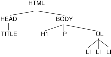
According to the definition of HTML 4, HEAD elements will be inferred during parsing and become part of the document tree even if the "head" tags are not in the document source. Similarly, the parser knows where the P and LI elements end, even though there are no </p> and </li> tags in the source.
Documents written in XHTML (and other XML-based languages) behave differently: there are no inferred elements and all elements must have end tags.
3.2. UA Conformance
This section defines conformance with the CSS 2 specification only. There may be other levels of CSS in the future that may require a user agent to implement a different set of features in order to conform.
In general, the following points must be observed by a user agent claiming conformance to this specification:
- It must recognize one or more of the CSS 2 media types.
- For each source document, it must attempt to retrieve all associated style sheets that are appropriate for the recognized media types. If it cannot retrieve all associated style sheets (for instance, because of network errors), it must display the document using those it can retrieve.
- It must parse the style sheets according to this specification. In particular, it must recognize all at-rules, blocks, declarations, and selectors (see the grammar of CSS 2). If a user agent encounters a property that applies for a supported media type, the user agent must parse the value according to the property definition. This means that the user agent must accept all valid values and must ignore declarations with invalid values. User agents must ignore rules that apply to unsupported media types.
- For each element in a document tree, it must assign a value for every property according to the property’s definition and the rules of cascading and inheritance.
- If the source document comes with alternate style sheet sets (such as with the "alternate" keyword in HTML 4 [HTML401]), the UA must allow the user to select which style sheet set the UA should apply.
- The UA must allow the user to turn off the influence of author style sheets.
Not every user agent must observe every point, however:
- An application that reads style sheets without rendering any content (e.g., a CSS 2 validator) must respect points 1-3.
- An authoring tool is only required to output valid style sheets
- A user agent that renders a document with associated style sheets must respect points 1-6 and render the document according to the media-specific requirements set forth in this specification. Values may be approximated when required by the user agent.
The inability of a user agent to implement part of this specification due to the limitations of a particular device (e.g., a user agent cannot render colors on a monochrome monitor or page) does not imply non-conformance.
UAs must allow users to specify a file that contains the user style sheet. UAs that run on devices without any means of writing or specifying files are exempted from this requirement. Additionally, UAs may offer other means to specify user preferences, for example, through a GUI.
CSS 2 does not define which properties apply to form controls and frames, or how CSS can be used to style them. User agents may apply CSS properties to these elements. Authors are recommended to treat such support as experimental. A future level of CSS may specify this further.
3.3. Error conditions
In general, this document specifies error handling behavior throughout the specification. For example, see the rules for handling parsing errors.
3.4. The text/css content type
CSS style sheets that exist in separate files are sent over the Internet as a sequence of bytes accompanied by encoding information. The structure of the transmission, termed a message entity, is defined by RFC 2045 and RFC 2616 (see [RFC2045] and [RFC2616]). A message entity with a content type of "text/css" represents an independent CSS document. The "text/css" content type has been registered by RFC 2318 ([RFC2318]).
4. Syntax and basic data types
4.1. Syntax
This section describes a grammar (and forward-compatible parsing rules) common to any level of CSS (including CSS 2). Future updates of CSS will adhere to this core syntax, although they may add additional syntactic constraints.
These descriptions are normative. They are also complemented by the normative grammar rules presented in Appendix G.
In this specification, the expressions "immediately before" or "immediately after" mean with no intervening white space or comments.
4.1.1. Tokenization
All levels of CSS — level 1, level 2, and any future levels — use the same core syntax. This allows UAs to parse (though not completely understand) style sheets written in levels of CSS that did not exist at the time the UAs were created. Designers can use this feature to create style sheets that work with older user agents, while also exercising the possibilities of the latest levels of CSS.
At the lexical level, CSS style sheets consist of a sequence of tokens. The list of tokens for CSS is as follows. The definitions use Lex-style regular expressions. Octal codes refer to ISO 10646 ([ISO10646]). As in Lex, in case of multiple matches, the longest match determines the token.
| Token | Definition |
|---|---|
|
| |
| IDENT | {ident}
|
| ATKEYWORD | @{ident}
|
| STRING | {string}
|
| BAD_STRING | {badstring}
|
| BAD_URI | {baduri}
|
| BAD_COMMENT | {badcomment}
|
| HASH | #{name}
|
| NUMBER | {num}
|
| PERCENTAGE | {num}%
|
| DIMENSION | {num}{ident}
|
| URI | url\({w}{string}{w}\)
|
| UNICODE-RANGE | u\+[0-9a-f?]{1,6}(-[0-9a-f]{1,6})?
|
| CDO | <!--
|
| CDC | -->
|
| : | :
|
| ; | ;
|
| { | \{
|
| } | \}
|
| ( | \(
|
| ) | \)
|
| [ | \[
|
| ] | \]
|
| S | [ \t\r\n\f]+
|
| COMMENT | \/\*[^*]*\*+([^/*][^*]*\*+)*\/
|
| FUNCTION | {ident}\(
|
| INCLUDES | ~=
|
| DASHMATCH | |=
|
| DELIM | any other character not matched by the above rules, and neither a single nor a double quote |
The macros in curly braces ({}) above are defined as follows:
| Macro | Definition |
|---|---|
|
| |
| ident | [-]?{nmstart}{nmchar}*
|
| name | {nmchar}+
|
| nmstart | [_a-z]|{nonascii}|{escape}
|
| nonascii | [^\0-\237]
|
| unicode | \\[0-9a-f]{1,6}(\r\n|[ \n\r\t\f])?
|
| escape | {unicode}|\\[^\n\r\f0-9a-f]
|
| nmchar | [_a-z0-9-]|{nonascii}|{escape}
|
| num | [0-9]+|[0-9]*\.[0-9]+
|
| string | {string1}|{string2}
|
| string1 | \"([^\n\r\f\\"]|\\{nl}|{escape})*\"
|
| string2 | \'([^\n\r\f\\']|\\{nl}|{escape})*\'
|
| badstring | {badstring1}|{badstring2}
|
| badstring1 | \"([^\n\r\f\\"]|\\{nl}|{escape})*\\?
|
| badstring2 | \'([^\n\r\f\\']|\\{nl}|{escape})*\\?
|
| badcomment | {badcomment1}|{badcomment2}
|
| badcomment1 | \/\*[^*]*\*+([^/*][^*]*\*+)*
|
| badcomment2 | \/\*[^*]*(\*+[^/*][^*]*)*
|
| baduri | {baduri1}|{baduri2}|{baduri3}
|
| baduri1 | url\({w}([!#$%&*-~]|{nonascii}|{escape})*{w}
|
| baduri2 | url\({w}{string}{w}
|
| baduri3 | url\({w}{badstring}
|
| nl | \n|\r\n|\r|\f
|
| w | [ \t\r\n\f]*
|
For example, the rule of the longest match means that
"red-->" is tokenized as the IDENT "red--"
followed by the DELIM ">", rather than as an IDENT
followed by a CDC.
Below is the core syntax for CSS. The sections that follow describe how to use it. Appendix G describes a more restrictive grammar that is closer to the CSS level 2 language. Parts of style sheets that can be parsed according to this grammar but not according to the grammar in Appendix G are among the parts that will be ignored according to the rules for handling parsing errors.
stylesheet : [ CDO | CDC | S | statement ]*;
statement : ruleset | at-rule;
at-rule : ATKEYWORD S* any* [ block | ';' S* ];
block : '{' S* [ any | block | ATKEYWORD S* | ';' S* ]* '}' S*;
ruleset : selector? '{' S* declaration? [ ';' S* declaration? ]* '}' S*;
selector : any+;
declaration : property S* ':' S* value;
property : IDENT;
value : [ any | block | ATKEYWORD S* ]+;
any : [ IDENT | NUMBER | PERCENTAGE | DIMENSION | STRING
| DELIM | URI | HASH | UNICODE-RANGE | INCLUDES
| DASHMATCH | ':' | FUNCTION S* [any|unused]* ')'
| '(' S* [any|unused]* ')' | '[' S* [any|unused]* ']'
] S*;
unused : block | ATKEYWORD S* | ';' S* | CDO S* | CDC S*;
The "unused" production is not used in CSS and will not be used by any future extension. It is included here only to help with error handling. (See 4.2 "Rules for handling parsing errors.")
COMMENT tokens do not occur in the grammar (to keep it readable), but any number of these tokens may appear anywhere outside other tokens. (Note, however, that a comment before or within the @charset rule disables the @charset.)
The token S in the grammar above stands for white space. Only the characters "space" ( U+0020), "tab" (U+0009), "line feed" (U+000A), "carriage return" (U+000D), and "form feed" (U+000C) can occur in white space. Other space-like characters, such as "em-space" (U+2003) and "ideographic space" (U+3000), are never part of white space.
The meaning of input that cannot be tokenized or parsed is undefined in CSS 2.
4.1.2. Keywords
Keywords have the form of identifiers. Keywords must not be placed between quotes ("..." or '...'). Thus,
red
is a keyword, but
"red"
is not. (It is a string.) Other illegal examples:
4.1.2.1. Vendor-specific extensions
In CSS, identifiers may begin with '-' (dash) or '_' (underscore). Keywords
and property names beginning
with -' or '_' are reserved for vendor-specific extensions. Such vendor-specific extensions should have one of the following formats:
'-' + vendor identifier + '-' + meaningful name '_' + vendor identifier + '-' + meaningful name
For example, if XYZ organization added a property to describe the color of the border on the East side of the display, they might call it -xyz-border-east-color.
Other known examples:
\-moz-box-sizing \-moz-border-radius \-wap-accesskey
An initial dash or underscore is guaranteed never to be used in a property or keyword by any current or future level of CSS. Thus typical CSS implementations may not recognize such properties and may ignore them according to the rules for handling parsing errors. However, because the initial dash or underscore is part of the grammar, CSS 2 implementers should always be able to use a CSS-conforming parser, whether or not they support any vendor-specific extensions.
Authors should avoid vendor-specific extensions
4.1.2.2. Informative Historical Notes
This section is informative.
At the time of writing, the following prefixes are known to exist:
| prefix | organization |
|---|---|
-ms-, mso-
| Microsoft |
-moz-
| Mozilla |
-o-, -xv-
| Opera Software |
-atsc-
| Advanced Television Standards Committee |
-wap-
| The WAP Forum |
-khtml-
| KDE |
-webkit-
| Apple |
prince-
| YesLogic |
-ah-
| Antenna House |
-hp-
| Hewlett Packard |
-ro-
| Real Objects |
-rim-
| Research In Motion |
-tc-
| TallComponents |
4.1.3. Characters and case
The following rules always hold:
- All CSS syntax is case-insensitive within the ASCII range (i.e., [a-z] and [A-Z] are equivalent), except for parts that are not under the control of CSS. For example, the case-sensitivity of values of the HTML attributes "id" and "class", of font names, and of URIs lies outside the scope of this specification. Note in particular that element names are case-insensitive in HTML, but case-sensitive in XML.
-
In CSS, identifiers (including element names, classes, and IDs in selectors) can contain only the
characters [a-zA-Z0-9] and ISO 10646 characters U+00A0 and higher,
plus the hyphen (-) and the underscore (_); they cannot start with
a digit, two hyphens, or a hyphen followed by a digit.
Identifiers can also contain escaped characters and any ISO 10646
character as a numeric code (see next item). For instance, the identifier "B&W?" may
be written as "B\&W\?" or "B\26 W\3F".
Note that Unicode is code-by-code equivalent to ISO 10646 (see [UNICODE] and [ISO10646]).
-
In CSS 2, a backslash (\) character can indicate one
of three types of character
escape. Inside a CSS comment, a backslash stands for
itself, and if a backslash is immediately followed by the end of
the style sheet, it also stands for itself (i.e., a DELIM token).
First, inside a string, a backslash followed by a newline is ignored (i.e., the string is deemed not to contain either the backslash or the newline). Outside a string, a backslash followed by a newline stands for itself (i.e., a DELIM followed by a newline).
Second, it cancels the meaning of special CSS characters. Any character (except a hexadecimal digit, linefeed, carriage return, or form feed) can be escaped with a backslash to remove its special meaning. For example, "\"" is a string consisting of one double quote. Style sheet preprocessors must not remove these backslashes from a style sheet since that would change the style sheet’s meaning.
Third, backslash escapes allow authors to refer to characters they cannot easily put in a document. In this case, the backslash is followed by at most six hexadecimal digits (0..9A..F), which stand for the ISO 10646 ([ISO10646]) character with that number, which must not be zero. (It is undefined in CSS 2 what happens if a style sheet does contain a character with Unicode codepoint zero.) If a character in the range [0-9a-fA-F] follows the hexadecimal number, the end of the number needs to be made clear. There are two ways to do that:
- with a space (or other white space character): "\26 B" ("&B"). In this case, user agents should treat a "CR/LF" pair (U+000D/U+000A) as a single white space character.
- by providing exactly 6 hexadecimal digits: "\000026B" ("&B")
In fact, these two methods may be combined. Only one white space character is ignored after a hexadecimal escape. Note that this means that a "real" space after the escape sequence must be doubled.
If the number is outside the range allowed by Unicode (e.g., "\110000" is above the maximum 10FFFF allowed in current Unicode), the UA may replace the escape with the "replacement character" (U+FFFD). If the character is to be displayed, the UA should show a visible symbol, such as a "missing character" glyph (cf. 15.2, point 5).
-
Note: Backslash escapes are always
considered to be part of an identifier or a string (i.e.,
"\7B" is not punctuation, even though "{" is, and "\32" is allowed
at the start of a class name, even though "2" is not).
The identifier "te\st" is exactly the same identifier as "test".
4.1.4. Statements
A CSS style sheet, for any level of CSS, consists of a list of statements (see the grammar above). There are two kinds of statements: at-rules and rule sets. There may be white space around the statements.
4.1.5. At-rules
At-rules start with an at-keyword, an '@' character followed immediately by an identifier (for example, '@import', '@page').
An at-rule consists of everything up to and including the next semicolon (;) or the next block, whichever comes first.
CSS 2 user agents must ignore any '@import' rule that occurs inside a block or after any non-ignored statement other than an @charset or an @import rule.
Assume, for example, that a CSS 2 parser encounters this style sheet:
@import "subs.css";
h1 { color: blue }
@import "list.css";
The second '@import' is illegal according to CSS 2. The CSS 2 parser ignores the whole at-rule, effectively reducing the style sheet to:
@import "subs.css" ; h1 { color : blue}
In the following example, the second '@import' rule is invalid, since it occurs inside a '@media' block.
@import "subs.css";
@media print {
@import "print-main.css";
body { font-size: 10pt }
}
h1 {color: blue }
Instead, to achieve the effect of only importing a style sheet for print media, use the @import rule with media syntax, e.g.:
@import "subs.css" ; @import "print-main.css" print; @media print{ body { font-size : 10 pt } } h1 { color : blue}
4.1.6. Blocks
A block starts with a left curly brace ({) and ends with the matching right curly brace (}). In between there may be any tokens, except that parentheses (( )), brackets ([ ]), and braces ({ }) must always occur in matching pairs and may be nested. Single (') and double quotes (") must also occur in matching pairs, and characters between them are parsed as a string. See Tokenization above for the definition of a string.
Here is an example of a block. Note that the right brace between the double quotes does not match the opening brace of the block, and that the second single quote is an escaped character, and thus does not match the first single quote:
{ causta: "}" + ({7} * '\'') }
Note that the above rule is not valid CSS 2, but it is still a block as defined above.
4.1.7. Rule sets, declaration blocks, and selectors
A rule set (also called "rule") consists of a selector followed by a declaration block.
A declaration block starts with a left curly brace ({) and ends with the matching right curly brace (}). In between there must be a list of zero or more semicolon-separated (;) declarations.
The selector (see also the section on selectors) consists of everything up to (but not including) the first left curly brace ({). A selector always goes together with a declaration block. When a user agent cannot parse the selector (i.e., it is not valid CSS 2), it must ignore the selector and the following declaration block (if any) as well.
CSS 2 gives a special meaning to the comma (,) in selectors. However, since it is not known if the comma may acquire other meanings in future updates of CSS, the whole statement should be ignored if there is an error anywhere in the selector, even though the rest of the selector may look reasonable in CSS 2.
For example, since the "&" is not a valid token in a CSS 2 selector, a CSS 2 user agent must ignore the whole second line, and not set the color of H3 to red:
h1, h2 {color: green }
h3, h4 & h5 {color: red }
h6 {color: black }
Here is a more complex example. The first two pairs of curly braces are inside a string, and do not mark the end of the selector. This is a valid CSS 2 rule.
p[example="public class foo\ { \ private int x;\ \ foo(int x) {\ this.x = x;\ }\ \ }"] { color: red }
4.1.8. Declarations and properties
A declaration is either empty or consists of a property name, followed by a colon (:), followed by a property value. Around each of these there may be white space.
Because of the way selectors work, multiple declarations for the same selector may be organized into semicolon (;) separated groups.
Thus, the following rules:
h1 { font-weight : bold} h1 { font-size : 12 px } h1 { line-height : 14 px } h1 { font-family : Helvetica} h1 { font-variant : normal} h1 { font-style : normal}
are equivalent to:
h1 { font-weight : bold; font-size : 12 px ; line-height : 14 px ; font-family : Helvetica; font-variant : normal; font-style : normal}
A property name is an identifier. Any token may occur in the property value. Parentheses ("( )"), brackets ("[ ]"), braces ("{ }"), single quotes ('), and double quotes (") must come in matching pairs, and semicolons not in strings must be escaped. Parentheses, brackets, and braces may be nested. Inside the quotes, characters are parsed as a string.
The syntax of values is specified separately for each property, but in any case, values are built from identifiers, strings, numbers, lengths, percentages, URIs, colors, etc.
A user agent must ignore a declaration with an invalid property name or an invalid value. Every CSS property has its own syntactic and semantic restrictions on the values it accepts.
For example, assume a CSS 2 parser encounters this style sheet:
h1 { color: red; font-style: 12pt } /* Invalid value: 12pt */
p { color: blue; font-vendor: any; /* Invalid prop.: font-vendor */
font-variant: small-caps }
em em { font-style: normal }
The second declaration on the first line has an invalid value 12pt. The second declaration on the second line contains an undefined property font-vendor. The CSS 2 parser will ignore these declarations, effectively reducing the style sheet to:
h1 { color: red; }
p { color: blue; font-variant: small-caps }
em em { font-style: normal }
4.1.9. Comments
Comments begin with the characters "/*" and end with the characters "*/". They may occur anywhere outside other tokens, and their contents have no influence on the rendering. Comments may not be nested.
CSS also allows the SGML comment delimiters ("<!--" and "-->") in certain places defined by the grammar, but they do not delimit CSS comments. They are permitted so that style rules appearing in an HTML source document (in the STYLE element) may be hidden from pre-HTML 3.2 user agents. See the HTML 4 specification ([HTML401]) for more information.
4.2. Rules for handling parsing errors
In some cases, user agents must ignore part of an illegal style sheet. This specification defines ignore to mean that the user agent parses the illegal part (in order to find its beginning and end), but otherwise acts as if it had not been there. CSS 2 reserves for future updates of CSS all property:value combinations and @-keywords that do not contain an identifier beginning with dash or underscore. Implementations must ignore such combinations (other than those introduced by future updates of CSS).
To ensure that new properties and new values for existing properties can be added in the future, user agents are required to obey the following rules when they encounter the following scenarios:
-
Unknown properties. User agents must ignore a declaration with an unknown
property. For example, if the style sheet is:
h1 { color: red; rotation: 70minutes }
the user agent will treat this as if the style sheet had been
h1 { color: red } -
Illegal values. User agents must ignore a
declaration with an illegal value. For example:
img { float: left } /* correct CSS 2 */ img { float: left here } /* "here" is not a value of 'float' */ img { background: "red" } /* keywords cannot be quoted */ img { border-width: 3 } /* a unit must be specified for length values */A CSS 2 parser would honor the first rule and ignore the rest, as if the style sheet had been:
img { float: left } img { } img { } img { }A user agent conforming to a future CSS specification may accept one or more of the other rules as well.
-
Malformed declarations. User agents must handle
unexpected tokens encountered while parsing a declaration by reading
until the end of the declaration, while observing the rules for matching
pairs of (), [], {}, "", and '', and correctly handling escapes. For
example, a malformed declaration may be missing a property name, colon (:), or
property value. The following are all equivalent:
p { color:green } p { color:green; color } /* malformed declaration missing ':', value */ p { color:red; color; color:green } /* same with expected recovery */ p { color:green; color: } /* malformed declaration missing value */ p { color:red; color:; color:green } /* same with expected recovery */ p { color:green; color{;color:maroon} } /* unexpected tokens { } */ p { color:red; color{;color:maroon}; color:green } /* same with recovery */ -
Malformed statements. User agents must handle
unexpected tokens encountered while parsing a statement by reading
until the end of the statement, while observing the rules for matching
pairs of (), [], {}, "", and '', and correctly handling escapes. For
example, a malformed statement may contain an unexpected closing brace
or at-keyword. E.g., the following lines are all ignored:
p @here {color: red} /* ruleset with unexpected at-keyword "@here" */ @foo @bar; /* at-rule with unexpected at-keyword "@bar" */ }} {{ - }} /* ruleset with unexpected right brace */ ) ( {} ) p {color: red } /* ruleset with unexpected right parenthesis */ -
At-rules with unknown at-keywords. User agents must ignore an invalid at-keyword together with everything following it, up to the
end of the block that contains the invalid at-keyword, or up to and
including the next semicolon (;), or up to and including the next
block ({...}), whichever comes first. For example, consider the
following:
@three-dee { @background-lighting { azimuth: 30deg; elevation: 190deg; } h1 { color: red } } h1 { color: blue }The '@three-dee' at-rule is not part of CSS 2. Therefore, the whole at-rule (up to, and including, the third right curly brace) is ignored. A CSS 2 user agent ignores it, effectively reducing the style sheet to:
h1 { color: blue }Something inside an at-rule that is ignored because it is invalid, such as an invalid declaration within an @media-rule, does not make the entire at-rule invalid.
-
Unexpected end of style sheet.
User agents must close all open constructs (for example: blocks, parentheses, brackets, rules, strings, and comments) at the end of the style sheet. For example:
@media screen { p:before { content: 'Hellowould be treated the same as:
@media screen { p:before { content: 'Hello'; } }in a conformant UA.
-
Unexpected end of string.
User agents must close strings upon reaching the end of a line (i.e., before an unescaped line feed, carriage return or form feed character), but then drop the construct (declaration or rule) in which the string was found. For example:
p { color: green; font-family: 'Courier New Times color: red; color: green; }...would be treated the same as:
p { color : green; color : green; } ...because the second declaration (from font-family to the semicolon after 'color: red') is invalid and is dropped.
- See also Rule sets, declaration blocks, and selectors for parsing rules for declaration blocks.
4.3. Values
4.3.1. Integers and real numbers
Some value types may have integer values (denoted by <integer>) or real number values (denoted by <number>). Real numbers and integers are specified in decimal notation only. An <integer> consists of one or more digits "0" to "9". A <number> can either be an <integer>, or it can be zero or more digits followed by a dot (.) followed by one or more digits. Both integers and real numbers may be preceded by a "-" or "+" to indicate the sign. \-0 is equivalent to 0 and is not a negative number.
Note that many properties that allow an integer or real number as a value actually restrict the value to some range, often to a non-negative value.
4.3.2. Lengths
Lengths refer to distance measurements.
The format of a length value (denoted by <length> in this specification) is a <number> (with or without a decimal point) immediately followed by a unit identifier (e.g., px, em, etc.). After a zero length, the unit identifier is optional.
Some properties allow negative length values, but this may complicate the formatting model and there may be implementation-specific limits. If a negative length value cannot be supported, it should be converted to the nearest value that can be supported.
If a negative length value is set on a property that does not allow negative length values, the declaration is ignored.
In cases where the used length cannot be supported, user agents must approximate it in the actual value.
There are two types of length units: relative and absolute. Relative length units specify a length relative
to another length property. Style sheets that use relative units can more easily scale from one output environment to another.
Relative units are:
The em unit is equal to the computed value of the font-size property of the element on which it is used. The exception is when em occurs in the value of the font-size property itself, in which case it refers to the font size of the parent element. It may be used for vertical or horizontal measurement. (This unit is also sometimes called the quad-width in typographic texts.)
The ex unit is defined by the element’s first available font. The exception is when ex occurs in the value of the font-size property, in which case it refers to the ex of the parent element.
The x-height is so called because it is often equal to the height of the lowercase "x". However, an ex is defined even for fonts that do not contain an "x".
The x-height of a font can be found in different ways. Some fonts contain reliable metrics for the x-height. If reliable font metrics are not available, UAs may determine the x-height from the height of a lowercase glyph. One possible heuristic is to look at how far the glyph for the lowercase "o" extends below the baseline, and subtract that value from the top of its bounding box. In the cases where it is impossible or impractical to determine the x-height, a value of 0.5em should be used.
The rule:
h1 { line-height : 1.2 em }
means that the line height of "h1" elements will be 20% greater than the font size of the "h1" elements. On the other hand:
h1 { font-size : 1.2 em }
means that the font-size of "h1" elements will be 20% greater than the font size inherited by "h1" elements.
When specified for the root of the document tree (e.g., "HTML" in HTML), em and ex refer to the property’s initial value.
Child elements do not inherit the relative values specified for their parent; they inherit the computed values.
In the following rules, the computed text-indent value of "h1" elements will be 36px, not 45px, if "h1" is a child of the "body" element.
body { font-size : 12 px ; text-indent : 3 em ; /* i.e., 36px */ } h1 { font-size : 15 px }
Absolute
length
units are fixed in relation to each other. They are mainly useful when the output environment is known. The absolute units consist of the physical units (in, cm, mm, pt, pc) and the px unit:
- in: inches — 1in is equal to 2.54cm.
- cm: centimeters
- mm: millimeters
- pt: points — the points used by CSS are equal to 1/72nd of 1in.
- pc: picas — 1pc is equal to 12pt.
- px: pixel units — 1px is equal to 0.75pt.
For a CSS device, these dimensions are either anchored (i) by relating the physical units to their physical measurements, or (ii) by relating the pixel unit to the reference pixel. For print media and similar high-resolution devices, the anchor unit should be one of the standard physical units (inches, centimeters, etc). For lower-resolution devices, and devices with unusual viewing distances, it is recommended instead that the anchor unit be the pixel unit. For such devices it is recommended that the pixel unit refer to the whole number of device pixels that best approximates the reference pixel.
Note that if the anchor unit is the pixel unit, the physical units might not match their physical measurements. Alternatively if the anchor unit is a physical unit, the pixel unit might not map to a whole number of device pixels.
Note that this definition of the pixel unit and the physical units differs from previous versions of CSS. In particular, in previous versions of CSS the pixel unit and the physical units were not related by a fixed ratio: the physical units were always tied to their physical measurements while the pixel unit would vary to most closely match the reference pixel. (This change was made because too much existing content relies on the assumption of 96dpi, and breaking that assumption breaks the content.)
The reference pixel is the visual angle of one pixel on a device with a pixel density of 96dpi and a distance from the reader of an arm’s length. For a nominal arm’s length of 28 inches, the visual angle is therefore about 0.0213 degrees. For reading at arm’s length, 1px thus corresponds to about 0.26 mm (1/96 inch).
The image below illustrates the effect of viewing distance on the size of a reference pixel: a reading distance of 71 cm (28 inches) results in a reference pixel of 0.26 mm, while a reading distance of 3.5 m (12 feet) results in a reference pixel of 1.3 mm.
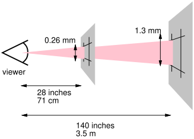
This second image illustrates the effect of a device’s resolution on the pixel unit: an area of 1px by 1px is covered by a single dot in a low-resolution device (e.g. a typical computer display), while the same area is covered by 16 dots in a higher resolution device (such as a printer).

h1 { margin : 0.5 in } /* inches */ h2 { line-height : 3 cm } /* centimeters */ h3 { word-spacing : 4 mm } /* millimeters */ h4 { font-size : 12 pt } /* points */ h4 { font-size : 1 pc } /* picas */ p { font-size : 12 px } /* px */
4.3.3. Percentages
The format of a percentage value (denoted by <percentage> in this specification) is a <number> immediately followed by '%'.
Percentage values are always relative to another value, for example a length. Each property that allows percentages also defines the value to which the percentage refers. The value may be that of another property for the same element, a property for an ancestor element, or a value of the formatting context (e.g., the width of a containing block). When a percentage value is set for a property of the root element and the percentage is defined as referring to the inherited value of some property, the resultant value is the percentage times the initial value of that property.
Since child elements (generally) inherit the computed values of their parent, in the following example, the children of the P element will inherit a value of 12px for line-height, not the percentage value (120%):
p { font-size : 10 px } p { line-height : 120 % } /* 120% of 'font-size' */
4.3.4. URLs and URIs
URI values (Uniform Resource Identifiers, see [RFC3986], which includes URLs, URNs, etc) in this specification are denoted by <uri>. The functional notation used to designate URIs in property values is "url()", as in:
The format of a URI value is 'url(' followed by optional white space followed by an optional single quote (') or double quote (") character followed by the URI itself, followed by an optional single quote (') or double quote (") character followed by optional white space followed by ')'. The two quote characters must be the same.
Some characters appearing in an unquoted URI, such as parentheses, white space characters, single quotes (') and double quotes ("), must be escaped with a backslash so that the resulting URI value is a URI token: '\(', '\)'.
Depending on the type of URI, it might also be possible to write the above characters as URI-escapes (where "(" = %28, ")" = %29, etc.) as described in [RFC3986].
Note that COMMENT tokens cannot occur within other tokens: thus, "url(/*x*/pic.png)" denotes the URI "/*x*/pic.png", not "pic.png".
In order to create modular style sheets that are not dependent on the absolute location of a resource, authors may use relative URIs. Relative URIs (as defined in [RFC3986]) are resolved to full URIs using a base URI. RFC 3986, section 5, defines the normative algorithm for this process. For CSS style sheets, the base URI is that of the style sheet, not that of the source document.
For example, suppose the following rule:
body { background : url ( "yellow" ) }
is located in a style sheet designated by the URI:
http://www.example.org/style/basic.css
The background of the source document’s BODY will be tiled with whatever image is described by the resource designated by the URI
http://www.example.org/style/yellow
User agents may vary in how they handle invalid URIs or URIs that designate unavailable or inapplicable resources.
4.3.5. Counters
Counters are denoted by case-sensitive identifiers (see the counter-increment and counter-reset properties). To refer to the value of a counter, the notation 'counter(<identifier>)' or 'counter(<identifier>, <list-style-type>)', with optional white space separating the tokens, is used. The default style is decimal.
To refer to a sequence of nested counters of the same name, the notation is 'counters(<identifier>, <string>)' or 'counters(<identifier>, <string>, <list-style-type>)' with optional white space separating the tokens.
See "Nested counters and scope" in the chapter on generated content for how user agents must determine the value or values of the counter. See the definition of counter values of the content property for how it must convert these values to a string.
In CSS 2, the values of counters can only be referred to from the content property. Note that none is a possible <list-style-type>: 'counter(x, none)' yields an empty string.
Here is a style sheet that numbers paragraphs (p) for each chapter (h1). The paragraphs are numbered with roman numerals, followed by a period and a space:
p { counter-increment : par-num} h1 { counter-reset : par-num} p:before { content : counter ( par-num, upper-roman) ". " }
4.3.6. Colors
A <color> is either a keyword or a numerical RGB specification.
The list of color keywords is: aqua, black, blue, fuchsia, gray, green, lime, maroon, navy, olive, orange, purple, red, silver, teal, white, and yellow. These 17 colors have the following values:
In addition to these color keywords, users may specify keywords that correspond to the colors used by certain objects in the user’s environment. Please consult the section on system colors for more information.
The RGB color model is used in numerical color specifications. These examples all specify the same color:
em { color : #f00} /* #rgb */ em { color : #ff0000} /* #rrggbb */ em { color : rgb ( 255 , 0 , 0 ) } em { color : rgb ( 100 % , 0 % , 0 % ) }
The format of an RGB value in hexadecimal notation is a '#' immediately followed by either three or six hexadecimal characters. The three-digit RGB notation (#rgb) is converted into six-digit form (#rrggbb) by replicating digits, not by adding zeros. For example, #fb0 expands to #ffbb00. This ensures that white (#ffffff) can be specified with the short notation (#fff) and removes any dependencies on the color depth of the display.
The format of an RGB value in the functional notation is 'rgb(' followed by a comma-separated list of three numerical values (either three integer values or three percentage values) followed by ')'. The integer value 255 corresponds to 100%, and to F or FF in the hexadecimal notation: rgb(255,255,255) = rgb(100%,100%,100%) = #FFF. White space characters are allowed around the numerical values.
All RGB colors are specified in the sRGB color space (see [SRGB]). User agents may vary in the fidelity with which they represent these colors, but using sRGB provides an unambiguous and objectively measurable definition of what the color should be, which can be related to international standards (see [COLORIMETRY]).
Conforming user agents may limit their color-displaying efforts to performing a gamma-correction on them. sRGB specifies a display gamma of 2.2 under specified viewing conditions. User agents should adjust the colors given in CSS such that, in combination with an output device’s "natural" display gamma, an effective display gamma of 2.2 is produced. Note that only colors specified in CSS are affected; e.g., images are expected to carry their own color information.
Values outside the device gamut should be clipped or mapped into the gamut when the gamut is known: the red, green, and blue values must be changed to fall within the range supported by the device. User agents may perform higher quality mapping of colors from one gamut to another. For a typical CRT monitor, whose device gamut is the same as sRGB, the four rules below are equivalent:
em { color : rgb ( 255 , 0 , 0 ) } /* integer range 0 - 255 */ em { color : rgb ( 300 , 0 , 0 ) } /* clipped to rgb(255,0,0) */ em { color : rgb ( 255 , -10 , 0 ) } /* clipped to rgb(255,0,0) */ em { color : rgb ( 110 % , 0 % , 0 % ) } /* clipped to rgb(100%,0%,0%) */
Other devices, such as printers, have different gamuts than sRGB; some colors outside the 0..255 sRGB range will be representable (inside the device gamut), while other colors inside the 0..255 sRGB range will be outside the device gamut and will thus be mapped.
Note. Mapping or clipping of color values should be done to the actual device gamut if known (which may be larger or smaller than 0..255).
4.3.7. Strings
Strings can either be written with double quotes or with single quotes. Double quotes cannot occur inside double quotes, unless escaped (e.g., as '\"' or as '\22'). Analogously for single quotes (e.g., "\'" or "\27").
A string cannot directly contain a newline. To include a newline in a string, use an escape representing the line feed character in ISO-10646 (U+000A), such as "\A" or "\00000a". This character represents the generic notion of "newline" in CSS. See the content property for an example.
It is possible to break strings over several lines, for aesthetic or other reasons, but in such a case the newline itself has to be escaped with a backslash (\). For instance, the following two selectors are exactly the same:
4.3.8. Unsupported Values
If a UA does not support a particular value, it should ignore that value when parsing style sheets, as if that value was an illegal value. For example:
A UA that supports the run-in value for the display property will accept the first display declaration and then "write over" that value with the second display declaration. A UA that does not support the run-in value will process the first display declaration and ignore the second display declaration.
4.4. CSS style sheet representation
A CSS style sheet is a sequence of characters from the Universal Character Set (see [ISO10646]). For transmission and storage, these characters must be encoded by a character encoding that supports the set of characters available in US-ASCII (e.g., UTF-8, ISO 8859-x, SHIFT JIS, etc.). For a good introduction to character sets and character encodings, please consult the HTML 4 specification ([HTML401], chapter 5). See also the XML 1.0 specification ([XML10], sections 2.2 and 4.3.3, and Appendix F).
When a style sheet is embedded in another document, such as in the STYLE element or "style" attribute of HTML, the style sheet shares the character encoding of the whole document.
When a style sheet resides in a separate file, user agents must observe the following priorities when determining a style sheet’s character encoding (from highest priority to lowest):
- An HTTP "charset" parameter in a "Content-Type" field (or similar parameters in other protocols)
- BOM and/or @charset (see below)
-
<link charset="">or other metadata from the linking mechanism (if any) - charset of referring style sheet or document (if any)
- Assume UTF-8
Authors using an @charset rule must place the rule at the very beginning of the style sheet, preceded by no characters. (If a byte order mark is appropriate for the encoding used, it may precede the @charset rule.)
After "@charset", authors specify the name of a character encoding (in quotes). For example:
@charset "ISO-8859-1";@charset must be written literally, i.e., the 10 characters '@charset "' (lowercase, no backslash escapes), followed by the encoding name, followed by '";'.
The name must be a charset name as described in the IANA registry. See [CHARSETS] for a complete list of charsets. Authors should use the charset names marked as "preferred MIME name" in the IANA registry.
User agents must support at least the UTF-8 encoding.
User agents must ignore any @charset rule not at the beginning of the style sheet. When user agents detect the character encoding using the BOM and/or the @charset rule, they should follow the following rules:
- Except as specified in these rules, all @charset rules are ignored.
-
The encoding is detected based on the stream of bytes that begins
the style sheet. The following table gives a set of possibilities for
initial byte sequences (written in hexadecimal). The first row that
matches the beginning of the style sheet gives the result of encoding
detection based on the BOM and/or @charset rule. If no rows match, the
encoding cannot be detected based on the BOM and/or @charset rule. The
notation (...)* refers to repetition for which the best match is the one
that repeats as few times as possible. The bytes marked "XX" are those
used to determine the name of the encoding, by treating them, in the
order given, as a sequence of ASCII characters. Bytes marked "YY" are
similar, but need to be transcoded into ASCII as noted. User agents may
ignore entries in the table if they do not support any encodings
relevant to the entry.
Relationship between initial bytes of sheet and chosen encoding Initial Bytes Result EF BB BF 40 63 68 61 72 73 65 74 20 22 (XX)* 22 3B as specified EF BB BF UTF-8 40 63 68 61 72 73 65 74 20 22 (XX)* 22 3B as specified FE FF 00 40 00 63 00 68 00 61 00 72 00 73 00 65 00 74 00 20 00 22 (00 XX)* 00 22 00 3B as specified (with BE endianness if not specified) 00 40 00 63 00 68 00 61 00 72 00 73 00 65 00 74 00 20 00 22 (00 XX)* 00 22 00 3B as specified (with BE endianness if not specified) FF FE 40 00 63 00 68 00 61 00 72 00 73 00 65 00 74 00 20 00 22 00 (XX 00)* 22 00 3B 00 as specified (with LE endianness if not specified) 40 00 63 00 68 00 61 00 72 00 73 00 65 00 74 00 20 00 22 00 (XX 00)* 22 00 3B 00 as specified (with LE endianness if not specified) 00 00 FE FF 00 00 00 40 00 00 00 63 00 00 00 68 00 00 00 61 00 00 00 72 00 00 00 73 00 00 00 65 00 00 00 74 00 00 00 20 00 00 00 22 (00 00 00 XX)* 00 00 00 22 00 00 00 3B as specified (with BE endianness if not specified) 00 00 00 40 00 00 00 63 00 00 00 68 00 00 00 61 00 00 00 72 00 00 00 73 00 00 00 65 00 00 00 74 00 00 00 20 00 00 00 22 (00 00 00 XX)* 00 00 00 22 00 00 00 3B as specified (with BE endianness if not specified) 00 00 FF FE 00 00 40 00 00 00 63 00 00 00 68 00 00 00 61 00 00 00 72 00 00 00 73 00 00 00 65 00 00 00 74 00 00 00 20 00 00 00 22 00 (00 00 XX 00)* 00 00 22 00 00 00 3B 00 as specified (with 2143 endianness if not specified) 00 00 40 00 00 00 63 00 00 00 68 00 00 00 61 00 00 00 72 00 00 00 73 00 00 00 65 00 00 00 74 00 00 00 20 00 00 00 22 00 (00 00 XX 00)* 00 00 22 00 00 00 3B 00 as specified (with 2143 endianness if not specified) FE FF 00 00 00 40 00 00 00 63 00 00 00 68 00 00 00 61 00 00 00 72 00 00 00 73 00 00 00 65 00 00 00 74 00 00 00 20 00 00 00 22 00 00 (00 XX 00 00)* 00 22 00 00 00 3B 00 00 as specified (with 3412 endianness if not specified) 00 40 00 00 00 63 00 00 00 68 00 00 00 61 00 00 00 72 00 00 00 73 00 00 00 65 00 00 00 74 00 00 00 20 00 00 00 22 00 00 (00 XX 00 00)* 00 22 00 00 00 3B 00 00 as specified (with 3412 endianness if not specified) FF FE 00 00 40 00 00 00 63 00 00 00 68 00 00 00 61 00 00 00 72 00 00 00 73 00 00 00 65 00 00 00 74 00 00 00 20 00 00 00 22 00 00 00 (XX 00 00 00)* 22 00 00 00 3B 00 00 00 as specified (with LE endianness if not specified) 40 00 00 00 63 00 00 00 68 00 00 00 61 00 00 00 72 00 00 00 73 00 00 00 65 00 00 00 74 00 00 00 20 00 00 00 22 00 00 00 (XX 00 00 00)* 22 00 00 00 3B 00 00 00 as specified (with LE endianness if not specified) 00 00 FE FF UTF-32-BE FF FE 00 00 UTF-32-LE 00 00 FF FE UTF-32-2143 FE FF 00 00 UTF-32-3412 FE FF UTF-16-BE FF FE UTF-16-LE 7C 83 88 81 99 A2 85 A3 40 7F (YY)* 7F 5E as specified, transcoded from EBCDIC to ASCII AE 83 88 81 99 A2 85 A3 40 FC (YY)* FC 5E as specified, transcoded from IBM1026 to ASCII 00 63 68 61 72 73 65 74 20 22 (YY)* 22 3B as specified, transcoded from GSM 03.38 to ASCII analogous patterns User agents may support additional, analogous, patterns if they support encodings that are not handled by the patterns here -
If the encoding is detected based on one of the entries in the table
above marked "as specified", the user agent ignores the style sheet if it
does not parse an appropriate @charset rule at the beginning of the
stream of characters resulting from decoding in the chosen @charset.
This ensures that:
- @charset rules should only function if they are in the encoding of the style sheet,
- byte order marks are ignored only in encodings that support a byte order mark, and
- encoding names cannot contain newlines.
User agents must ignore style sheets in unknown encodings.
4.4.1. Referring to characters not represented in a character encoding
A style sheet may have to refer to characters that cannot be represented in the current character encoding. These characters must be written as escaped references to ISO 10646 characters. These escapes serve the same purpose as numeric character references in HTML or XML documents (see [HTML401], chapters 5 and 25).
The character escape mechanism should be used when only a few characters must be represented this way. If most of a style sheet requires escaping, authors should encode it with a more appropriate encoding (e.g., if the style sheet contains a lot of Greek characters, authors might use "ISO-8859-7" or "UTF-8").
Intermediate processors using a different character encoding may translate these escaped sequences into byte sequences of that encoding. Intermediate processors must not, on the other hand, alter escape sequences that cancel the special meaning of an ASCII character.
Conforming user agents must correctly map to ISO-10646 all characters in any character encodings that they recognize (or they must behave as if they did).
For example, a style sheet transmitted as ISO-8859-1 (Latin-1) cannot contain Greek letters directly: "κουρος" (Greek: "kouros") has to be written as "\3BA\3BF\3C5\3C1\3BF\3C2".
Note. In HTML 4, numeric character references are interpreted in "style" attribute values but not in the content of the STYLE element. Because of this asymmetry, we recommend that authors use the CSS character escape mechanism rather than numeric character references for both the "style" attribute and the STYLE element. For example, we recommend:
< SPAN style = "font-family: L\FC beck" > </ SPAN > rather than:
< SPAN style = "font-family: Lübeck" > </ SPAN > 5. Selectors
5.1. Pattern matching
In CSS, pattern matching rules determine which style rules apply to elements in the document tree. These patterns, called selectors, may range from simple element names to rich contextual patterns. If all conditions in the pattern are true for a certain element, the selector matches the element.
The case-sensitivity of document language element names in selectors depends on the document language. For example, in HTML, element names are case-insensitive, but in XML they are case-sensitive.
The following table summarizes CSS 2 selector syntax:
| Pattern | Meaning | Described in section |
|---|---|---|
| * | Matches any element. | Universal selector |
| E | Matches any E element (i.e., an element of type E). | Type selectors |
| E F | Matches any F element that is a descendant of an E element. | Descendant selectors |
| E > F | Matches any F element that is a child of an element E. | Child selectors |
| E:first-child | Matches element E when E is the first child of its parent. | The :first-child pseudo-class |
| E:link E:visited | Matches element E if E is the source anchor of a hyperlink of which the target is not yet visited (:link) or already visited (:visited). | The link pseudo-classes |
| E:active E:hover E:focus | Matches E during certain user actions. | The dynamic pseudo-classes |
| E:lang(c) | Matches element of type E if it is in (human) language c (the document language specifies how language is determined). | The :lang() pseudo-class |
| E + F | Matches any F element immediately preceded by a sibling element E. | Adjacent selectors |
| E[foo] | Matches any E element with the "foo" attribute set (whatever the value). | Attribute selectors |
| E[foo="warning"] | Matches any E element whose "foo" attribute value is exactly equal to "warning". | Attribute selectors |
| E[foo~="warning"] | Matches any E element whose "foo" attribute value is a list of space-separated values, one of which is exactly equal to "warning". | Attribute selectors |
| E[lang|="en"] | Matches any E element whose "lang" attribute has a hyphen-separated list of values beginning (from the left) with "en". | Attribute selectors |
| DIV.warning | Language specific. (In HTML, the same as DIV[class~="warning"].) | Class selectors |
| E#myid | Matches any E element with ID equal to "myid". | ID selectors |
5.2. Selector syntax
A simple selector is either a type selector or universal selector followed immediately by zero or more attribute selectors, ID selectors, or pseudo-classes, in any order. The simple selector matches if all of its components match.
Note: the terminology used here in CSS 2 is different from what is used in CSS3. For example, a "simple selector" refers to a smaller part of a selector in CSS3 than in CSS 2. See the CSS3 Selectors module [SELECTORS-3].
A selector is a chain of one or more simple selectors separated by combinators. Combinators are: white space, ">", and "+". White space may appear between a combinator and the simple selectors around it.
The elements of the document tree that match a selector are called subjects of the selector. A selector consisting of a single simple selector matches any element satisfying its requirements. Prepending a simple selector and combinator to a chain imposes additional matching constraints, so the subjects of a selector are always a subset of the elements matching the last simple selector.
One pseudo-element may be appended to the last simple selector in a chain, in which case the style information applies to a subpart of each subject.
5.2.1. Grouping
When several selectors share the same declarations, they may be grouped into a comma-separated list.
In this example, we condense three rules with identical declarations into one. Thus,
h1 { font-family: sans-serif }
h2 { font-family: sans-serif }
h3 { font-family: sans-serif }
is equivalent to:
h1, h2, h3 { font-family: sans-serif }
CSS offers other "shorthand" mechanisms as well, including multiple declarations and shorthand properties.
5.3. Universal selector
The universal selector, written "*", matches the name of any element type. It matches any single element in the document tree.
If the universal selector is not the only component of a simple selector, the "*" may be omitted. For example:
-
*[lang=fr]and[lang=fr]are equivalent. -
*.warningand.warningare equivalent. -
*#myidand#myidare equivalent.
5.4. Type selectors
A type selector matches the name of a document language element type. A type selector matches every instance of the element type in the document tree.
5.5. Descendant selectors
At times, authors may want selectors to match an element that is
the descendant of another element in the document tree (e.g., "Match
those EM elements that are contained by an H1 element"). Descendant
selectors express such a relationship in a pattern. A
descendant selector is made up of two or more selectors separated by white space. A descendant
selector of the form "A B" matches when an element B is an arbitrary descendant of some ancestor element A.
For example, consider the following rules:
h1 { color: red }
em { color: red }
Although the intention of these rules is to add emphasis to text by changing its color, the effect will be lost in a case such as:
< H1 > This headline is< EM > very</ EM > important</ H1 >
We address this case by supplementing the previous rules with a rule that sets the text color to blue whenever an EM occurs anywhere within an H1:
h1 { color: red }
em { color: red }
h1 em { color: blue }
The third rule will match the EM in the following fragment:
< H1 > This< SPAN class = "myclass" > headline is< EM > very</ EM > important</ SPAN ></ H1 >
The following selector:
div * p
matches a P element that is a grandchild or later descendant of a DIV element. Note the white space on either side of the "*" is not part of the universal selector; the white space is a combinator indicating that the DIV must be the ancestor of some element, and that that element must be an ancestor of the P.
The selector in the following rule, which combines descendant and attribute selectors, matches any element that (1) has the "href" attribute set and (2) is inside a P that is itself inside a DIV:
div p *[href]
5.6. Child selectors
A child selector matches when an element is the child of some element. A child selector is made up of two or more selectors separated by ">".
The following rule sets the style of all P elements that are children of BODY:
body > P { line-height: 1.3 }
The following example combines descendant selectors and child selectors:
div ol>li p
It matches a P element that is a descendant of an LI; the LI element must be the child of an OL element; the OL element must be a descendant of a DIV. Notice that the optional white space around the ">" combinator has been left out.
For information on selecting the first child of an element, please see the section on the :first-child pseudo-class below.
5.7. Adjacent sibling selectors
Adjacent sibling selectors have the following syntax: E1 + E2, where E2 is the subject of the selector. The selector matches if E1 and E2 share the same parent in the document tree and E1 immediately precedes E2, ignoring non-element nodes (such as text nodes and comments).
Thus, the following rule states that when a P element immediately follows a MATH element, it should not be indented:
math + p { text-indent: 0 }
The next example reduces the vertical space separating an H1 and an H2 that immediately follows it:
h1 + h2 { margin-top: -5mm }
The following rule is similar to the one in the previous example, except that it adds a class selector. Thus, special formatting only occurs when H1 has class="opener":
h1.opener + h2 { margin-top: -5mm }
5.8. Attribute selectors
CSS 2 allows authors to specify rules that match elements which have certain attributes defined in the source document.
5.8.1. Matching attributes and attribute values
Attribute selectors may match in four ways:
-
[att] - Match when the element sets the "att" attribute, whatever the value of the attribute.
-
[att=val] - Match when the element’s "att" attribute value is exactly "val".
-
[att~=val] - Represents an element with the
attattribute whose value is a white space-separated list of words, one of which is exactly "val". If "val" contains white space, it will never represent anything (since the words are separated by spaces). If "val" is the empty string, it will never represent anything either. -
[att|=val] - Represents an element with the
attattribute, its value either being exactly "val" or beginning with "val" immediately followed by "-" (U+002D). This is primarily intended to allow language subcode matches (e.g., thehreflangattribute on theaelement in HTML) as described in BCP 47 ([BCP47]) or its successor. Forlang(orxml:lang) language subcode matching, please see the:langpseudo-class.
Attribute values must be identifiers or strings. The case-sensitivity of attribute names and values in selectors depends on the document language.
For example, the following attribute selector matches all H1 elements that specify the "title" attribute, whatever its value:
h1[title] { color: blue; }
In the following example, the selector matches all SPAN elements whose "class" attribute has exactly the value "example":
span[class=example] { color: blue; }
Multiple attribute selectors can be used to refer to several attributes of an element, or even several times to the same attribute.
Here, the selector matches all SPAN elements whose "hello" attribute has exactly the value "Cleveland" and whose "goodbye" attribute has exactly the value "Columbus":
span[hello="Cleveland"][goodbye="Columbus"] { color: blue; }
The following selectors illustrate the differences between "=" and "~=". The first selector will match, for example, the value "copyright copyleft copyeditor" for the "rel" attribute. The second selector will only match when the "href" attribute has the value "https://www.w3.org/".
a[rel~="copyright"] a[href="https://www.w3.org/"]
The following rule hides all elements for which the value of the "lang" attribute is "fr" (i.e., the language is French).
*[lang=fr] { display : none }
The following rule will match for values of the "lang" attribute that begin with "en", including "en", "en-US", and "en-cockney":
*[lang|="en"] { color : red }
Similarly, the following aural style sheet rules allow a script to be read aloud in different voices for each role:
DIALOGUE[character=romeo] { voice-family: "Laurence Olivier", charles, male } DIALOGUE[character=juliet] { voice-family: "Vivien Leigh", victoria, female }
5.8.2. Default attribute values in DTDs
Matching takes place on attribute values in the document tree. Default attribute values may be defined in a DTD or elsewhere, but cannot always be selected by attribute selectors. Style sheets should be designed so that they work even if the default values are not included in the document tree.
More precisely, a UA may, but is not required to, read an "external subset" of the DTD but is required to look for default attribute values in the document’s "internal subset." (See [XML10] for definitions of these subsets.) Depending on the UA, a default attribute value defined in the external subset of the DTD might or might not appear in the document tree.
A UA that recognizes an XML namespace [XML-NAMES] may, but is not required to, use its knowledge of that namespace to treat default attribute values as if they were present in the document. (E.g., an XHTML UA is not required to use its built-in knowledge of the XHTML DTD.)
Note that, typically, implementations choose to ignore external subsets.
For example, consider an element EXAMPLE with an attribute "notation" that has a default value of "decimal". The DTD fragment might be
<!ATTLIST EXAMPLE notation ( decimal , octal ) "decimal" >
If the style sheet contains the rules
EXAMPLE[notation=decimal] { /*... default property settings ...*/ } EXAMPLE[notation=octal] { /*... other settings...*/ }
the first rule might not match elements whose "notation" attribute is set by default, i.e., not set explicitly. To catch all cases, the attribute selector for the default value must be dropped:
EXAMPLE { /*... default property settings ...*/ } EXAMPLE[notation=octal] { /*... other settings...*/ }
Here, because the selector EXAMPLE[notation=octal] is
more specific than the type
selector alone, the style declarations in the second rule will override
those in the first for elements that have a "notation" attribute value
of "octal". Care has to be taken that all property declarations that
are to apply only to the default case are overridden in the non-default
cases' style rules.
5.8.3. Class selectors
Working with HTML, authors may use the period (.)
notation as an alternative to the ~= notation when
representing the class attribute. Thus, for HTML, div.value and div[class~=value] have the
same meaning. The attribute value must immediately follow the
"period" (.). UAs may apply selectors using the
period (.) notation in XML documents if the UA has namespace specific
knowledge that allows it to determine which attribute is the
"class" attribute for the respective namespace. One such
example of namespace specific knowledge is the prose in the
specification for a particular namespace (e.g., SVG 1.1 [SVG11] describes the SVG
"class" attribute and how a UA should interpret it, and
similarly MathML 3.0 [MATHML3] describes the MathML
"class" attribute.)
For example, we can assign style information to all elements with class~="pastoral" as follows:
*.pastoral { color: green } /* all elements with class~=pastoral */
or just
.pastoral { color: green } /* all elements with class~=pastoral */
The following assigns style only to H1 elements with class~="pastoral":
H1.pastoral { color: green } /* H1 elements with class~=pastoral */
Given these rules, the first H1 instance below would not have green text, while the second would:
<H1>Not green</H1> <H1 class="pastoral">Very green</H1>
To match a subset of "class" values, each value must be preceded by a ".".
For example, the following rule matches any P element whose "class" attribute has been assigned a list of space-separated values that includes "pastoral" and "marine":
p.marine.pastoral { color: green }
This rule matches when class="pastoral blue aqua marine" but does not match for class="pastoral blue".
Note. CSS gives so much power to the "class" attribute, that authors could conceivably design their own "document language" based on elements with almost no associated presentation (such as DIV and SPAN in HTML) and assigning style information through the "class" attribute. Authors should avoid this practice since the structural elements of a document language often have recognized and accepted meanings and author-defined classes may not.
Note: If an element has multiple class attributes, their values must be concatenated with spaces between the values before searching for the class. As of this time the working group is not aware of any manner in which this situation can be reached, however, so this behavior is explicitly non-normative in this specification.
5.9. ID selectors
Document languages may contain attributes that are declared to be of type ID. What makes attributes of type ID special is that no two such attributes can have the same value; whatever the document language, an ID attribute can be used to uniquely identify its element. In HTML all ID attributes are named "id"; XML applications may name ID attributes differently, but the same restriction applies.
The ID attribute of a document language allows authors to assign an identifier to one element instance in the document tree. CSS ID selectors match an element instance based on its identifier. A CSS ID selector contains a "#" immediately followed by the ID value, which must be an identifier.
Note that CSS does not specify how a UA knows the ID attribute of an element. The UA may, e.g., read a document’s DTD, have the information hard-coded or ask the user.
The following ID selector matches the H1 element whose ID attribute has the value "chapter1":
h1#chapter1 { text-align: center }
In the following example, the style rule matches the element that has the ID value "z98y". The rule will thus match for the P element:
< HEAD > < TITLE > Match P</ TITLE > < STYLE type = "text/css" > * # z98y { letter-spacing : 0.3 em } </ STYLE > </ HEAD > < BODY > < P id = z98y > Wide text</ P > </ BODY >
In the next example, however, the style rule will only match an H1 element that has an ID value of "z98y". The rule will not match the P element in this example:
< HEAD > < TITLE > Match H1 only</ TITLE > < STYLE type = "text/css" > H1 # z98y { letter-spacing : 0.5 em } </ STYLE > </ HEAD > < BODY > < P id = z98y > Wide text</ P > </ BODY >
ID selectors have a higher specificity than attribute selectors. For example, in HTML, the selector #p123 is more specific than [id=p123] in terms of the cascade.
Note. In XML 1.0 [XML10], the information about which
attribute contains an element’s IDs is contained in a DTD. When
parsing XML, UAs do not always read the DTD, and thus may not know
what the ID of an element is. If a style sheet designer knows or
suspects that this will be the case, he should use normal attribute
selectors instead: [name=p371] instead of #p371. However, the cascading order of normal attribute
selectors is different from ID selectors. It may be necessary to add
an "!important" priority to the declarations: [name=p371]
{color: red ! important}.
If an element has multiple ID attributes, all of them must be treated as IDs for that element for the purposes of the ID selector. Such a situation could be reached using mixtures of xml:id [XML-ID], DOM3 Core [DOM-LEVEL-3-CORE], XML DTDs [XML10] and namespace-specific knowledge.
5.10. Pseudo-elements and pseudo-classes
In CSS 2, style is normally attached to an element based on its position in the document tree. This simple model is sufficient for many cases, but some common publishing scenarios may not be possible due to the structure of the document tree. For instance, in HTML 4 (see [HTML401]), no element refers to the first line of a paragraph, and therefore no simple CSS selector may refer to it.
CSS introduces the concepts of pseudo-elements and pseudo-classes to permit formatting based on information that lies outside the document tree.
- Pseudo-elements create abstractions about the document tree beyond those specified by the document language. For instance, document languages do not offer mechanisms to access the first letter or first line of an element’s content. CSS pseudo-elements allow style sheet designers to refer to this otherwise inaccessible information. Pseudo-elements may also provide style sheet designers a way to assign style to content that does not exist in the source document (e.g., the :before and :after pseudo-elements give access to generated content).
- Pseudo-classes classify elements on characteristics other than their name, attributes or content; in principle characteristics that cannot be deduced from the document tree. Pseudo-classes may be dynamic, in the sense that an element may acquire or lose a pseudo-class while a user interacts with the document. The exceptions are ':first-child', which can be deduced from the document tree, and ':lang()', which can be deduced from the document tree in some cases.
Neither pseudo-elements nor pseudo-classes appear in the document source or document tree.
Pseudo-classes are allowed anywhere in selectors while pseudo-elements may only be appended after the last simple selector of the selector.
Pseudo-element and pseudo-class names are case-insensitive.
Some pseudo-classes are mutually exclusive, while others can be applied simultaneously to the same element. In case of conflicting rules, the normal cascading order determines the outcome.
5.11. Pseudo-classes
5.11.1. :first-child pseudo-class
The :first-child pseudo-class matches an element that is the first child element of some other element.
In the following example, the selector matches any P element that is the first child of a DIV element. The rule suppresses indentation for the first paragraph of a DIV:
div > p:first-child { text-indent: 0 }
This selector would match the P inside the DIV of the following fragment:
< P > The last P before the note.< DIV class = "note" > < P > The first P inside the note.</ DIV >
but would not match the second P in the following fragment:
< P > The last P before the note.< DIV class = "note" > < H2 > Note</ H2 > < P > The first P inside the note.</ DIV >
The following rule sets the font weight to bold for any EM element that is some descendant of a P element that is a first child:
p:first-child em { font-weight : bold }
Note that since anonymous boxes are not part of the document tree, they are not counted when calculating the first child.
The following two selectors are equivalent:
* > a:first-child /* A is first child of any element */ a:first-child /* Same */
5.11.2. The link pseudo-classes: :link and :visited
User agents commonly display unvisited links differently from previously visited ones. CSS provides the pseudo-classes ':link' and ':visited' to distinguish them:
- The :link pseudo-class applies for links that have not yet been visited.
- The :visited pseudo-class applies once the link has been visited by the user.
UAs may return a visited link to the (unvisited) ':link' state at some point.
The two states are mutually exclusive.
The document language determines which elements are hyperlink source anchors. For example, in HTML4, the link pseudo-classes apply to A elements with an "href" attribute. Thus, the following two CSS 2 declarations have similar effect:
a:link { color: red }
:link { color: red }
If the following link:
< A class = "external" href = "http://out.side/" > external link</ A >
has been visited, this rule:
a.external:visited { color: blue }
will cause it to be blue.
Note. It is possible for style sheet authors to abuse the :link and :visited pseudo-classes to determine which sites a user has visited without the user’s consent.
UAs may therefore treat all links as unvisited links, or implement other measures to preserve the user’s privacy while rendering visited and unvisited links differently. See [P3P] for more information about handling privacy.
5.11.3. The dynamic pseudo-classes: :hover, :active, and :focus
Interactive user agents sometimes change the rendering in response to user actions. CSS provides three pseudo-classes for common cases:
- The :hover pseudo-class applies while the user designates an element (with some pointing device), but does not activate it. For example, a visual user agent could apply this pseudo-class when the cursor (mouse pointer) hovers over a box generated by the element. User agents not supporting interactive media do not have to support this pseudo-class. Some conforming user agents supporting interactive media may not be able to support this pseudo-class (e.g., a pen device).
- The :active pseudo-class applies while an element is being activated by the user. For example, between the times the user presses the mouse button and releases it.
- The :focus pseudo-class applies while an element has the focus (accepts keyboard events or other forms of text input).
An element may match several pseudo-classes at the same time.
CSS does not define which elements may be in the above states, or how the states are entered and left. Scripting may change whether elements react to user events or not, and different devices and UAs may have different ways of pointing to, or activating elements.
CSS 2 does not define if the parent of an element that is ':active' or ':hover' is also in that state.
User agents are not required to reflow a currently displayed document due to pseudo-class transitions. For instance, a style sheet may specify that the font-size of an :active link should be larger than that of an inactive link, but since this may cause letters to change position when the reader selects the link, a UA may ignore the corresponding style rule.
a:link { color: red } /* unvisited links */
a:visited { color: blue } /* visited links */
a:hover { color: yellow } /* user hovers */
a:active { color: lime } /* active links */
Note that the A:hover must be placed after the A:link and A:visited rules, since otherwise the cascading rules will hide the color property of the A:hover rule. Similarly, because A:active is placed after A:hover, the active color (lime) will apply when the user both activates and hovers over the A element.
An example of combining dynamic pseudo-classes:
a:focus { background: yellow }
a:focus:hover { background: white }
The last selector matches A elements that are in pseudo-class :focus and in pseudo-class :hover.
For information about the presentation of focus outlines, please consult the section on dynamic focus outlines.
Note. In CSS1, the ':active' pseudo-class was mutually exclusive with ':link' and ':visited'. That is no longer the case. An element can be both ':visited' and ':active' (or ':link' and ':active') and the normal cascading rules determine which style declarations apply.
Note. Also note that in CSS1, the ':active' pseudo-class only applied to links.
5.11.4. The language pseudo-class: :lang
If the document language specifies how the human language of an element is determined, it is possible to write selectors in CSS that match an element based on its language. For example, in HTML [HTML401], the language is determined by a combination of the "lang" attribute, the META element, and possibly by information from the protocol (such as HTTP headers). XML uses an attribute called xml:lang, and there may be other document language-specific methods for determining the language.
The pseudo-class ':lang(C)' matches if the element is in language C. Whether there is a match is based solely on the identifier C being either equal to, or a hyphen-separated substring of, the element’s language value, in the same way as if performed by the '|=' operator. The matching of C against the element’s language value is performed case-insensitively for characters within the ASCII range. The identifier C does not have to be a valid language name.
C must not be empty.
Note: It is recommended that documents and protocols indicate language using codes from BCP 47 [BCP47] or its successor, and by means of "xml:lang" attributes in the case of XML-based documents [XML10]. See "FAQ: Two-letter or three-letter language codes."
The following rules set the quotation marks for an HTML document that is either in Canadian French or German:
html:lang(fr-ca) { quotes: '« ' ' »' }
html:lang(de) { quotes: '»' '«' '\2039' '\203A' }
:lang(fr) > Q { quotes: '« ' ' »' }
:lang(de) > Q { quotes: '»' '«' '\2039' '\203A' }
The second pair of rules actually set the quotes property on Q elements according to the language of its parent. This is done because the choice of quote marks is typically based on the language of the element around the quote, not the quote itself: like this piece of French “à l’improviste” in the middle of an English text uses the English quotation marks.
Note the difference between [lang|=xx] and :lang(xx). In this HTML example, only the BODY matches [lang|=fr] (because it has a LANG attribute) but both the BODY and the P match :lang(fr) (because both are in French).
<body lang=fr> <p>Je suis Français.</p> </body>
5.12. Pseudo-elements
Pseudo-elements behave just like real elements in CSS with the exceptions described below and elsewhere.
Note that the sections below do not define the exact rendering of ':first-line' and ':first-letter' in all cases. A future level of CSS may define them more precisely.
5.12.1. The :first-line pseudo-element
The :first-line pseudo-element applies special styles to the contents of the first formatted line of a paragraph. For instance:
p:first-line { text-transform: uppercase }
The above rule means "change the letters of the first line of every paragraph to uppercase". However, the selector "P:first-line" does not match any real HTML element. It does match a pseudo-element that conforming user agents will insert at the beginning of every paragraph.
Note that the length of the first line depends on a number of factors, including the width of the page, the font size, etc. Thus, an ordinary HTML paragraph such as:
< P > This is a somewhat long HTML paragraph that will be broken into several lines. The first line will be identified by a fictional tag sequence. The other lines will be treated as ordinary lines in the paragraph.</ P >
the lines of which happen to be broken as follows:
THIS IS A SOMEWHAT LONG HTML PARAGRAPH THAT will be broken into several lines. The first line will be identified by a fictional tag sequence. The other lines will be treated as ordinary lines in the paragraph.
might be "rewritten" by user agents to include the fictional tag sequence for :first-line. This fictional tag sequence helps to show how properties are inherited.
<P><P:first-line> This is a somewhat long HTML paragraph that </P:first-line> will be broken into several lines. The first line will be identified by a fictional tag sequence. The other lines will be treated as ordinary lines in the paragraph.</P>
If a pseudo-element breaks up a real element, the desired effect can often be described by a fictional tag sequence that closes and then re-opens the element. Thus, if we mark up the previous paragraph with a SPAN element:
<P><SPAN class="test"> This is a somewhat long HTML paragraph that will be broken into several lines.</SPAN> The first line will be identified by a fictional tag sequence. The other lines will be treated as ordinary lines in the paragraph.</P>
the user agent could simulate start and end tags for SPAN when inserting the fictional tag sequence for :first-line.
<P><P:first-line><SPAN class="test"> This is a somewhat long HTML paragraph that will </SPAN></P:first-line><SPAN class="test"> be broken into several lines.</SPAN> The first line will be identified by a fictional tag sequence. The other lines will be treated as ordinary lines in the paragraph.</P>
The :first-line pseudo-element can only be attached to a block container element.
The "first formatted line" of an
element may occur inside a
block-level descendant in the same flow (i.e., a block-level
descendant that is not positioned and not a float). E.g., the first
line of the DIV in <DIV><P>This
line...</P></DIV> is the first line of the P (assuming
that both P and DIV are block-level).
The first line of a table-cell or inline-block cannot be the first
formatted line of an ancestor element. Thus, in <DIV><P
STYLE="display: inline-block">Hello<BR>Goodbye</P>
etcetera</DIV> the first formatted line of the DIV is not
the line "Hello".
Note that the first line of the P in this fragment: <p><br>First... does not contain any letters
(assuming the default style for BR in HTML 4). The word "First" is
not on the first formatted line.
A UA should act as if the fictional start tags of the first-line pseudo-elements were nested just inside the innermost enclosing block-level element. (Since CSS1 and CSS2 (1998) were silent on this case, authors should not rely on this behavior.) Here is an example. The fictional tag sequence for
<DIV> <P>First paragraph</P> <P>Second paragraph</P> </DIV>
is
<DIV> <P><DIV:first-line><P:first-line>First paragraph</P:first-line></DIV:first-line></P> <P><P:first-line>Second paragraph</P:first-line></P> </DIV>
The :first-line pseudo-element is similar to an inline-level element, but with certain restrictions. The following properties apply to a :first-line pseudo-element: font properties, color property, background properties, word-spacing, letter-spacing, text-decoration, text-transform, and line-height. UAs may apply other properties as well.
5.12.2. The :first-letter pseudo-element
The :first-letter pseudo-element must select the first letter of the first line of a block, if it is not preceded by any other content (such as images or inline tables) on its line. The :first-letter pseudo-element may be used for "initial caps" and "drop caps", which are common typographical effects. This type of initial letter is similar to an inline-level element if its float property is none, otherwise it is similar to a floated element.
These are the properties that apply to :first-letter pseudo-elements: font properties, text-decoration, text-transform, letter-spacing, word-spacing (when appropriate), line-height, float, vertical-align (only if float is none), margin properties, padding properties, border properties, color property, background properties. UAs may apply other properties as well. To allow UAs to render a typographically correct drop cap or initial cap, the UA may choose a line-height, width and height based on the shape of the letter, unlike for normal elements. CSS3 is expected to have specific properties that apply to first-letter.
This example shows a possible rendering of an initial cap. Note that the line-height that is inherited by the first-letter pseudo-element is 1.1, but the UA in this example has computed the height of the first letter differently, so that it does not cause any unnecessary space between the first two lines. Also note that the fictional start tag of the first letter is inside the SPAN, and thus the font weight of the first letter is normal, not bold as the SPAN:
p { line-height: 1.1 }
p:first-letter { font-size: 3em; font-weight: normal }
span { font-weight: bold }
...
< p >< span > Het hemelsche</ span > gerecht heeft zich ten lange lesten< br >
Erbarremt over my en mijn benaeuwde vesten< br >
En arme burgery, en op mijn volcx gebed< br >
En dagelix geschrey de bange stad ontzet.

The following CSS 2 will make a drop cap initial letter span about two lines:
<!DOCTYPE HTML PUBLIC "-//W3C//DTD HTML 4.01//EN"> < HTML > < HEAD > < TITLE > Drop cap initial letter</ TITLE > < STYLE type = "text/css" > P { font-size : 12 pt ; line-height : 1.2 } P : first-letter { font-size : 200 % ; font-style : italic ; font-weight : bold ; float : left } SPAN { text-transform : uppercase } </ STYLE > </ HEAD > < BODY > < P >< SPAN > The first</ SPAN > few words of an article in The Economist.</ P > </ BODY > </ HTML >
This example might be formatted as follows:
The fictional tag sequence is:
< P > < SPAN > < P:first-letter > T</ P:first-letter > he first</ SPAN > few words of an article in the Economist.</ P >
Note that the :first-letter pseudo-element tags abut the content (i.e., the initial character), while the :first-line pseudo-element start tag is inserted right after the start tag of the block element.
In order to achieve traditional drop caps formatting, user agents may approximate font sizes, for example to align baselines. Also, the glyph outline may be taken into account when formatting.
Punctuation (i.e, characters defined in Unicode [UNICODE] in the "open" (Ps), "close" (Pe), "initial" (Pi). "final" (Pf) and "other" (Po) punctuation classes), that precedes or follows the first letter should be included, as in:
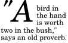
The ':first-letter' also applies if the first letter is in fact a digit, e.g., the "6" in "67 million dollars is a lot of money."
The :first-letter pseudo-element applies to block container elements.
The :first-letter pseudo-element can be used with all such elements that contain text, or that have a descendant in the same flow that contains text. A UA should act as if the fictional start tag of the first-letter pseudo-element is just before the first text of the element, even if that first text is in a descendant.
Here is an example. The fictional tag sequence for this HTML fragment:
<div> <p>The first text.
is:
<div> <p><div:first-letter><p:first-letter>T</...></...>he first text.
The first letter of a table-cell or inline-block cannot be the
first letter of an ancestor element. Thus, in <DIV><P
STYLE="display: inline-block">Hello<BR>Goodbye</P>
etcetera</DIV> the first letter of the DIV is not the
letter "H". In fact, the DIV does not have a first letter.
The first letter must occur on the first formatted line. For example, in
this fragment: <p><br>First... the first line
does not contain any letters and ':first-letter' does not match anything
(assuming the default style for BR in HTML 4). In particular, it
does not match the "F" of "First."
If an element is a list item ('display: list-item'), the ':first-letter' applies to the first letter in the principal box after the marker. UAs may ignore ':first-letter' on list items with 'list-style-position: inside'. If an element has ':before' or ':after' content, the ':first-letter applies to the first letter of the element including that content.
E.g., after the rule 'p:before {content: "Note: "}', the selector 'p:first-letter' matches the "N" of "Note".
Some languages may have specific rules about how to treat certain letter combinations. In Dutch, for example, if the letter combination "ij" appears at the beginning of a word, both letters should be considered within the :first-letter pseudo-element.
If the letters that would form the first-letter are not in the same
element, such as "'T" in <p>'<em>T..., the UA may
create a first-letter pseudo-element from one of the elements, both
elements, or simply not create a pseudo-element.
Similarly, if the first letter(s) of the block are not at the start of the line (for example due to bidirectional reordering), then the UA need not create the pseudo-element(s).
The following example illustrates how overlapping pseudo-elements may interact. The first letter of each P element will be green with a font size of 24pt. The rest of the first formatted line will be blue while the rest of the paragraph will be red.
p { color: red; font-size: 12pt }
p:first-letter { color: green; font-size: 200% }
p:first-line { color: blue }
<P>Some text that ends up on two lines</P>
Assuming that a line break will occur before the word "ends", the fictional tag sequence for this fragment might be:
<P> <P:first-line> <P:first-letter> S </P:first-letter>ome text that </P:first-line> ends up on two lines </P>
Note that the :first-letter element is inside the :first-line element. Properties set on :first-line are inherited by :first-letter, but are overridden if the same property is set on :first-letter.
5.12.3. The :before and :after pseudo-elements
The ':before' and ':after' pseudo-elements can be used to insert generated content before or after an element’s content. They are explained in the section on generated text.
When the :first-letter and :first-line pseudo-elements are applied to an element having content generated using :before and :after, they apply to the first letter or line of the element including the generated content.
p.special:before {content: "Special! "}
p.special:first-letter {color: #ffd800}
This will render the "S" of "Special!" in gold.
6. Assigning property values, Cascading, and Inheritance
6.1. Specified, computed, and actual values
Once a user agent has parsed a document and constructed a document tree, it must assign, for every element in the tree, a value to every property that applies to the target media type.
The final value of a property is the result of a four-step calculation: the value is determined through specification (the "specified value"), then resolved into a value that is used for inheritance (the "computed value"), then converted into an absolute value if necessary (the "used value"), and finally transformed according to the limitations of the local environment (the "actual value").
6.1.1. Specified values
User agents must first assign a specified value to each property based on the following mechanisms (in order of precedence):
- If the cascade results in a value, use it.
- Otherwise, if the property is inherited and the element is not the root of the document tree, use the computed value of the parent element.
- Otherwise use the property’s initial value. The initial value of each property is indicated in the property’s definition.
6.1.2. Computed values
Specified values are resolved to computed values during the cascade; for example URIs are made absolute and em and ex units are computed to pixel or absolute lengths. Computing a value never requires the user agent to render the document.
The computed value of URIs that the UA cannot resolve to absolute URIs is the specified value.
The computed value of a property is determined as specified by the Computed Value line in the definition of the property. See the section on inheritance for the definition of computed values when the specified value is inherit.
The computed value exists even when the property does not apply, as defined by the 'Applies To' line. However, some properties may define the computed value of a property for an element to depend on whether the property applies to that element.
6.1.3. Used values
Computed values are processed as far as possible without formatting the document. Some values, however, can only be determined when the document is being laid out. For example, if the width of an element is set to be a certain percentage of its containing block, the width cannot be determined until the width of the containing block has been determined. The used value is the result of taking the computed value and resolving any remaining dependencies into an absolute value.
6.1.4. Actual values
A used value is in principle the value used for rendering, but a user agent may not be able to make use of the value in a given environment. For example, a user agent may only be able to render borders with integer pixel widths and may therefore have to approximate the computed width, or the user agent may be forced to use only black and white shades instead of full color. The actual value is the used value after any approximations have been applied.
6.2. Inheritance
Some values are inherited by the children of an element in the document tree, as described above. Each property defines whether it is inherited or not.
Suppose there is an H1 element with an emphasizing element (EM) inside:
< H1 > The headline< EM > is</ EM > important!</ H1 >
If no color has been assigned to the EM element, the emphasized "is" will inherit the color of the parent element, so if H1 has the color blue, the EM element will likewise be in blue.
When inheritance occurs, elements inherit computed values. The computed value from the parent element becomes both the specified value and the computed value on the child.
For example, given the following style sheet:
body { font-size: 10pt }
h1 { font-size: 130% }
and this document fragment:
< BODY > < H1 > A< EM > large</ EM > heading</ H1 > </ BODY >
the font-size property for the H1 element will have the computed value 13pt (130% times 10pt, the parent’s value). Since the computed value of font-size is inherited, the EM element will have the computed value 13pt as well. If the user agent does not have the 13pt font available, the actual value of font-size for both H1 and EM might be, for example, 12pt.
Note that inheritance follows the document tree and is not intercepted by anonymous boxes.
6.2.1. The inherit value
Each property may also have a cascaded value of inherit, which means that, for a given element, the property takes the same specified value as the property for the element’s parent. The inherit value can be used to enforce inheritance of values, and it can also be used on properties that are not normally inherited.
If the inherit value is set on the root element, the property is assigned its initial value.
In the example below, the color and background properties are set on the BODY element. On all other elements, the color value will be inherited and the background will be transparent. If these rules are part of the user’s style sheet, black text on a white background will be enforced throughout the document.
body {
color: black !important;
background: white !important;
}
* {
color: inherit !important;
background: transparent !important;
}
6.3. The @import rule
The '@import' rule allows users to import style rules from other style sheets. In CSS 2, any @import rules must precede all other rules (except the @charset rule, if present). See the section on parsing for when user agents must ignore @import rules. The '@import' keyword must be followed by the URI of the style sheet to include. A string is also allowed; it will be interpreted as if it had url(...) around it.
The following lines are equivalent in meaning and illustrate both '@import' syntaxes (one with "url()" and one with a bare string):
@import "mystyle.css";
@import url("mystyle.css");
So that user agents can avoid retrieving resources for unsupported media types, authors may specify media-dependent @import rules. These conditional imports specify comma-separated media types after the URI.
The following rules illustrate how @import rules can be made media-dependent:
@import url("fineprint.css") print;
@import url("bluish.css") projection, tv;
In the absence of any media types, the import is unconditional. Specifying all for the medium has the same effect. The import only takes effect if the target medium matches the media list.
A target medium matches a media list if one of the items in the media list is the target medium or all.
Note that Media Queries [MEDIAQ] extends the syntax of media lists and the definition of matching.
When the same style sheet is imported or linked to a document in multiple places, user agents must process (or act as though they do) each link as though the link were to a separate style sheet.
6.4. The cascade
Style sheets may have three different origins: author, user, and user agent.
- Author. The author specifies style sheets for a source document according to the conventions of the document language. For instance, in HTML, style sheets may be included in the document or linked externally.
- User: The user may be able to specify style information for a particular document. For example, the user may specify a file that contains a style sheet or the user agent may provide an interface that generates a user style sheet (or behaves as if it did).
-
User agent: Conforming user agents must apply
a default style sheet (or behave as if they did). A user agent’s default style sheet should
present the
elements of the document language in ways that satisfy general
presentation expectations for the document language (e.g., for visual
browsers, the EM element in HTML is presented using an italic
font). See A sample style sheet for HTML for a recommended default style sheet for HTML documents.
Note that the user may modify system settings (e.g., system colors) that affect the default style sheet. However, some user agent implementations make it impossible to change the values in the default style sheet.
Style sheets from these three origins will overlap in scope, and they interact according to the cascade.
The CSS cascade assigns a weight to each style rule. When several rules apply, the one with the greatest weight takes precedence.
By default, rules in author style sheets have more weight than rules in user style sheets. Precedence is reversed, however, for "!important" rules. All user and author rules have more weight than rules in the UA’s default style sheet.
6.4.1. Cascading order
To find the value for an element/property combination, user agents must apply the following sorting order:
- Find all declarations that apply to the element and property in question, for the target media type. Declarations apply if the associated selector matches the element in question and the target medium matches the media list on all @media rules containing the declaration and on all links on the path through which the style sheet was reached.
-
Sort according to importance (normal or important)
and origin (author, user, or user agent). In ascending order of
precedence:
- user agent declarations
- user normal declarations
- author normal declarations
- author important declarations
- user important declarations
- Sort rules with the same importance and origin by specificity of selector: more specific selectors will override more general ones. Pseudo-elements and pseudo-classes are counted as normal elements and classes, respectively.
- Finally, sort by order specified: if two declarations have the same weight, origin and specificity, the latter specified wins. Declarations in imported style sheets are considered to be before any declarations in the style sheet itself.
Apart from the "!important" setting on individual declarations, this strategy gives author’s style sheets higher weight than those of the reader. User agents must give the user the ability to turn off the influence of specific author style sheets, e.g., through a pull-down menu. Conformance to UAAG 1.0 checkpoint 4.14 satisfies this condition [UAAG10].
6.4.2. !important rules
CSS attempts to create a balance of power between author and user style sheets. By default, rules in an author’s style sheet override those in a user’s style sheet (see cascade rule 3).
However, for balance, an "!important" declaration (the delimiter token "!" and keyword "important" follow the declaration) takes precedence over a normal declaration. Both author and user style sheets may contain "!important" declarations, and user "!important" rules override author "!important" rules. This CSS feature improves accessibility of documents by giving users with special requirements (large fonts, color combinations, etc.) control over presentation.
Declaring a shorthand property (e.g., background) to be "!important" is equivalent to declaring all of its sub-properties to be "!important".
The first rule in the user’s style sheet in the following example contains an "!important" declaration, which overrides the corresponding declaration in the author’s style sheet. The second declaration will also win due to being marked "!important". However, the third rule in the user’s style sheet is not "!important" and will therefore lose to the second rule in the author’s style sheet (which happens to set style on a shorthand property). Also, the third author rule will lose to the second author rule since the second rule is "!important". This shows that "!important" declarations have a function also within author style sheets.
/* From the user’s style sheet */
p { text-indent: 1em ! important }
p { font-style: italic ! important }
p { font-size: 18pt }
/* From the author’s style sheet */
p { text-indent: 1.5em !important }
p { font: normal 12pt sans-serif !important }
p { font-size: 24pt }
6.4.3. Calculating a selector’s specificity
A selector’s specificity is calculated as follows:
- count 1 if the declaration is from is a style attribute rather than a rule with a selector, 0 otherwise (= a) (In HTML, values of an element’s "style" attribute are style sheet rules. These rules have no selectors, so a=1, b=0, c=0, and d=0.)
- count the number of ID attributes in the selector (= b)
- count the number of other attributes and pseudo-classes in the selector (= c)
- count the number of element names and pseudo-elements in the selector (= d)
The specificity is based only on the form of the selector. In particular, a selector of the form "[id=p33]" is counted as an attribute selector (a=0, b=0, c=1, d=0), even if the id attribute is defined as an "ID" in the source document’s DTD.
Concatenating the four numbers a-b-c-d (in a number system with a large base) gives the specificity.
Some examples:
* {} /* a=0 b=0 c=0 d=0 -> specificity = 0,0,0,0 */
li {} /* a=0 b=0 c=0 d=1 -> specificity = 0,0,0,1 */
li:first-line {} /* a=0 b=0 c=0 d=2 -> specificity = 0,0,0,2 */
ul li {} /* a=0 b=0 c=0 d=2 -> specificity = 0,0,0,2 */
ul ol+li {} /* a=0 b=0 c=0 d=3 -> specificity = 0,0,0,3 */
h1 + *[rel=up]{} /* a=0 b=0 c=1 d=1 -> specificity = 0,0,1,1 */
ul ol li.red {} /* a=0 b=0 c=1 d=3 -> specificity = 0,0,1,3 */
li.red.level {} /* a=0 b=0 c=2 d=1 -> specificity = 0,0,2,1 */
#x34y {} /* a=0 b=1 c=0 d=0 -> specificity = 0,1,0,0 */
style="" /* a=1 b=0 c=0 d=0 -> specificity = 1,0,0,0 */
< HEAD > < STYLE type = "text/css" > # x97z { color : red } </ STYLE > </ HEAD > < BODY > < P ID = x97z style = "color: green" > </ BODY >
In the above example, the color of the P element would be green. The declaration in the "style" attribute will override the one in the STYLE element because of cascading rule 3, since it has a higher specificity.
6.4.4. Precedence of non-CSS presentational hints
The UA may choose to honor presentational attributes in an HTML source document. If so, these attributes are translated to the corresponding CSS rules with specificity equal to 0, and are treated as if they were inserted at the start of the author style sheet. They may therefore be overridden by subsequent style sheet rules. In a transition phase, this policy will make it easier for stylistic attributes to coexist with style sheets.
For HTML, any attribute that is not in the following list should be considered presentational: abbr, accept-charset, accept, accesskey, action, alt, archive, axis, charset, checked, cite, class, classid, code, codebase, codetype, colspan, coords, data, datetime, declare, defer, dir, disabled, enctype, for, headers, href, hreflang, http-equiv, id, ismap, label, lang, language, longdesc, maxlength, media, method, multiple, name, nohref, object, onblur, onchange, onclick, ondblclick, onfocus, onkeydown, onkeypress, onkeyup, onload, onload, onmousedown, onmousemove, onmouseout, onmouseover, onmouseup, onreset, onselect, onsubmit, onunload, onunload, profile, prompt, readonly, rel, rev, rowspan, scheme, scope, selected, shape, span, src, standby, start, style, summary, title, type (except on LI, OL and UL elements), usemap, value, valuetype, version.
For other languages, all document language-based styling must be translated to the corresponding CSS and either enter the cascade at the user agent level or, as with HTML presentational hints, be treated as author level rules with a specificity of zero placed at the start of the author style sheet.
The following user style sheet would override the font weight of b elements in all documents, and the color of font elements with color attributes in XML documents. It would not affect the color of any font elements with color attributes in HTML documents:
b { font-weight: normal; }
font[color] { color: orange; }
The following, however, would override the color of font elements in all documents:
font[color] { color: orange ! important; }
7. Media types
7.1. Introduction to media types
One of the most important features of style sheets is that they specify how a document is to be presented on different media: on the screen, on paper, with a speech synthesizer, with a braille device, etc.
Certain CSS properties are only designed for certain media (e.g., the page-break-before property only applies to paged media). On occasion, however, style sheets for different media types may share a property, but require different values for that property. For example, the font-size property is useful both for screen and print media. The two media types are different enough to require different values for the common property; a document will typically need a larger font on a computer screen than on paper. Therefore, it is necessary to express that a style sheet, or a section of a style sheet, applies to certain media types.
7.2. Specifying media-dependent style sheets
There are currently two ways to specify media dependencies for style sheets:
- Specify the target medium from a style sheet with the @media or @import at-rules.
- Specify the target medium within the document language. For example, in HTML 4 ([HTML401]), the "media" attribute on the LINK element specifies the target media of an external style sheet:
The @import rule is defined in the chapter on the cascade.
7.2.1. The @media rule
An @media rule specifies the target media types (separated by commas) of a set of statements (delimited by curly braces). Invalid statements must be ignored per 4.1.7 "Rule sets, declaration blocks, and selectors" and 4.2 "Rules for handling parsing errors." The @media construct allows style sheet rules for various media in the same style sheet:
@media print {
body { font-size: 10pt }
}
@media screen {
body { font-size: 13px }
}
@media screen, print {
body { line-height: 1.2 }
}
Style rules outside of @media rules apply to all media types that the style sheet applies to. At-rules inside @media are invalid in CSS 2.
7.3. Recognized media types
The names chosen for CSS media types reflect target devices for which the relevant properties make sense. In the following list of CSS media types the names of media types are normative, but the descriptions are informative. Likewise, the "Media" field in the description of each property is informative.
- all
- Suitable for all devices.
- braille
- Intended for braille tactile feedback devices.
- embossed
- Intended for paged braille printers.
- handheld
- Intended for handheld devices (typically small screen, limited bandwidth).
- Intended for paged material and for documents viewed on screen in print preview mode. Please consult the section on paged media for information about formatting issues that are specific to paged media.
- projection
- Intended for projected presentations, for example projectors. Please consult the section on paged media for information about formatting issues that are specific to paged media.
- screen
- Intended primarily for color computer screens.
- speech
- Intended for speech synthesizers. Note: CSS2 (1998) had a similar media type called aural for this purpose. See the appendix on aural style sheets for details.
- tty
- Intended for media using a fixed-pitch character grid (such as teletypes, terminals, or portable devices with limited display capabilities). Authors should not use pixel units with the "tty" media type.
- tv
- Intended for television-type devices (low resolution, color, limited-scrollability screens, sound available).
Media type names are case-insensitive.
Media types are mutually exclusive in the sense that a user agent can only support one media type when rendering a document. However, user agents may use different media types on different canvases. For example, a document may (simultaneously) be shown in screen mode on one canvas and print mode on another canvas.
Note that a multimodal media type is still only one media type. The tv media type, for example, is a multimodal media type that renders both visually and aurally to a single canvas.
@media and @import rules with unknown media types (that are nonetheless valid identifiers) are treated as if the unknown media types are not present. If an @media/@import rule contains a malformed media type (not an identifier) then the statement is invalid.
Note: Media Queries supercedes this error handling.
For example, in the following snippet, the rule on the P element applies in screen mode (even though the 3D media type is not known).
@media screen, 3D {
P { color: green; }
}
Note. Future updates of CSS may extend the list of media types. Authors should not rely on media type names that are not yet defined by a CSS specification.
7.3.1. Media groups
This section is informative, not normative.
Each CSS property definition specifies which media types the property applies to. Since properties generally apply to several media types, the "Applies to media" section of each property definition lists media groups rather than individual media types. Each property applies to all media types in the media groups listed in its definition.
CSS 2 defines the following media groups:
- continuous or paged.
- visual, audio, speech, or tactile.
- grid (for character grid devices), or bitmap.
- interactive (for devices that allow user interaction), or static (for those that do not).
- all (includes all media types)
The following table shows the relationships between media groups and media types:
| Media Types | Media Groups | |||
|---|---|---|---|---|
| continuous/paged | visual/audio/speech/tactile | grid/bitmap | interactive/static | |
| braille | continuous | tactile | grid | both |
| embossed | paged | tactile | grid | static |
| handheld | both | visual, audio, speech | both | both |
| paged | visual | bitmap | static | |
| projection | paged | visual | bitmap | interactive |
| screen | continuous | visual, audio | bitmap | both |
| speech | continuous | speech | N/A | both |
| tty | continuous | visual | grid | both |
| tv | both | visual, audio | bitmap | both |
8. Box model
The CSS box model describes the rectangular boxes that are generated for elements in the document tree and laid out according to the visual formatting model.
8.1. Box dimensions
Each box has a content area (e.g., text, an image, etc.) and optional surrounding padding, border, and margin areas; the size of each area is specified by properties defined below. The following diagram shows how these areas relate and the terminology used to refer to pieces of margin, border, and padding:
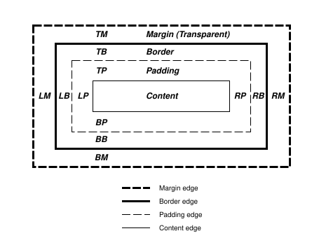
The margin, border, and padding can be broken down into top, right, bottom, and left segments (e.g., in the diagram, "LM" for left margin, "RP" for right padding, "TB" for top border, etc.).
The perimeter of each of the four areas (content, padding, border, and margin) is called an "edge", so each box has four edges:
- content edge or inner edge
- The content edge surrounds the rectangle given by the width and height of the box, which often depend on the element’s rendered content. The four content edges define the box’s content box.
- padding edge
- The padding edge surrounds the box padding. If the padding has 0 width, the padding edge is the same as the content edge. The four padding edges define the box’s padding box.
- border edge
- The border edge surrounds the box’s border. If the border has 0 width, the border edge is the same as the padding edge. The four border edges define the box’s border box.
- margin edge or outer edge
- The margin edge surrounds the box margin. If the margin has 0 width, the margin edge is the same as the border edge. The four margin edges define the box’s margin box.
Each edge may be broken down into a top, right, bottom, and left edge.
The dimensions of the content area of a box — the content width and content height — depend on several factors: whether the element generating the box has the width or height property set, whether the box contains text or other boxes, whether the box is a table, etc. Box widths and heights are discussed in the chapter on visual formatting model details.
The background style of the content, padding, and border areas of a box is specified by the background property of the generating element. Margin backgrounds are always transparent.
8.2. Example of margins, padding, and borders
This example illustrates how margins, padding, and borders interact. The example HTML document:
<!DOCTYPE HTML PUBLIC "-//W3C//DTD HTML 4.01//EN"> < HTML > < HEAD > < TITLE > Examples of margins, padding, and borders</ TITLE > < STYLE type = "text/css" > UL { background : yellow ; margin : 12 px 12 px 12 px 12 px ; padding : 3 px 3 px 3 px 3 px ; /* No borders set */ } LI { color : white ; /* text color is white */ background : blue ; /* Content, padding will be blue */ margin : 12 px 12 px 12 px 12 px ; padding : 12 px 0 px 12 px 12 px ; /* Note 0px padding right */ list-style : none /* no glyphs before a list item */ /* No borders set */ } LI . withborder { border-style : dashed ; border-width : medium ; /* sets border width on all sides */ border-color : lime ; } </ STYLE > </ HEAD > < BODY > < UL > < LI > First element of list< LI class = "withborder" > Second element of list is a bit longer to illustrate wrapping.</ UL > </ BODY > </ HTML >
results in a document tree with (among other relationships) a UL element that has two LI children.
The first of the following diagrams illustrates what this example would produce. The second illustrates the relationship between the margins, padding, and borders of the UL elements and those of its children LI elements. (Image is not to scale.)

Note that:
- The content width for each LI box is calculated top-down; the containing block for each LI box is established by the UL element.
- The margin box height of each LI box depends on its content height, plus top and bottom padding, borders, and margins. Note that vertical margins between the LI boxes collapse.
- The right padding of the LI boxes has been set to zero width (the padding property). The effect is apparent in the second illustration.
- The margins of the LI boxes are transparent — margins are always transparent — so the background color (yellow) of the UL padding and content areas shines through them.
- The second LI element specifies a dashed border (the border-style property).
8.3. Margin properties: margin-top, margin-right, margin-bottom, margin-left, and margin
Margin properties specify the width of the margin area of a box. The margin shorthand property sets the margin for all four sides while the other margin properties only set their respective side. These properties apply to all elements, but vertical margins will not have any effect on non-replaced inline elements.
The properties defined in this section refer to the <margin-width> value type, which may take one of the following values:
- <length>
- Specifies a fixed width.
- <percentage>
- The percentage is calculated with respect to the width of the generated box’s containing block. Note that this is true for margin-top and margin-bottom as well. If the containing block’s width depends on this element, then the resulting layout is undefined in CSS 2.
- auto
- See the section on calculating widths and margins for behavior.
Negative values for margin properties are allowed, but there may be implementation-specific limits.
| Name: | margin-top, margin-bottom |
|---|---|
| Value: | <margin-width> | inherit |
| Initial: | 0 |
| Applies to: | all elements except elements with table display types other than table-caption, table and inline-table |
| Inherited: | no |
| Percentages: | refer to width of containing block |
| Computed value: | the percentage as specified or the absolute length |
| Canonical order: | per grammar |
| Animation type: | discrete |
| Media: | visual |
These properties have no effect on non-replaced inline elements.
| Name: | margin-right, margin-left |
|---|---|
| Value: | <margin-width> | inherit |
| Initial: | 0 |
| Applies to: | all elements except elements with table display types other than table-caption, table and inline-table |
| Inherited: | no |
| Percentages: | refer to width of containing block |
| Computed value: | the percentage as specified or the absolute length |
| Canonical order: | per grammar |
| Animation type: | discrete |
| Media: | visual |
These properties set the top, right, bottom, and left margin of a box.
| Name: | margin |
|---|---|
| Value: | <margin-width>{1,4} | inherit |
| Initial: | see individual properties |
| Applies to: | all elements except elements with table display types other than table-caption, table and inline-table |
| Inherited: | no |
| Percentages: | refer to width of containing block |
| Computed value: | see individual properties |
| Canonical order: | per grammar |
| Animation type: | discrete |
| Media: | visual |
The margin property is a shorthand property for setting margin-top, margin-right, margin-bottom, and margin-left at the same place in the style sheet.
If there is only one component value, it applies to all sides. If there are two values, the top and bottom margins are set to the first value and the right and left margins are set to the second. If there are three values, the top is set to the first value, the left and right are set to the second, and the bottom is set to the third. If there are four values, they apply to the top, right, bottom, and left, respectively.
body { margin: 2em } /* all margins set to 2em */
body { margin: 1em 2em } /* top & bottom = 1em, right & left = 2em */
body { margin: 1em 2em 3em } /* top=1em, right=2em, bottom=3em, left=2em */
The last rule of the example above is equivalent to the example below:
body {
margin-top: 1em;
margin-right: 2em;
margin-bottom: 3em;
margin-left: 2em; /* copied from opposite side (right) */
}
8.3.1. Collapsing margins
In CSS, the adjoining margins of two or more boxes (which might or might not be siblings) can combine to form a single margin. Margins that combine this way are said to collapse, and the resulting combined margin is called a collapsed margin.
Adjoining vertical margins collapse, except:
- Margins of the root element’s box do not collapse.
- If the top and bottom margins of an element with clearance are adjoining, its margins collapse with the adjoining margins of following siblings but that resulting margin does not collapse with the bottom margin of the parent block.
Horizontal margins never collapse.
Two margins are adjoining if and only if:
- both belong to in-flow block-level boxes that participate in the same block formatting context
- no line boxes, no clearance, no padding and no border separate them (Note that certain zero-height line boxes (see 9.4.2) are ignored for this purpose.)
-
both belong to vertically-adjacent box edges, i.e. form one of
the following pairs:
- top margin of a box and top margin of its first in-flow child
- bottom margin of box and top margin of its next in-flow following sibling
- bottom margin of a last in-flow child and bottom margin of its parent if the parent has auto computed height
- top and bottom margins of a box that does not establish a new block formatting context and that has zero computed min-height, zero or auto computed height, and no in-flow children
A collapsed margin is considered adjoining to another margin if any of its component margins is adjoining to that margin.
Note. Adjoining margins can be generated by elements that are not related as siblings or ancestors.
Note the above rules imply that:
- Margins between a floated box and any other box do not collapse (not even between a float and its in-flow children).
- Margins of elements that establish new block formatting contexts (such as floats and elements with overflow other than visible) do not collapse with their in-flow children.
- Margins of absolutely positioned boxes do not collapse (not even with their in-flow children).
- Margins of inline-block boxes do not collapse (not even with their in-flow children).
- The bottom margin of an in-flow block-level element always collapses with the top margin of its next in-flow block-level sibling, unless that sibling has clearance.
- The top margin of an in-flow block element collapses with its first in-flow block-level child’s top margin if the element has no top border, no top padding, and the child has no clearance.
- The bottom margin of an in-flow block box with a height of auto and a min-height of zero collapses with its last in-flow block-level child’s bottom margin if the box has no bottom padding and no bottom border and the child’s bottom margin does not collapse with a top margin that has clearance.
- A box’s own margins collapse if the min-height property is zero, and it has neither top or bottom borders nor top or bottom padding, and it has a height of either 0 or auto, and it does not contain a line box, and all of its in-flow children’s margins (if any) collapse.
When two or more margins collapse, the resulting margin width is the maximum of the collapsing margins' widths. In the case of negative margins, the maximum of the absolute values of the negative adjoining margins is deducted from the maximum of the positive adjoining margins. If there are no positive margins, the maximum of the absolute values of the adjoining margins is deducted from zero.
If the top and bottom margins of a box are adjoining, then it is possible for margins to collapse through it. In this case, the position of the element depends on its relationship with the other elements whose margins are being collapsed.
- If the element’s margins are collapsed with its parent’s top margin, the top border edge of the box is defined to be the same as the parent’s.
- Otherwise, either the element’s parent is not taking part in the margin collapsing, or only the parent’s bottom margin is involved. The position of the element’s top border edge is the same as it would have been if the element had a non-zero bottom border.
Note that the positions of elements that have been collapsed through have no effect on the positions of the other elements with whose margins they are being collapsed; the top border edge position is only required for laying out descendants of these elements.
8.4. Padding properties: padding-top, padding-right, padding-bottom, padding-left, and padding
The padding properties specify the width of the padding area of a box. The padding shorthand property sets the padding for all four sides while the other padding properties only set their respective side.
The properties defined in this section refer to the <padding-width> value type, which may take one of the following values:
- <length>
- Specifies a fixed width.
- <percentage>
- The percentage is calculated with respect to the width of the generated box’s containing block, even for padding-top and padding-bottom. If the containing block’s width depends on this element, then the resulting layout is undefined in CSS 2.
Unlike margin properties, values for padding values cannot be negative. Like margin properties, percentage values for padding properties refer to the width of the generated box’s containing block.
| Name: | padding-top, padding-right, padding-bottom, padding-left |
|---|---|
| Value: | <padding-width> | inherit |
| Initial: | 0 |
| Applies to: | all elements except table-row-group, table-header-group, table-footer-group, table-row, table-column-group and table-column |
| Inherited: | no |
| Percentages: | refer to width of containing block |
| Computed value: | the percentage as specified or the absolute length |
| Canonical order: | per grammar |
| Animation type: | discrete |
| Media: | visual |
These properties set the top, right, bottom, and left padding of a box.
| Name: | padding |
|---|---|
| Value: | <padding-width>{1,4} | inherit |
| Initial: | see individual properties |
| Applies to: | all elements except table-row-group, table-header-group, table-footer-group, table-row, table-column-group and table-column |
| Inherited: | no |
| Percentages: | refer to width of containing block |
| Computed value: | see individual properties |
| Canonical order: | per grammar |
| Animation type: | discrete |
| Media: | visual |
The padding property is a shorthand property for setting padding-top, padding-right, padding-bottom, and padding-left at the same place in the style sheet.
If there is only one component value, it applies to all sides. If there are two values, the top and bottom paddings are set to the first value and the right and left paddings are set to the second. If there are three values, the top is set to the first value, the left and right are set to the second, and the bottom is set to the third. If there are four values, they apply to the top, right, bottom, and left, respectively.
The surface color or image of the padding area is specified via the background property:
h1 {
background: white;
padding: 1em 2em;
}
The example above specifies a 1em vertical padding (padding-top and padding-bottom) and a 2em horizontal padding (padding-right and padding-left). The em unit is relative to the element’s font size: 1em is equal to the size of the font in use.
8.5. Border properties
The border properties specify the width, color, and style of the border area of a box. These properties apply to all elements.
Note. Notably for HTML, user agents may render borders for certain user interface elements (e.g., buttons, menus, etc.) differently than for "ordinary" elements.
8.5.1. Border width: border-top-width, border-right-width, border-bottom-width, border-left-width, and border-width
The border width properties specify the width of the border area. The properties defined in this section refer to the <border-width> value type, which may take one of the following values:
- thin
- A thin border.
- medium
- A medium border.
- thick
- A thick border.
- <length>
- The border’s thickness has an explicit value. Explicit border widths cannot be negative.
The interpretation of the first three values depends on the user agent. The following relationships must hold, however:
thin <=medium <= thick.
Furthermore, these widths must be constant throughout a document.
| Name: | border-top-width, border-right-width, border-bottom-width, border-left-width |
|---|---|
| Value: | <border-width> | inherit |
| Initial: | medium |
| Applies to: | * |
| Inherited: | no |
| Percentages: | N/A |
| Computed value: | absolute length; 0 if the border style is none or hidden |
| Canonical order: | per grammar |
| Animation type: | discrete |
| Media: | visual |
These properties set the width of the top, right, bottom, and left border of a box.
| Name: | border-width |
|---|---|
| Value: | <border-width>{1,4} | inherit |
| Initial: | see individual properties |
| Applies to: | * |
| Inherited: | no |
| Percentages: | N/A |
| Computed value: | see individual properties |
| Canonical order: | per grammar |
| Animation type: | discrete |
| Media: | visual |
This property is a shorthand property for setting border-top-width, border-right-width, border-bottom-width, and border-left-width at the same place in the style sheet.
If there is only one component value, it applies to all sides. If there are two values, the top and bottom borders are set to the first value and the right and left are set to the second. If there are three values, the top is set to the first value, the left and right are set to the second, and the bottom is set to the third. If there are four values, they apply to the top, right, bottom, and left, respectively.
In the examples below, the comments indicate the resulting widths of the top, right, bottom, and left borders:
h1 { border-width: thin } /* thin thin thin thin */
h1 { border-width: thin thick } /* thin thick thin thick */
h1 { border-width: thin thick medium } /* thin thick medium thick */
8.5.2. Border color: border-top-color, border-right-color, border-bottom-color, border-left-color, and border-color
The border color properties specify the color of a box’s border.
| Name: | border-top-color, border-right-color, border-bottom-color, border-left-color |
|---|---|
| Value: | <color> | transparent | inherit |
| Initial: | the value of the color property |
| Applies to: | * |
| Inherited: | no |
| Percentages: | N/A |
| Computed value: | when taken from the color property, the computed value of color; otherwise, as specified |
| Canonical order: | per grammar |
| Animation type: | discrete |
| Media: | visual |
| Name: | border-color |
|---|---|
| Value: | [ <color> | transparent ]{1,4} | inherit |
| Initial: | see individual properties |
| Applies to: | * |
| Inherited: | no |
| Percentages: | N/A |
| Computed value: | see individual properties |
| Canonical order: | per grammar |
| Animation type: | discrete |
| Media: | visual |
The border-color property sets the color of the four borders. Values have the following meanings:
- <color>
- Specifies a color value.
- transparent
- The border is transparent (though it may have width).
The border-color property can have from one to four component values, and the values are set on the different sides as for border-width.
If an element’s border color is not specified with a border property, user agents must use the value of the element’s color property as the computed value for the border color.
In this example, the border will be a solid black line.
p {
color: black;
background: white;
border: solid;
}
8.5.3. Border style: border-top-style, border-right-style, border-bottom-style, border-left-style, and border-style
The border style properties specify the line style of a box’s border (solid, double, dashed, etc.). The properties defined in this section refer to the <border-style> value type, which may take one of the following values:
- none
- No border; the computed border width is zero.
- Same as none, except in terms of border conflict resolution for table elements.
- dotted
- The border is a series of dots.
- dashed
- The border is a series of short line segments.
- solid
- The border is a single line segment.
- double
- The border is two solid lines. The sum of the two lines and the space between them equals the value of border-width.
- groove
- The border looks as though it were carved into the canvas.
- ridge
- The opposite of groove: the border looks as though it were coming out of the canvas.
- inset
- The border makes the box look as though it were embedded in the canvas.
- outset
- The opposite of inset: the border makes the box look as though it were coming out of the canvas.
All borders are drawn on top of the box’s background. The color of borders drawn for values of groove, ridge, inset, and outset depends on the element’s border color properties, but UAs may choose their own algorithm to calculate the actual colors used. For instance, if the border-color has the value silver, then a UA could use a gradient of colors from white to dark gray to indicate a sloping border.
| Name: | border-top-style, border-right-style, border-bottom-style, border-left-style |
|---|---|
| Value: | <border-style> | inherit |
| Initial: | none |
| Applies to: | * |
| Inherited: | no |
| Percentages: | N/A |
| Computed value: | as specified |
| Canonical order: | per grammar |
| Animation type: | discrete |
| Media: | visual |
| Name: | border-style |
|---|---|
| Value: | <border-style>{1,4} | inherit |
| Initial: | see individual properties |
| Applies to: | * |
| Inherited: | no |
| Percentages: | N/A |
| Computed value: | see individual properties |
| Canonical order: | per grammar |
| Animation type: | discrete |
| Media: | visual |
The border-style property sets the style of the four borders. It can have from one to four component values, and the values are set on the different sides as for border-width above.
#xy34 { border-style: solid dotted }
In the above example, the horizontal borders will be solid and the vertical borders will be dotted.
Since the initial value of the border styles is none, no borders will be visible unless the border style is set.
8.5.4. Border shorthand properties: border-top, border-right, border-bottom, border-left, and border
| Name: | border-top, border-right, border-bottom, border-left |
|---|---|
| Value: | [ <border-width> || <border-style> || <'border-top-color'> ] | inherit |
| Initial: | see individual properties |
| Applies to: | * |
| Inherited: | no |
| Percentages: | N/A |
| Computed value: | see individual properties |
| Canonical order: | per grammar |
| Animation type: | discrete |
| Media: | visual |
This is a shorthand property for setting the width, style, and color of the top, right, bottom, and left border of a box.
h1 { border-bottom: thick solid red }
The above rule will set the width, style, and color of the border below the H1 element. Omitted values are set to their initial values. Since the following rule does not specify a border color, the border will have the color specified by the color property:
H1 { border-bottom: thick solid }
| Name: | border |
|---|---|
| Value: | [ <border-width> || <border-style> || <'border-top-color'> ] | inherit |
| Initial: | see individual properties |
| Applies to: | * |
| Inherited: | no |
| Percentages: | N/A |
| Computed value: | see individual properties |
| Canonical order: | per grammar |
| Animation type: | discrete |
| Media: | visual |
The border property is a shorthand property for setting the same width, color, and style for all four borders of a box. Unlike the shorthand margin and padding properties, the border property cannot set different values on the four borders. To do so, one or more of the other border properties must be used.
For example, the first rule below is equivalent to the set of four rules shown after it:
p { border: solid red }
p {
border-top: solid red;
border-right: solid red;
border-bottom: solid red;
border-left: solid red
}
Since, to some extent, the properties have overlapping functionality, the order in which the rules are specified is important.
Consider this example:
blockquote {
border: solid red;
border-left: double;
color: black;
}
In the above example, the color of the left border is black, while the other borders are red. This is due to border-left setting the width, style, and color. Since the color value is not given by the border-left property, it will be taken from the color property. The fact that the color property is set after the border-left property is not relevant.
8.6. The box model for inline elements in bidirectional context
For each line box, UAs must take the inline boxes generated for each element and render the margins, borders and padding in visual order (not logical order).
When the element’s direction property is ltr, the left-most generated box of the first line box in which the element appears has the left margin, left border and left padding, and the right-most generated box of the last line box in which the element appears has the right padding, right border and right margin.
When the element’s direction property is rtl, the right-most generated box of the first line box in which the element appears has the right padding, right border and right margin, and the left-most generated box of the last line box in which the element appears has the left margin, left border and left padding.
9. Visual formatting model
9.1. Introduction to the visual formatting model
This chapter and the next describe the visual formatting model: how user agents process the document tree for visual media.
In the visual formatting model, each element in the document tree generates zero or more boxes according to the box model. The layout of these boxes is governed by:
- box dimensions and type.
- positioning scheme (normal flow, float, and absolute positioning).
- relationships between elements in the document tree.
- external information (e.g., viewport size, intrinsic dimensions of images, etc.).
The properties defined in this chapter and the next apply to both continuous media and paged media. However, the meanings of the margin properties vary when applied to paged media (see the page model for details).
The visual formatting model does not specify all aspects of formatting (e.g., it does not specify a letter-spacing algorithm). Conforming user agents may behave differently for those formatting issues not covered by this specification.
9.1.1. The viewport
User agents for continuous media generally offer users a viewport (a window or other viewing area on the screen) through which users consult a document. User agents may change the document’s layout when the viewport is resized (see the initial containing block).
When the viewport is smaller than the area of the canvas on which the document is rendered, the user agent should offer a scrolling mechanism.
There is at most one viewport per canvas, but user agents may render to more than one canvas (i.e., provide different views of the same document).
9.1.2. Containing blocks
In CSS 2, many box positions and sizes are calculated with respect to the edges of a rectangular box called a containing block. In general, generated boxes act as containing blocks for descendant boxes; we say that a box "establishes" the containing block for its descendants. The phrase "a box’s containing block" means "the containing block in which the box lives," not the one it generates.
Each box is given a position with respect to its containing block, but it is not confined by this containing block; it may overflow.
The details of how a containing block’s dimensions are calculated are described in the next chapter.
9.2. Controlling box generation
The following sections describe the types of boxes that may be generated in CSS 2. A box’s type affects, in part, its behavior in the visual formatting model. The display property, described below, specifies a box’s type.
9.2.1. Block-level elements and block boxes
Block-level elements are those elements of the source document that are formatted visually as blocks (e.g., paragraphs). The following values of the display property make an element block-level: block, list-item, and table.
Block-level boxes are boxes that participate in a block formatting context. Each block-level element generates a principal block-level box that contains descendant boxes and generated content and is also the box involved in any positioning scheme.
Some block-level elements may generate additional boxes in addition to the principal box: list-item elements. These additional boxes are placed with respect to the principal box.
Except for table boxes, which are described in a later chapter, and replaced elements, a block-level box is also a block container box. A block container box either contains only block-level boxes or establishes an inline formatting context and thus contains only inline-level boxes. Not all block container boxes are block-level boxes: non-replaced inline blocks and non-replaced table cells are block containers but not block-level boxes. Block-level boxes that are also block containers are called block boxes.
The three terms "block-level box," "block container box," and "block box" are sometimes abbreviated as "block" where unambiguous.
9.2.1.1. Anonymous block boxes
In a document like this:
< DIV > Some text< P > More text</ DIV >
(and assuming the DIV and the P both have 'display: block'), the DIV appears to have both inline content and block content. To make it easier to define the formatting, we assume that there is an anonymous block box around "Some text".

Diagram showing the three boxes, of which one is anonymous, for the example above.
In other words: if a block container box (such as that generated for the DIV above) has a block-level box inside it (such as the P above), then we force it to have only block-level boxes inside it.
When an inline box contains an in-flow block-level box, the inline box (and its inline ancestors within the same line box) is broken around the block-level box (and any block-level siblings that are consecutive or separated only by collapsible whitespace and/or out-of-flow elements), splitting the inline box into two boxes (even if either side is empty), one on each side of the block-level box(es). The line boxes before the break and after the break are enclosed in anonymous block boxes, and the block-level box becomes a sibling of those anonymous boxes. When such an inline box is affected by relative positioning, any resulting translation also affects the block-level box contained in the inline box.
This model would apply in the following example if the following rules:
p { display : inline} span { display : block}
were used with this HTML document:
<!DOCTYPE HTML PUBLIC "-//W3C//DTD HTML 4.01//EN"> < HEAD > < TITLE > </ TITLE > </ HEAD > < BODY > < P > < SPAN > </ SPAN > </ P > </ BODY > The P element contains a chunk (C1) of anonymous text followed by a block-level element followed by another chunk (C2) of anonymous text. The resulting boxes would be a block box representing the BODY, containing an anonymous block box around C1, the SPAN block box, and another anonymous block box around C2.
The properties of anonymous boxes are inherited from the enclosing non-anonymous box (e.g., in the example just below the subsection heading "Anonymous block boxes", the one for DIV). Non-inherited properties have their initial value. For example, the font of the anonymous box is inherited from the DIV, but the margins will be 0.
Properties set on elements that cause anonymous block boxes to be generated still apply to the boxes and content of that element. For example, if a border had been set on the P element in the above example, the border would be drawn around C1 (open at the end of the line) and C2 (open at the start of the line).
Some user agents have implemented borders on inlines containing blocks in other ways, e.g., by wrapping such nested blocks inside "anonymous line boxes" and thus drawing inline borders around such boxes. As CSS1 and CSS2 (1998) did not define this behavior, CSS1-only and CSS2 (1998)-only user agents may implement this alternative model and still claim conformance to this part of CSS 2. This does not apply to UAs developed after this specification was released.
Anonymous block boxes are ignored when resolving percentage values that would refer to it: the closest non-anonymous ancestor box is used instead. For example, if the child of the anonymous block box inside the DIV above needs to know the height of its containing block to resolve a percentage height, then it will use the height of the containing block formed by the DIV, not of the anonymous block box.
9.2.2. Inline-level elements and inline boxes
Inline-level elements are those elements of the source document that do not form new blocks of content; the content is distributed in lines (e.g., emphasized pieces of text within a paragraph, inline images, etc.). The following values of the display property make an element inline-level: inline, inline-table, and inline-block.
Inline-level elements generate inline-level boxes, which are boxes that participate in an inline formatting context.
An inline box is one that is both inline-level and whose contents participate in its containing inline formatting context. A non-replaced element with a display value of inline generates an inline box. Inline-level boxes that are not inline boxes (such as replaced inline-level elements, inline-block elements, and inline-table elements) are called atomic inline-level boxes because they participate in their inline formatting context as a single opaque box.
9.2.2.1. Anonymous inline boxes
Any text that is directly contained inside a block container element (not inside an inline element) must be treated as an anonymous inline element.
In a document with HTML markup like this:
the <p> generates a block box, with several inline boxes inside
it. The box for "emphasized" is an inline box generated by an inline
element (<em>), but the other boxes ("Some" and "text") are inline boxes generated by a block-level element (<p>). The latter are called anonymous inline
boxes, because they do not have an associated inline-level element.
Such anonymous inline boxes inherit inheritable properties from their block parent box. Non-inherited properties have their initial value. In the example, the color of the anonymous inline boxes is inherited from the P, but the background is transparent.
White space content that would subsequently be collapsed away according to the white-space property does not generate any anonymous inline boxes.
If it is clear from the context which type of anonymous box is meant, both anonymous inline boxes and anonymous block boxes are simply called anonymous boxes in this specification.
There are more types of anonymous boxes that arise when formatting tables.
9.2.3. Run-in boxes
[This section exists so that the section numbers are the same as in previous drafts. 'Display: run-in' is now defined in CSS level 3 (see CSS basic box model).]
9.2.4. The display property
| Name: | display |
|---|---|
| Value: | inline | block | list-item | inline-block | table | inline-table | table-row-group | table-header-group | table-footer-group | table-row | table-column-group | table-column | table-cell | table-caption | none | inherit |
| Initial: | inline |
| Applies to: | * |
| Inherited: | no |
| Percentages: | N/A |
| Computed value: | see text |
| Canonical order: | per grammar |
| Animation type: | discrete |
| Media: | all |
The values of this property have the following meanings:
- block
- This value causes an element to generate a block box.
- inline-block
- This value causes an element to generate an inline-level block container. The inside of an inline-block is formatted as a block box, and the element itself is formatted as an atomic inline-level box.
- inline
- This value causes an element to generate one or more inline boxes.
- list-item
- This value causes an element (e.g., LI in HTML) to generate a principal block box and a marker box. For information about lists and examples of list formatting, please consult the section on lists.
- none
-
This
value causes an element to not appear in the formatting structure (i.e.,
in visual media the element generates no boxes and has no effect on
layout). Descendant elements do not generate any boxes either; the
element and its content are removed from the formatting structure
entirely. This behavior cannot be overridden by
setting the display property
on the descendants.
Please note that a display of none does not create an invisible box; it creates no box at all. CSS includes mechanisms that enable an element to generate boxes in the formatting structure that affect formatting but are not visible themselves. Please consult the section on visibility for details.
- table, inline-table, table-row-group, table-column, table-column-group, table-header-group, , table-row, table-cell, and table-caption
- These values cause an element to behave like a table element (subject to restrictions described in the chapter on tables).
The computed value is the same as the specified value, except for positioned and floating elements (see Relationships between display, position, and float) and for the root element. For the root element, the computed value is changed as described in the section on the relationships between display, position, and float.
Note that although the initial value of display is inline, rules in the user agent’s default style sheet may override this value. See the sample style sheet for HTML 4 in the appendix.
Here are some examples of the display property:
p { display : block} em { display : inline} li { display : list-item} img { display : none} /* Do not display images */
9.3. Positioning schemes
In CSS 2, a box may be laid out according to three positioning schemes:
- Normal flow. In CSS 2, normal flow includes block formatting of block-level boxes, inline formatting of inline-level boxes, and relative positioning of block-level and inline-level boxes.
- Floats. In the float model, a box is first laid out according to the normal flow, then taken out of the flow and shifted to the left or right as far as possible. Content may flow along the side of a float.
- Absolute positioning. In the absolute positioning model, a box is removed from the normal flow entirely (it has no impact on later siblings) and assigned a position with respect to a containing block.
An element is called out of flow if it is floated, absolutely positioned, or is the root element. An element is called in-flow if it is not out-of-flow. The flow of an element A is the set consisting of A and all in-flow elements whose nearest out-of-flow ancestor is A.
9.3.1. Choosing a positioning scheme: position property
The position and float properties determine which of the CSS 2 positioning algorithms is used to calculate the position of a box.
| Name: | position |
|---|---|
| Value: | static | relative | absolute | fixed | inherit |
| Initial: | static |
| Applies to: | * |
| Inherited: | no |
| Percentages: | N/A |
| Computed value: | as specified |
| Canonical order: | per grammar |
| Animation type: | discrete |
| Media: | visual |
The values of this property have the following meanings:
- static
- The box is a normal box, laid out according to the normal flow. The top, right, bottom, and left properties do not apply.
- relative
- The box’s position is calculated according to the normal flow (this is called the position in normal flow). Then the box is offset relative to its normal position. When a box B is relatively positioned, the position of the following box is calculated as though B were not offset. The effect of 'position:relative' on table-row-group, table-header-group, table-footer-group, table-row, table-column-group, table-column, table-cell, and table-caption elements is undefined.
- absolute
- The box’s position (and possibly size) is specified with the top, right, bottom, and left properties. These properties specify offsets with respect to the box’s containing block. Absolutely positioned boxes are taken out of the normal flow. This means they have no impact on the layout of later siblings. Also, though absolutely positioned boxes have margins, they do not collapse with any other margins.
- fixed
-
The box’s position is calculated according to the absolute model, but in addition, the box is fixed with respect to some reference.
As with the absolute model, the box’s margins do not collapse with any other margins.
In the case of handheld, projection, screen, tty, and tv media types,
the box is fixed with respect to the viewport and does not move when
scrolled. In the case of the print media type, the box is rendered on every page, and is fixed with respect to the page box, even if the page is seen through a viewport (in the case of a print-preview, for example). For other media
types, the presentation is undefined.
Authors may wish to specify fixed in a
media-dependent way. For instance, an author may want a box to remain
at the top of the viewport on the screen, but
not at the top of each printed page. The two specifications may be
separated by using an @media
rule, as in:
UAs must not paginate the content of fixed boxes. Note that UAs may print invisible content in other ways. See "Content outside the page box" in chapter 13.
User agents may treat position as static on the root element.
9.3.2. Box offsets: top, right, bottom, left
An element is said to be positioned if its position property has a value other than static. Positioned elements generate positioned boxes, laid out according to four properties:
| Name: | top |
|---|---|
| Value: | <length> | <percentage> | auto | inherit |
| Initial: | auto |
| Applies to: | positioned elements |
| Inherited: | no |
| Percentages: | refer to height of containing block |
| Computed value: | if specified as a length, the corresponding absolute length; if specified as a percentage, the specified value; otherwise, auto. |
| Canonical order: | per grammar |
| Animation type: | discrete |
| Media: | visual |
This property specifies how far an absolutely positioned box’s top margin edge is offset below the top edge of the box’s containing block. For relatively positioned boxes, the offset is with respect to the top edges of the box itself (i.e., the box is given a position in the normal flow, then offset from that position according to these properties).
| Name: | right |
|---|---|
| Value: | <length> | <percentage> | auto | inherit |
| Initial: | auto |
| Applies to: | positioned elements |
| Inherited: | no |
| Percentages: | refer to width of containing block |
| Computed value: | if specified as a length, the corresponding absolute length; if specified as a percentage, the specified value; otherwise, auto. |
| Canonical order: | per grammar |
| Animation type: | discrete |
| Media: | visual |
Like top, but specifies how far a box’s right margin edge is offset to the left of the right edge of the box’s containing block. For relatively positioned boxes, the offset is with respect to the right edge of the box itself.
| Name: | bottom |
|---|---|
| Value: | <length> | <percentage> | auto | inherit |
| Initial: | auto |
| Applies to: | positioned elements |
| Inherited: | no |
| Percentages: | refer to height of containing block |
| Computed value: | if specified as a length, the corresponding absolute length; if specified as a percentage, the specified value; otherwise, auto. |
| Canonical order: | per grammar |
| Animation type: | discrete |
| Media: | visual |
Like top, but specifies how far a box’s bottom margin edge is offset above the bottom of the box’s containing block. For relatively positioned boxes, the offset is with respect to the bottom edge of the box itself.
| Name: | left |
|---|---|
| Value: | <length> | <percentage> | auto | inherit |
| Initial: | auto |
| Applies to: | positioned elements |
| Inherited: | no |
| Percentages: | refer to width of containing block |
| Computed value: | if specified as a length, the corresponding absolute length; if specified as a percentage, the specified value; otherwise, auto. |
| Canonical order: | per grammar |
| Animation type: | discrete |
| Media: | visual |
Like top, but specifies how far a box’s left margin edge is offset to the right of the left edge of the box’s containing block. For relatively positioned boxes, the offset is with respect to the left edge of the box itself.
The values for the four properties have the following meanings:
- <length>
- The offset is a fixed distance from the reference edge. Negative values are allowed.
- <percentage>
- The offset is a percentage of the containing block’s width (for left or right) or height (for top and bottom). Negative values are allowed.
- auto
- For non-replaced elements, the effect of this value depends on which of related properties have the value auto as well. See the sections on the width and height of absolutely positioned, non-replaced elements for details. For replaced elements, the effect of this value depends only on the intrinsic dimensions of the replaced content. See the sections on the width and height of absolutely positioned, replaced elements for details.
9.4. Normal flow
Boxes in the normal flow belong to a formatting context, which may be block or inline, but not both simultaneously. Block-level boxes participate in a block formatting context. Inline-level boxes participate in an inline formatting context.
9.4.1. Block formatting contexts
Floats, absolutely positioned elements, block containers (such as inline-blocks, table-cells, and table-captions) that are not block boxes, and block boxes with overflow other than visible (except when that value has been propagated to the viewport) establish new block formatting contexts for their contents.
In a block formatting context, boxes are laid out one after the other, vertically, beginning at the top of a containing block. The vertical distance between two sibling boxes is determined by the margin properties. Vertical margins between adjacent block-level boxes in a block formatting context collapse.
In a block formatting context, each box’s left outer edge touches the left edge of the containing block (for right-to-left formatting, right edges touch). This is true even in the presence of floats (although a box’s line boxes may shrink due to the floats), unless the box establishes a new block formatting context (in which case the box itself may become narrower due to the floats).
For information about page breaks in paged media, please consult the section on allowed page breaks.
9.4.2. Inline formatting contexts
In an inline formatting context, boxes are laid out horizontally, one after the other, beginning at the top of a containing block. Horizontal margins, borders, and padding are respected between these boxes. The boxes may be aligned vertically in different ways: their bottoms or tops may be aligned, or the baselines of text within them may be aligned. The rectangular area that contains the boxes that form a line is called a line box.
The width of a line box is determined by a containing block and the presence of floats. The height of a line box is determined by the rules given in the section on line height calculations.
A line box is always tall enough for all of the boxes it contains. However, it may be taller than the tallest box it contains (if, for example, boxes are aligned so that baselines line up). When the height of a box B is less than the height of the line box containing it, the vertical alignment of B within the line box is determined by the vertical-align property. When several inline-level boxes cannot fit horizontally within a single line box, they are distributed among two or more vertically-stacked line boxes. Thus, a paragraph is a vertical stack of line boxes. Line boxes are stacked with no vertical separation (except as specified elsewhere) and they never overlap.
In general, the left edge of a line box touches the left edge of its containing block and the right edge touches the right edge of its containing block. However, floating boxes may come between the containing block edge and the line box edge. Thus, although line boxes in the same inline formatting context generally have the same width (that of the containing block), they may vary in width if available horizontal space is reduced due to floats. Line boxes in the same inline formatting context generally vary in height (e.g., one line might contain a tall image while the others contain only text).
When the total width of the inline-level boxes on a line is less than the width of the line box containing them, their horizontal distribution within the line box is determined by the text-align property. If that property has the value justify, the user agent may stretch spaces and words in inline boxes (but not inline-table and inline-block boxes) as well.
When an inline box exceeds the width of a line box, it is split into several boxes and these boxes are distributed across several line boxes. If an inline box cannot be split (e.g., if the inline box contains a single character, or language specific word breaking rules disallow a break within the inline box, or if the inline box is affected by a white-space value of nowrap or pre), then the inline box overflows the line box.
When an inline box is split, margins, borders, and padding have no visual effect where the split occurs (or at any split, when there are several).
Inline boxes may also be split into several boxes within the same line box due to bidirectional text processing.
Line boxes are created as needed to hold inline-level content within an inline formatting context. Line boxes that contain no text, no preserved white space, no inline elements with non-zero margins, padding, or borders, and no other in-flow content (such as images, inline blocks or inline tables), and do not end with a preserved newline must be treated as zero-height line boxes for the purposes of determining the positions of any elements inside of them, and must be treated as not existing for any other purpose.
Here is an example of inline box construction. The following paragraph (created by the HTML block-level element P) contains anonymous text interspersed with the elements EM and STRONG:
< P > Several< EM > emphasized words</ EM > appear< STRONG > in this</ STRONG > sentence, dear.</ P >
The P element generates a block box that contains five inline boxes, three of which are anonymous:
- Anonymous: "Several"
- EM: "emphasized words"
- Anonymous: "appear"
- STRONG: "in this"
- Anonymous: "sentence, dear."
To format the paragraph, the user agent flows the five boxes into line boxes. In this example, the box generated for the P element establishes the containing block for the line boxes. If the containing block is sufficiently wide, all the inline boxes will fit into a single line box:
Several emphasized words appear in this sentence, dear.
If not, the inline boxes will be split up and distributed across several line boxes. The previous paragraph might be split as follows:
Several emphasized words appear in this sentence, dear.
or like this:
Several emphasized words appear in this sentence, dear.
In the previous example, the EM box was split into two EM boxes (call them "split1" and "split2"). Margins, borders, padding, or text decorations have no visible effect after split1 or before split2.
Consider the following example:
<!DOCTYPE HTML PUBLIC "-//W3C//DTD HTML 4.01//EN"> < HTML > < HEAD > < TITLE > Example of inline flow on several lines</ TITLE > < STYLE type = "text/css" > EM { padding : 2 px ; margin : 1 em ; border-width : medium ; border-style : dashed ; line-height : 2.4 em ; } </ STYLE > </ HEAD > < BODY > < P > Several< EM > emphasized words</ EM > appear here.</ P > </ BODY > </ HTML >
Depending on the width of the P, the boxes may be distributed as follows:
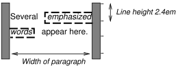
- The margin is inserted before "emphasized" and after "words".
- The padding is inserted before, above, and below "emphasized" and after, above, and below "words". A dashed border is rendered on three sides in each case.
9.4.3. Relative positioning
Once a box has been laid out according to the normal flow or floated, it may be shifted relative to this position. This is called relative positioning. Offsetting a box (B1) in this way has no effect on the box (B2) that follows: B2 is given a position as if B1 were not offset and B2 is not re-positioned after B1’s offset is applied. This implies that relative positioning may cause boxes to overlap. However, if relative positioning causes an 'overflow:auto' or 'overflow:scroll' box to have overflow, the UA must allow the user to access this content (at its offset position), which, through the creation of scrollbars, may affect layout.
A relatively positioned box keeps its normal flow size, including line breaks and the space originally reserved for it. The section on containing blocks explains when a relatively positioned box establishes a new containing block.
For relatively positioned elements, left and right move the box(es) horizontally, without changing their size. Left moves the boxes to the right, and right moves them to the left. Since boxes are not split or stretched as a result of left or right, the used values are always: left = -right.
If both left and right are auto (their initial values), the used values are 0 (i.e., the boxes stay in their original position).
If left is auto, its used value is minus the value of right (i.e., the boxes move to the left by the value of right).
If right is specified as auto, its used value is minus the value of left.
If neither left nor right is auto, the position is over-constrained, and one of them has to be ignored. If the direction property of the containing block is ltr, the value of left wins and right becomes -left. If direction of the containing block is rtl, right wins and left is ignored.
Example. The following three rules are equivalent:
div.a8 { position : relative; direction : ltr; left : -1 em ; right : auto} div.a8 { position : relative; direction : ltr; left : auto; right : 1 em } div.a8 { position : relative; direction : ltr; left : -1 em ; right : 5 em }
The top and bottom properties move relatively positioned element(s) up or down without changing their size. Top moves the boxes down, and bottom moves them up. Since boxes are not split or stretched as a result of top or bottom, the used values are always: top = -bottom. If both are auto, their used values are both 0. If one of them is auto, it becomes the negative of the other. If neither is auto, bottom is ignored (i.e., the used value of bottom will be minus the value of top).
Note. Dynamic movement of relatively positioned boxes can produce animation effects in scripting environments (see also the visibility property). Although relative positioning may be used as a form of superscripting and subscripting, the line height is not automatically adjusted to take the positioning into consideration. See the description of line height calculations for more information.
Examples of relative positioning are provided in the section comparing normal flow, floats, and absolute positioning.
9.5. Floats
A float is a box that is shifted to the left or right on the current line. The most interesting characteristic of a float (or "floated" or "floating" box) is that content may flow along its side (or be prohibited from doing so by the clear property). Content flows down the right side of a left-floated box and down the left side of a right-floated box. The following is an introduction to float positioning and content flow; the exact rules governing float behavior are given in the description of the float property.
A floated box is shifted to the left or right until its outer edge touches the containing block edge or the outer edge of another float. If there is a line box, the outer top of the floated box is aligned with the top of the current line box.
If there is not enough horizontal room for the float, it is shifted downward until either it fits or there are no more floats present.
Since a float is not in the flow, non-positioned block boxes created before and after the float box flow vertically as if the float did not exist. However, the current and subsequent line boxes created next to the float are shortened as necessary to make room for the margin box of the float.
A line box is next to a float when there exists a vertical position that satisfies all of these four conditions: (a) at or below the top of the line box, (b) at or above the bottom of the line box, (c) below the top margin edge of the float, and (d) above the bottom margin edge of the float.
Note: this means that floats with zero outer height or negative outer height do not shorten line boxes.
If a shortened line box is too small to contain any content, then the line box is shifted downward (and its width recomputed) until either some content fits or there are no more floats present. Any content in the current line before a floated box is reflowed in the same line on the other side of the float. In other words, if inline-level boxes are placed on the line before a left float is encountered that fits in the remaining line box space, the left float is placed on that line, aligned with the top of the line box, and then the inline-level boxes already on the line are moved accordingly to the right of the float (the right being the other side of the left float) and vice versa for rtl and right floats.
The border box of a table, a block-level replaced element, or an element in the normal flow that establishes a new block formatting context (such as an element with overflow other than visible) must not overlap the margin box of any floats in the same block formatting context as the element itself. If necessary, implementations should clear the said element by placing it below any preceding floats, but may place it adjacent to such floats if there is sufficient space. They may even make the border box of said element narrower than defined by section 10.3.3. CSS 2 does not define when a UA may put said element next to the float or by how much said element may become narrower.
Example. In the following document fragment, the containing block is too narrow to contain the content next to the float, so the content gets moved to below the floats where it is aligned in the line box according to the text-align property.
p { width: 10em; border: solid aqua; } span { float: left; width: 5em; height: 5em; border: solid blue; }...<p> <span> </span> Supercalifragilisticexpialidocious </p>
This fragment might look like this:
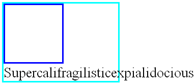
Several floats may be adjacent, and this model also applies to adjacent floats in the same line.
The following rule floats all IMG boxes with class="icon" to the left (and sets the left margin to 0):
img.icon { float : left; margin-left : 0 ; }
Consider the following HTML source and style sheet:
<!DOCTYPE HTML PUBLIC "-//W3C//DTD HTML 4.01//EN"> < HTML > < HEAD > < TITLE > Float example</ TITLE > < STYLE type = "text/css" > IMG { float : left } BODY , P , IMG { margin : 2 em } </ STYLE > </ HEAD > < BODY > < P >< IMG src = img.png alt = "This image will illustrate floats" > Some sample text that has no other...</ BODY > </ HTML >
The IMG box is floated to the left. The content that follows is formatted to the right of the float, starting on the same line as the float. The line boxes to the right of the float are shortened due to the float’s presence, but resume their "normal" width (that of the containing block established by the P element) after the float. This document might be formatted as:

Formatting would have been exactly the same if the document had been:
< BODY > < P > Some sample text< IMG src = img.png alt = "This image will illustrate floats" > that has no other...</ BODY >
because the content to the left of the float is displaced by the float and reflowed down its right side.
As stated in section 8.3.1, the margins of floating boxes never collapse with margins of adjacent boxes. Thus, in the previous example, vertical margins do not collapse between the P box and the floated IMG box.
The contents of floats are stacked as if floats generated new stacking contexts, except that any positioned elements and elements that actually create new stacking contexts take part in the float’s parent stacking context. A float can overlap other boxes in the normal flow (e.g., when a normal flow box next to a float has negative margins). When this happens, floats are rendered in front of non-positioned in-flow blocks, but behind in-flow inlines.
Here is another illustration, showing what happens when a float overlaps borders of elements in the normal flow.

A floating image obscures borders of block boxes it overlaps.
The following example illustrates the use of the clear property to prevent content from flowing next to a float.
Assuming a rule such as this:
p { clear : left}
formatting might look like this:
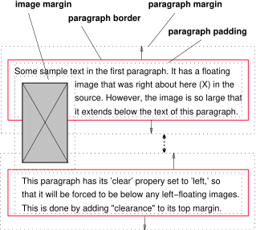
Both paragraphs have set 'clear: left', which causes the second paragraph to be "pushed down" to a position below the float — "clearance" is added above its top margin to accomplish this (see the clear property).
9.5.1. Positioning the float: the float property
| Name: | float |
|---|---|
| Value: | left | right | none | inherit |
| Initial: | none |
| Applies to: | all, but see {visuren.html#dis-pos-flo}9.7{} |
| Inherited: | no |
| Percentages: | N/A |
| Computed value: | as specified |
| Canonical order: | per grammar |
| Animation type: | discrete |
| Media: | visual |
This property specifies whether a box should float to the left, right, or not at all. It may be set for any element, but only applies to elements that generate boxes that are not absolutely positioned. The values of this property have the following meanings:
- left
- The element generates a block box that is floated to the left. Content flows on the right side of the box, starting at the top (subject to the clear property).
- right
- Similar to left, except the box is floated to the right, and content flows on the left side of the box, starting at the top.
- none
- The box is not floated.
User agents may treat float as none on the root element.
Here are the precise rules that govern the behavior of floats:
- The left outer edge of a left-floating box may not be to the left of the left edge of its containing block. An analogous rule holds for right-floating elements.
- If the current box is left-floating, and there are any left-floating boxes generated by elements earlier in the source document, then for each such earlier box, either the left outer edge of the current box must be to the right of the right outer edge of the earlier box, or its top must be lower than the bottom of the earlier box. Analogous rules hold for right-floating boxes.
- The right outer edge of a left-floating box may not be to the right of the left outer edge of any right-floating box that is next to it. Analogous rules hold for right-floating elements.
- A floating box’s outer top may not be higher than the top of its containing block. When the float occurs between two collapsing margins, the float is positioned as if it had an otherwise empty anonymous block parent taking part in the flow. The position of such a parent is defined by the rules in the section on margin collapsing.
- The outer top of a floating box may not be higher than the outer top of any block or floated box generated by an element earlier in the source document.
- The outer top of an element’s floating box may not be higher than the top of any line-box containing a box generated by an element earlier in the source document.
- A left-floating box that has another left-floating box to its left may not have its right outer edge to the right of its containing block’s right edge. (Loosely: a left float may not stick out at the right edge, unless it is already as far to the left as possible.) An analogous rule holds for right-floating elements.
- A floating box must be placed as high as possible.
- A left-floating box must be put as far to the left as possible, a right-floating box as far to the right as possible. A higher position is preferred over one that is further to the left/right.
But in CSS 2, if, within the block formatting context, there is an in-flow negative vertical margin such that the float’s position is above the position it would be at were all such negative margins set to zero, the position of the float is undefined.
References to other elements in these rules refer only to other elements in the same block formatting context as the float.
This HTML fragment results in the b floating to the right.
<P>a<SPAN style="float: right">b</SPAN></P>
If the P element’s width is enough, the a and the b will be side by side. It might look like this:
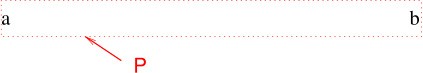
9.5.2. Controlling flow next to floats: the clear property
| Name: | clear |
|---|---|
| Value: | none | left | right | both | inherit |
| Initial: | none |
| Applies to: | block-level elements |
| Inherited: | no |
| Percentages: | N/A |
| Computed value: | as specified |
| Canonical order: | per grammar |
| Animation type: | discrete |
| Media: | visual |
This property indicates which sides of an element’s box(es) may not be adjacent to an earlier floating box. The clear property does not consider floats inside the element itself or in other block formatting contexts.
Values have the following meanings when applied to non-floating block-level boxes:
- left
- Requires that the top border edge of the box be below the bottom outer edge of any left-floating boxes that resulted from elements earlier in the source document.
- right
- Requires that the top border edge of the box be below the bottom outer edge of any right-floating boxes that resulted from elements earlier in the source document.
- both
- Requires that the top border edge of the box be below the bottom outer edge of any right-floating and left-floating boxes that resulted from elements earlier in the source document.
- none
- No constraint on the box’s position with respect to floats.
Values other than none potentially introduce clearance. Clearance inhibits margin collapsing and acts as spacing above the margin-top of an element. It is used to push the element vertically past the float.
Computing the clearance of an element on which clear is set is done by first determining the hypothetical position of the element’s top border edge. This position is where the actual top border edge would have been if the element’s clear property had been none.
If this hypothetical position of the element’s top border edge is not past the relevant floats, then clearance is introduced, and margins collapse according to the rules in 8.3.1.
Then the amount of clearance is set to the greater of:
- The amount necessary to place the border edge of the block even with the bottom outer edge of the lowest float that is to be cleared.
- The amount necessary to place the top border edge of the block at its hypothetical position.
Alternatively, clearance is set exactly to the amount necessary to place the border edge of the block even with the bottom outer edge of the lowest float that is to be cleared.
Note: Both behaviors are allowed pending evaluation of their compatibility with existing Web content. A future CSS specification will require either one or the other.
Note: The clearance can be negative or zero.
Example 1. Assume (for the sake of simplicity), that we have just three boxes, in this order: block B1 with a bottom margin of M1 (B1 has no children and no padding or border), floating block F with a height H, and block B2 with a top margin of M2 (no padding or border, no children). B2 has clear set to both. We also assume B2 is not empty.
Without considering the clear property on B2, we have the situation in the diagram below. The margins of B1 and B2 collapse. Let’s say the bottom border edge of B1 is at y = 0, then the top of F is at y = M1, the top border edge of B2 is at y = max(M1,M2), and the bottom of F is at y = M1 + H.
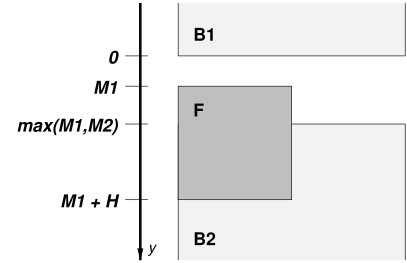
We also assume that B2 is not below F, i.e., we are in the situation described in the spec where we need to add clearance. That means:
max(M1,M2) < M1 + H
We need to compute clearance C twice, C1 and C2, and keep the greater of the two: C = max(C1,C2). The first way is to put the top of B2 flush with the bottom of F, i.e., at y = M1 + H. That means, because the margins no longer collapse with a clearance between them:
bottom of F = top border edge of B2 ⇔
M1 + H = M1 + C1 + M2 ⇔
C1 = M1 + H - M1 - M2
= H - M2
The second computation is to keep the top of B2 where it is, i.e., at y = max(M1,M2). That means:
max(M1,M2) = M1 + C2 + M2 ⇔
C2 = max(M1,M2) - M1 - M2
We assumed that max(M1,M2) < M1 + H, which implies
C2 = max(M1,M2) - M1 - M2 < M1 + H - M1 - M2 = H - M2 ⇒
C2 < H - M2
And, as C1 = H - M2, it follows that
C2 < C1
and hence
C = max(C1,C2) = C1
Example 2. An example of negative clearance is this situation, in which the clearance is -1em. (Assume none of the elements have borders or padding):
<p style="margin-bottom: 4em"> First paragraph. <p style="float: left; height: 2em; margin: 0"> Floating paragraph. <p style="clear: left; margin-top: 3em"> Last paragraph.
Explanation: Without the clear, the first and last paragraphs' margins would collapse and the last paragraph’s top border edge would be flush with the top of the floating paragraph. But the clear requires the top border edge to be below the float, i.e., 2em lower. This means that clearance must be introduced. Accordingly, the margins no longer collapse and the amount of clearance is set so that clearance + margin-top = 2em, i.e., clearance = 2em - margin-top = 2em \- 3em = -1em.
When the property is set on floating elements, it results in a modification of the rules for positioning the float. An extra constraint (#10) is added:
- The top outer edge of the float must be below the bottom outer edge of all earlier left-floating boxes (in the case of 'clear: left'), or all earlier right-floating boxes (in the case of 'clear: right'), or both ('clear: both').
Note. This property applied to all elements in CSS1. Implementations may therefore have supported this property on all elements. In CSS2 (1998) and CSS 2 the clear property only applies to block-level elements. Therefore authors should only use this property on block-level elements. If an implementation does support clear on inline elements, rather than setting a clearance as explained above, the implementation should force a break and effectively insert one or more empty line boxes (or shifting the new line box downward as described in section 9.5) to move the top of the cleared inline’s line box to below the respective floating box(es).
9.6. Absolute positioning
In the absolute positioning model, a box is explicitly offset with respect to its containing block. It is removed from the normal flow entirely (it has no impact on later siblings). An absolutely positioned box establishes a new containing block for normal flow children and absolutely (but not fixed) positioned descendants. However, the contents of an absolutely positioned element do not flow around any other boxes. They may obscure the contents of another box (or be obscured themselves), depending on the stack levels of the overlapping boxes.
References in this specification to an absolutely positioned element (or its box) imply that the element’s position property has the value absolute or fixed.
9.6.1. Fixed positioning
Fixed positioning is a subcategory of absolute positioning. The only difference is that for a fixed positioned box, the containing block is established by the viewport. For continuous media, fixed boxes do not move when the document is scrolled. In this respect, they are similar to fixed background images. For paged media, boxes with fixed positions are repeated on every page. This is useful for placing, for instance, a signature at the bottom of each page. Boxes with fixed position that are larger than the page area are clipped. Parts of the fixed position box that are not visible in the initial containing block will not print.
Authors may use fixed positioning to create frame-like presentations. Consider the following frame layout:

This might be achieved with the following HTML document and style rules:
<!DOCTYPE HTML PUBLIC "-//W3C//DTD HTML 4.01//EN"> < HTML > < HEAD > < TITLE > A frame document with CSS 2</ TITLE > < STYLE type = "text/css" media = "screen" > BODY { height : 8.5 in } /* Required for percentage heights below */ # header { position : fixed ; width : 100 % ; height : 15 % ; top : 0 ; right : 0 ; bottom : auto ; left : 0 ; } # sidebar { position : fixed ; width : 10 em ; height : auto ; top : 15 % ; right : auto ; bottom : 100 px ; left : 0 ; } # main { position : fixed ; width : auto ; height : auto ; top : 15 % ; right : 0 ; bottom : 100 px ; left : 10 em ; } # footer { position : fixed ; width : 100 % ; height : 100 px ; top : auto ; right : 0 ; bottom : 0 ; left : 0 ; } </ STYLE > </ HEAD > < BODY > < DIV id = "header" > ...</ DIV > < DIV id = "sidebar" > ...</ DIV > < DIV id = "main" > ...</ DIV > < DIV id = "footer" > ...</ DIV > </ BODY > </ HTML >
9.7. Relationships between display, position, and float
The three properties that affect box generation and layout — display, position, and float — interact as follows:
- If display has the value none, then position and float do not apply. In this case, the element generates no box.
- Otherwise, if position has the value absolute or fixed, the box is absolutely positioned, the computed value of float is none, and display is set according to the table below. The position of the box will be determined by the top, right, bottom and left properties and the box’s containing block.
- Otherwise, if float has a value other than none, the box is floated and display is set according to the table below.
- Otherwise, if the element is the root element, display is set according to the table below, except that it is undefined in CSS 2 whether a specified value of list-item becomes a computed value of block or list-item.
- Otherwise, the remaining display property values apply as specified.
| Specified value | Computed value |
|---|---|
| inline-table | table |
| inline, table-row-group, table-column, table-column-group, table-header-group, table-footer-group, table-row, table-cell, table-caption, inline-block | block |
| others | same as specified |
9.8. Comparison of normal flow, floats, and absolute positioning
To illustrate the differences between normal flow, relative positioning, floats, and absolute positioning, we provide a series of examples based on the following HTML:
<!DOCTYPE HTML PUBLIC "-//W3C//DTD HTML 4.01//EN"> < HTML > < HEAD > < TITLE > </ TITLE > </ HEAD > < BODY > < P > < SPAN id = "outer" > < SPAN id = "inner" > </ SPAN > </ SPAN > </ P > </ BODY > </ HTML > In this document, we assume the following rules:
body { display: block; font-size:12px; line-height: 200%;
width: 400px; height: 400px }
p { display: block }
span { display: inline }
The final positions of boxes generated by the outer and inner elements vary in each example. In each illustration, the numbers to the left of the illustration indicate the normal flow position of the double-spaced (for clarity) lines.
Note. The diagrams in this section are illustrative and not to scale. They are meant to highlight the differences between the various positioning schemes in CSS 2, and are not intended to be reference renderings of the examples given.
9.8.1. Normal flow
Consider the following CSS declarations for outer and inner that do not alter the normal flow of boxes:
#outer { color: red }
#inner { color: blue }
The P element contains all inline content: anonymous inline text and two SPAN elements. Therefore, all of the content will be laid out in an inline formatting context, within a containing block established by the P element, producing something like:
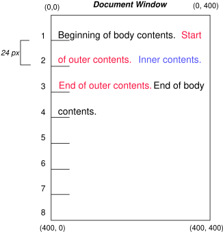
9.8.2. Relative positioning
To see the effect of relative positioning, we specify:
#outer { position: relative; top: -12px; color: red }
#inner { position: relative; top: 12px; color: blue }
Text flows normally up to the outer element. The outer text is then flowed into its normal flow position and dimensions at the end of line 1. Then, the inline boxes containing the text (distributed over three lines) are shifted as a unit by -12px (upwards).
The contents of inner, as a child of outer, would normally flow immediately after the words "of outer contents" (on line 1.5). However, the inner contents are themselves offset relative to the outer contents by 12px (downwards), back to their original position on line 2.
Note that the content following outer is not affected by the relative positioning of outer.
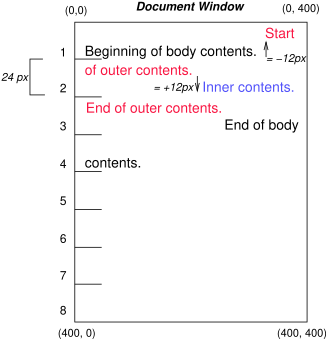
Note also that had the offset of outer been -24px, the text of outer and the body text would have overlapped.
9.8.3. Floating a box
Now consider the effect of floating the inner element’s text to the right by means of the following rules:
#outer { color: red }
#inner { float: right; width: 130px; color: blue }
Text flows normally up to the inner box, which is pulled out of the flow and floated to the right margin (its width has been assigned explicitly). Line boxes to the left of the float are shortened, and the document’s remaining text flows into them.

To show the effect of the clear property, we add a sibling element to the example:
<!DOCTYPE HTML PUBLIC "-//W3C//DTD HTML 4.01//EN"> < HTML > < HEAD > < TITLE > </ TITLE > </ HEAD > < BODY > < P > < SPAN id = outer > < SPAN id = inner > </ SPAN > < SPAN id = sibling > </ SPAN > </ SPAN > </ P > </ BODY > </ HTML > The following rules:
#inner { float: right; width: 130px; color: blue }
#sibling { color: red }
cause the inner box to float to the right as before and the document’s remaining text to flow into the vacated space:

However, if the clear property on the sibling element is set to right (i.e., the generated sibling box will not accept a position next to floating boxes to its right), the sibling content begins to flow below the float:
#inner { float: right; width: 130px; color: blue }
#sibling { clear: right; color: red }

9.8.4. Absolute positioning
Finally, we consider the effect of absolute positioning. Consider the following CSS declarations for outer and inner:
#outer {
position: absolute;
top: 200px; left: 200px;
width: 200px;
color: red;
}
#inner { color: blue }
which cause the top of the outer box to be positioned with respect to its containing block. The containing block for a positioned box is established by the nearest positioned ancestor (or, if none exists, the initial containing block, as in our example). The top side of the outer box is 200px below the top of the containing block and the left side is 200px from the left side. The child box of outer is flowed normally with respect to its parent.

The following example shows an absolutely positioned box that is a child of a relatively positioned box. Although the parent outer box is not actually offset, setting its position property to relative means that its box may serve as the containing block for positioned descendants. Since the outer box is an inline box that is split across several lines, the first inline box’s top and left edges (depicted by thick dashed lines in the illustration below) serve as references for top and left offsets.
#outer {
position: relative;
color: red
}
#inner {
position: absolute;
top: 200px; left: -100px;
height: 130px; width: 130px;
color: blue;
}
This results in something like the following:
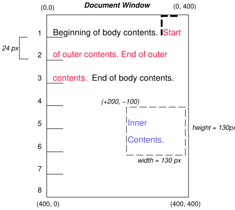
If we do not position the outer box:
#outer { color: red }
#inner {
position: absolute;
top: 200px; left: -100px;
height: 130px; width: 130px;
color: blue;
}
the containing block for inner becomes the initial containing block (in our example). The following illustration shows where the inner box would end up in this case.
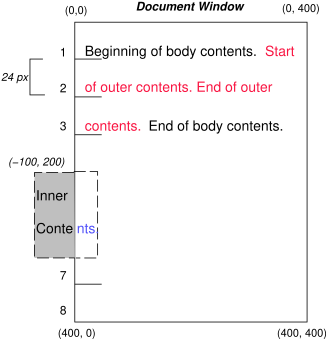
Relative and absolute positioning may be used to implement change bars, as shown in the following example. The following fragment:
< P style = "position: relative; margin-right: 10px; left: 10px;" > I used two red hyphens to serve as a change bar. They will "float" to the left of the line containing THIS< SPAN style = "position: absolute; top: auto; left: -1em; color: red;" > --</ SPAN > word.</ P >
might result in something like:

First, the paragraph (whose containing block sides are shown in the illustration) is flowed normally. Then it is offset 10px from the left edge of the containing block (thus, a right margin of 10px has been reserved in anticipation of the offset). The two hyphens acting as change bars are taken out of the flow and positioned at the current line (due to 'top: auto'), -1em from the left edge of its containing block (established by the P in its final position). The result is that the change bars seem to "float" to the left of the current line.
9.9. Layered presentation
9.9.1. Specifying the stack level: the z-index property
| Name: | z-index |
|---|---|
| Value: | auto | <integer> | inherit |
| Initial: | auto |
| Applies to: | positioned elements |
| Inherited: | no |
| Percentages: | N/A |
| Computed value: | as specified |
| Canonical order: | per grammar |
| Animation type: | discrete |
| Media: | visual |
For a positioned box, the z-index property specifies:
- The stack level of the box in the current stacking context.
- Whether the box establishes a stacking context.
Values have the following meanings:
- <integer>
- This integer is the stack level of the generated box in the current stacking context. The box also establishes a new stacking context.
- auto
- The stack level of the generated box in the current stacking context is 0. The box does not establish a new stacking context unless it is the root element.
In this section, the expression "in front of" means closer to the user as the user faces the screen.
In CSS 2, each box has a position in three dimensions. In addition to their horizontal and vertical positions, boxes lie along a "z-axis" and are formatted one on top of the other. Z-axis positions are particularly relevant when boxes overlap visually. This section discusses how boxes may be positioned along the z-axis.
The order in which the rendering tree is painted onto the canvas is described in terms of stacking contexts. Stacking contexts can contain further stacking contexts. A stacking context is atomic from the point of view of its parent stacking context; boxes in other stacking contexts may not come between any of its boxes.
Each box belongs to one stacking context. Each positioned box in a given stacking context has an integer stack level, which is its position on the z-axis relative other stack levels within the same stacking context. Boxes with greater stack levels are always formatted in front of boxes with lower stack levels. Boxes may have negative stack levels. Boxes with the same stack level in a stacking context are stacked back-to-front according to document tree order.
The root element forms the root stacking context. Other stacking contexts are generated by any positioned element (including relatively positioned elements) having a computed value of z-index other than auto. Stacking contexts are not necessarily related to containing blocks. In future levels of CSS, other properties may introduce stacking contexts, for example 'opacity' [CSS3COLOR].
Within each stacking context, the following layers are painted in back-to-front order:
- the background and borders of the element forming the stacking context.
- the child stacking contexts with negative stack levels (most negative first).
- the in-flow, non-inline-level, non-positioned descendants.
- the non-positioned floats.
- the in-flow, inline-level, non-positioned descendants, including inline tables and inline blocks.
- the child stacking contexts with stack level 0 and the positioned descendants with stack level 0.
- the child stacking contexts with positive stack levels (least positive first).
Within each stacking context, positioned elements with stack level 0 (in layer 6), non-positioned floats (layer 4), inline blocks (layer 5), and inline tables (layer 5), are painted as if those elements themselves generated new stacking contexts, except that their positioned descendants and any would-be child stacking contexts take part in the current stacking context.
This painting order is applied recursively to each stacking context. This description of stacking context painting order constitutes an overview of the detailed normative definition in Appendix E.
In the following example, the stack levels of the boxes (named with their "id" attributes) are: "text2"=0, "image"=1, "text3"=2, and "text1"=3. The "text2" stack level is inherited from the root box. The others are specified with the z-index property.
<!DOCTYPE HTML PUBLIC "-//W3C//DTD HTML 4.01//EN"> < HTML > < HEAD > < TITLE > Z-order positioning</ TITLE > < STYLE type = "text/css" > . pile { position : absolute ; left : 2 in ; top : 2 in ; width : 3 in ; height : 3 in ; } </ STYLE > </ HEAD > < BODY > < P > < IMG id = "image" class = "pile" src = "butterfly.png" alt = "A butterfly image" style = "z-index: 1" > < DIV id = "text1" class = "pile" style = "z-index: 3" > This text will overlay the butterfly image.</ DIV > < DIV id = "text2" > This text will be beneath everything.</ DIV > < DIV id = "text3" class = "pile" style = "z-index: 2" > This text will underlay text1, but overlay the butterfly image</ DIV > </ BODY > </ HTML >
This example demonstrates the notion of transparency. The default behavior of the background is to allow boxes behind it to be visible. In the example, each box transparently overlays the boxes below it. This behavior can be overridden by using one of the existing background properties.
9.10. Text direction: the direction and unicode-bidi properties
Conforming user agents that do not support bidirectional text may ignore the direction and unicode-bidi properties described in this section. This exception includes UAs that render right-to-left characters simply because a font on the system contains them but do not support the concept of right-to-left text direction.
The characters in certain scripts are written from right to left. In some documents, in particular those written with the Arabic or Hebrew script, and in some mixed-language contexts, text in a single (visually displayed) block may appear with mixed directionality. This phenomenon is called bidirectionality, or "bidi" for short.
The Unicode standard ([UNICODE], [UAX9]) defines a complex algorithm for determining the proper directionality of text. The algorithm consists of an implicit part based on character properties, as well as explicit controls for embeddings and overrides. CSS 2 relies on this algorithm to achieve proper bidirectional rendering. The direction and unicode-bidi properties allow authors to specify how the elements and attributes of a document language map to this algorithm.
User agents that support bidirectional text must apply the Unicode bidirectional algorithm to every sequence of inline-level boxes uninterrupted by a forced (bidi class B) break or block boundary. This sequence forms the "paragraph" unit in the bidirectional algorithm. The paragraph embedding level is set according to the value of the direction property of the containing block rather than by the heuristic given in steps P2 and P3 of the Unicode algorithm.
Because the directionality of a text depends on the structure and semantics of the document language, these properties should in most cases be used only by designers of document type descriptions (DTDs), or authors of special documents. If a default style sheet specifies these properties, authors and users should not specify rules to override them.
The HTML 4 specification ([HTML401], section 8.2) defines bidirectionality behavior for HTML elements. The style sheet rules that would achieve the bidi behavior specified in [HTML401] are given in the sample style sheet. The HTML 4 specification also contains more information on bidirectionality issues.
| Name: | direction |
|---|---|
| Value: | ltr | rtl | inherit |
| Initial: | ltr |
| Applies to: | all elements, but see prose |
| Inherited: | yes |
| Percentages: | N/A |
| Computed value: | as specified |
| Canonical order: | per grammar |
| Animation type: | discrete |
| Media: | visual |
This property specifies the base writing direction of blocks and the direction of embeddings and overrides (see unicode-bidi) for the Unicode bidirectional algorithm. In addition, it specifies such things as the direction of table column layout, the direction of horizontal overflow, the position of an incomplete last line in a block in case of 'text-align: justify'.
Values for this property have the following meanings:
- ltr
- Left-to-right direction.
- rtl
- Right-to-left direction.
For the direction property to affect reordering in inline elements, the unicode-bidi property’s value must be embed or override.
Note. The direction property, when specified for table column elements, is not inherited by cells in the column since columns are not the ancestors of the cells in the document tree. Thus, CSS cannot easily capture the "dir" attribute inheritance rules described in [HTML401], section 11.3.2.1.
| Name: | unicode-bidi |
|---|---|
| Value: | normal | embed | bidi-override | inherit |
| Initial: | normal |
| Applies to: | all elements, but see prose |
| Inherited: | no |
| Percentages: | N/A |
| Computed value: | as specified |
| Canonical order: | per grammar |
| Animation type: | discrete |
| Media: | visual |
Values for this property have the following meanings:
- normal
- The element does not open an additional level of embedding with respect to the bidirectional algorithm. For inline elements, implicit reordering works across element boundaries.
- embed
- If the element is inline, this value opens an additional level of embedding with respect to the bidirectional algorithm. The direction of this embedding level is given by the direction property. Inside the element, reordering is done implicitly. This corresponds to adding a LRE (U+202A; for 'direction: ltr') or RLE (U+202B; for 'direction: rtl') at the start of the element and a PDF (U+202C) at the end of the element.
- bidi-override
- For inline elements this creates an override. For block container elements this creates an override for inline-level descendants not within another block container element. This means that inside the element, reordering is strictly in sequence according to the direction property; the implicit part of the bidirectional algorithm is ignored. This corresponds to adding a LRO (U+202D; for 'direction: ltr') or RLO (U+202E; for 'direction: rtl') at the start of the element or at the start of each anonymous child block box, if any, and a PDF (U+202C) at the end of the element.
The final order of characters in each block container is the same as if the bidi control codes had been added as described above, markup had been stripped, and the resulting character sequence had been passed to an implementation of the Unicode bidirectional algorithm for plain text that produced the same line-breaks as the styled text. In this process, replaced elements with 'display: inline' are treated as neutral characters, unless their unicode-bidi property has a value other than normal, in which case they are treated as strong characters in the direction specified for the element. All other atomic inline-level boxes are treated as neutral characters always.
Please note that in order to be able to flow inline boxes in a uniform direction (either entirely left-to-right or entirely right-to-left), more inline boxes (including anonymous inline boxes) may have to be created, and some inline boxes may have to be split up and reordered before flowing.
Because the Unicode algorithm has a limit of 61 levels of embedding, care should be taken not to use unicode-bidi with a value other than normal unless appropriate. In particular, a value of inherit should be used with extreme caution. However, for elements that are, in general, intended to be displayed as blocks, a setting of 'unicode-bidi: embed' is preferred to keep the element together in case display is changed to inline (see example below).
The following example shows an XML document with bidirectional text. It illustrates an important design principle: DTD designers should take bidi into account both in the language proper (elements and attributes) and in any accompanying style sheets. The style sheets should be designed so that bidi rules are separate from other style rules. The bidi rules should not be overridden by other style sheets so that the document language’s or DTD’s bidi behavior is preserved.
In this example, lowercase letters stand for inherently left-to-right characters and uppercase letters represent inherently right-to-left characters:
<HEBREW> <PAR> </PAR> <PAR> <EMPH> </EMPH> </PAR> </HEBREW> <ENGLISH> <PAR> </PAR> <PAR> </PAR> <PAR> <HE-QUO> </HE-QUO></PAR> </ENGLISH> Since this is XML, the style sheet is responsible for setting the writing direction. This is the style sheet:
/* Rules for bidi */ HEBREW, HE-QUO {direction: rtl; unicode-bidi: embed} ENGLISH {direction: ltr; unicode-bidi: embed} /* Rules for presentation */ HEBREW, ENGLISH, PAR {display: block} EMPH {font-weight: bold}
The HEBREW element is a block with a right-to-left base direction, the ENGLISH element is a block with a left-to-right base direction. The PARs are blocks that inherit the base direction from their parents. Thus, the first two PARs are read starting at the top right, the final three are read starting at the top left. Please note that HEBREW and ENGLISH are chosen as element names for explicitness only; in general, element names should convey structure without reference to language.
The EMPH element is inline-level, and since its value for unicode-bidi is normal (the initial value), it has no effect on the ordering of the text. The HE-QUO element, on the other hand, creates an embedding.
The formatting of this text might look like this if the line length is long:
5WERBEH 4WERBEH english3 2WERBEH 1WERBEH
8WERBEH 7WERBEH 6WERBEH
english9 english10 english11 13WERBEH 12WERBEH
english14 english15 english16
english17 20WERBEH english19 18WERBEH
Note that the HE-QUO embedding causes HEBREW18 to be to the right of english19.
If lines have to be broken, it might be more like this:
2WERBEH 1WERBEH
-EH 4WERBEH english3
5WERB
-EH 7WERBEH 6WERBEH
8WERB
english9 english10 en-
glish11 12WERBEH
13WERBEH
english14 english15
english16
english17 18WERBEH
20WERBEH english19
Because HEBREW18 must be read before english19, it is on the line above english19. Just breaking the long line from the earlier formatting would not have worked. Note also that the first syllable from english19 might have fit on the previous line, but hyphenation of left-to-right words in a right-to-left context, and vice versa, is usually suppressed to avoid having to display a hyphen in the middle of a line.
10. Visual formatting model details
10.1. Definition of "containing block"
The position and size of an element’s box(es) are sometimes calculated relative to a certain rectangle, called the containing block of the element. The containing block of an element is defined as follows:
- The containing block in which the root element lives is a rectangle called the initial containing block. For continuous media, it has the dimensions of the viewport and is anchored at the canvas origin; it is the page area for paged media. The direction property of the initial containing block is the same as for the root element.
- For other elements, if the element’s position is relative or static, the containing block is formed by the content edge of the nearest block container ancestor box.
- If the element has 'position: fixed', the containing block is established by the viewport in the case of continuous media or the page area in the case of paged media.
-
If the element has 'position: absolute', the containing block is
established by the nearest ancestor with a position of absolute, relative or fixed, in the following way:
- In the case that the ancestor is an inline element, the containing block is the bounding box around the padding boxes of the first and the last inline boxes generated for that element. In CSS 2, if the inline element is split across multiple lines, the containing block is undefined.
- Otherwise, the containing block is formed by the padding edge of the ancestor.
If there is no such ancestor, the containing block is the initial containing block.
In paged media, an absolutely positioned element is positioned relative to its containing block ignoring any page breaks (as if the document were continuous). The element may subsequently be broken over several pages.
For absolutely positioned content that resolves to a position on a page other than the page being laid out (the current page), or resolves to a position on the current page which has already been rendered for printing, printers may place the content
- on another location on the current page,
- on a subsequent page, or
- may omit it.
Note that a block-level element that is split over several pages may have a different width on each page and that there may be device-specific limits.
With no positioning, the containing blocks (C.B.) in the following document:
<!DOCTYPE HTML PUBLIC "-//W3C//DTD HTML 4.01//EN"> < HTML > < HEAD > < TITLE > Illustration of containing blocks</ TITLE > </ HEAD > < BODY id = "body" > < DIV id = "div1" > < P id = "p1" > This is text in the first paragraph...</ P > < P id = "p2" > This is text< EM id = "em1" > in the< STRONG id = "strong1" > second</ STRONG > paragraph.</ EM ></ P > </ DIV > </ BODY > </ HTML >
are established as follows:
| For box generated by | C.B. is established by |
|---|---|
| html | initial C.B. (UA-dependent) |
| body | html |
| div1 | body |
| p1 | div1 |
| p2 | div1 |
| em1 | p2 |
| strong1 | p2 |
If we position "div1":
#div1 { position: absolute; left: 50px; top: 50px }
its containing block is no longer "body"; it becomes the initial containing block (since there are no other positioned ancestor boxes).
If we position "em1" as well:
#div1 { position: absolute; left: 50px; top: 50px } #em1 { position: absolute; left: 100px; top: 100px }
the table of containing blocks becomes:
| For box generated by | C.B. is established by |
|---|---|
| html | initial C.B. (UA-dependent) |
| body | html |
| div1 | initial C.B. |
| p1 | div1 |
| p2 | div1 |
| em1 | div1 |
| strong1 | em1 |
By positioning "em1", its containing block becomes the nearest positioned ancestor box (i.e., that generated by "div1").
10.2. Content width: the width property
| Name: | width |
|---|---|
| Value: | <length> | <percentage> | auto | inherit |
| Initial: | auto |
| Applies to: | all elements but non-replaced inline elements, table rows, and row groups |
| Inherited: | no |
| Percentages: | refer to width of containing block |
| Computed value: | the percentage or auto as specified or the absolute length |
| Canonical order: | per grammar |
| Animation type: | discrete |
| Media: | visual |
This property specifies the content width of boxes.
This property does not apply to non-replaced inline elements. The content width of a non-replaced inline element’s boxes is that of the rendered content within them (before any relative offset of children). Recall that inline boxes flow into line boxes. The width of line boxes is given by the their containing block, but may be shorted by the presence of floats.
Values have the following meanings:
- <length>
- Specifies the width of the content area using a length unit.
- <percentage>
- Specifies a percentage width. The percentage is calculated with respect to the width of the generated box’s containing block. If the containing block’s width depends on this element’s width, then the resulting layout is undefined in CSS 2. Note: For absolutely positioned elements whose containing block is based on a block container element, the percentage is calculated with respect to the width of the padding box of that element. This is a change from CSS1, where the percentage width was always calculated with respect to the content box of the parent element.
- auto
- The width depends on the values of other properties. See the sections below.
Negative values for width are illegal.
For example, the following rule fixes the content width of paragraphs at 100 pixels:
p { width: 100px }
10.3. Calculating widths and margins
The values of an element’s width, margin-left, margin-right, left and right properties as used for layout depend on the type of box generated and on each other. (The value used for layout is sometimes referred to as the used value.) In principle, the values used are the same as the computed values, with auto replaced by some suitable value, and percentages calculated based on the containing block, but there are exceptions. The following situations need to be distinguished:
- inline, non-replaced elements
- inline, replaced elements
- block-level, non-replaced elements in normal flow
- block-level, replaced elements in normal flow
- floating, non-replaced elements
- floating, replaced elements
- absolutely positioned, non-replaced elements
- absolutely positioned, replaced elements
- inline-block, non-replaced elements in normal flow
- inline-block, replaced elements in normal flow
For Points 1-6 and 9-10, the values of left and right in the case of relatively positioned elements are determined by the rules in section 9.4.3.
Note. The used value of width calculated below is a tentative value, and may have to be calculated multiple times, depending on min-width and max-width, see the section Minimum and maximum widths below.
10.3.1. Inline, non-replaced elements
The width property does not apply. A computed value of auto for margin-left or margin-right becomes a used value of 0.
10.3.2. Inline, replaced elements
A computed value of auto for margin-left or margin-right becomes a used value of 0.
If height and width both have computed values of auto and the element also has an intrinsic width, then that intrinsic width is the used value of width.
If height and width both have computed values of auto and the element has no intrinsic width, but does have an intrinsic height and intrinsic ratio; or if width has a computed value of auto, height has some other computed value, and the element does have an intrinsic ratio; then the used value of width is:
(used height) * (intrinsic ratio)
If height and width both have computed values of auto and the element has an intrinsic ratio but no intrinsic height or width, then the used value of width is undefined in CSS 2. However, it is suggested that, if the containing block’s width does not itself depend on the replaced element’s width, then the used value of width is calculated from the constraint equation used for block-level, non-replaced elements in normal flow.
Otherwise, if width has a computed value of auto, and the element has an intrinsic width, then that intrinsic width is the used value of width.
Otherwise, if width has a computed value of auto, but none of the conditions above are met, then the used value of width becomes 300px. If 300px is too wide to fit the device, UAs should use the width of the largest rectangle that has a 2:1 ratio and fits the device instead.
10.3.3. Block-level, non-replaced elements in normal flow
The following constraints must hold among the used values of the other properties:
margin-left + border-left-width + padding-left + width + padding-right + border-right-width + margin-right = width of containing block
If width is not auto and border-left-width + padding-left + width + padding-right + border-right-width (plus any of margin-left or margin-right that are not auto) is larger than the width of the containing block, then any auto values for margin-left or margin-right are, for the following rules, treated as zero.
If all of the above have a computed value other than auto, the values are said to be "over-constrained" and one of the used values will have to be different from its computed value. If the direction property of the containing block has the value ltr, the specified value of margin-right is ignored and the value is calculated so as to make the equality true. If the value of direction is rtl, this happens to margin-left instead.
If there is exactly one value specified as auto, its used value follows from the equality.
If width is set to auto, any other auto values become 0 and width follows from the resulting equality.
If both margin-left and margin-right are auto, their used values are equal. This horizontally centers the element with respect to the edges of the containing block.
10.3.4. Block-level, replaced elements in normal flow
The used value of width is determined as for inline replaced elements. Then the rules for non-replaced block-level elements are applied to determine the margins.
10.3.5. Floating, non-replaced elements
If margin-left, or margin-right are computed as auto, their used value is 0.
If width is computed as auto, the used value is the "shrink-to-fit" width.
Calculation of the shrink-to-fit width is similar to calculating the width of a table cell using the automatic table layout algorithm. Roughly: calculate the preferred width by formatting the content without breaking lines other than where explicit line breaks occur, and also calculate the preferred minimum width, e.g., by trying all possible line breaks. CSS 2 does not define the exact algorithm. Thirdly, find the available width: in this case, this is the width of the containing block minus the used values of margin-left, border-left-width, padding-left, padding-right, border-right-width, margin-right, and the widths of any relevant scroll bars.
Then the shrink-to-fit width is: min(max(preferred minimum width, available width), preferred width).
10.3.6. Floating, replaced elements
If margin-left or margin-right are computed as auto, their used value is 0. The used value of width is determined as for inline replaced elements.
10.3.7. Absolutely positioned, non-replaced elements
For the purposes of this section and the next, the term "static position" (of an element) refers, roughly, to the position an element would have had in the normal flow. More precisely:
- The static-position containing block is the containing block of a hypothetical box that would have been the first box of the element if its specified position value had been static and its specified float had been none. (Note that due to the rules in section 9.7 this hypothetical calculation might require also assuming a different computed value for display.)
- The static position for left is the distance from the left edge of the containing block to the left margin edge of a hypothetical box that would have been the first box of the element if its position property had been static and float had been none. The value is negative if the hypothetical box is to the left of the containing block.
- The static position for right is the distance from the right edge of the containing block to the right margin edge of the same hypothetical box as above. The value is positive if the hypothetical box is to the left of the containing block’s edge.
But rather than actually calculating the dimensions of that hypothetical box, user agents are free to make a guess at its probable position.
For the purposes of calculating the static position, the containing block of fixed positioned elements is the initial containing block instead of the viewport, and all scrollable boxes should be assumed to be scrolled to their origin.
The constraint that determines the used values for these elements is:
left + margin-left + border-left-width + padding-left + width \+ padding-right + border-right-width + margin-right + right = width of containing block
If all three of left, width, and right are auto: First set any auto values for margin-left and margin-right to 0. Then, if the direction property of the element establishing the static-position containing block is ltr set left to the static position and apply rule number three below; otherwise, set right to the static position and apply rule number one below.
If none of the three is auto: If both margin-left and margin-right are auto, solve the equation under the extra constraint that the two margins get equal values, unless this would make them negative, in which case when direction of the containing block is ltr (rtl), set margin-left (margin-right) to zero and solve for margin-right (margin-left). If one of margin-left or margin-right is auto, solve the equation for that value. If the values are over-constrained, ignore the value for left (in case the direction property of the containing block is rtl) or right (in case direction is ltr) and solve for that value.
Otherwise, set auto values for margin-left and margin-right to 0, and pick the one of the following six rules that applies.
- left and width are auto and right is not auto, then the width is shrink-to-fit. Then solve for left
- left and right are auto and width is not auto, then if the direction property of the element establishing the static-position containing block is ltr set left to the static position, otherwise set right to the static position. Then solve for left (if 'direction is rtl) or right (if direction is ltr).
- width and right are auto and left is not auto, then the width is shrink-to-fit . Then solve for right
- left is auto, width and right are not auto, then solve for left
- width is auto, left and right are not auto, then solve for width
- right is auto, left and width are not auto, then solve for right
Calculation of the shrink-to-fit width is similar to calculating the width of a table cell using the automatic table layout algorithm. Roughly: calculate the preferred width by formatting the content without breaking lines other than where explicit line breaks occur, and also calculate the preferred minimum width, e.g., by trying all possible line breaks. CSS 2 does not define the exact algorithm. Thirdly, calculate the available width: this is found by solving for width after setting left (in case 1) or right (in case 3) to 0.
Then the shrink-to-fit width is: min(max(preferred minimum width, available width), preferred width).
10.3.8. Absolutely positioned, replaced elements
In this case, section 10.3.7 applies up through and including the constraint equation, but the rest of section 10.3.7 is replaced by the following rules:
- The used value of width is determined as for inline replaced elements. If margin-left or margin-right is specified as auto its used value is determined by the rules below.
- If both left and right have the value auto, then if the direction property of the element establishing the static-position containing block is ltr, set left to the static position; else if direction is rtl, set right to the static position.
- If left or right are auto, replace any auto on margin-left or margin-right with 0.
- If at this point both margin-left and margin-right are still auto, solve the equation under the extra constraint that the two margins must get equal values, unless this would make them negative, in which case when the direction of the containing block is ltr (rtl), set margin-left (margin-right) to zero and solve for margin-right (margin-left).
- If at this point there is an auto left, solve the equation for that value.
- If at this point the values are over-constrained, ignore the value for either left (in case the direction property of the containing block is rtl) or right (in case direction is ltr) and solve for that value.
10.3.9. Inline-block, non-replaced elements in normal flow
If width is auto, the used value is the shrink-to-fit width as for floating elements.
A computed value of auto for margin-left or margin-right becomes a used value of 0.
10.3.10. Inline-block, replaced elements in normal flow
Exactly as inline replaced elements.
10.4. Minimum and maximum widths: min-width and max-width
| Name: | min-width |
|---|---|
| Value: | <length> | <percentage> | inherit |
| Initial: | 0 |
| Applies to: | all elements but non-replaced inline elements, table rows, and row groups |
| Inherited: | no |
| Percentages: | refer to width of containing block |
| Computed value: | the percentage as specified or the absolute length |
| Canonical order: | per grammar |
| Animation type: | discrete |
| Media: | visual |
| Name: | max-width |
|---|---|
| Value: | <length> | <percentage> | none | inherit |
| Initial: | none |
| Applies to: | all elements but non-replaced inline elements, table rows, and row groups |
| Inherited: | no |
| Percentages: | refer to width of containing block |
| Computed value: | the percentage as specified or the absolute length or none |
| Canonical order: | per grammar |
| Animation type: | discrete |
| Media: | visual |
These two properties allow authors to constrain content widths to a certain range. Values have the following meanings:
- <length>
- Specifies a fixed minimum or maximum used width.
- <percentage>
- Specifies a percentage for determining the used value. The percentage is calculated with respect to the width of the generated box’s containing block. If the containing block’s width is negative, the used value is zero. If the containing block’s width depends on this element’s width, then the resulting layout is undefined in CSS 2.
- none
- (Only on max-width) No limit on the width of the box.
Negative values for min-width and max-width are illegal.
In CSS 2, the effect of min-width and max-width on tables, inline tables, table cells, table columns, and column groups is undefined.
The following algorithm describes how the two properties influence the used value of the width property:
- The tentative used width is calculated (without min-width and max-width) following the rules under "Calculating widths and margins" above.
- If the tentative used width is greater than max-width, the rules above are applied again, but this time using the computed value of max-width as the computed value for width.
- If the resulting width is smaller than min-width, the rules above are applied again, but this time using the value of min-width as the computed value for width.
These steps do not affect the real computed values of the above properties.
However, for replaced elements with an intrinsic ratio and both width and height specified as auto, the algorithm is as follows:
Select from the table the resolved height and width values for the appropriate constraint violation. Take the max-width and max-height as max(min, max) so that min ≤ max holds true. In this table w and h stand for the results of the width and height computations ignoring the min-width, min-height, max-width and max-height properties. Normally these are the intrinsic width and height, but they may not be in the case of replaced elements with intrinsic ratios.
Note: In cases where an explicit width or height is set and the other dimension is auto, applying a minimum or maximum constraint on the auto side can cause an over-constrained situation. The spec is clear in the behavior but it might not be what the author expects. The CSS3 object-fit property can be used to obtain different results in this situation.
| Constraint Violation | Resolved Width | Resolved Height |
|---|---|---|
| none | w | h |
| w > max-width | max-width | max(max-width * h/w, min-height) |
| w < min-width | min-width | min(min-width * h/w, max-height) |
| h > max-height | max(max-height * w/h, min-width) | max-height |
| h < min-height | min(min-height * w/h, max-width) | min-height |
| (w > max-width) and (h > max-height), where (max-width/w ≤ max-height/h) | max-width | max(min-height, max-width * h/w) |
| (w > max-width) and (h > max-height), where (max-width/w > max-height/h) | max(min-width, max-height * w/h) | max-height |
| (w < min-width) and (h < min-height), where (min-width/w ≤ min-height/h) | min(max-width, min-height * w/h) | min-height |
| (w < min-width) and (h < min-height), where (min-width/w > min-height/h) | min-width | min(max-height, min-width * h/w) |
| (w < min-width) and (h > max-height) | min-width | max-height |
| (w > max-width) and (h < min-height) | max-width | min-height |
Then apply the rules under "Calculating widths and margins" above, as if width were computed as this value.
10.5. Content height: the height property
| Name: | height |
|---|---|
| Value: | <length> | <percentage> | auto | inherit |
| Initial: | auto |
| Applies to: | all elements but non-replaced inline elements, table columns, and column groups |
| Inherited: | no |
| Percentages: | see prose |
| Computed value: |
the percentage or auto (see prose under
|
| Canonical order: | per grammar |
| Animation type: | discrete |
| Media: | visual |
This property specifies the content height of boxes.
This property does not apply to non-replaced inline elements. See the section on computing heights and margins for non-replaced inline elements for the rules used instead.
Values have the following meanings:
- <length>
- Specifies the height of the content area using a length value.
- <percentage>
- Specifies a percentage height. The percentage is calculated with respect to the height of the generated box’s containing block. If the height of the containing block is not specified explicitly (i.e., it depends on content height), and this element is not absolutely positioned, the value computes to auto. A percentage height on the root element is relative to the initial containing block. Note: For absolutely positioned elements whose containing block is based on a block-level element, the percentage is calculated with respect to the height of the padding box of that element. This is a change from CSS1, where the percentage was always calculated with respect to the content box of the parent element.
- auto
- The height depends on the values of other properties. See the prose below.
Note that the height of the containing block of an absolutely positioned element is independent of the size of the element itself, and thus a percentage height on such an element can always be resolved. However, it may be that the height is not known until elements that come later in the document have been processed.
Negative values for height are illegal.
For example, the following rule sets the content height of paragraphs to 100 pixels:
p { height: 100px }
Paragraphs of which the height of the contents exceeds 100 pixels will overflow according to the overflow property.
10.6. Calculating heights and margins
For calculating the values of top, margin-top, height, margin-bottom, and bottom a distinction must be made between various kinds of boxes:
- inline, non-replaced elements
- inline, replaced elements
- block-level, non-replaced elements in normal flow
- block-level, replaced elements in normal flow
- floating, non-replaced elements
- floating, replaced elements
- absolutely positioned, non-replaced elements
- absolutely positioned, replaced elements
- inline-block, non-replaced elements in normal flow
- inline-block, replaced elements in normal flow
For Points 1-6 and 9-10, the used values of top and bottom are determined by the rules in section 9.4.3.
Note: these rules apply to the root element just as to any other element.
Note. The used value of height calculated below is a tentative value, and may have to be calculated multiple times, depending on min-height and max-height, see the section Minimum and maximum heights below.
10.6.1. Inline, non-replaced elements
The height property does not apply. The height of the content area should be based on the font, but this specification does not specify how. A UA may, e.g., use the em-box or the maximum ascender and descender of the font. (The latter would ensure that glyphs with parts above or below the em-box still fall within the content area, but leads to differently sized boxes for different fonts; the former would ensure authors can control background styling relative to the line-height, but leads to glyphs painting outside their content area.)
Note: level 3 of CSS will probably include a property to select which measure of the font is used for the content height.
The vertical padding, border and margin of an inline, non-replaced box start at the top and bottom of the content area, and has nothing to do with the line-height. But only the line-height is used when calculating the height of the line box.
If more than one font is used (this could happen when glyphs are found in different fonts), the height of the content area is not defined by this specification. However, we suggest that the height is chosen such that the content area is just high enough for either (1) the em-boxes, or (2) the maximum ascenders and descenders, of all the fonts in the element. Note that this may be larger than any of the font sizes involved, depending on the baseline alignment of the fonts.
10.6.2. Inline replaced elements, block-level replaced elements in normal flow, inline-block replaced elements in normal flow and floating replaced elements
If margin-top, or margin-bottom are auto, their used value is 0.
If height and width both have computed values of auto and the element also has an intrinsic height, then that intrinsic height is the used value of height.
Otherwise, if height has a computed value of auto, and the element has an intrinsic ratio then the used value of height is:
(used width) / (intrinsic ratio)
Otherwise, if height has a computed value of auto, and the element has an intrinsic height, then that intrinsic height is the used value of height.
Otherwise, if height has a computed value of auto, but none of the conditions above are met, then the used value of height must be set to the height of the largest rectangle that has a 2:1 ratio, has a height not greater than 150px, and has a width not greater than the device width.
10.6.3. Block-level non-replaced elements in normal flow when overflow computes to visible
This section also applies to block-level non-replaced elements in normal flow when overflow does not compute to visible but has been propagated to the viewport.
If margin-top, or margin-bottom are auto, their used value is 0. If height is auto, the height depends on whether the element has any block-level children and whether it has padding or borders:
The element’s height is the distance from its top content edge to the first applicable of the following:
- the bottom edge of the last line box, if the box establishes a inline formatting context with one or more lines
- the bottom edge of the bottom (possibly collapsed) margin of its last in-flow child, if the child’s bottom margin does not collapse with the element’s bottom margin
- the bottom border edge of the last in-flow child whose top margin doesn’t collapse with the element’s bottom margin
- zero, otherwise
Only children in the normal flow are taken into account (i.e., floating boxes and absolutely positioned boxes are ignored, and relatively positioned boxes are considered without their offset). Note that the child box may be an anonymous block box.
10.6.4. Absolutely positioned, non-replaced elements
For the purposes of this section and the next, the term "static position" (of an element) refers, roughly, to the position an element would have had in the normal flow. More precisely, the static position for top is the distance from the top edge of the containing block to the top margin edge of a hypothetical box that would have been the first box of the element if its specified position value had been static and its specified float had been none and its specified clear had been none. (Note that due to the rules in section 9.7 this might require also assuming a different computed value for display.) The value is negative if the hypothetical box is above the containing block.
But rather than actually calculating the dimensions of that hypothetical box, user agents are free to make a guess at its probable position.
For the purposes of calculating the static position, the containing block of fixed positioned elements is the initial containing block instead of the viewport.
For absolutely positioned elements, the used values of the vertical dimensions must satisfy this constraint:
top + margin-top + border-top-width + padding-top + height \+ padding-bottom + border-bottom-width + margin-bottom + bottom = height of containing block
If all three of top, height, and bottom are auto, set top to the static position and apply rule number three below.
If none of the three are auto: If both margin-top and margin-bottom are auto, solve the equation under the extra constraint that the two margins get equal values. If one of margin-top or margin-bottom is auto, solve the equation for that value. If the values are over-constrained, ignore the value for bottom and solve for that value.
Otherwise, pick the one of the following six rules that applies.
- top and height are auto and bottom is not auto, then the height is based on the content per 10.6.7, set auto values for margin-top and margin-bottom to 0, and solve for top
- top and bottom are auto and height is not auto, then set top to the static position, set auto values for margin-top and margin-bottom to 0, and solve for bottom
- height and bottom are auto and top is not auto, then the height is based on the content per 10.6.7, set auto values for margin-top and margin-bottom to 0, and solve for bottom
- top is auto, height and bottom are not auto, then set auto values for margin-top and margin-bottom to 0, and solve for top
- height is auto, top and bottom are not auto, then auto values for margin-top and margin-bottom are set to 0 and solve for height
- bottom is auto, top and height are not auto, then set auto values for margin-top and margin-bottom to 0 and solve for bottom
10.6.5. Absolutely positioned, replaced elements
This situation is similar to the previous one, except that the element has an intrinsic height. The sequence of substitutions is now:
- The used value of height is determined as for inline replaced elements. If margin-top or margin-bottom is specified as auto its used value is determined by the rules below.
- If both top and bottom have the value auto, replace top with the element’s static position.
- If bottom is auto, replace any auto on margin-top or margin-bottom with 0.
- If at this point both margin-top and margin-bottom are still auto, solve the equation under the extra constraint that the two margins must get equal values.
- If at this point there is only one auto left, solve the equation for that value.
- If at this point the values are over-constrained, ignore the value for bottom and solve for that value.
10.6.6. Complicated cases
This section applies to:
- Block-level, non-replaced elements in normal flow when overflow does not compute to visible (except if the overflow property’s value has been propagated to the viewport).
- Inline-block, non-replaced elements.
- Floating, non-replaced elements.
If margin-top, or margin-bottom are auto, their used value is 0. If height is auto, the height depends on the element’s descendants per 10.6.7.
For inline-block elements, the margin box is used when calculating the height of the line box.
10.6.7. Auto heights for block formatting context roots
In certain cases (see, e.g., sections 10.6.4 and 10.6.6 above), the height of an element that establishes a block formatting context is computed as follows:
If it only has inline-level children, the height is the distance between the top of the topmost line box and the bottom of the bottommost line box.
If it has block-level children, the height is the distance between the top margin-edge of the topmost block-level child box and the bottom margin-edge of the bottommost block-level child box.
Absolutely positioned children are ignored, and relatively positioned boxes are considered without their offset. Note that the child box may be an anonymous block box.
In addition, if the element has any floating descendants whose bottom margin edge is below the element’s bottom content edge, then the height is increased to include those edges. Only floats that participate in this block formatting context are taken into account, e.g., floats inside absolutely positioned descendants or other floats are not.
10.7. Minimum and maximum heights: min-height and max-height
It is sometimes useful to constrain the height of elements to a certain range. Two properties offer this functionality:
| Name: | min-height |
|---|---|
| Value: | <length> | <percentage> | inherit |
| Initial: | 0 |
| Applies to: | all elements but non-replaced inline elements, table columns, and column groups |
| Inherited: | no |
| Percentages: | see prose |
| Computed value: | the percentage as specified or the absolute length |
| Canonical order: | per grammar |
| Animation type: | discrete |
| Media: | visual |
| Name: | max-height |
|---|---|
| Value: | <length> | <percentage> | none | inherit |
| Initial: | none |
| Applies to: | all elements but non-replaced inline elements, table columns, and column groups |
| Inherited: | no |
| Percentages: | see prose |
| Computed value: | the percentage as specified or the absolute length or none |
| Canonical order: | per grammar |
| Animation type: | discrete |
| Media: | visual |
These two properties allow authors to constrain box heights to a certain range. Values have the following meanings:
- <length>
- Specifies a fixed minimum or maximum computed height.
- <percentage>
- Specifies a percentage for determining the used value. The percentage is calculated with respect to the height of the generated box’s containing block. If the height of the containing block is not specified explicitly (i.e., it depends on content height), and this element is not absolutely positioned, the percentage value is treated as 0 (for min-height) or none (for max-height).
- none
- (Only on max-height) No limit on the height of the box.
Negative values for min-height and max-height are illegal.
In CSS 2, the effect of min-height and max-height on tables, inline tables, table cells, table rows, and row groups is undefined.
The following algorithm describes how the two properties influence the used value of the height property:
- The tentative used height is calculated (without min-height and max-height) following the rules under "Calculating heights and margins" above.
- If this tentative height is greater than max-height, the rules above are applied again, but this time using the value of max-height as the computed value for height.
- If the resulting height is smaller than min-height, the rules above are applied again, but this time using the value of min-height as the computed value for height.
These steps do not affect the real computed values of the above properties. The change of used height has no effect on margin collapsing except as specifically required by rules for min-height or max-height in "Collapsing margins" (8.3.1).
However, for replaced elements with both width and height computed as auto, use the algorithm under Minimum and maximum widths above to find the used width and height. Then apply the rules under "Computing heights and margins" above, using the resulting width and height as if they were the computed values.
10.8. Line height calculations: the line-height and vertical-align properties
As described in the section on inline formatting contexts, user agents flow inline-level boxes into a vertical stack of line boxes. The height of a line box is determined as follows:
- The height of each inline-level box in the line box is calculated. For replaced elements, inline-block elements, and inline-table elements, this is the height of their margin box; for inline boxes, this is their line-height. (See "Calculating heights and margins" and the height of inline boxes in "Leading and half-leading".)
-
The inline-level boxes are aligned vertically according
to their vertical-align property.
In case they are aligned top or bottom, they must be aligned so as to minimize the line box height. If such boxes are tall enough, there are multiple solutions and CSS 2 does not define the position of the line box’s baseline (i.e., the position of the strut, see below).
- The line box height is the distance between the uppermost box top and the lowermost box bottom. (This includes the strut, as explained under line-height below.)
Empty inline elements generate empty inline boxes, but these boxes still have margins, padding, borders and a line height, and thus influence these calculations just like elements with content.
10.8.1. Leading and half-leading
CSS assumes that every font has font metrics that specify a characteristic height above the baseline and a depth below it. In this section we use A to mean that height (for a given font at a given size) and D the depth. We also define AD = A + D, the distance from the top to the bottom. (See the note below for how to find A and D for TrueType and OpenType fonts.) Note that these are metrics of the font as a whole and need not correspond to the ascender and descender of any individual glyph.
User agent must align the glyphs in a non-replaced inline box to each other by their relevant baselines. Then, for each glyph, determine the A and D. Note that glyphs in a single element may come from different fonts and thus need not all have the same A and D. If the inline box contains no glyphs at all, it is considered to contain a strut (an invisible glyph of zero width) with the A and D of the element’s first available font.
Still for each glyph, determine the leading L to add, where L = line-height - AD. Half the leading is added above A and the other half below D, giving the glyph and its leading a total height above the baseline of A' = A + L/2 and a total depth of D' = D + L/2.
Note. L may be negative.
The height of the inline box encloses all glyphs and their half-leading on each side and is thus exactly line-height. Boxes of child elements do not influence this height.
Although margins, borders, and padding of non-replaced elements do not enter into the line box calculation, they are still rendered around inline boxes. This means that if the height specified by line-height is less than the content height of contained boxes, backgrounds and colors of padding and borders may "bleed" into adjoining line boxes. User agents should render the boxes in document order. This will cause the borders on subsequent lines to paint over the borders and text of previous lines.
Note. CSS 2 does not define what the content area of an inline box is (see 10.6.1 above) and thus different UAs may draw the backgrounds and borders in different places.
Note. It is recommended that implementations that use OpenType or TrueType fonts use the metrics "sTypoAscender" and "sTypoDescender" from the font’s OS/2 table for A and D (after scaling to the current element’s font size). In the absence of these metrics, the "Ascent" and "Descent" metrics from the HHEA table should be used.
| Name: | line-height |
|---|---|
| Value: | normal | <number> | <length> | <percentage> | inherit |
| Initial: | normal |
| Applies to: | * |
| Inherited: | yes |
| Percentages: | refer to the font size of the element itself |
| Computed value: |
for
|
| Canonical order: | per grammar |
| Animation type: | discrete |
| Media: | visual |
On a block container element whose content is composed of inline-level elements, line-height specifies the minimal height of line boxes within the element. The minimum height consists of a minimum height above the baseline and a minimum depth below it, exactly as if each line box starts with a zero-width inline box with the element’s font and line height properties. We call that imaginary box a "strut." (The name is inspired by TeX.).
The height and depth of the font above and below the baseline are assumed to be metrics that are contained in the font. (For more details, see CSS level 3.)
On a non-replaced inline element, line-height specifies the height that is used in the calculation of the line box height.
Values for this property have the following meanings:
- normal
- Tells user agents to set the used value to a "reasonable" value based on the font of the element. The value has the same meaning as <number>. We recommend a used value for normal between 1.0 to 1.2. The computed value is normal.
- <length>
- The specified length is used in the calculation of the line box height. Negative values are illegal.
- <number>
- The used value of the property is this number multiplied by the element’s font size. Negative values are illegal. The computed value is the same as the specified value.
- <percentage>
- The computed value of the property is this percentage multiplied by the element’s computed font size. Negative values are illegal.
The three rules in the example below have the same resultant line height:
div { line-height: 1.2; font-size: 10pt } /* number */
div { line-height: 1.2em; font-size: 10pt } /* length */
div { line-height: 120%; font-size: 10pt } /* percentage */
When an element contains text that is rendered in more than one font, user agents may determine the normal line-height value according to the largest font size.
Note. When there is only one value of line-height (other than normal) for all inline boxes in a block container box and they all use the same first available font (and there are no replaced elements, inline-block elements, etc.), the above will ensure that baselines of successive lines are exactly line-height apart. This is important when columns of text in different fonts have to be aligned, for example in a table.
| Name: | vertical-align |
|---|---|
| Value: | baseline | sub | super | top | text-top | middle | bottom | text-bottom | <percentage> | <length> | inherit |
| Initial: | baseline |
| Applies to: | inline-level and table-cell elements |
| Inherited: | no |
| Percentages: | refer to the line-height of the element itself |
| Computed value: |
for
|
| Canonical order: | per grammar |
| Animation type: | discrete |
| Media: | visual |
This property affects the vertical positioning inside a line box of the boxes generated by an inline-level element.
Note. Values of this property have different meanings in the context of tables. Please consult the section on table height algorithms for details.
The following values only have meaning with respect to a parent inline element, or to the strut of a parent block container element.
In the following definitions, for inline non-replaced elements, the box used for alignment is the box whose height is the line-height (containing the box’s glyphs and the half-leading on each side, see above). For all other elements, the box used for alignment is the margin box.
- baseline
- Align the baseline of the box with the baseline of the parent box. If the box does not have a baseline, align the bottom margin edge with the parent’s baseline.
- middle
- Align the vertical midpoint of the box with the baseline of the parent box plus half the x-height of the parent.
- sub
- Lower the baseline of the box to the proper position for subscripts of the parent’s box. (This value has no effect on the font size of the element’s text.)
- super
- Raise the baseline of the box to the proper position for superscripts of the parent’s box. (This value has no effect on the font size of the element’s text.)
- text-top
- Align the top of the box with the top of the parent’s content area (see 10.6.1).
- text-bottom
- Align the bottom of the box with the bottom of the parent’s content area (see 10.6.1).
- <percentage>
- Raise (positive value) or lower (negative value) the box by this distance (a percentage of the line-height value). The value '0%' means the same as baseline.
- <length>
- Raise (positive value) or lower (negative value) the box by this distance. The value 0cm means the same as baseline.
The following values align the element relative to the line box. Since the element may have children aligned relative to it (which in turn may have descendants aligned relative to them), these values use the bounds of the aligned subtree. The aligned subtree of an inline element contains that element and the aligned subtrees of all children inline elements whose computed vertical-align value is not top or bottom. The top of the aligned subtree is the highest of the tops of the boxes in the subtree, and the bottom is analogous.
- top
- Align the top of the aligned subtree with the top of the line box.
- bottom
- Align the bottom of the aligned subtree with the bottom of the line box.
The baseline of an inline-table is the baseline of the first row of the table.
The baseline of an inline-block is the baseline of its last line box in the normal flow, unless it has either no in-flow line boxes or if its overflow property has a computed value other than visible, in which case the baseline is the bottom margin edge.
11. Visual effects
11.1. Overflow and clipping
Generally, the content of a block box is confined to the content edges of the box. In certain cases, a box may overflow, meaning its content lies partly or entirely outside of the box, e.g.:
- A line cannot be broken, causing the line box to be wider than the block box.
- A block-level box is too wide for the containing block. This may happen when an element’s width property has a value that causes the generated block box to spill over sides of the containing block.
- An element’s height exceeds an explicit height assigned to the containing block (i.e., the containing block’s height is determined by the height property, not by content height).
- A descendant box is positioned absolutely, partly outside the box. Such boxes are not always clipped by the overflow property on their ancestors; specifically, they are not clipped by the overflow of any ancestor between themselves and their containing block.
- A descendant box has negative margins, causing it to be positioned partly outside the box.
- The text-indent property causes an inline box to hang off either the left or right edge of the block box.
Whenever overflow occurs, the overflow property specifies whether a box is clipped to its padding edge, and if so, whether a scrolling mechanism is provided to access any clipped out content.
11.1.1. Overflow: the overflow property
| Name: | overflow |
|---|---|
| Value: | visible | hidden | scroll | auto | inherit |
| Initial: | visible |
| Applies to: | block containers |
| Inherited: | no |
| Percentages: | N/A |
| Computed value: | as specified |
| Canonical order: | per grammar |
| Animation type: | discrete |
| Media: | visual |
This property specifies whether content of a block container element is clipped when it overflows the element’s box. It affects the clipping of all of the element’s content except any descendant elements (and their respective content and descendants) whose containing block is the viewport or an ancestor of the element. Values have the following meanings:
- visible
- This value indicates that content is not clipped, i.e., it may be rendered outside the block box.
- hidden
- This value indicates that the content is clipped and that no scrolling user interface should be provided to view the content outside the clipping region.
- scroll
- This value indicates that the content is clipped and that if the user agent uses a scrolling mechanism that is visible on the screen (such as a scroll bar or a panner), that mechanism should be displayed for a box whether or not any of its content is clipped. This avoids any problem with scrollbars appearing and disappearing in a dynamic environment. When this value is specified and the target medium is print, overflowing content may be printed.
- auto
- The behavior of the auto value is user agent-dependent, but should cause a scrolling mechanism to be provided for overflowing boxes.
Even if overflow is set to visible, content may be clipped to a UA’s document window by the native operating environment.
UAs must apply the overflow property set on the root element to the viewport. When the root element is an HTML "HTML" element or an XHTML "html" element, and that element has an HTML "BODY" element or an XHTML "body" element as a child, user agents must instead apply the overflow property from the first such child element to the viewport, if the value on the root element is visible. The visible value when used for the viewport must be interpreted as auto. The element from which the value is propagated must have a used value for overflow of visible.
In the case of a scrollbar being placed on an edge of the element’s box, it should be inserted between the inner border edge and the outer padding edge. Any space taken up by the scrollbars should be taken out of (subtracted from the dimensions of) the containing block formed by the element with the scrollbars.
Consider the following example of a block quotation
(<blockquote>) that is too big
for its containing block (established by a <div>). Here is
the source:
< div > < blockquote > < p > </ p > < cite > </ cite > </ blockquote > </ div > Here is the style sheet controlling the sizes and style of the generated boxes:
div { width : 100 px ; height : 100 px ; border : thin solid red; } blockquote { width : 125 px ; height : 100 px ; margin-top : 50 px ; margin-left : 50 px ; border : thin dashed black} cite { display : block; text-align : right; border : none}
The initial value of overflow is visible, so
the <blockquote> would be formatted without clipping, something like this:

Setting overflow to hidden for the <div>, on the other hand, causes the <blockquote> to be clipped by the containing <div>:

A value of scroll would tell UAs that support a visible scrolling mechanism to display one so that users could access the clipped content.
Finally, consider this case where an absolutely positioned element is mixed with an overflow parent.
Style sheet:
container { position: relative; border: solid; }
scroller { overflow: scroll; height: 5em; margin: 5em; }
satellite { position: absolute; top: 0; }
body { height: 10em; }
Document fragment:
<container> <scroller> <satellite/> <body/> </scroller> </container>
In this example, the "scroller" element will not scroll the "satellite" element, because the latter’s containing block is outside the element whose overflow is being clipped and scrolled.
11.1.2. Clipping: the clip property
A clipping region defines what portion of an element’s border box is visible. By default, the element is not clipped. However, the clipping region may be explicitly set with the clip property.
| Name: | clip |
|---|---|
| Value: | <shape> | auto | inherit |
| Initial: | auto |
| Applies to: | absolutely positioned elements |
| Inherited: | no |
| Percentages: | N/A |
| Computed value: | auto if specified as auto, otherwise a rectangle with four values, each of which is auto if specified as auto and the computed length otherwise |
| Canonical order: | per grammar |
| Animation type: | discrete |
| Media: | visual |
The clip property applies only to absolutely positioned elements. Values have the following meanings:
- auto
- The element does not clip.
- <shape>
-
In CSS 2, the only valid <shape> value is:
rect(<top>, <right>, <bottom>, <left>)
where <top> and <bottom> specify offsets from the top border edge of the box, and <right>, and <left> specify offsets from the left border edge of the box. Authors should separate offset values with commas. User agents must support separation with commas, but may also support separation without commas (but not a combination), because a previous revision of this specification was ambiguous in this respect.
<top>, <right>, <bottom>, and <left> may either have a <length> value or auto. Negative lengths are permitted. The value auto means that a given edge of the clipping region will be the same as the edge of the element’s generated border box (i.e., auto means the same as 0 for <top> and <left>, the same as the used value of the height plus the sum of vertical padding and border widths for <bottom>, and the same as the used value of the width plus the sum of the horizontal padding and border widths for <right>, such that four auto values result in the clipping region being the same as the element’s border box).
When coordinates are rounded to pixel coordinates, care should be taken that no pixels remain visible when <left> and <right> have the same value (or <top> and <bottom> have the same value), and conversely that no pixels within the element’s border box remain hidden when these values are auto.
An element’s clipping region clips out any aspect of the element (e.g., content, children, background, borders, text decoration, outline and visible scrolling mechanism — if any) that is outside the clipping region. Content that has been clipped does not cause overflow.
The element’s ancestors may also clip portions of their content (e.g., via their own clip property and/or if their overflow property is not visible); what is rendered is the cumulative intersection.
If the clipping region exceeds the bounds of the UA’s document window, content may be clipped to that window by the native operating environment.
Example: The following two rules:
p#one { clip : rect ( 5 px , 40 px , 45 px , 5 px ); } p#two { clip : rect ( 5 px , 55 px , 45 px , 5 px ); }
and assuming both Ps are 50 by 55 px, will create, respectively, the rectangular clipping regions delimited by the dashed lines in the following illustrations:

Note. In CSS 2, all clipping regions are rectangular. We anticipate future extensions to permit non-rectangular clipping. Future updates may also reintroduce a syntax for offsetting shapes from each edge instead of offsetting from a point.
11.2. Visibility: the visibility property
| Name: | visibility |
|---|---|
| Value: | visible | hidden | collapse | inherit |
| Initial: | visible |
| Applies to: | * |
| Inherited: | yes |
| Percentages: | N/A |
| Computed value: | as specified |
| Canonical order: | per grammar |
| Animation type: | discrete |
| Media: | visual |
The visibility property specifies whether the boxes generated by an element are rendered. Invisible boxes still affect layout (set the display property to none to suppress box generation altogether). Values have the following meanings:
- visible
- The generated box is visible.
- hidden
- The generated box is invisible (fully transparent, nothing is drawn), but still affects layout. Furthermore, descendants of the element will be visible if they have 'visibility: visible'.
- collapse
- Please consult the section on dynamic row and column effects in tables. If used on elements other than rows, row groups, columns, or column groups, collapse has the same meaning as hidden.
This property may be used in conjunction with scripts to create dynamic effects.
In the following example, pressing either form button invokes an author-defined script function that causes the corresponding box to become visible and the other to be hidden. Since these boxes have the same size and position, the effect is that one replaces the other. (The script code is in a hypothetical script language. It may or may not have any effect in a CSS-capable UA.)
<!DOCTYPE HTML PUBLIC "-//W3C//DTD HTML 4.01//EN"> < HTML > < HEAD >< TITLE > Dynamic visibility example</ TITLE > < META http-equiv = "Content-Script-Type" content = "application/x-hypothetical-scripting-language" > < STYLE type = "text/css" > <! -- # container1 { position : absolute ; top : 2 in ; left : 2 in ; width : 2 in } # container2 { position : absolute ; top : 2 in ; left : 2 in ; width : 2 in ; visibility : hidden ; } \-- > </ STYLE > </ HEAD > < BODY > < P > Choose a suspect:</ P > < DIV id = "container1" > < IMG alt = "Al Capone" width = "100" height = "100" src = "suspect1.png" > < P > Name: Al Capone</ P > < P > Residence: Chicago</ P > </ DIV > < DIV id = "container2" > < IMG alt = "Lucky Luciano" width = "100" height = "100" src = "suspect2.png" > < P > Name: Lucky Luciano</ P > < P > Residence: New York</ P > </ DIV > < FORM method = "post" action = "http://www.suspect.org/process-bums" > < P > < INPUT name = "Capone" type = "button" value = "Capone" onclick = 'show("container1");hide("container2")' > < INPUT name = "Luciano" type = "button" value = "Luciano" onclick = 'show("container2");hide("container1")' > </ FORM > </ BODY > </ HTML >
12. Generated content, automatic numbering, and lists
In some cases, authors may want user agents to render content that does not come from the document tree. One familiar example of this is a numbered list; the author does not want to list the numbers explicitly, he or she wants the user agent to generate them automatically. Similarly, authors may want the user agent to insert the word "Figure" before the caption of a figure, or "Chapter 7" before the seventh chapter title. For audio or braille in particular, user agents should be able to insert these strings.
In CSS 2, content may be generated by two mechanisms:
- The content property, in conjunction with the :before and :after pseudo-elements.
- Elements with a value of list-item for the display property.
12.1. The :before and :after pseudo-elements
Authors specify the style and location of generated content with the :before and :after pseudo-elements. As their names indicate, the :before and :after pseudo-elements specify the location of content before and after an element’s document tree content. The content property, in conjunction with these pseudo-elements, specifies what is inserted.
For example, the following rule inserts the string "Note: " before the content of every P element whose "class" attribute has the value "note":
p.note:before { content: "Note: " }
The formatting objects (e.g., boxes) generated by an element include generated content. So, for example, changing the above style sheet to:
p.note:before { content: "Note: " }
p.note { border: solid green }
would cause a solid green border to be rendered around the entire paragraph, including the initial string.
The :before and :after pseudo-elements inherit any inheritable properties from the element in the document tree to which they are attached.
For example, the following rules insert an open quote mark before every Q element. The color of the quote mark will be red, but the font will be the same as the font of the rest of the Q element:
q:before {
content: open-quote;
color: red
}
In a :before or :after pseudo-element declaration, non-inherited properties take their initial values.
So, for example, because the initial value of the display property is inline, the quote in the previous example is inserted as an inline box (i.e., on the same line as the element’s initial text content). The next example explicitly sets the display property to block, so that the inserted text becomes a block:
body:after {
content: "The End";
display: block;
margin-top: 2em;
text-align: center;
}
The :before and :after pseudo-elements interact with other boxes as if they were real elements inserted just inside their associated element.
For example, the following document fragment and style sheet:
<p> Text </p> p:before { display: block; content: 'Some'; }
...would render in exactly the same way as the following document fragment and style sheet:
<p><span>Some</span> Text </p> span { display: block }
Similarly, the following document fragment and style sheet:
<h2> Header </h2> h2:after { display: block; content: 'Thing'; }
...would render in exactly the same way as the following document fragment and style sheet:
<h2> Header <span>Thing</span></h2> h2 { display: block; }
span { display: block; }
Note. This specification does not fully define the interaction of :before and :after with replaced elements (such as IMG in HTML). This will be defined in more detail in a future specification.
12.2. The content property
| Name: | content |
|---|---|
| Value: | normal | none | [ <string> | <uri> | <counter> | attr(<identifier>) | open-quote | close-quote | no-open-quote | no-close-quote ]+ | inherit |
| Initial: | normal |
| Applies to: | :before and :after pseudo-elements |
| Inherited: | no |
| Percentages: | N/A |
| Computed value: | On elements, always computes to normal. On :before and :after, if normal is specified, computes to none. Otherwise, for URI values, the absolute URI; for attr() values, the resulting string; for other keywords, as specified. |
| Canonical order: | per grammar |
| Animation type: | discrete |
| Media: | all |
This property is used with the :before and :after pseudo-elements to generate content in a document. Values have the following meanings:
- none
- The pseudo-element is not generated.
- normal
- Computes to none for the :before and :after pseudo-elements.
- <string>
- Text content (see the section on strings).
- <uri>
- The value is a URI that designates an external resource (such as an image). If the user agent cannot display the resource it must either leave it out as if it were not specified or display some indication that the resource cannot be displayed.
- <counter>
-
Counters may be specified
with two different functions: 'counter()' or 'counters()'.
The former has two forms:
'counter(name)' or 'counter(name, style)'.
The generated text is the value of the innermost counter of the given name in scope at this pseudo-element; it is formatted in the indicated style (decimal by default). The latter function also has two forms: 'counters(name, string)' or 'counters(name, string, style)'. The generated text is the value of all counters with the given name in scope at this pseudo-element, from outermost to innermost separated by the specified string. The counters are rendered in the indicated style (decimal by default). See the section on automatic counters and numbering for more information.
The name must not be none, inherit or initial. Such a name causes the declaration to be ignored.
- open-quote and close-quote
- These values are replaced by the appropriate string from the quotes property.
- no-open-quote and no-close-quote
- Introduces no content, but increments (decrements) the level of nesting for quotes.
- attr(X)
- This function returns as a string the value of attribute X for the subject of the selector. The string is not parsed by the CSS processor. If the subject of the selector does not have an attribute X, an empty string is returned. The case-sensitivity of attribute names depends on the document language.
The display property controls whether the content is placed in a block or inline box.
The following rule causes the string "Chapter: " to be generated before each H1 element:
H1:before {
content: "Chapter: ";
display: inline;
}
Authors may include newlines in the generated content by writing the "\A" escape sequence in one of the strings after the content property. This inserted line break is still subject to the white-space property. See "Strings" and "Characters and case" for more information on the "\A" escape sequence.
h1:before {
display: block;
text-align: center;
white-space: pre;
content: "chapter\A hoofdstuk\A chapitre"
}
Generated content does not alter the document tree. In particular, it is not fed back to the document language processor (e.g., for reparsing).
12.3. Quotation marks
In CSS 2, authors may specify, in a style-sensitive and context-dependent manner, how user agents should render quotation marks. The quotes property specifies pairs of quotation marks for each level of embedded quotation. The content property gives access to those quotation marks and causes them to be inserted before and after a quotation.
12.3.1. Specifying quotes with the quotes property
| Name: | quotes |
|---|---|
| Value: | [<string> <string>]+ | none | inherit |
| Initial: | depends on user agent |
| Applies to: | * |
| Inherited: | yes |
| Percentages: | N/A |
| Computed value: | as specified |
| Canonical order: | per grammar |
| Animation type: | discrete |
| Media: | visual |
This property specifies quotation marks for any number of embedded quotations. Values have the following meanings:
- none
- The open-quote and close-quote values of the content property produce no quotation marks.
- [<string> <string>]+
- Values for the open-quote and close-quote values of the content property are taken from this list of pairs of quotation marks (opening and closing). The first (leftmost) pair represents the outermost level of quotation, the second pair the first level of embedding, etc. The user agent must apply the appropriate pair of quotation marks according to the level of embedding.
For example, applying the following style sheet:
/* Specify pairs of quotes for two levels in two languages */ q:lang(en) { quotes: '"' '"' "'" "'" } q:lang(no) { quotes: "«" "»" '"' '"' } /* Insert quotes before and after Q element content */ q:before { content: open-quote } q:after { content: close-quote }
to the following HTML fragment:
< HTML lang = "en" > < HEAD > < TITLE > Quotes</ TITLE > </ HEAD > < BODY > < P >< Q > Quote me!</ Q > </ BODY > </ HTML >
would allow a user agent to produce:
"Quote me!"
while this HTML fragment:
< HTML lang = "no" > < HEAD > < TITLE > Quotes</ TITLE > </ HEAD > < BODY > < P >< Q > Trøndere gråter når< Q > Vinsjan på kaia</ Q > blir deklamert.</ Q > </ BODY > </ HTML >
would produce:
«Trøndere gråter når "Vinsjan på kaia" blir deklamert.»
Note. While the quotation marks specified by quotes in the previous examples are conveniently located on computer keyboards, high quality typesetting would require different ISO 10646 characters. The following informative table lists some of the ISO 10646 quotation mark characters:
| Character | Approximate rendering | ISO 10646 code (hex) | Description |
|---|---|---|---|
| " | " | 0022 | QUOTATION MARK [the ASCII double quotation mark] |
| ' | ' | 0027 | APOSTROPHE [the ASCII single quotation mark] |
| ‹ | < | 2039 | SINGLE LEFT-POINTING ANGLE QUOTATION MARK |
| › | > | 203A | SINGLE RIGHT-POINTING ANGLE QUOTATION MARK |
| « | « | 00AB | LEFT-POINTING DOUBLE ANGLE QUOTATION MARK |
| » | » | 00BB | RIGHT-POINTING DOUBLE ANGLE QUOTATION MARK |
| ‘ | ` | 2018 | LEFT SINGLE QUOTATION MARK [single high-6] |
| ’ | ' | 2019 | RIGHT SINGLE QUOTATION MARK [single high-9] |
| “ | `` | 201C | LEFT DOUBLE QUOTATION MARK [double high-6] |
| ” | '' | 201D | RIGHT DOUBLE QUOTATION MARK [double high-9] |
| „ | ,, | 201E | DOUBLE LOW-9 QUOTATION MARK [double low-9] |
12.3.2. Inserting quotes with the content property
Quotation marks are inserted in appropriate places in a document with the open-quote and close-quote values of the content property. Each occurrence of open-quote or close-quote is replaced by one of the strings from the value of quotes, based on the depth of nesting.
Open-quote refers to the first of a pair of quotes, close-quote refers to the second. Which pair of quotes is used depends on the nesting level of quotes: the number of occurrences of open-quote in all generated text before the current occurrence, minus the number of occurrences of close-quote. If the depth is 0, the first pair is used, if the depth is 1, the second pair is used, etc. If the depth is greater than the number of pairs, the last pair is repeated. A close-quote or no-close-quote that would make the depth negative is in error and is ignored (at rendering time): the depth stays at 0 and no quote mark is rendered (although the rest of the content property’s value is still inserted).
Note. The quoting depth is independent of the nesting of the source document or the formatting structure.
Some typographic styles require open quotation marks to be repeated before every paragraph of a quote spanning several paragraphs, but only the last paragraph ends with a closing quotation mark. In CSS, this can be achieved by inserting "phantom" closing quotes. The keyword no-close-quote decrements the quoting level, but does not insert a quotation mark.
The following style sheet puts opening quotation marks on every paragraph in a BLOCKQUOTE, and inserts a single closing quote at the end:
blockquote p:before { content: open-quote }
blockquote p:after { content: no-close-quote }
blockquote p.last:after { content: close-quote }
This relies on the last paragraph being marked with a class "last".
For symmetry, there is also a no-open-quote keyword, which inserts nothing, but increments the quotation depth by one.
12.4. Automatic counters and numbering
Automatic numbering in CSS 2 is controlled with two properties, counter-increment and counter-reset. The counters defined by these properties are used with the counter() and counters() functions of the the content property.
| Name: | counter-reset |
|---|---|
| Value: | [ <identifier> <integer>? ]+ | none | inherit |
| Initial: | none |
| Applies to: | * |
| Inherited: | no |
| Percentages: | N/A |
| Computed value: | as specified |
| Canonical order: | per grammar |
| Animation type: | discrete |
| Media: | all |
| Name: | counter-increment |
|---|---|
| Value: | [ <identifier> <integer>? ]+ | none | inherit |
| Initial: | none |
| Applies to: | * |
| Inherited: | no |
| Percentages: | N/A |
| Computed value: | as specified |
| Canonical order: | per grammar |
| Animation type: | discrete |
| Media: | all |
The counter-increment property accepts one or more names of counters (identifiers), each one optionally followed by an integer. The integer indicates by how much the counter is incremented for every occurrence of the element. The default increment is 1. Zero and negative integers are allowed.
The counter-reset property also contains a list of one or more names of counters, each one optionally followed by an integer. The integer gives the value that the counter is set to on each occurrence of the element. The default is 0.
The keywords none, inherit and initial must not be used as counter names. A value of none on its own means no counters are reset, resp. incremented. Inherit on its own has its usual meaning (see 6.2.1). Initial is reserved for future use.
This example shows a way to number chapters and sections with "Chapter 1", "1.1", "1.2", etc.
BODY {
counter-reset: chapter; /* Create a chapter counter scope */
}
H1:before {
content: "Chapter " counter(chapter) ". ";
counter-increment: chapter; /* Add 1 to chapter */
}
H1 {
counter-reset: section; /* Set section to 0 */
}
H2:before {
content: counter(chapter) "." counter(section) " ";
counter-increment: section;
}
If an element increments/resets a counter and also uses it (in the content property of its :before or :after pseudo-element), the counter is used after being incremented/reset.
If an element both resets and increments a counter, the counter is reset first and then incremented.
If the same counter is specified more than once in the value of the counter-reset and counter-increment properties, each reset/increment of the counter is processed in the order specified.
The following example will reset the section counter to 0:
H1 { counter-reset: section 2 section }
The following example will increment the chapter counter by 3:
H1 { counter-increment: chapter chapter 2 }
The counter-reset property follows the cascading rules. Thus, due to cascading, the following style sheet:
H1 { counter-reset: section -1 }
H1 { counter-reset: imagenum 99 }
will only reset imagenum. To reset both counters, they have to be specified together:
H1 { counter-reset: section -1 imagenum 99 }
12.4.1. Nested counters and scope
Counters are "self-nesting", in the sense that resetting a counter in a descendant element or pseudo-element automatically creates a new instance of the counter. This is important for situations like lists in HTML, where elements can be nested inside themselves to arbitrary depth. It would be impossible to define uniquely named counters for each level.
Thus, the following suffices to number nested list items. The result is very similar to that of setting 'display:list-item' and 'list-style: inside' on the LI element:
OL { counter-reset: item }
LI { display: block }
LI:before { content: counter(item) ". "; counter-increment: item }
The scope of a counter starts at the first element in the document that has a counter-reset for that counter and includes the element’s descendants and its following siblings with their descendants. However, it does not include any elements in the scope of a counter with the same name created by a counter-reset on a later sibling of the element or by a later counter-reset on the same element.
If counter-increment or content on an element or pseudo-element refers to a counter that is not in the scope of any counter-reset, implementations should behave as though a counter-reset had reset the counter to 0 on that element or pseudo-element.
In the example above, an OL will create a counter, and all children of the OL will refer to that counter.
If we denote by item[n] the nth instance of the "item" counter, and by "{" and "}" the beginning and end of a scope, then the following HTML fragment will use the indicated counters. (We assume the style sheet as given in the example above).
< OL > <!-- {item[0]=0 --> < LI > item</ LI > <!-- item[0]++ (=1) --> < LI > item<!-- item[0]++ (=2) --> < OL > <!-- {item[1]=0 --> < LI > item</ LI > <!-- item[1]++ (=1) --> < LI > item</ LI > <!-- item[1]++ (=2) --> < LI > item<!-- item[1]++ (=3) --> < OL > <!-- {item[2]=0 --> < LI > item</ LI > <!-- item[2]++ (=1) --> </ OL > <!-- --> < OL > <!-- }{item[2]=0 --> < LI > item</ LI > <!-- item[2]++ (=1) --> </ OL > <!-- --> </ LI > <!-- } --> < LI > item</ LI > <!-- item[1]++ (=4) --> </ OL > <!-- --> </ LI > <!-- } --> < LI > item</ LI > <!-- item[0]++ (=3) --> < LI > item</ LI > <!-- item[0]++ (=4) --> </ OL > <!-- --> < OL > <!-- }{item[0]=0 --> < LI > item</ LI > <!-- item[0]++ (=1) --> < LI > item</ LI > <!-- item[0]++ (=2) --> </ OL > <!-- -->
Another example, showing how scope works when counters are used on elements that are not nested, is the following. This shows how the style rules given above to number chapters and sections would apply to the markup given.
<!--"chapter" counter|"section" counter -->
<body> <!-- {chapter=0 | -->
<h1>About CSS</h1> <!-- chapter++ (=1) | {section=0 -->
<h2>CSS 2</h2> <!-- | section++ (=1) -->
<h2>CSS 2</h2> <!-- | section++ (=2) -->
<h1>Style</h1> <!-- chapter++ (=2) |}{ section=0 -->
</body> <!-- | } -->
The 'counters()' function generates a string composed of all of the counters with the same name that are in scope, separated by a given string.
The following style sheet numbers nested list items as "1", "1.1", "1.1.1", etc.
OL { counter-reset: item }
LI { display: block }
LI:before { content: counters(item, ".") " "; counter-increment: item }
12.4.2. Counter styles
By default, counters are formatted with decimal numbers, but all the styles available for the list-style-type property are also available for counters. The notation is:
counter(name)
for the default style, or:
counter(name, <'list-style-type'>)
All the styles are allowed, including disc, circle, square, and none.
H1:before { content: counter(chno, upper-latin) ". " }
H2:before { content: counter(section, upper-roman) " - " }
BLOCKQUOTE:after { content: " [" counter(bq, lower-greek) "]" }
DIV.note:before { content: counter(notecntr, disc) " " }
P:before { content: counter(p, none) }
12.4.3. Counters in elements with 'display: none'
An element that is not displayed (display set to none) cannot increment or reset a counter.
For example, with the following style sheet, H2s with class "secret" do not increment count2.
H2.secret {counter-increment: count2; display: none}
Pseudo-elements that are not generated also cannot increment or reset a counter.
For example, the following does not increment heading:
h1::before {
content: normal;
counter-increment: heading;
}
Elements with visibility set to hidden, on the other hand, do increment counters.
12.5. Lists
CSS 2 offers basic visual formatting of lists. An element with 'display: list-item' generates a principal block box for the element’s content and, depending on the values of list-style-type and list-style-image, possibly also a marker box as a visual indication that the element is a list item.
The list properties describe basic visual formatting of lists: they allow style sheets to specify the marker type (image, glyph, or number), and the marker position with respect to the principal box (outside it or within it before content). They do not allow authors to specify distinct style (colors, fonts, alignment, etc.) for the list marker or adjust its position with respect to the principal box; these may be derived from the principal box.
The background properties apply to the principal box only; an outside marker box is transparent.
12.5.1. Lists: the list-style-type, list-style-image, list-style-position, and list-style properties
| Name: | list-style-type |
|---|---|
| Value: | disc | circle | square | decimal | decimal-leading-zero | lower-roman | upper-roman | lower-greek | lower-latin | upper-latin | armenian | georgian | lower-alpha | upper-alpha | none | inherit |
| Initial: | disc |
| Applies to: | elements with 'display: list-item' |
| Inherited: | yes |
| Percentages: | N/A |
| Computed value: | as specified |
| Canonical order: | per grammar |
| Animation type: | discrete |
| Media: | visual |
This property specifies appearance of the list item marker if list-style-image has the value none or if the image pointed to by the URI cannot be displayed. The value none specifies no marker, otherwise there are three types of marker: glyphs, numbering systems, and alphabetic systems.
Glyphs are specified with disc, circle, and square. Their exact rendering depends on the user agent.
Numbering systems are specified with:
- decimal
- Decimal numbers, beginning with 1.
- decimal-leading-zero
- Decimal numbers padded by initial zeros (e.g., 01, 02, 03, ..., 98, 99).
- lower-roman
- Lowercase roman numerals (i, ii, iii, iv, v, etc.).
- upper-roman
- Uppercase roman numerals (I, II, III, IV, V, etc.).
- georgian
- Traditional Georgian numbering (an, ban, gan, ..., he, tan, in, in-an, ...).
- armenian
- Traditional uppercase Armenian numbering.
Alphabetic systems are specified with:
- lower-latin or lower-alpha
- Lowercase ascii letters (a, b, c, ... z).
- upper-latin or upper-alpha
- Uppercase ascii letters (A, B, C, ... Z).
- lower-greek
- Lowercase classical Greek alpha, beta, gamma, ... (α, β, γ, ...)
This specification does not define how alphabetic systems wrap at the end of the alphabet. For instance, after 26 list items, lower-latin rendering is undefined. Therefore, for long lists, we recommend that authors specify true numbers.
CSS 2 does not define how the list numbering is reset and incremented. This is expected to be defined in the CSS List Module [CSS3LIST].
For example, the following HTML document:
<!DOCTYPE HTML PUBLIC "-//W3C//DTD HTML 4.01//EN"> < HTML > < HEAD > < TITLE > Lowercase latin numbering</ TITLE > < STYLE type = "text/css" > ol { list-style-type : lower-roman } </ STYLE > </ HEAD > < BODY > < OL > < LI > This is the first item.< LI > This is the second item.< LI > This is the third item.</ OL > </ BODY > </ HTML >
might produce something like this:
i This is the first item. ii This is the second item. iii This is the third item.
The list marker alignment (here, right justified) depends on the user agent.
| Name: | list-style-image |
|---|---|
| Value: | <uri> | none | inherit |
| Initial: | none |
| Applies to: | elements with 'display: list-item' |
| Inherited: | yes |
| Percentages: | N/A |
| Computed value: | absolute URI or none |
| Canonical order: | per grammar |
| Animation type: | discrete |
| Media: | visual |
This property sets the image that will be used as the list item marker. When the image is available, it will replace the marker set with the list-style-type marker.
The size of the image is calculated from the following rules:
- If the image has a intrinsic width and height, the used width and height are the intrinsic width and height.
- Otherwise, if the image has an intrinsic ratio and either an intrinsic width or an intrinsic height, the used width/height is the same as the provided intrinsic width/height, and the used value of the missing dimension is calculated from the provided dimension and the ratio.
- Otherwise, if the image has an intrinsic ratio, the used width is 1em and the used height is calculated from this width and the intrinsic ratio. If this would produce a height larger than 1em, then the used height is instead set to 1em and the used width is calculated from this height and the intrinsic ratio.
- Otherwise, the image’s used width is its intrinsic width if it has one, or else 1em. The image’s used height is its intrinsic height if it has one, or else 1em.
The following example sets the marker at the beginning of each list item to be the image "ellipse.png".
ul { list-style-image: url("http://png.com/ellipse.png") }
| Name: | list-style-position |
|---|---|
| Value: | inside | outside | inherit |
| Initial: | outside |
| Applies to: | elements with 'display: list-item' |
| Inherited: | yes |
| Percentages: | N/A |
| Computed value: | as specified |
| Canonical order: | per grammar |
| Animation type: | discrete |
| Media: | visual |
This property specifies the position of the marker box with respect to the principal block box. Values have the following meanings:
- outside
-
The marker box is outside the principal block box. The
position of the list-item marker adjacent to floats is undefined in
CSS 2. CSS 2 does not specify the precise
location of the marker box or its position in the painting
order, but does
require that for list items whose direction property is ltr the
marker box be on the left side of the content and for elements whose direction property is rtl the marker box be on the right side of
the content.
The marker box is fixed with respect to the principal block box’s border and does not scroll with the principal block box’s content.
In CSS 2, a UA may hide the marker if the element’s overflow is other than visible. (This is expected to change in the future.)
The size or contents of the marker box may affect the height of the principal block box and/or the height of its first line box, and in some cases may cause the creation of a new line box. Note: This interaction may be more precisely defined in a future level of CSS.
- inside
- The marker box is placed as the first inline box in the principal block box, before the element’s content and before any :before pseudo-elements. CSS 2 does not specify the precise location of the marker box.
For example:
< HTML > < HEAD > < TITLE > Comparison of inside/outside position</ TITLE > < STYLE type = "text/css" > ul { list-style : outside } ul . compact { list-style : inside } </ STYLE > </ HEAD > < BODY > < UL > < LI > first list item comes first< LI > second list item comes second</ UL > < UL class = "compact" > < LI > first list item comes first< LI > second list item comes second</ UL > </ BODY > </ HTML >
The above example may be formatted as:

In right-to-left text, the markers would have been on the right side of the box.
| Name: | list-style |
|---|---|
| Value: | [ <'list-style-type'> || <'list-style-position'> || <'list-style-image'> ] | inherit |
| Initial: | see individual properties |
| Applies to: | elements with 'display: list-item' |
| Inherited: | yes |
| Percentages: | N/A |
| Computed value: | see individual properties |
| Canonical order: | per grammar |
| Animation type: | discrete |
| Media: | visual |
The list-style property is a shorthand notation for setting the three properties list-style-type, list-style-image, and list-style-position at the same place in the style sheet.
ul { list-style: upper-roman inside } /* Any "ul" element */
ul > li > ul { list-style: circle outside } /* Any "ul" child
of an "li" child
of a "ul" element */
Although authors may specify list-style information directly on list item elements (e.g., "li" in HTML), they should do so with care. The following rules look similar, but the first declares a descendant selector and the second a (more specific) child selector.
ol.alpha li { list-style: lower-alpha } /* Any "li" descendant of an "ol" */
ol.alpha > li { list-style: lower-alpha } /* Any "li" child of an "ol" */
Authors who use only the descendant selector may not achieve the results they expect. Consider the following rules:
< HTML > < HEAD > < TITLE > WARNING: Unexpected results due to cascade</ TITLE > < STYLE type = "text/css" > ol . alpha li { list-style : lower-alpha } ul li { list-style : disc } </ STYLE > </ HEAD > < BODY > < OL class = "alpha" > < LI > level 1< UL > < LI > level 2</ UL > </ OL > </ BODY > </ HTML >
The desired rendering would have level 1 list items with lower-alpha labels and level 2 items with disc labels. However, the cascading order will cause the first style rule (which includes specific class information) to mask the second. The following rules solve the problem by employing a child selector instead:
ol.alpha > li { list-style: lower-alpha }
ul li { list-style: disc }
Another solution would be to specify list-style information only on the list type elements:
ol.alpha { list-style: lower-alpha }
ul { list-style: disc }
Inheritance will transfer the list-style values from OL and UL elements to LI elements. This is the recommended way to specify list style information.
A URI value may be combined with any other value, as in:
ul { list-style: url("http://png.com/ellipse.png") disc }
In the example above, the disc will be used when the image is unavailable.
A value of none within the list-style property sets whichever of list-style-type and list-style-image are not otherwise specified to none. However, if both are otherwise specified, the declaration is in error (and thus ignored).
For example, a value of none for the list-style property sets both list-style-type and list-style-image to none:
ul { list-style: none }
The result is that no list-item marker is displayed.
13. Paged media
13.1. Introduction to paged media
Paged media (e.g., paper, transparencies, pages that are displayed on computer screens, etc.) differ from continuous media in that the content of the document is split into one or more discrete pages. To handle pages, CSS 2 describes how page margins are set on page boxes, and how page breaks are declared.
The user agent is responsible for transferring the page boxes of a document onto the real sheets where the document will ultimately be rendered (paper, transparency, screen, etc.). There is often a 1-to-1 relationship between a page box and a sheet, but this is not always the case. Transfer possibilities include:
- Transferring one page box to one sheet (e.g., single-sided printing).
- Transferring two page boxes to both sides of the same sheet (e.g., double-sided printing).
- Transferring N (small) page boxes to one sheet (called "n-up").
- Transferring one (large) page box to N x M sheets (called "tiling").
- Creating signatures. A signature is a group of pages printed on a sheet, which, when folded and trimmed like a book, appear in their proper sequence.
- Printing one document to several output trays.
- Outputting to a file.
13.2. Page boxes: the @page rule
The page box is a rectangular region that contains two areas:
- The page area. The page area includes the boxes laid out on that page. The edges of the first page area establish the rectangle that is the initial containing block of the document. The canvas background is painted within and covers the page area.
- The margin area, which surrounds the page area. The page margin area is transparent.
The size of a page box cannot be specified in CSS 2.
Authors can specify the margins of a page box inside an @page rule. An @page rule consists of the keyword "@page", followed by an optional page selector, followed by a block containing declarations and at-rules. Comments and white space are allowed, but optional, between the @page token and the page selector and between the page selector and the block. The declarations in an @page rule are said to be in the page context.
Note: CSS level 2 has no at-rules that may appear inside @page, but such at-rules are expected to be defined in level 3.
The page selector specifies for which pages the declarations apply. In CSS 2, page selectors may designate the first page, all left pages, or all right pages
The rules for handling malformed declarations, malformed statements, and invalid at-rules inside @page are as defined in section 4.2, with the following addition: when the UA expects the start of a declaration or at-rule (i.e., an IDENT token or an ATKEYWORD token) but finds an unexpected token instead, that token is considered to be the first token of a malformed declaration. I.e., the rule for malformed declarations, rather than malformed statements is used to determine which tokens to ignore in that case.
13.2.1. Page margins
In CSS 2, only the margin properties (margin-top, margin-right, margin-bottom, margin-left, and margin) apply within the page context. The following diagram shows the relationships between the sheet, page box, and page margins:

The page context has no notion of fonts, so em and ex units are not allowed. Percentage values on the margin properties are relative to the dimensions of the page box; for left and right margins, they refer to the width of the page box while for top and bottom margins, they refer to the height of the page box. All other units associated with the respective CSS 2 properties are allowed.
Due to negative margin values (either on the page box or on elements) or absolute positioning content may end up outside the page box, but this content may be "cut" — by the user agent, the printer, or ultimately, the paper cutter.
13.2.2. Page selectors: selecting left, right, and first pages
When printing double-sided documents, the page boxes on left and right pages may be different. This can be expressed through two CSS pseudo-classes that may be used in page selectors.
All pages are automatically classified by user agents into either the :left or :right pseudo-class. Whether the first page of a document is :left or :right depends on the major writing direction of the root element. For example, the first page of a document with a left-to-right major writing direction would be a :right page, and the first page of a document with a right-to-left major writing direction would be a :left page. To explicitly force a document to begin printing on a left or right page, authors can insert a page break before the first generated box.
@page :left {
margin-left: 4cm;
margin-right: 3cm;
}
@page :right {
margin-left: 3cm;
margin-right: 4cm;
}
If different declarations have been given for left and right pages, the user agent must honor these declarations even if the user agent does not transfer the page boxes to left and right sheets (e.g., a printer that only prints single-sided).
Authors may also specify style for the first page of a document with the :first pseudo-class:
@page { margin: 2cm } /* All margins set to 2cm */
@page :first {
margin-top: 10cm /* Top margin on first page 10cm */
}
Properties specified in a :left or :right @page rule override those specified in an @page rule that has no pseudo-class specified. Properties specified in a :first @page rule override those specified in :left or :right @page rules.
If a forced break occurs before the first generated box, it is undefined in CSS 2 whether ':first' applies to the blank page before the break or to the page after it.
Margin declarations on left, right, and first pages may result in different page area widths. To simplify implementations, user agents may use a single page area width on left, right, and first pages. In this case, the page area width of the first page should be used.
13.2.3. Content outside the page box
When formatting content in the page model, some content may end up outside the current page box. For example, an element whose white-space property has the value pre may generate a box that is wider than the page box. As another example, when boxes are positioned absolutely or relatively, they may end up in "inconvenient" locations. For example, images may be placed on the edge of the page box or 100,000 meters below the page box.
The exact formatting of such elements lies outside the scope of this specification. However, we recommend that authors and user agents observe the following general principles concerning content outside the page box:
- Content should be allowed slightly beyond the page box to allow pages to "bleed".
- User agents should avoid generating a large number of empty page boxes to honor the positioning of elements (e.g., you do not want to print 100 blank pages).
- Authors should not position elements in inconvenient locations just to avoid rendering them.
- User agents may handle boxes positioned outside the page box in several ways, including discarding them or creating page boxes for them at the end of the document.
13.3. Page breaks
This section describes page breaks in CSS 2. Five properties indicate where the user agent may or should break pages, and on what page (left or right) the subsequent content should resume. Each page break ends layout in the current page box and causes remaining pieces of the document tree to be laid out in a new page box.
13.3.1. Page break properties: page-break-before, page-break-after, page-break-inside
| Name: | page-break-before |
|---|---|
| Value: | auto | always | avoid | left | right | inherit |
| Initial: | auto |
| Applies to: | block-level elements (but see text) |
| Inherited: | no |
| Percentages: | N/A |
| Computed value: | as specified |
| Canonical order: | per grammar |
| Animation type: | discrete |
| Media: | visual, paged |
| Name: | page-break-after |
|---|---|
| Value: | auto | always | avoid | left | right | inherit |
| Initial: | auto |
| Applies to: | block-level elements (but see text) |
| Inherited: | no |
| Percentages: | N/A |
| Computed value: | as specified |
| Canonical order: | per grammar |
| Animation type: | discrete |
| Media: | visual, paged |
| Name: | page-break-inside |
|---|---|
| Value: | avoid | auto | inherit |
| Initial: | auto |
| Applies to: | block-level elements (but see text) |
| Inherited: | no |
| Percentages: | N/A |
| Computed value: | as specified |
| Canonical order: | per grammar |
| Animation type: | discrete |
| Media: | visual, paged |
Values for these properties have the following meanings:
- auto
- Neither force nor forbid a page break before (after, inside) the generated box.
- always
- Always force a page break before (after) the generated box.
- avoid
- Avoid a page break before (after, inside) the generated box.
- left
- Force one or two page breaks before (after) the generated box so that the next page is formatted as a left page.
- right
- Force one or two page breaks before (after) the generated box so that the next page is formatted as a right page.
A conforming user agent may interpret the values left and right as always.
A potential page break location is typically under the influence of the parent element’s page-break-inside property, the page-break-after property of the preceding element, and the page-break-before property of the following element. When these properties have values other than auto, the values always, left, and right take precedence over avoid.
User Agents must apply these properties to block-level elements in the normal flow of the root element. User agents may also apply these properties to other elements, e.g., table-row elements.
When a page break splits a box, the box’s margins, borders, and padding have no visual effect where the split occurs.
13.3.2. Breaks inside elements: orphans, widows
| Name: | orphans |
|---|---|
| Value: | <integer> | inherit |
| Initial: | 2 |
| Applies to: | block container elements |
| Inherited: | yes |
| Percentages: | N/A |
| Computed value: | as specified |
| Canonical order: | per grammar |
| Animation type: | discrete |
| Media: | visual, paged |
| Name: | widows |
|---|---|
| Value: | <integer> | inherit |
| Initial: | 2 |
| Applies to: | block container elements |
| Inherited: | yes |
| Percentages: | N/A |
| Computed value: | as specified |
| Canonical order: | per grammar |
| Animation type: | discrete |
| Media: | visual, paged |
The orphans property specifies the minimum number of lines in a block container that must be left at the bottom of a page. The widows property specifies the minimum number of lines in a block container that must be left at the top of a page. Examples of how they are used to control page breaks are given below.
Only positive values are allowed.
For information about paragraph formatting, please consult the section on line boxes.
13.3.3. Allowed page breaks
In the normal flow, page breaks can occur at the following places:
- In the vertical margin between block-level boxes. When an unforced page break occurs here, the used values of the relevant margin-top and margin-bottom properties are set to 0. When a forced page break occurs here, the used value of the relevant margin-bottom property is set to 0; the relevant margin-top used value may either be set to 0 or retained.
- Between line boxes inside a block container box.
- Between the content edge of a block container box and the outer edges of its child content (margin edges of block-level children or line box edges for inline-level children) if there is a (non-zero) gap between them.
Note: It is expected that CSS3 will specify that the relevant margin-top applies (i.e., is not set to 0) after a forced page break.
These breaks are subject to the following rules:
- Rule A: Breaking at (1) is allowed only if the page-break-after and page-break-before properties of all the elements generating boxes that meet at this margin allow it, which is when at least one of them has the value always, left, or right, or when all of them are auto.
- Rule B: However, if all of them are auto and a common ancestor of all the elements has a page-break-inside value of avoid, then breaking here is not allowed.
- Rule C: Breaking at (2) is allowed only if the number of line boxes between the break and the start of the enclosing block box is the value of orphans or more, and the number of line boxes between the break and the end of the box is the value of widows or more.
- Rule D: In addition, breaking at (2) or (3) is allowed only if the page-break-inside property of the element and all its ancestors is auto.
If the above does not provide enough break points to keep content from overflowing the page boxes, then rules A, B and D are dropped in order to find additional breakpoints.
If that still does not lead to sufficient break points, rule C is dropped as well, to find still more break points.
13.3.4. Forced page breaks
A page break must occur at (1) if, among the page-break-after and page-break-before properties of all the elements generating boxes that meet at this margin, there is at least one with the value always, left, or right.
13.3.5. "Best" page breaks
CSS 2 does not define which of a set of allowed page breaks must be used; CSS 2 does not forbid a user agent from breaking at every possible break point, or not to break at all. But CSS 2 does recommend that user agents observe the following heuristics (while recognizing that they are sometimes contradictory):
- Break as few times as possible.
- Make all pages that do not end with a forced break appear to have about the same height.
- Avoid breaking inside a replaced element.
Suppose, for example, that the style sheet contains 'orphans: 4', 'widows: 2', and there are 20 lines (line boxes) available at the bottom of the current page:
- If a paragraph at the end of the current page contains 20 lines or fewer, it should be placed on the current page.
- If the paragraph contains 21 or 22 lines, the second part of the paragraph must not violate the widows constraint, and so the second part must contain exactly two lines
- If the paragraph contains 23 lines or more, the first part should contain 20 lines and the second part the remaining lines.
Now suppose that orphans is 10, widows is 20, and there are 8 lines available at the bottom of the current page:
- If a paragraph at the end of the current page contains 8 lines or fewer, it should be placed on the current page.
- If the paragraph contains 9 lines or more, it cannot be split (that would violate the orphan constraint), so it should move as a block to the next page.
13.4. Cascading in the page context
Declarations in the page context obey the cascade just like normal CSS declarations.
Consider the following example:
@page {
margin-left: 3cm;
}
@page :left {
margin-left: 4cm;
}
Due to the higher specificity of the pseudo-class selector, the left margin on left pages will be 4cm and all other pages (i.e., the right pages) will have a left margin of 3cm.
14. Colors and Backgrounds
CSS properties allow authors to specify the foreground color and background of an element. Backgrounds may be colors or images. Background properties allow authors to position a background image, repeat it, and declare whether it should be fixed with respect to the viewport or scrolled along with the document.
See the section on color units for the syntax of valid color values.
14.1. Foreground color: the color property
| Name: | color |
|---|---|
| Value: | <color> | inherit |
| Initial: | depends on user agent |
| Applies to: | * |
| Inherited: | yes |
| Percentages: | N/A |
| Computed value: | as specified |
| Canonical order: | per grammar |
| Animation type: | discrete |
| Media: | visual |
This property describes the foreground color of an element’s text content. There are different ways to specify red:
14.2. The background
Authors may specify the background of an element (i.e., its rendering surface) as either a color or an image. In terms of the box model, "background" refers to the background of the content, padding and border areas. Border colors and styles are set with the border properties. Margins are always transparent.
Background properties are not inherited, but the parent box’s background will shine through by default because of the initial transparent value on background-color.
The background of the root element becomes the background of the canvas and covers the entire canvas, anchored (for background-position) at the same point as it would be if it was painted only for the root element itself. The root element does not paint this background again.
For HTML documents, however, we recommend that authors specify the background for the BODY element rather than the HTML element. For documents whose root element is an HTML "HTML" element or an XHTML "html" element that has computed values of transparent for background-color and none for background-image, user agents must instead use the computed value of the background properties from that element’s first HTML "BODY" element or XHTML "body" element child when painting backgrounds for the canvas, and must not paint a background for that child element. Such backgrounds must also be anchored at the same point as they would be if they were painted only for the root element.
According to these rules, the canvas underlying the following HTML document will have a "marble" background:
<!DOCTYPE HTML PUBLIC "-//W3C//DTD HTML 4.01//EN"> < TITLE > Setting the canvas background</ TITLE > < STYLE type = "text/css" > BODY { background : url( "http://example.com/marble.png" ) } </ STYLE > < P > My background is marble.
Note that the rule for the BODY element will work even though the BODY tag has been omitted in the HTML source since the HTML parser will infer the missing tag.
Backgrounds of elements that form a stacking context (see the z-index property) are painted at the bottom of the element’s stacking context, below anything in that stacking context.
14.2.1. Background properties: background-color, background-image, background-repeat, , background-position, and background
| Name: | background-color |
|---|---|
| Value: | <color> | transparent | inherit |
| Initial: | transparent |
| Applies to: | * |
| Inherited: | no |
| Percentages: | N/A |
| Computed value: | as specified |
| Canonical order: | per grammar |
| Animation type: | discrete |
| Media: | visual |
This property sets the background color of an element, either a <color> value or the keyword transparent, to make the underlying colors shine through.
| Name: | background-image |
|---|---|
| Value: | <uri> | none | inherit |
| Initial: | none |
| Applies to: | * |
| Inherited: | no |
| Percentages: | N/A |
| Computed value: | absolute URI or none |
| Canonical order: | per grammar |
| Animation type: | discrete |
| Media: | visual |
This property sets the background image of an element. When setting a background image, authors should also specify a background color that will be used when the image is unavailable. When the image is available, it is rendered on top of the background color. (Thus, the color is visible in the transparent parts of the image).
Values for this property are either <uri>, to specify the image, or none, when no image is used.
Intrinsic dimensions expressed as percentages must be resolved relative to the dimensions of the rectangle that establishes the coordinate system for the background-position property.
If the image has one of either an intrinsic width or an intrinsic height and an intrinsic aspect ratio, then the missing dimension is calculated from the given dimension and the ratio.
If the image has one of either an intrinsic width or an intrinsic height and no intrinsic aspect ratio, then the missing dimension is assumed to be the size of the rectangle that establishes the coordinate system for the background-position property.
If the image has no intrinsic dimensions and has an intrinsic ratio the dimensions must be assumed to be the largest dimensions at that ratio such that neither dimension exceeds the dimensions of the rectangle that establishes the coordinate system for the background-position property.
If the image has no intrinsic ratio either, then the dimensions must be assumed to be the rectangle that establishes the coordinate system for the background-position property.
| Name: | background-repeat |
|---|---|
| Value: | repeat | repeat-x | repeat-y | no-repeat | inherit |
| Initial: | repeat |
| Applies to: | * |
| Inherited: | no |
| Percentages: | N/A |
| Computed value: | as specified |
| Canonical order: | per grammar |
| Animation type: | discrete |
| Media: | visual |
If a background image is specified, this property specifies whether the image is repeated (tiled), and how. All tiling covers the content, padding and border areas of a box.
The tiling and positioning of the background-image on inline elements is undefined in this specification. A future level of CSS may define the tiling and positioning of the background-image on inline elements.
Values have the following meanings:
- repeat
- The image is repeated both horizontally and vertically.
- repeat-x
- The image is repeated horizontally only.
- repeat-y
- The image is repeated vertically only.
- no-repeat
- The image is not repeated: only one copy of the image is drawn.
body {
background: white url("pendant.png");
background-repeat: repeat-y;
background-position: center;
}

One copy of the background image is centered, and other copies are put above and below it to make a vertical band behind the element.
| Name: | background-attachment |
|---|---|
| Value: | scroll | fixed | inherit |
| Initial: | scroll |
| Applies to: | * |
| Inherited: | no |
| Percentages: | N/A |
| Computed value: | as specified |
| Canonical order: | per grammar |
| Animation type: | discrete |
| Media: | visual |
If a background image is specified, this property specifies whether it is fixed with regard to the viewport (fixed) or scrolls along with the containing block (scroll).
Note that there is only one viewport per view. If an element has a scrolling mechanism (see overflow), a fixed background does not move with the element, and a scroll background does not move with the scrolling mechanism.
Even if the image is fixed, it is still only visible when it is in the content, padding or border area of the element. Thus, unless the image is tiled ('background-repeat: repeat'), it may be invisible.
In paged media, where there is no viewport, a fixed background is fixed with respect to the page box and is therefore replicated on every page.
This example creates an infinite vertical band that remains "glued" to the viewport when the element is scrolled.
body {
background: red url("pendant.png");
background-repeat: repeat-y;
background-attachment: fixed;
}
User agents that do not support fixed backgrounds (for example due to limitations of the hardware platform) should ignore declarations with the keyword fixed. For example:
body {
background: white url(paper.png) scroll; /* for all UAs */
background: white url(ledger.png) fixed; /* for UAs that do fixed backgrounds */
}
See the section on conformance for details.
| Name: | background-position |
|---|---|
| Value: | [ [ <percentage> | <length> | left | center | right ] [ <percentage> | <length> | top | center | bottom ]? ] | [ [ left | center | right ] || [ top | center | bottom ] ] | inherit |
| Initial: | 0% 0% |
| Applies to: | * |
| Inherited: | no |
| Percentages: | refer to the size of the box itself |
| Computed value: |
for
|
| Canonical order: | per grammar |
| Animation type: | discrete |
| Media: | visual |
If a background image has been specified, this property specifies its initial position. If only one value is specified, the second value is assumed to be center. If at least one value is not a keyword, then the first value represents the horizontal position and the second represents the vertical position. Negative <percentage> and <length> values are allowed.
- <percentage>
- A percentage X aligns the point X% across (for horizontal) or down (for vertical) the image with the point X% across (for horizontal) or down (for vertical) the element’s padding box. For example, with a value pair of '0% 0%',the upper left corner of the image is aligned with the upper left corner of the padding box. A value pair of '100% 100%' places the lower right corner of the image in the lower right corner of the padding box. With a value pair of '14% 84%', the point 14% across and 84% down the image is to be placed at the point 14% across and 84% down the padding box.
- <length>
- A length L aligns the top left corner of the image a distance L to the right of (for horizontal) or below (for vertical) the top left corner of the element’s padding box. For example, with a value pair of '2cm 1cm', the upper left corner of the image is placed 2cm to the right and 1cm below the upper left corner of the padding box.
- top
- Equivalent to '0%' for the vertical position.
- right
- Equivalent to '100%' for the horizontal position.
- bottom
- Equivalent to '100%' for the vertical position.
- left
- Equivalent to '0%' for the horizontal position.
- center
- Equivalent to '50%' for the horizontal position if it is not otherwise given, or '50%' for the vertical position if it is.
However, the position is undefined in CSS 2 if the image has an intrinsic ratio, but no intrinsic size.
body { background: url("banner.jpeg") right top } /* 100% 0% */
body { background: url("banner.jpeg") top center } /* 50% 0% */
body { background: url("banner.jpeg") center } /* 50% 50% */
body { background: url("banner.jpeg") bottom } /* 50% 100% */
The tiling and positioning of the background-image on inline elements is undefined in this specification. A future level of CSS may define the tiling and positioning of the background-image on inline elements.
If the background image is fixed within the viewport (see the property), the image is placed relative to the viewport instead of the element’s padding box. For example,
body {
background-image: url("logo.png");
background-attachment: fixed;
background-position: 100% 100%;
background-repeat: no-repeat;
}
In the example above, the (single) image is placed in the lower-right corner of the viewport.
| Name: | background |
|---|---|
| Value: | [<'background-color'> || <'background-image'> || <'background-repeat'> || <'background-attachment'> || <'background-position'>] | inherit |
| Initial: | see individual properties |
| Applies to: | * |
| Inherited: | no |
| Percentages: | allowed on background-position |
| Computed value: | see individual properties |
| Canonical order: | per grammar |
| Animation type: | discrete |
| Media: | visual |
The background property is a shorthand property for setting the individual background properties (i.e., background-color, background-image, background-repeat, and background-position) at the same place in the style sheet.
Given a valid declaration, the background property first sets all the individual background properties to their initial values, then assigns explicit values given in the declaration.
In the first rule of the following example, only a value for background-color has been given and the other individual properties are set to their initial value. In the second rule, all individual properties have been specified.
BODY { background: red }
P { background: url("chess.png") gray 50% repeat fixed }
15. Fonts
15.1. Introduction
Setting font properties will be among the most common uses of style sheets. Unfortunately, there exists no well-defined and universally accepted taxonomy for classifying fonts, and terms that apply to one font family may not be appropriate for others. E.g., italic is commonly used to label slanted text, but slanted text may also be labeled as being Oblique, Slanted, Incline, Cursive or Kursiv. Therefore it is not a simple problem to map typical font selection properties to a specific font.
15.2. Font matching algorithm
Because there is no accepted, universal taxonomy of font properties, matching of properties to font faces must be done carefully. The properties are matched in a well-defined order to insure that the results of this matching process are as consistent as possible across UAs (assuming that the same library of font faces is presented to each of them).
- The User Agent makes (or accesses) a database of relevant CSS 2 properties of all the fonts of which the UA is aware. If there are two fonts with exactly the same properties, the user agent selects one of them.
- At a given element and for each character in that element, the UA assembles the font properties applicable to that element. Using the complete set of properties, the UA uses the font-family property to choose a tentative font family. The remaining properties are tested against the family according to the matching criteria described with each property. If there are matches for all the remaining properties, then that is the matching font face for the given element or character.
- If there is no matching font face within the font-family being processed by step 2, and if there is a next alternative font-family in the font set, then repeat step 2 with the next alternative font-family.
- If there is a matching font face, but it does not contain a glyph for the current character, and if there is a next alternative font-family in the font sets, then repeat step 2 with the next alternative font-family.
- If there is no font within the family selected in 2, then use a UA-dependent default font-family and repeat step 2, using the best match that can be obtained within the default font. If a particular character cannot be displayed using this font, then the UA may use other means to determine a suitable font for that character. The UA should map each character for which it has no suitable font to a visible symbol chosen by the UA, preferably a "missing character" glyph from one of the font faces available to the UA.
(The above algorithm can be optimized to avoid having to revisit the CSS 2 properties for each character.)
The per-property matching rules from (2) above are as follows:
- font-style is tried first. Italic will be satisfied if there is either a face in the UA’s font database labeled with the CSS keyword italic (preferred) or oblique. Otherwise the values must be matched exactly or font-style will fail.
- font-variant is tried next. Small-caps matches (1) a font labeled as small-caps, (2) a font in which the small caps are synthesized, or (3) a font where all lowercase letters are replaced by upper case letters. A small-caps font may be synthesized by electronically scaling uppercase letters from a normal font. normal matches a font’s normal (non-small-caps) variant. A font cannot fail to have a normal variant. A font that is only available as small-caps shall be selectable as either a normal face or a small-caps face.
- font-weight is matched next, it will never fail. (See font-weight below.)
- font-size must be matched within a UA-dependent margin of tolerance. (Typically, sizes for scalable fonts are rounded to the nearest whole pixel, while the tolerance for bitmapped fonts could be as large as 20%.) Further computations, e.g., by em values in other properties, are based on the computed value of font-size.
15.3. Font family: the font-family property
| Name: | font-family |
|---|---|
| Value: | [[ <family-name> | <generic-family> ] [, <family-name>| <generic-family>]* ] | inherit |
| Initial: | depends on user agent |
| Applies to: | * |
| Inherited: | yes |
| Percentages: | N/A |
| Computed value: | as specified |
| Canonical order: | per grammar |
| Animation type: | discrete |
| Media: | visual |
The property value is a prioritized list of font family names and/or generic family names. Unlike most other CSS properties, component values are separated by a comma to indicate that they are alternatives:
body { font-family: Gill, Helvetica, sans-serif }
Although many fonts provide the "missing character" glyph, typically an open box, as its name implies this should not be considered a match for characters that cannot be found in the font. (It should, however, be considered a match for U+FFFD, the "missing character" character’s code point).
There are two types of font family names:
- <family-name>
- The name of a font family of choice. In the last example, "Gill" and "Helvetica" are font families.
- <generic-family>
-
In the example above, the last value is a generic family name. The
following generic families are defined:
- serif (e.g., Times)
- sans-serif (e.g., Helvetica)
- cursive (e.g., Zapf-Chancery)
- fantasy (e.g., Western)
- monospace (e.g., Courier)
Style sheet designers are encouraged to offer a generic font family as a last alternative. Generic font family names are keywords and must NOT be quoted.
Font family names must either be given quoted as strings, or unquoted as a sequence of one or more identifiers. This means most punctuation characters and digits at the start of each token must be escaped in unquoted font family names.
For example, the following declarations are invalid:
font-family: Red/Black, sans-serif; font-family: "Lucida" Grande, sans-serif; font-family: Ahem!, sans-serif; font-family: test@foo, sans-serif; font-family: #POUND, sans-serif; font-family: Hawaii 5-0, sans-serif;
If a sequence of identifiers is given as a font family name, the computed value is the name converted to a string by joining all the identifiers in the sequence by single spaces.
To avoid mistakes in escaping, it is recommended to quote font family names that contain white space, digits, or punctuation characters other than hyphens:
body { font-family: "New Century Schoolbook", serif }
<BODY STYLE="font-family: '21st Century', fantasy">
Font family names that happen to be the same as a keyword value (inherit, serif, sans-serif, monospace, fantasy, and cursive) must be quoted to prevent confusion with the keywords with the same names. The keywords initial and default are reserved for future use and must also be quoted when used as font names. UAs must not consider these keywords as matching the '<family-name>' type.
15.3.1. Generic font families
Generic font families are a fallback mechanism, a means of preserving some of the style sheet author’s intent in the worst case when none of the specified fonts can be selected. For optimum typographic control, particular named fonts should be used in style sheets.
All five generic font families are defined to exist in all CSS implementations (they need not necessarily map to five distinct actual fonts). User agents should provide reasonable default choices for the generic font families, which express the characteristics of each family as well as possible within the limits allowed by the underlying technology.
User agents are encouraged to allow users to select alternative choices for the generic fonts.
15.3.1.1. serif
Glyphs of serif fonts, as the term is used in CSS, tend to have finishing strokes, flared or tapering ends, or have actual serifed endings (including slab serifs). Serif fonts are typically proportionately-spaced. They often display a greater variation between thick and thin strokes than fonts from the sans-serif generic font family. CSS uses the term serif to apply to a font for any script, although other names may be more familiar for particular scripts, such as Mincho (Japanese), Sung or Song (Chinese), Totum or Kodig (Korean). Any font that is so described may be used to represent the generic serif family.
Examples of fonts that fit this description include:
| Latin fonts | Times New Roman, Bodoni, Garamond, Minion Web, ITC Stone Serif, MS Georgia, Bitstream Cyberbit |
| Greek fonts | Bitstream Cyberbit |
| Cyrillic fonts | Adobe Minion Cyrillic, Excelsior Cyrillic Upright, Monotype Albion 70, Bitstream Cyberbit, ER Bukinist |
| Hebrew fonts | New Peninim, Raanana, Bitstream Cyberbit |
| Japanese fonts | Ryumin Light-KL, Kyokasho ICA, Futo Min A101 |
| Arabic fonts | Bitstream Cyberbit |
| Cherokee fonts | Lo Cicero Cherokee |
15.3.1.2. sans-serif
Glyphs in sans-serif fonts, as the term is used in CSS, tend to have stroke endings that are plain -- with little or no flaring, cross stroke, or other ornamentation. Sans-serif fonts are typically proportionately-spaced. They often have little variation between thick and thin strokes, compared to fonts from the serif family. CSS uses the term sans-serif to apply to a font for any script, although other names may be more familiar for particular scripts, such as Gothic (Japanese), Kai (Chinese), or Pathang (Korean). Any font that is so described may be used to represent the generic sans-serif family.
Examples of fonts that fit this description include:
| Latin fonts | MS Trebuchet, ITC Avant Garde Gothic, MS Arial, MS Verdana, Univers, Futura, ITC Stone Sans, Gill Sans, Akzidenz Grotesk, Helvetica |
| Greek fonts | Attika, Typiko New Era, MS Tahoma, Monotype Gill Sans 571, Helvetica Greek |
| Cyrillic fonts | Helvetica Cyrillic, ER Univers, Lucida Sans Unicode, Bastion |
| Hebrew fonts | Arial Hebrew, MS Tahoma |
| Japanese fonts | Shin Go, Heisei Kaku Gothic W5 |
| Arabic fonts | MS Tahoma |
15.3.1.3. cursive
Glyphs in cursive fonts, as the term is used in CSS, generally have either joining strokes or other cursive characteristics beyond those of italic typefaces. The glyphs are partially or completely connected, and the result looks more like handwritten pen or brush writing than printed letterwork. Fonts for some scripts, such as Arabic, are almost always cursive. CSS uses the term cursive to apply to a font for any script, although other names such as Chancery, Brush, Swing and Script are also used in font names.
Examples of fonts that fit this description include:
| Latin fonts | Caflisch Script, Adobe Poetica, Sanvito, Ex Ponto, Snell Roundhand, Zapf-Chancery |
| Cyrillic fonts | ER Architekt |
| Hebrew fonts | Corsiva |
| Arabic fonts | DecoType Naskh, Monotype Urdu 507 |
15.3.1.4. fantasy
Fantasy fonts, as used in CSS, are primarily decorative while still containing representations of characters (as opposed to Pi or Picture fonts, which do not represent characters). Examples include:
| Latin fonts | Alpha Geometrique, Critter, Cottonwood, FB Reactor, Studz |
15.3.1.5. monospace
The sole criterion of a monospace font is that all glyphs have the same fixed width. (This can make some scripts, such as Arabic, look most peculiar.) The effect is similar to a manual typewriter, and is often used to set samples of computer code.
Examples of fonts which fit this description include:
| Latin fonts | Courier, MS Courier New, Prestige, Everson Mono |
| Greek Fonts | MS Courier New, Everson Mono |
| Cyrillic fonts | ER Kurier, Everson Mono |
| Japanese fonts | Osaka Monospaced |
| Cherokee fonts | Everson Mono |
15.4. Font styling: the font-style property
| Name: | font-style |
|---|---|
| Value: | normal | italic | oblique | inherit |
| Initial: | normal |
| Applies to: | * |
| Inherited: | yes |
| Percentages: | N/A |
| Computed value: | as specified |
| Canonical order: | per grammar |
| Animation type: | discrete |
| Media: | visual |
The font-style property selects between normal (sometimes referred to as "roman" or "upright"), italic and oblique faces within a font family.
A value of normal selects a font that is classified as normal in the UA’s font database, while oblique selects a font that is labeled oblique. A value of italic selects a font that is labeled italic, or, if that is not available, one labeled oblique.
The font that is labeled oblique in the UA’s font database may actually have been generated by electronically slanting a normal font.
Fonts with Oblique, Slanted or Incline in their names will typically be labeled oblique in the UA’s font database. Fonts with Italic, Cursive or Kursiv in their names will typically be labeled italic.
h1, h2, h3 { font-style: italic }
h1 em { font-style: normal }
In the example above, emphasized text within H1 will appear in a normal face.
15.5. Small-caps: the font-variant property
| Name: | font-variant |
|---|---|
| Value: | normal | small-caps | inherit |
| Initial: | normal |
| Applies to: | * |
| Inherited: | yes |
| Percentages: | N/A |
| Computed value: | as specified |
| Canonical order: | per grammar |
| Animation type: | discrete |
| Media: | visual |
Another type of variation within a font family is the small-caps. In a small-caps font the lower case letters look similar to the uppercase ones, but in a smaller size and with slightly different proportions. The font-variant property selects that font.
A value of normal selects a font that is not a small-caps font, small-caps selects a small-caps font. It is acceptable (but not required) in CSS 2 if the small-caps font is a created by taking a normal font and replacing the lower case letters by scaled uppercase characters. As a last resort, uppercase letters will be used as replacement for a small-caps font.
The following example results in an H3 element in small-caps, with any emphasized words in oblique, and any emphasized words within an H3 oblique small-caps:
h3 { font-variant: small-caps }
em { font-style: oblique }
There may be other variants in the font family as well, such as fonts with old-style numerals, small-caps numerals, condensed or expanded letters, etc. CSS 2 has no properties that select those.
Note: insofar as this property causes text to be transformed to uppercase, the same considerations as for text-transform apply.
15.6. Font boldness: the font-weight property
| Name: | font-weight |
|---|---|
| Value: | normal | bold | bolder | lighter | 100 | 200 | 300 | 400 | 500 | 600 | 700 | 800 | 900 | inherit |
| Initial: | normal |
| Applies to: | * |
| Inherited: | yes |
| Percentages: | N/A |
| Computed value: | see text |
| Canonical order: | per grammar |
| Animation type: | discrete |
| Media: | visual |
The font-weight property selects the weight of the font. The values 100 to 900 form an ordered sequence, where each number indicates a weight that is at least as dark as its predecessor. The keyword normal is synonymous with 400, and bold is synonymous with 700. Keywords other than normal and bold have been shown to be often confused with font names and a numerical scale was therefore chosen for the 9-value list.
p { font-weight: normal } /* 400 */
h1 { font-weight: 700 } /* bold */
The bolder and lighter values select font weights that are relative to the weight inherited from the parent:
strong { font-weight: bolder }
Fonts (the font data) typically have one or more properties whose values are names that are descriptive of the "weight" of a font. There is no accepted, universal meaning to these weight names. Their primary role is to distinguish faces of differing darkness within a single font family. Usage across font families is quite variant; for example, a font that one might think of as being bold might be described as being Regular, Roman, Book, Medium, Semi- or DemiBold, Bold, or Black, depending on how black the "normal" face of the font is within the design. Because there is no standard usage of names, the weight property values in CSS 2 are given on a numerical scale in which the value 400 (or normal) corresponds to the "normal" text face for that family. The weight name associated with that face will typically be Book, Regular, Roman, Normal or sometimes Medium.
The association of other weights within a family to the numerical weight values is intended only to preserve the ordering of darkness within that family. However, the following heuristics tell how the assignment is done in this case:
- If the font family already uses a numerical scale with nine values (like e.g., OpenType does), the font weights should be mapped directly.
- If there is both a face labeled Medium and one labeled Book, Regular, Roman or Normal, then the Medium is normally assigned to the 500.
- The font labeled "Bold" will often correspond to the weight value 700.
Once the font family’s weights are mapped onto the CSS scale, missing weights are selected as follows:
- If the desired weight is less than 400, weights below the desired weight are checked in descending order followed by weights above the desired weight in ascending order until a match is found.
- If the desired weight is greater than 500, weights above desired weight are checked in ascending order followed by weights below the desired weight in descending order until a match is found.
- If the desired weight is 400, 500 is checked first and then the rule for desired weights less than 400 is used.
- If the desired weight is 500, 400 is checked first and then the rule for desired weights less than 400 is used.
The following two examples show typical mappings.
Assume four weights in the "Rattlesnake" family, from lightest to darkest: Regular, Medium, Bold, Heavy.
| Available faces | Assignments | Filling the holes |
|---|---|---|
| "Rattlesnake Regular" | 400 | 100, 200, 300 |
| "Rattlesnake Medium" | 500 | |
| "Rattlesnake Bold" | 700 | 600 |
| "Rattlesnake Heavy" | 800 | 900 |
Assume six weights in the "Ice Prawn" family: Book, Medium, Bold, Heavy, Black, ExtraBlack. Note that in this instance the user agent has decided not to assign a numeric value to "Ice Prawn ExtraBlack".
| Available faces | Assignments | Filling the holes |
|---|---|---|
| "Ice Prawn Book" | 400 | 100, 200, 300 |
| "Ice Prawn Medium" | 500 | |
| "Ice Prawn Bold" | 700 | 600 |
| "Ice Prawn Heavy" | 800 | |
| "Ice Prawn Black" | 900 | |
| "Ice Prawn ExtraBlack" | (none) |
Values of bolder and lighter indicate values relative to the weight of the parent element. Based on the inherited weight value, the weight used is calculated using the chart below. Child elements inherit the calculated weight, not a value of bolder or lighter.
| Inherited value | bolder | lighter |
|---|---|---|
| 100 | 400 | 100 |
| 200 | 400 | 100 |
| 300 | 400 | 100 |
| 400 | 700 | 100 |
| 500 | 700 | 100 |
| 600 | 900 | 400 |
| 700 | 900 | 400 |
| 800 | 900 | 700 |
| 900 | 900 | 700 |
The table above is equivalent to selecting the next relative bolder or lighter face, given a font family containing normal and bold faces along with a thin and a heavy face. Authors who desire finer control over the exact weight values used for a given element should use numerical values instead of relative weights.
There is no guarantee that there will be a darker face for each of the font-weight values; for example, some fonts may have only a normal and a bold face, while others may have eight face weights. There is no guarantee on how a UA will map font faces within a family to weight values. The only guarantee is that a face of a given value will be no less dark than the faces of lighter values.
15.7. Font size: the font-size property
| Name: | font-size |
|---|---|
| Value: | <absolute-size> | <relative-size> | <length> | <percentage> | inherit |
| Initial: | medium |
| Applies to: | * |
| Inherited: | yes |
| Percentages: | refer to inherited font size |
| Computed value: | absolute length |
| Canonical order: | per grammar |
| Animation type: | discrete |
| Media: | visual |
The font size corresponds to the em square, a concept used in typography. Note that certain glyphs may bleed outside their em squares. Values have the following meanings:
- <absolute-size>
-
An <absolute-size> keyword is an index to a table of font
sizes computed and kept by the UA. Possible values are:
[ xx-small | x-small | small | medium | large | x-large | xx-large ]
The following table provides user agent guidelines for the absolute-size mapping to HTML heading and absolute font-sizes. The medium value is the user’s preferred font size and is used as the reference middle value.
CSS absolute-size values xx-small x-small small medium large x-large xx-large HTML font sizes 1 2 3 4 5 6 7 Implementors should build a table of scaling factors for absolute-size keywords relative to the medium font size and the particular device and its characteristics (e.g., the resolution of the device).
Different media may need different scaling factors. Also, the UA should take the quality and availability of fonts into account when computing the table. The table may be different from one font family to another.
Note 1. To preserve readability, a UA applying these guidelines should nevertheless avoid creating font-size resulting in less than 9 pixels per EM unit on a computer display.
Note 2. In CSS1, the suggested scaling factor between adjacent indexes was 1.5, which user experience proved to be too large. In CSS2 (1998), the suggested scaling factor for a computer screen between adjacent indexes was 1.2, which still created issues for the small sizes. Implementation experience has demonstrated that a fixed ratio between adjacent absolute-size keywords is problematic, and this specification does not recommend such a fixed ratio.
- <relative-size>
- A <relative-size> keyword is interpreted relative to the table of font sizes and the font size of the parent element. Possible values are: [ larger | smaller ]. For example, if the parent element has a font size of medium, a value of larger will make the font size of the current element be large. If the parent element’s size is not close to a table entry, the UA is free to interpolate between table entries or round off to the closest one. The UA may have to extrapolate table values if the numerical value goes beyond the keywords.
Length and percentage values should not take the font size table into account when calculating the font size of the element.
Negative values are not allowed.
On all other properties, em and ex length values refer to the computed font size of the current element. On the font-size property, these length units refer to the computed font size of the parent element.
Note that an application may reinterpret an explicit size, depending on the context. E.g., inside a VR scene a font may get a different size because of perspective distortion.
Examples:
p { font-size: 16px; }
@media print {
p { font-size: 12pt; }
}
blockquote { font-size: larger }
em { font-size: 150% }
em { font-size: 1.5em }
15.8. Shorthand font property: the font property
| Name: | font |
|---|---|
| Value: | [ [ <'font-style'> || <'font-variant'> || <'font-weight'> ]? <'font-size'> [ / <'line-height'> ]? <'font-family'> ] | caption | icon | menu | message-box | small-caption | status-bar | inherit |
| Initial: | see individual properties |
| Applies to: | * |
| Inherited: | yes |
| Percentages: | see individual properties |
| Computed value: | see individual properties |
| Canonical order: | per grammar |
| Animation type: | discrete |
| Media: | visual |
The font property is, except as described below, a shorthand property for setting font-style, font-variant, font-weight, font-size, line-height and font-family at the same place in the style sheet. The syntax of this property is based on a traditional typographical shorthand notation to set multiple properties related to fonts.
All font-related properties are first reset to their initial values, including those listed in the preceding paragraph. Then, those properties that are given explicit values in the font shorthand are set to those values. For a definition of allowed and initial values, see the previously defined properties.
p { font: 12px/14px sans-serif }
p { font: 80% sans-serif }
p { font: x-large/110% "New Century Schoolbook", serif }
p { font: bold italic large Palatino, serif }
p { font: normal small-caps 120%/120% fantasy }
In the second rule, the font size percentage value ('80%') refers to the font size of the parent element. In the third rule, the line height percentage refers to the font size of the element itself.
In the first three rules above, the font-style, font-variant and font-weight are not explicitly mentioned, which means they are all three set to their initial value (normal). The fourth rule sets the font-weight to bold, the font-style to italic and implicitly sets font-variant to normal.
The fifth rule sets the font-variant (small-caps), the font-size (120% of the parent’s font), the line-height (120% times the font size) and the font-family (fantasy). It follows that the keyword normal applies to the two remaining properties: font-style and font-weight.
The following values refer to system fonts:
- caption
- The font used for captioned controls (e.g., buttons, drop-downs, etc.).
- icon
- The font used to label icons.
- menu
- The font used in menus (e.g., dropdown menus and menu lists).
- message-box
- The font used in dialog boxes.
- small-caption
- The font used for labeling small controls.
- status-bar
- The font used in window status bars.
System fonts may only be set as a whole; that is, the font family, size, weight, style, etc. are all set at the same time. These values may then be altered individually if desired. If no font with the indicated characteristics exists on a given platform, the user agent should either intelligently substitute (e.g., a smaller version of the caption font might be used for the small-caption font), or substitute a user agent default font. As for regular fonts, if, for a system font, any of the individual properties are not part of the operating system’s available user preferences, those properties should be set to their initial values.
That is why this property is "almost" a shorthand property: system fonts can only be specified with this property, not with font-family itself, so font allows authors to do more than the sum of its subproperties. However, the individual properties such as font-weight are still given values taken from the system font, which can be independently varied.
button { font: 300 italic 1.3em/1.7em "FB Armada", sans-serif }
button p { font: menu }
button p em { font-weight: bolder }
If the font used for dropdown menus on a particular system happened to be, for example, 9-point Charcoal, with a weight of 600, then P elements that were descendants of BUTTON would be displayed as if this rule were in effect:
button p { font: 600 9px Charcoal }
Because the font shorthand property resets any property not explicitly given a value to its initial value, this has the same effect as this declaration:
button p {
font-family: Charcoal;
font-style: normal;
font-variant: normal;
font-weight: 600;
font-size: 9px;
line-height: normal;
}
16. Text
The properties defined in the following sections affect the visual presentation of characters, spaces, words, and paragraphs.
16.1. Indentation: the text-indent property
| Name: | text-indent |
|---|---|
| Value: | <length> | <percentage> | inherit |
| Initial: | 0 |
| Applies to: | block containers |
| Inherited: | yes |
| Percentages: | refer to width of containing block |
| Computed value: | the percentage as specified or the absolute length |
| Canonical order: | per grammar |
| Animation type: | discrete |
| Media: | visual |
This property specifies the indentation of the first line of text in a block container. More precisely, it specifies the indentation of the first box that flows into the block’s first line box. The box is indented with respect to the left (or right, for right-to-left layout) edge of the line box. User agents must render this indentation as blank space.
Text-indent only affects a line if it is the first formatted line of an element. For example, the first line of an anonymous block box is only affected if it is the first child of its parent element.
Values have the following meanings:
- <length>
- The indentation is a fixed length.
- <percentage>
- The indentation is a percentage of the containing block width.
The value of text-indent may be negative, but there may be implementation-specific limits. If the value of text-indent is either negative or exceeds the width of the block, that first box, described above, can overflow the block. The value of overflow will affect whether such text that overflows the block is visible.
Note: Since the text-indent property inherits, when specified on
a block element, it will affect descendant inline-block elements.
For this reason, it is often wise to specify 'text-indent: 0'
on elements that are specified 'display:inline-block'.
16.2. Alignment: the text-align property
| Name: | text-align |
|---|---|
| Value: | left | right | center | justify | inherit |
| Initial: | a nameless value that acts as left if direction is ltr, right if direction is rtl |
| Applies to: | block containers |
| Inherited: | yes |
| Percentages: | N/A |
| Computed value: | the initial value or as specified |
| Canonical order: | per grammar |
| Animation type: | discrete |
| Media: | visual |
This property describes how inline-level content of a block container is aligned. Values have the following meanings:
- left, right, center, justify
- Left, right, center, and justify text, respectively, as described in the section on inline formatting.
A block of text is a stack of line boxes. In the case of left, right and center, this property specifies how the inline-level boxes within each line box align with respect to the line box’s left and right sides; alignment is not with respect to the viewport. In the case of justify, this property specifies that the inline-level boxes are to be made flush with both sides of the line box if possible, by expanding or contracting the contents of inline boxes, else aligned as for the initial value. (See also letter-spacing and word-spacing.)
If an element has a computed value for white-space of pre or pre-wrap, then neither the glyphs of that element’s text content nor its white space may be altered for the purpose of justification.
Note: CSS may add a way to justify text with 'white-space: pre-wrap' in the future.
In this example, note that since text-align is inherited, all block-level elements inside DIV elements with a class name of important will have their inline content centered.
div.important { text-align : center}
Note. The actual justification algorithm used depends on the user-agent and the language/script of the text.
Conforming user agents may interpret the value justify as left or right, depending on whether the element’s default writing direction is left-to-right or right-to-left, respectively.
16.3. Decoration
16.3.1. Underlining, overlining, striking, and blinking: the text-decoration property
| Name: | text-decoration |
|---|---|
| Value: | none | [ underline || overline || line-through || blink ] | inherit |
| Initial: | none |
| Applies to: | * |
| Inherited: | no (see prose) |
| Percentages: | N/A |
| Computed value: | as specified |
| Canonical order: | per grammar |
| Animation type: | discrete |
| Media: | visual |
This property describes decorations that are added to the text of an element using the element’s color. When specified on or propagated to an inline element, it affects all the boxes generated by that element, and is further propagated to any in-flow block-level boxes that split the inline (see section 9.2.1.1). But, in CSS 2, it is undefined whether the decoration propagates into block-level tables. For block containers that establish an inline formatting context, the decorations are propagated to an anonymous inline element that wraps all the in-flow inline-level children of the block container. For all other elements it is propagated to any in-flow children. Note that text decorations are not propagated to floating and absolutely positioned descendants, nor to the contents of atomic inline-level descendants such as inline blocks and inline tables.
Underlines, overlines, and line-throughs are applied only to text (including white space, letter spacing, and word spacing): margins, borders, and padding are skipped. User agents must not render these text decorations on content that is not text. For example, images and inline blocks must not be underlined.
Note. If an element E has both 'visibility: hidden' and 'text-decoration: underline', the underline is invisible (although any decoration of E’s parent is visible.) However, CSS 2 does not specify if the underline is visible or invisible in E’s children:
< span style = "visibility: hidden; text-decoration: underline" > < span style = "visibility: visible" > underlined or not?</ span > </ span >
This is expected to be specified in level 3 of CSS.
The text-decoration property on descendant elements cannot have any effect on the decoration of the ancestor. In determining the position of and thickness of text decoration lines, user agents may consider the font sizes of and dominant baselines of descendants, but must use the same baseline and thickness on each line. Relatively positioning a descendant moves all text decorations affecting it along with the descendant’s text; it does not affect calculation of the decoration’s initial position on that line.
Values have the following meanings:
- none
- Produces no text decoration.
- underline
- Each line of text is underlined.
- overline
- Each line of text has a line above it.
- line-through
- Each line of text has a line through the middle.
- blink
- Text blinks (alternates between visible and invisible). Conforming user agents may simply not blink the text. Note that not blinking the text is one technique to satisfy checkpoint 3.3 of WAI-UAAG.
The color(s) required for the text decoration must be derived from the color property value of the element on which text-decoration is set. The color of decorations must remain the same even if descendant elements have different color values.
Some user agents have implemented text-decoration by propagating the decoration to the descendant elements as opposed to preserving a constant thickness and line position as described above. This was arguably allowed by the looser wording in CSS2 (1998). SVG1, CSS1-only, and CSS2 (1998)-only user agents may implement the older model and still claim conformance to this part of CSS 2. (This does not apply to UAs developed after this specification was released.)
In the following example for HTML, the text content of all A elements acting as hyperlinks (whether visited or not) will be underlined:
a:visited,a:link { text-decoration : underline}
In the following style sheet and document fragment:
blockquote { text-decoration : underline; color : blue; } em { display : block; } cite { color : fuchsia; }
< blockquote > < p > < span > Help, help!< em > I am under a hat!</ em > < cite > —GwieF</ cite > </ span > </ p > </ blockquote >
...the underlining for the blockquote element is propagated to an
anonymous inline element that surrounds the span element, causing
the text "Help, help!" to be blue, with the blue underlining from
the anonymous inline underneath it, the color being taken from the
blockquote element. The <em>text</em> in the em block is also underlined,
as it is in an in-flow block to which the underline is propagated. The final line of text is fuchsia, but the underline
underneath it is still the blue underline from the anonymous inline
element.

This diagram shows the boxes involved in the example above. The rounded aqua line represents the anonymous inline element wrapping the inline contents of the paragraph element, the rounded blue line represents the span element, and the orange lines represent the blocks.
16.4. Letter and word spacing: the letter-spacing and word-spacing properties
| Name: | letter-spacing |
|---|---|
| Value: | normal | <length> | inherit |
| Initial: | normal |
| Applies to: | * |
| Inherited: | yes |
| Percentages: | N/A |
| Computed value: | normal or absolute length |
| Canonical order: | per grammar |
| Animation type: | discrete |
| Media: | visual |
This property specifies spacing behavior between text characters. Values have the following meanings:
- normal
- The spacing is the normal spacing for the current font. This value allows the user agent to alter the space between characters in order to justify text.
- <length>
- This value indicates inter-character space in addition to the default space between characters. Values may be negative, but there may be implementation-specific limits. User agents may not further increase or decrease the inter-character space in order to justify text.
Character spacing algorithms are user agent-dependent.
In this example, the space between characters in BLOCKQUOTE elements is increased by '0.1em'.
blockquote { letter-spacing : 0.1 em }
In the following example, the user agent is not permitted to alter inter-character space:
blockquote { letter-spacing : 0 cm } /* Same as '0' */
When the resultant space between two characters is not the same as the default space, user agents should not use ligatures.
| Name: | word-spacing |
|---|---|
| Value: | normal | <length> | inherit |
| Initial: | normal |
| Applies to: | * |
| Inherited: | yes |
| Percentages: | N/A |
| Computed value: | for normal the value 0; otherwise the absolute length |
| Canonical order: | per grammar |
| Animation type: | discrete |
| Media: | visual |
This property specifies spacing behavior between words. Values have the following meanings:
- normal
- The normal inter-word space, as defined by the current font and/or the UA.
- <length>
- This value indicates inter-word space in addition to the default space between words. Values may be negative, but there may be implementation-specific limits.
Word spacing algorithms are user agent-dependent. Word spacing is also influenced by justification (see the text-align property). Word spacing affects each space (U+0020) and non-breaking space (U+00A0), left in the text after the white space processing rules have been applied. The effect of the property on other word-separator characters is undefined. However general punctuation, characters with zero advance width (such as the zero with space U+200B) and fixed-width spaces (such as U+3000 and U+2000 through U+200A) are not affected.
In this example, the word-spacing between each word in H1 elements is increased by 1em.
h1 { word-spacing : 1 em }
16.5. Capitalization: the text-transform property
| Name: | text-transform |
|---|---|
| Value: | capitalize | uppercase | lowercase | none | inherit |
| Initial: | none |
| Applies to: | * |
| Inherited: | yes |
| Percentages: | N/A |
| Computed value: | as specified |
| Canonical order: | per grammar |
| Animation type: | discrete |
| Media: | visual |
This property controls capitalization effects of an element’s text. Values have the following meanings:
- capitalize
- Puts the first character of each word in uppercase; other characters are unaffected.
- uppercase
- Puts all characters of each word in uppercase.
- lowercase
- Puts all characters of each word in lowercase.
- none
- No capitalization effects.
The actual transformation in each case is written language dependent. See BCP 47 ([BCP47]) for ways to find the language of an element.
Only characters belonging to "bicameral scripts" [UNICODE] are affected.
In this example, all text in an H1 element is transformed to uppercase text.
h1 { text-transform : uppercase}
16.6. White space: the white-space property
| Name: | white-space |
|---|---|
| Value: | normal | pre | nowrap | pre-wrap | pre-line | inherit |
| Initial: | normal |
| Applies to: | * |
| Inherited: | yes |
| Percentages: | N/A |
| Computed value: | as specified |
| Canonical order: | per grammar |
| Animation type: | discrete |
| Media: | visual |
This property declares how white space inside the element is handled. Values have the following meanings:
- normal
- This value directs user agents to collapse sequences of white space, and break lines as necessary to fill line boxes.
- pre
- This value prevents user agents from collapsing sequences of white space. Lines are only broken at preserved newline characters.
- nowrap
- This value collapses white space as for normal, but suppresses line breaks within text.
- pre-wrap
- This value prevents user agents from collapsing sequences of white space. Lines are broken at preserved newline characters, and as necessary to fill line boxes.
- pre-line
- This value directs user agents to collapse sequences of white space. Lines are broken at preserved newline characters, and as necessary to fill line boxes.
Newlines in the source can be represented by a carriage return (U+000D), a linefeed (U+000A) or both (U+000D U+000A) or by some other mechanism that identifies the beginning and end of document segments, such as the SGML RECORD-START and RECORD-END tokens. The CSS white-space processing model assumes all newlines have been normalized to line feeds. UAs that recognize other newline representations must apply the white space processing rules as if this normalization has taken place. If no newline rules are specified for the document language, each carriage return (U+000D) and CRLF sequence (U+000D U+000A) in the document text is treated as single line feed character. This default normalization rule also applies to generated content.
UAs must recognize line feeds (U+000A) as newline characters. UAs may additionally treat other forced break characters as newline characters per UAX14.
The following examples show what white space behavior is expected from the PRE and P elements and the "nowrap" attribute in HTML.
pre { white-space : pre} p { white-space : normal} td[nowrap] { white-space : nowrap}
In addition, the effect of an HTML PRE element with the non-standard "wrap" attribute is demonstrated by the following example:
pre[wrap] { white-space : pre-wrap}
16.6.1. The white-space processing model
For each inline element (including anonymous inline elements), the following steps are performed, treating bidi formatting characters as if they were not there:
- Each tab (U+0009), carriage return (U+000D), or space (U+0020) character surrounding a linefeed (U+000A) character is removed if white-space is set to normal, nowrap, or pre-line.
- If white-space is set to pre or pre-wrap, any sequence of spaces (U+0020) unbroken by an element boundary is treated as a sequence of non-breaking spaces. However, for pre-wrap, a line breaking opportunity exists at the end of the sequence.
- If white-space is set to normal or nowrap, linefeed characters are transformed for rendering purpose into one of the following characters: a space character, a zero width space character (U+200B), or no character (i.e., not rendered), according to UA-specific algorithms based on the content script.
-
If white-space is set to normal, nowrap, or pre-line,
- every tab (U+0009) is converted to a space (U+0020)
- any space (U+0020) following another space (U+0020) — even a space before the inline, if that space also has white-space set to normal, nowrap or pre-line — is removed.
Then, the block container’s inlines are laid out. Inlines are laid out, taking bidi reordering into account, and wrapping as specified by the white-space property. When wrapping, line breaking opportunities are determined based on the text prior to the white space collapsing steps above.
As each line is laid out,
- If a space (U+0020) at the beginning of a line has white-space set to normal, nowrap, or pre-line, it is removed.
- All tabs (U+0009) are rendered as a horizontal shift that lines up the start edge of the next glyph with the next tab stop. Tab stops occur at points that are multiples of 8 times the width of a space (U+0020) rendered in the block’s font from the block’s starting content edge.
- If a space (U+0020) at the end of a line has white-space set to normal, nowrap, or pre-line, it is also removed.
- If spaces (U+0020) or tabs (U+0009) at the end of a line have white-space set to pre-wrap, UAs may visually collapse them.
Floated and absolutely-positioned elements do not introduce a line breaking opportunity.
Note. CSS 2 does not fully define where line breaking opportunities occur.
16.6.2. Example of bidirectionality with white space collapsing
Given the following markup fragment, taking special note of spaces (with varied backgrounds and borders for emphasis and identification):
<ltr>A <rtl> B </rtl> C</ltr>
...where the <ltr> element represents a left-to-right embedding and
the <rtl> element represents a right-to-left embedding, and
assuming that the white-space property is set to normal, the
above processing model would result in the following:
- The space before the B ( ) would collapse with the space after the A ( ).
- The space before the C ( ) would collapse with the space after the B ( ).
This would leave two spaces, one after the A in the left-to-right embedding level, and one after the B in the right-to-left embedding level. This is then rendered according to the Unicode bidirectional algorithm, with the end result being:
A BC
Note that there are two spaces between A and B, and none between B and C. This can sometimes be avoided by using the natural bidirectionality of characters instead of explicit embedding levels. Also, it is good to avoid spaces immediately inside start and end tags, as these tend to do weird things when dealing with white space collapsing.
16.6.3. Control and combining characters' details
Control characters other than U+0009 (tab), U+000A (line feed), U+0020 (space), and U+202x (bidi formatting characters) are treated as characters to render in the same way as any normal character.
Combining characters should be treated as part of the character
with which they are supposed to combine. For example, :first-letter
styles the entire glyph if you have content like
"o<span>̈</span>"; it does not just
match the base character.
17. Tables
17.1. Introduction to tables
This chapter defines the processing model for tables in CSS. Part of this processing model is the layout. For the layout, this chapter introduces two algorithms; the first, the fixed table layout algorithm, is well-defined, but the second, the automatic table layout algorithm, is not fully defined by this specification.
For the automatic table layout algorithm, some widely deployed implementations have achieved relatively close interoperability.
Table layout can be used to represent tabular relationships between data. Authors specify these relationships in the document language and can specify their presentation using CSS 2.
In a visual medium, CSS tables can also be used to achieve specific layouts. In this case, authors should not use table-related elements in the document language, but should apply the CSS to the relevant structural elements to achieve the desired layout.
Authors may specify the visual formatting of a table as a rectangular grid of cells. Rows and columns of cells may be organized into row groups and column groups. Rows, columns, row groups, column groups, and cells may have borders drawn around them (there are two border models in CSS 2). Authors may align data vertically or horizontally within a cell and align data in all cells of a row or column.
Here is a simple three-row, three-column table described in HTML 4:
< TABLE > < CAPTION > This is a simple 3x3 table</ CAPTION > < TR id = "row1" > < TH > Header 1< TD > Cell 1< TD > Cell 2< TR id = "row2" > < TH > Header 2< TD > Cell 3< TD > Cell 4< TR id = "row3" > < TH > Header 3< TD > Cell 5< TD > Cell 6</ TABLE >
This code creates one table (the TABLE element), three rows (the TR elements), three header cells (the TH elements), and six data cells (the TD elements). Note that the three columns of this example are specified implicitly: there are as many columns in the table as required by header and data cells.
The following CSS rule centers the text horizontally in the header cells and presents the text in the header cells with a bold font weight:
th { text-align: center; font-weight: bold }
The next rules align the text of the header cells on their baseline and vertically center the text in each data cell:
th { vertical-align: baseline }
td { vertical-align: middle }
The next rules specify that the top row will be surrounded by a 3px solid blue border and each of the other rows will be surrounded by a 1px solid black border:
table { border-collapse: collapse }
tr#row1 { border: 3px solid blue }
tr#row2 { border: 1px solid black }
tr#row3 { border: 1px solid black }
Note, however, that the borders around the rows overlap where the rows meet. What color (black or blue) and thickness (1px or 3px) will the border between row1 and row2 be? We discuss this in the section on border conflict resolution.
The following rule puts the table caption above the table:
caption { caption-side: top }
The preceding example shows how CSS works with HTML 4 elements; in HTML 4, the semantics of the various table elements (TABLE, CAPTION, THEAD, TBODY, TFOOT, COL, COLGROUP, TH, and TD) are well-defined. In other document languages (such as XML applications), there may not be pre-defined table elements. Therefore, CSS 2 allows authors to "map" document language elements to table elements via the display property. For example, the following rule makes the FOO element act like an HTML TABLE element and the BAR element act like a CAPTION element:
FOO { display : table }
BAR { display : table-caption }
We discuss the various table elements in the following section. In this specification, the term table element refers to any element involved in the creation of a table. An internal table element is one that produces a row, row group, column, column group, or cell.
17.2. The CSS table model
The CSS table model is based on the HTML4 table model, in which the structure of a table closely parallels the visual layout of the table. In this model, a table consists of an optional caption and any number of rows of cells. The table model is said to be "row primary" since authors specify rows, not columns, explicitly in the document language. Columns are derived once all the rows have been specified -- the first cell of each row belongs to the first column, the second to the second column, etc.). Rows and columns may be grouped structurally and this grouping reflected in presentation (e.g., a border may be drawn around a group of rows).
Thus, the table model consists of tables, captions, rows, row groups (including header groups and footer groups), columns, column groups, and cells.
The CSS model does not require that the document language include elements that correspond to each of these components. For document languages (such as XML applications) that do not have pre-defined table elements, authors must map document language elements to table elements; this is done with the display property. The following display values assign table formatting rules to an arbitrary element:
- table (In HTML: TABLE)
- Specifies that an element defines a block-level table: it is a rectangular block that participates in a block formatting context.
- inline-table (In HTML: TABLE)
- Specifies that an element defines an inline-level table: it is a rectangular block that participates in an inline formatting context).
- table-row (In HTML: TR)
- Specifies that an element is a row of cells.
- table-row-group (In HTML: TBODY)
- Specifies that an element groups one or more rows.
- table-header-group (In HTML: THEAD)
- Like table-row-group, but for visual formatting, the row group is always displayed before all other rows and row groups and after any top captions. Print user agents may repeat header rows on each page spanned by a table. If a table contains multiple elements with 'display: table-header-group', only the first is rendered as a header; the others are treated as if they had 'display: table-row-group'.
- (In HTML: TFOOT)
- Like table-row-group, but for visual formatting, the row group is always displayed after all other rows and row groups and before any bottom captions. Print user agents may repeat footer rows on each page spanned by a table. If a table contains multiple elements with 'display: table-footer-group', only the first is rendered as a footer; the others are treated as if they had 'display: table-row-group'.
- table-column (In HTML: COL)
- Specifies that an element describes a column of cells.
- table-column-group (In HTML: COLGROUP)
- Specifies that an element groups one or more columns.
- table-cell (In HTML: TD, TH)
- Specifies that an element represents a table cell.
- table-caption (In HTML: CAPTION)
- Specifies a caption for the table. All elements with 'display: table-caption' must be rendered, as described in section 17.4.
Replaced elements with these display values are treated as their given display types during layout. For example, an image that is set to 'display: table-cell' will fill the available cell space, and its dimensions might contribute towards the table sizing algorithms, as with an ordinary cell.
Elements with display set to table-column or table-column-group are not rendered (exactly as if they had 'display: none'), but they are useful, because they may have attributes which induce a certain style for the columns they represent.
The default style sheet for HTML4 in the appendix illustrates the use of these values for HTML4:
table { display: table }
tr { display: table-row }
thead { display: table-header-group }
tbody { display: table-row-group }
tfoot { display: table-footer-group }
col { display: table-column }
colgroup { display: table-column-group }
td, th { display: table-cell }
caption { display: table-caption }
User agents may ignore these display property values for HTML table elements, since HTML tables may be rendered using other algorithms intended for backwards compatible rendering. However, this is not meant to discourage the use of 'display: table' on other, non-table elements in HTML.
17.2.1. Anonymous table objects
Document languages other than HTML may not contain all the elements in the CSS 2 table model. In these cases, the "missing" elements must be assumed in order for the table model to work. Any table element will automatically generate necessary anonymous table objects around itself, consisting of at least three nested objects corresponding to a table/inline-table element, a table-row element, and a table-cell element. Missing elements generate anonymous objects (e.g., anonymous boxes in visual table layout) according to the following rules:
For the purposes of these rules, the following terms are defined:
- row group box
- A table-row-group, table-header-group, or table-footer-group
- proper table child
- A table-row box, row group box, table-column box, table-column-group box, or table-caption box.
- proper table row parent
- A table or inline-table box or row group box
- internal table box
- A table-cell box, table-row box, row group box, table-column box, or table-column-group box.
- tabular container
- A table-row box or proper table row parent
- consecutive
- Two sibling boxes are consecutive if they have no intervening siblings other than, optionally, an anonymous inline containing only white spaces. A sequence of sibling boxes is consecutive if each box in the sequence is consecutive to the one before it in the sequence.
For the purposes of these rules, out-of-flow elements are represented as inline elements of zero width and height. Their containing blocks are chosen accordingly.
The following steps are performed in three stages.
-
Remove irrelevant boxes:
- All child boxes of a table-column parent are treated as if they had 'display: none'.
- If a child C of a table-column-group parent is not a table-column box, then it is treated as if it had 'display: none'.
- If a child C of a tabular container P is an anonymous inline box that contains only white space, and its immediately preceding and following siblings, if any, are proper table descendants of P and are either table-caption or internal table boxes, then it is treated as if it had 'display: none'. A box D is a proper table descendant of A if D can be a descendant of A without causing the generation of any intervening table or inline-table boxes.
- If a box B is an anonymous inline containing only white space, and is between two immediate siblings each of which is either an internal table box or a table-caption box then B is treated as if it had 'display: none'.
-
Generate missing child wrappers:
- If a child C of a table or inline-table box is not a proper table child, then generate an anonymous table-row box around C and all consecutive siblings of C that are not proper table children.
- If a child C of a row group box is not a table-row box, then generate an anonymous table-row box around C and all consecutive siblings of C that are not table-row boxes.
- If a child C of a table-row box is not a table-cell, then generate an anonymous table-cell box around C and all consecutive siblings of C that are not table-cell boxes.
-
Generate missing parents:
- For each table-cell box C in a sequence of consecutive internal table and table-caption siblings, if C’s parent is not a table-row then generate an anonymous table-row box around C and all consecutive siblings of C that are table-cell boxes.
-
For each proper table child C in a sequence of
consecutive proper table children, if C is
misparented then generate an anonymous table or inline-table box T around C and all
consecutive siblings of C that are proper table
children. (If C’s parent is an inline box,
then T must be an inline-table box; otherwise
it must be a table box.)
- A table-row is misparented if its parent is neither a row group box nor a table or inline-table box.
- A table-column box is misparented if its parent is neither a table-column-group box nor a table or inline-table box.
- A row group box, table-column-group box, or table-caption box is misparented if its parent is neither a table box nor an inline-table box.
In this XML example, a table element is assumed to contain the HBOX element:
<HBOX> <VBOX> George</VBOX> <VBOX> 4287</VBOX> <VBOX> 1998</VBOX> </HBOX>
because the associated style sheet is:
HBOX { display: table-row } VBOX { display: table-cell }
In this example, three table-cell elements are assumed to contain the text in the ROWs. Note that the text is further encapsulated in anonymous inline boxes, as explained in visual formatting model:
<STACK> <ROW> This is the<D> top</D> row.</ROW> <ROW> This is the<D> middle</D> row.</ROW> <ROW> This is the<D> bottom</D> row.</ROW> </STACK>
The style sheet is:
STACK { display: inline-table } ROW { display: table-row } D { display: inline; font-weight: bolder }
17.3. Columns
Table cells may belong to two contexts: rows and columns. However, in the source document cells are descendants of rows, never of columns. Nevertheless, some aspects of cells can be influenced by setting properties on columns.
The following properties apply to column and column-group elements:
- border
- The various border properties apply to columns only if border-collapse is set to collapse on the table element. In that case, borders set on columns and column groups are input to the conflict resolution algorithm that selects the border styles at every cell edge.
- background
- The background properties set the background for cells in the column, but only if both the cell and row have transparent backgrounds. See "Table layers and transparency."
- width
- The width property gives the minimum width for the column.
- visibility
- If the visibility of a column is set to collapse, none of the cells in the column are rendered, and cells that span into other columns are clipped. In addition, the width of the table is diminished by the width the column would have taken up. See "Dynamic effects" below. Other values for visibility have no effect.
Here are some examples of style rules that set properties on columns. The first two rules together implement the "rules" attribute of HTML 4 with a value of "cols". The third rule makes the "totals" column blue, the final two rules shows how to make a column a fixed size, by using the fixed layout algorithm.
col { border-style: none solid }
table { border-style: hidden }
col.totals { background: blue }
table { table-layout: fixed }
col.totals { width: 5em }
17.4. Tables in the visual formatting model
In terms of the visual formatting model, a table can behave like a block-level (for 'display: table') or inline-level (for 'display: inline-table') element.
In both cases, the table generates a principal block box called the table wrapper box that contains the table grid box itself and any caption boxes (in document order). The table grid box is a block-level box that contains the table’s internal table boxes. The caption boxes are block-level boxes that retain their own content, padding, margin, and border areas, and are rendered as normal block boxes inside the table wrapper box. Whether the caption boxes are placed before or after the table grid box is decided by the caption-side property, as described below.
The table wrapper box is a block box if the table is block-level, and an inline-block box if the table is inline-level. The table wrapper box establishes a block formatting context. The table grid box (not the table wrapper box) is used when doing baseline vertical alignment for an inline-table. The width of the table wrapper box is the border-edge width of the table grid box inside it, as described by section 17.5.2. Percentages on width and height on the table are relative to the table wrapper box’s containing block, not the table wrapper box itself.
The computed values of properties position, float, margin-*, top, right, bottom, and left on the table element are used on the table wrapper box and not the table grid box; all other values of non-inheritable properties are used on the table grid box and not the table wrapper box. (Where the table element’s values are not used on the table and table wrapper boxes, the initial values are used instead.)
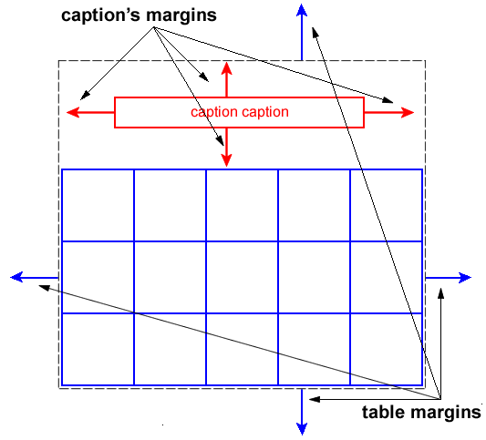
Diagram of a table with a caption above it.
17.4.1. Caption position and alignment
| Name: | caption-side |
|---|---|
| Value: | top | bottom | inherit |
| Initial: | top |
| Applies to: | table-caption elements |
| Inherited: | yes |
| Percentages: | N/A |
| Computed value: | as specified |
| Canonical order: | per grammar |
| Animation type: | discrete |
| Media: | visual |
This property specifies the position of the caption box with respect to the table grid box. Values have the following meanings:
- top
- Positions the caption box above the table grid box.
- bottom
- Positions the caption box below the table grid box.
Note: CSS2 (1998) described a different width and horizontal alignment behavior. That behavior will be introduced in CSS3 using the values top-outside and bottom-outside on this property.
To align caption content horizontally within the caption box, use the text-align property.
In this example, the caption-side property places captions below tables. The caption will be as wide as the parent of the table, and caption text will be left-justified.
caption { caption-side: bottom;
width: auto;
text-align: left }
17.5. Visual layout of table contents
Internal table elements generate rectangular boxes with content and borders. Cells have padding as well. Internal table elements do not have margins.
The visual layout of these boxes is governed by a rectangular, irregular grid of rows and columns. Each box occupies a whole number of grid cells, determined according to the following rules. These rules do not apply to HTML 4 or earlier HTML versions; HTML imposes its own limitations on row and column spans.
- Each row box occupies one row of grid cells. Together, the row boxes fill the table from top to bottom in the order they occur in the source document (i.e., the table occupies exactly as many grid rows as there are row elements).
- A row group occupies the same grid cells as the rows it contains.
- A column box occupies one or more columns of grid cells. Column boxes are placed next to each other in the order they occur. The first column box may be either on the left or on the right, depending on the value of the direction property of the table.
- A column group box occupies the same grid cells as the columns it contains.
- Cells may span several rows or columns. (Although CSS 2 does not define how the number of spanned rows or columns is determined, a user agent may have special knowledge about the source document; a future update of CSS may provide a way to express this knowledge in CSS syntax.) Each cell is thus a rectangular box, one or more grid cells wide and high. The top row of this rectangle is in the row specified by the cell’s parent. The rectangle must be as far to the left as possible, but the part of the cell in the first column it occupies must not overlap with any other cell box (i.e., a row-spanning cell starting in a prior row), and the cell must be to the right of all cells in the same row that are earlier in the source document. If this position would cause a column-spanning cell to overlap a row-spanning cell from a prior row, CSS does not define the results: implementations may either overlap the cells (as is done in many HTML implementations) or may shift the later cell to the right to avoid such overlap. (This constraint holds if the direction property of the table is ltr; if the direction is rtl, interchange "left" and "right" in the previous two sentences.)
- A cell box cannot extend beyond the last row box of a table or row group; the user agents must shorten it until it fits.
The edges of the rows, columns, row groups and column groups in the collapsing borders model coincide with the hypothetical grid lines on which the borders of the cells are centered. (And thus, in this model, the rows together exactly cover the table, leaving no gaps; ditto for the columns.) In the separated borders model, the edges coincide with the border edges of cells. (And thus, in this model, there may be gaps between the rows, columns, row groups or column groups, corresponding to the border-spacing property.)
Note. Positioning and floating of table cells can cause them not to be table cells anymore, according to the rules in section 9.7. When floating is used, the rules on anonymous table objects may cause an anonymous cell object to be created as well.
Here is an example illustrating rule 5. The following illegal (X)HTML snippet defines conflicting cells:
< table > < tr >< td > 1</ td >< td rowspan = "2" > 2</ td >< td > 3</ td >< td > 4</ td ></ tr > < tr >< td colspan = "2" > 5</ td ></ tr > </ table >
User agents are free to visually overlap the cells, as in the figure on the left, or to shift the cell to avoid the visual overlap, as in the figure on the right.

Two possible renderings of an erroneous HTML table.
17.5.1. Table layers and transparency
For the purposes of finding the background of each table cell, the different table elements may be thought of as being on six superimposed layers. The background set on an element in one of the layers will only be visible if the layers above it have a transparent background.

Schema of table layers.
- The lowest layer is a single plane, representing the table grid box itself. Like all boxes, it may be transparent.
- The next layer contains the column groups. Each column group extends from the top of the cells in the top row to the bottom of the cells on the bottom row and from the left edge of its leftmost column to the right edge of its rightmost column. The background covers exactly the full area of all cells that originate in the column group, even if they span outside the column group, but this difference in area does not affect background image positioning.
- On top of the column groups are the areas representing the column boxes. Each column is as tall as the column groups and as wide as a normal (single-column-spanning) cell in the column. The background covers exactly the full area of all cells that originate in the column, even if they span outside the column, but this difference in area does not affect background image positioning.
- Next is the layer containing the row groups. Each row group extends from the top left corner of its topmost cell in the first column to the bottom right corner of its bottommost cell in the last column.
- The next to last layer contains the rows. Each row is as wide as the row groups and as tall as a normal (single-row-spanning) cell in the row. As with columns, the background covers exactly the full area of all cells that originate in the row, even if they span outside the row, but this difference in area does not affect background image positioning.
- The topmost layer contains the cells themselves. As the figure shows, although all rows contain the same number of cells, not every cell may have specified content. In the separated borders model (border-collapse is separate), if the value of their empty-cells property is hide these "empty" cells are transparent through the cell, row, row group, column and column group backgrounds, letting the table background show through.
A "missing cell" is a cell in the row/column grid that is not occupied by an element or pseudo-element. Missing cells are rendered as if an anonymous table-cell box occupied their position in the grid.
In the following example, the first row contains four non-empty cells, but the second row contains only one non-empty cell, and thus the table background shines through, except where a cell from the first row spans into this row. The following HTML code and style rules
<!DOCTYPE HTML PUBLIC "-//W3C//DTD HTML 4.01//EN"> < HTML > < HEAD > < TITLE > Table example</ TITLE > < STYLE type = "text/css" > TABLE { background : #ff0 ; border : solid black ; empty-cells : hide } TR . top { background : red } TD { border : solid black } </ STYLE > </ HEAD > < BODY > < TABLE > < TR CLASS = "top" > < TD > 1< TD rowspan = "2" > 2< TD > 3< TD > 4< TR > < TD > 5< TD > </ TABLE > </ BODY > </ HTML >
might be formatted as follows:
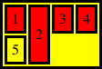
Table with empty cells in the bottom row.
Note that if the table has 'border-collapse: separate', the background of the area given by the border-spacing property is always the background of the table element. See the separated borders model.
17.5.2. Table width algorithms: the table-layout property
CSS does not define an "optimal" layout for tables since, in many cases, what is optimal is a matter of taste. CSS does define constraints that user agents must respect when laying out a table. User agents may use any algorithm they wish to do so, and are free to prefer rendering speed over precision, except when the "fixed layout algorithm" is selected.
Note that this section overrides the rules that apply to calculating widths as described in section 10.3. In particular, if the margins of a table are set to 0 and the width to auto, the table will not automatically size to fill its containing block. However, once the calculated value of width for the table is found (using the algorithms given below or, when appropriate, some other UA dependent algorithm) then the other parts of section 10.3 do apply. Therefore a table can be centered using left and right auto margins, for instance.
Future updates of CSS may introduce ways of making tables automatically fit their containing blocks.
| Name: | table-layout |
|---|---|
| Value: | auto | fixed | inherit |
| Initial: | auto |
| Applies to: | table and inline-table elements |
| Inherited: | no |
| Percentages: | N/A |
| Computed value: | as specified |
| Canonical order: | per grammar |
| Animation type: | discrete |
| Media: | visual |
The table-layout property controls the algorithm used to lay out the table cells, rows, and columns. Values have the following meaning:
- fixed
- Use the fixed table layout algorithm
- auto
- Use any automatic table layout algorithm
The two algorithms are described below.
17.5.2.1. Fixed table layout
With this (fast) algorithm, the horizontal layout of the table does not depend on the contents of the cells; it only depends on the table’s width, the width of the columns, and borders or cell spacing.
The table’s width may be specified explicitly with the width property. A value of auto (for both 'display: table' and 'display: inline-table') means use the automatic table layout algorithm. However, if the table is a block-level table ('display: table') in normal flow, a UA may (but does not have to) use the algorithm of 10.3.3 to compute a width and apply fixed table layout even if the specified width is auto.
If a UA supports fixed table layout when width is auto, the following will create a table that is 4em narrower than its containing block:
table { table-layout: fixed;
margin-left: 2em;
margin-right: 2em }
In the fixed table layout algorithm, the width of each column is determined as follows:
- A column element with a value other than auto for the width property sets the width for that column.
- Otherwise, a cell in the first row with a value other than auto for the width property determines the width for that column. If the cell spans more than one column, the width is divided over the columns.
- Any remaining columns equally divide the remaining horizontal table space (minus borders or cell spacing).
The width of the table is then the greater of the value of the width property for the table element and the sum of the column widths (plus cell spacing or borders). If the table is wider than the columns, the extra space should be distributed over the columns.
If a subsequent row has more columns than the greater of the number determined by the table-column elements and the number determined by the first row, then additional columns may not be rendered. CSS 2 does not define the width of the columns and the table if they are rendered. When using 'table-layout: fixed', authors should not omit columns from the first row.
In this manner, the user agent can begin to lay out the table once the entire first row has been received. Cells in subsequent rows do not affect column widths. Any cell that has content that overflows uses the overflow property to determine whether to clip the overflow content.
17.5.2.2. Automatic table layout
In this algorithm (which generally requires no more than two passes), the table’s width is given by the width of its columns (and intervening borders). This algorithm reflects the behavior of several popular HTML user agents at the writing of this specification. UAs are not required to implement this algorithm to determine the table layout in the case that table-layout is auto; they can use any other algorithm even if it results in different behavior.
Input to the automatic table layout must only include the width of the containing block and the content of, and any CSS properties set on, the table and any of its descendants.
Note. This may be defined in more detail in CSS3.
The remainder of this section is non-normative.
This algorithm may be inefficient since it requires the user agent to have access to all the content in the table before determining the final layout and may demand more than one pass.
Column widths are determined as follows:
-
Calculate the minimum content width (MCW) of each cell: the formatted content may span any number of lines but may not overflow the cell box. If the specified width (W) of the cell is greater than MCW, the minimum cell width is set to W. A value of auto means that MCW is the minimum cell width.
Also, calculate the "maximum" cell width of each cell: formatting the content without breaking lines other than where explicit line breaks occur.
-
For each column, determine a maximum and minimum column width from the cells that span only that column. The minimum is that required by the cell with the largest minimum cell width (or the column width, whichever is larger). The maximum is that required by the cell with the largest maximum cell width (or the column width, whichever is larger).
-
For each cell that spans more than one column, increase the minimum widths of the columns it spans so that together, they are at least as wide as the cell. Do the same for the maximum widths. If possible, widen all spanned columns by approximately the same amount.
-
For each column group element with a width other than auto, increase the minimum widths of the columns it spans, so that together they are at least as wide as the column group’s width.
This gives a maximum and minimum width for each column.
The caption width minimum (CAPMIN) is determined by calculating for each caption the minimum caption outer width as the MCW of a hypothetical table cell that contains the caption formatted as "display: block". The greatest of the minimum caption outer widths is CAPMIN.
Column and caption widths influence the final table width as follows:
- If the table or inline-table element’s width property has a computed value (W) other than auto, the used width is the greater of W, CAPMIN, and the minimum width required by all the columns plus cell spacing or borders (MIN). If the used width is greater than MIN, the extra width should be distributed over the columns.
- If the table or inline-table element has 'width: auto', the used width is the greater of the table’s containing block width, CAPMIN, and MIN. However, if either CAPMIN or the maximum width required by the columns plus cell spacing or borders (MAX) is less than that of the containing block, use max(MAX, CAPMIN).
A percentage value for a column width is relative to the table width. If the table has 'width: auto', a percentage represents a constraint on the column’s width, which a UA should try to satisfy. (Obviously, this is not always possible: if the column’s width is '110%', the constraint cannot be satisfied.)
Note. In this algorithm, rows (and row groups) and columns (and column groups) both constrain and are constrained by the dimensions of the cells they contain. Setting the width of a column may indirectly influence the height of a row, and vice versa.
17.5.3. Table height algorithms
The height of a table is given by the height property for the table or inline-table element. A value of auto means that the height is the sum of the row heights plus any cell spacing or borders. Any other value is treated as a minimum height. CSS 2 does not define how extra space is distributed when the height property causes the table to be taller than it otherwise would be.
Note. Future updates of CSS may specify this further.
The height of a table-row element’s box is calculated once the user agent has all the cells in the row available: it is the maximum of the row’s computed height, the computed height of each cell in the row, and the minimum height (MIN) required by the cells. A height value of auto for a table-row means the row height used for layout is MIN. MIN depends on cell box heights and cell box alignment (much like the calculation of a line box height). CSS 2 does not define how the height of table cells and table rows is calculated when their height is specified using percentage values. CSS 2 does not define the meaning of height on row groups.
In CSS 2, the height of a cell box is the minimum height required by the content. The table cell’s height property can influence the height of the row (see above), but it does not increase the height of the cell box.
CSS 2 does not specify how cells that span more than one row affect row height calculations except that the sum of the row heights involved must be great enough to encompass the cell spanning the rows.
The vertical-align property of each table cell determines its alignment within the row. Each cell’s content has a baseline, a top, a middle, and a bottom, as does the row itself. In the context of tables, values for vertical-align have the following meanings:
- baseline
- The baseline of the cell is put at the same height as the baseline of the first of the rows it spans (see below for the definition of baselines of cells and rows).
- top
- The top of the cell box is aligned with the top of the first row it spans.
- bottom
- The bottom of the cell box is aligned with the bottom of the last row it spans.
- middle
- The center of the cell is aligned with the center of the rows it spans.
- sub, super, text-top, text-bottom, <length>, <percentage>
- These values do not apply to cells; the cell is aligned at the baseline instead.
The baseline of a cell is the baseline of the first in-flow line box in the cell, or the first in-flow table-row in the cell, whichever comes first. If there is no such line box or table-row, the baseline is the bottom of content edge of the cell box. For the purposes of finding a baseline, in-flow boxes with a scrolling mechanisms (see the overflow property) must be considered as if scrolled to their origin position. Note that the baseline of a cell may end up below its bottom border, see the example below.
The maximum distance between the top of the cell box and the baseline over all cells that have 'vertical-align: baseline' is used to set the baseline of the row. Here is an example:

Diagram showing the effect of various values of vertical-align on table cells.
Cell boxes 1 and 2 are aligned at their baselines. Cell box 2 has the largest height above the baseline, so that determines the baseline of the row.
If a row has no cell box aligned to its baseline, the baseline of that row is the bottom content edge of the lowest cell in the row.
To avoid ambiguous situations, the alignment of cells proceeds in the following order:
- First the cells that are aligned on their baseline are positioned. This will establish the baseline of the row. Next the cells with 'vertical-align: top' are positioned.
- The row now has a top, possibly a baseline, and a provisional height, which is the distance from the top to the lowest bottom of the cells positioned so far. (See conditions on the cell padding below.)
- If any of the remaining cells, those aligned at the bottom or the middle, have a height that is larger than the current height of the row, the height of the row will be increased to the maximum of those cells, by lowering the bottom.
- Finally the remaining cells are positioned.
Cell boxes that are smaller than the height of the row receive extra top or bottom padding.
The cell in this example has a baseline below its bottom border:
div { height: 0; overflow: hidden; }
<table>
<tr>
<td>
<div> Test </div>
</td>
</tr>
</table>
17.5.4. Horizontal alignment in a column
The horizontal alignment of inline-level content within a cell box can be specified by the value of the text-align property on the cell.
17.5.5. Dynamic row and column effects
The visibility property takes the value collapse for row, row group, column, and column group elements. This value causes the entire row or column to be removed from the display, and the space normally taken up by the row or column to be made available for other content. Contents of spanned rows and columns that intersect the collapsed column or row are clipped. The suppression of the row or column, however, does not otherwise affect the layout of the table. This allows dynamic effects to remove table rows or columns without forcing a re-layout of the table in order to account for the potential change in column constraints.
17.6. Borders
There are two distinct models for setting borders on table cells in CSS. One is most suitable for so-called separated borders around individual cells, the other is suitable for borders that are continuous from one end of the table to the other. Many border styles can be achieved with either model, so it is often a matter of taste which one is used.
| Name: | border-collapse |
|---|---|
| Value: | collapse | separate | inherit |
| Initial: | separate |
| Applies to: | table and inline-table elements |
| Inherited: | yes |
| Percentages: | N/A |
| Computed value: | as specified |
| Canonical order: | per grammar |
| Animation type: | discrete |
| Media: | visual |
This property selects a table’s border model. The value separate selects the separated borders border model. The value collapse selects the collapsing borders model. The models are described below.
17.6.1. The separated borders model
| Name: | border-spacing |
|---|---|
| Value: | <length> <length>? | inherit |
| Initial: | 0 |
| Applies to: | table and inline-table elements* |
| Inherited: | yes |
| Percentages: | N/A |
| Computed value: | two absolute lengths |
| Canonical order: | per grammar |
| Animation type: | discrete |
| Media: | visual |
*) Note: user agents may also apply the border-spacing property to frameset elements. Which elements are frameset elements is not defined by this specification and is up to the document language. For example, HTML4 defines a <FRAMESET> element, and XHTML 1.0 defines a <frameset> element. The border-spacing property on a frameset element can be thus used as a valid substitute for the non-standard framespacing attribute.
The lengths specify the distance that separates adjoining cell borders. If one length is specified, it gives both the horizontal and vertical spacing. If two are specified, the first gives the horizontal spacing and the second the vertical spacing. Lengths may not be negative.
The distance between the table border and the borders of the cells on the edge of the table is the table’s padding for that side, plus the relevant border spacing distance. For example, on the right hand side, the distance is padding-right + horizontal border-spacing.
The width of the table is the distance from the left inner padding edge to the right inner padding edge (including the border spacing but excluding padding and border).
However, in HTML and XHTML1, the width of the <table> element is the distance from the left border edge to the right border edge.
Note: In CSS3 this peculiar requirement will be defined in terms of UA style sheet rules and the box-sizing property.
In this model, each cell has an individual border. The border-spacing property specifies the distance between the borders of adjoining cells. In this space, the row, column, row group, and column group backgrounds are invisible, allowing the table background to show through. Rows, columns, row groups, and column groups cannot have borders (i.e., user agents must ignore the border properties for those elements).
The table in the figure below could be the result of a style sheet like this:
table { border: outset 10pt;
border-collapse: separate;
border-spacing: 15pt }
td { border: inset 5pt }
td.special { border: inset 10pt } /* The top-left cell */

A table with border-spacing set to a length value. Note that each cell has its own border, and the table has a separate border as well.
17.6.1.1. Borders and Backgrounds around empty cells: the empty-cells property
| Name: | empty-cells |
|---|---|
| Value: | show | hide | inherit |
| Initial: | show |
| Applies to: | table-cell elements |
| Inherited: | yes |
| Percentages: | N/A |
| Computed value: | as specified |
| Canonical order: | per grammar |
| Animation type: | discrete |
| Media: | visual |
In the separated borders model, this property controls the rendering of borders and backgrounds around cells that have no visible content. Empty cells and cells with the visibility property set to hidden are considered to have no visible content. Cells are empty unless they contain one or more of the following:
- floating content (including empty elements),
- in-flow content (including empty elements) other than white space that has been collapsed away by the white-space property handling.
When this property has the value show, borders and backgrounds are drawn around/behind empty cells (like normal cells).
A value of hide means that no borders or backgrounds are drawn around/behind empty cells (see point 6 in 17.5.1). Furthermore, if all the cells in a row have a value of hide and have no visible content, then the row has zero height and there is vertical border-spacing on only one side of the row.
The following rule causes borders and backgrounds to be drawn around all cells:
table { empty-cells: show }
17.6.2. The collapsing border model
In the collapsing border model, it is possible to specify borders that surround all or part of a cell, row, row group, column, and column group. Borders for HTML’s "rules" attribute can be specified this way.
Borders are centered on the grid lines between the cells. User agents must find a consistent rule for rounding off in the case of an odd number of discrete units (screen pixels, printer dots).
The diagram below shows how the width of the table, the widths of the borders, the padding, and the cell width interact. Their relation is given by the following equation, which holds for every row of the table:
row-width = (0.5 * border-width0) \+ padding-left1 + width1 + padding-right1 + border-width1 + padding-left2 +...+ padding-rightn + (0.5 * border-widthn)
Here n is the number of cells in the row, padding-lefti and padding-righti refer to the left (resp., right) padding of cell i, and border-widthi refers to the border between cells i and i + 1.
UAs must compute an initial left and right border width for the table by examining the first and last cells in the first row of the table. The left border width of the table is half of the first cell’s collapsed left border, and the right border width of the table is half of the last cell’s collapsed right border. If subsequent rows have larger collapsed left and right borders, then any excess spills into the margin area of the table.
The top border width of the table is computed by examining all cells who collapse their top borders with the top border of the table. The top border width of the table is equal to half of the maximum collapsed top border. The bottom border width is computed by examining all cells whose bottom borders collapse with the bottom of the table. The bottom border width is equal to half of the maximum collapsed bottom border.
Any borders that spill into the margin are taken into account when determining if the table overflows some ancestor (see overflow).
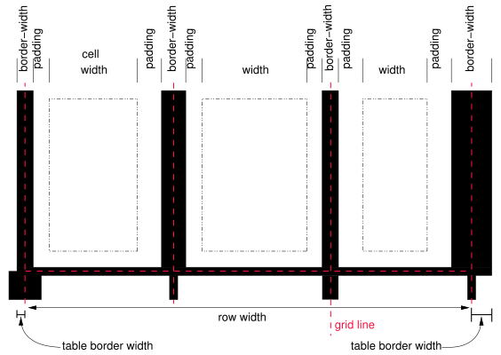
Schema showing the widths of cells and borders and the padding of cells.
Note that in this model, the width of the table includes half the table border. Also, in this model, a table does not have padding (but does have margins).
CSS 2 does not define where the edge of a background on a table element lies.
17.6.2.1. Border conflict resolution
In the collapsing border model, borders at every edge of every cell may be specified by border properties on a variety of elements that meet at that edge (cells, rows, row groups, columns, column groups, and the table itself), and these borders may vary in width, style, and color. The rule of thumb is that at each edge the most "eye catching" border style is chosen, except that any occurrence of the style hidden unconditionally turns the border off.
The following rules determine which border style "wins" in case of a conflict:
- Borders with the border-style of hidden take precedence over all other conflicting borders. Any border with this value suppresses all borders at this location.
- Borders with a style of none have the lowest priority. Only if the border properties of all the elements meeting at this edge are none will the border be omitted (but note that none is the default value for the border style.)
- If none of the styles are hidden and at least one of them is not none, then narrow borders are discarded in favor of wider ones. If several have the same border-width then styles are preferred in this order: double, solid, dashed, dotted, ridge, outset, groove, and the lowest: inset.
- If border styles differ only in color, then a style set on a cell wins over one on a row, which wins over a row group, column, column group and, lastly, table. When two elements of the same type conflict, then the one further to the left (if the table’s direction is ltr; right, if it is rtl) and further to the top wins.
The following example illustrates the application of these precedence rules. This style sheet:
table { border-collapse: collapse;
border: 5px solid yellow; }
*#col1 { border: 3px solid black; }
td { border: 1px solid red; padding: 1em; }
td.cell5 { border: 5px dashed blue; }
td.cell6 { border: 5px solid green; }
with this HTML source:
< TABLE > < COL id = "col1" >< COL id = "col2" >< COL id = "col3" > < TR id = "row1" > < TD > 1< TD > 2< TD > 3</ TR > < TR id = "row2" > < TD > 4< TD class = "cell5" > 5< TD class = "cell6" > 6</ TR > < TR id = "row3" > < TD > 7< TD > 8< TD > 9</ TR > < TR id = "row4" > < TD > 10< TD > 11< TD > 12</ TR > < TR id = "row5" > < TD > 13< TD > 14< TD > 15</ TR > </ TABLE >
would produce something like this:

An example of a table with collapsed borders.
Here is an example of hidden collapsing borders:
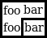
Table with two omitted internal borders.
HTML source:
< TABLE style = "border-collapse: collapse; border: solid;" > < TR >< TD style = "border-right: hidden; border-bottom: hidden" > foo</ TD > < TD style = "border: solid" > bar</ TD ></ TR > < TR >< TD style = "border: none" > foo</ TD > < TD style = "border: solid" > bar</ TD ></ TR > </ TABLE >
17.6.3. Border styles
Some of the values of the border-style have different meanings in tables than for other elements. In the list below they are marked with an asterisk.
- none
- No border.
- *hidden
- Same as none, but in the collapsing border model, also inhibits any other border (see the section on border conflicts).
- dotted
- The border is a series of dots.
- dashed
- The border is a series of short line segments.
- solid
- The border is a single line segment.
- double
- The border is two solid lines. The sum of the two lines and the space between them equals the value of border-width.
- groove
- The border looks as though it were carved into the canvas.
- ridge
- The opposite of groove: the border looks as though it were coming out of the canvas.
- *inset
- In the separated borders model, the border makes the entire box look as though it were embedded in the canvas. In the collapsing border model, drawn the same as ridge.
- *outset
- In the separated borders model, the border makes the entire box look as though it were coming out of the canvas. In the collapsing border model, drawn the same as groove.
18. User interface
18.1. Cursors: the cursor property
| Name: | cursor |
|---|---|
| Value: | [ [<uri> ,]* [ auto | crosshair | default | pointer | move | e-resize | ne-resize | nw-resize | n-resize | se-resize | sw-resize | s-resize | w-resize | text | wait | help | progress ] ] | inherit |
| Initial: | auto |
| Applies to: | * |
| Inherited: | yes |
| Percentages: | N/A |
| Computed value: | as specified, except with any relative URLs converted to absolute |
| Canonical order: | per grammar |
| Animation type: | discrete |
| Media: | visual, interactive |
This property specifies the type of cursor to be displayed for the pointing device. Values have the following meanings:
- auto
- The UA determines the cursor to display based on the current context.
- crosshair
- A simple crosshair (e.g., short line segments resembling a "+" sign).
- default
- The platform-dependent default cursor. Often rendered as an arrow.
- pointer
- The cursor is a pointer that indicates a link.
- move
- Indicates something is to be moved.
- e-resize, ne-resize, nw-resize, n-resize, se-resize, sw-resize, s-resize, w-resize
- Indicate that some edge is to be moved. For example, the se-resize cursor is used when the movement starts from the south-east corner of the box.
- text
- Indicates text that may be selected. Often rendered as an I-beam.
- wait
- Indicates that the program is busy and the user should wait. Often rendered as a watch or hourglass.
- progress
- A progress indicator. The program is performing some processing, but is different from wait in that the user may still interact with the program. Often rendered as a spinning beach ball, or an arrow with a watch or hourglass.
- help
- Help is available for the object under the cursor. Often rendered as a question mark or a balloon.
- <uri>
- The user agent retrieves the cursor from the resource designated by the URI. If the user agent cannot handle the first cursor of a list of cursors, it should attempt to handle the second, etc. If the user agent cannot handle any user-defined cursor, it must use the generic cursor at the end of the list. Intrinsic sizes for cursors are calculated as for background images, except that a UA-defined rectangle is used in place of the rectangle that establishes the coordinate system for the background-image property. This UA-defined rectangle should be based on the size of a typical cursor on the UA’s operating system. If the resulting cursor size does not fit within this rectangle, the UA may proportionally scale the resulting cursor down until it fits within the rectangle.
:link,:visited { cursor : url ( example.svg#linkcursor ), url ( hyper.cur ), pointer}
This example sets the cursor on all hyperlinks (whether visited or not) to an external SVG cursor. User agents that do not support SVG cursors would simply skip to the next value and attempt to use the "hyper.cur" cursor. If that cursor format was also not supported, the UA would skip to the next value and simply render the pointer cursor.
18.2. System Colors
Note. The System Colors are deprecated in the CSS3 Color Module [CSS3COLOR].
In addition to being able to assign pre-defined color values to text, backgrounds, etc., CSS2 (1998) introduced a set of named color values that allows authors to specify colors in a manner that integrates them into the operating system’s graphic environment.
For systems that do not have a corresponding value, the specified value should be mapped to the nearest system value, or to a default color.
The following lists additional values for color-related CSS properties and their general meaning. Any color property (e.g., color or background-color) can take one of the following names. Although these are case-insensitive, it is recommended that the mixed capitalization shown below be used, to make the names more legible.
- ActiveBorder
- Active window border.
- ActiveCaption
- Active window caption.
- AppWorkspace
- Background color of multiple document interface.
- Background
- Desktop background.
- ButtonFace
- Face color for three-dimensional display elements.
- ButtonHighlight
- Highlight color for three-dimensional display elements (for edges facing away from the light source).
- ButtonShadow
- Shadow color for three-dimensional display elements.
- ButtonText
- Text on push buttons.
- CaptionText
- Text in caption, size box, and scrollbar arrow box.
- GrayText
- Grayed (disabled) text. This color is set to #000 if the current display driver does not support a solid gray color.
- Highlight
- Item(s) selected in a control.
- HighlightText
- Text of item(s) selected in a control.
- InactiveBorder
- Inactive window border.
- InactiveCaption
- Inactive window caption.
- InactiveCaptionText
- Color of text in an inactive caption.
- InfoBackground
- Background color for tooltip controls.
- InfoText
- Text color for tooltip controls.
- Menu
- Menu background.
- MenuText
- Text in menus.
- Scrollbar
- Scroll bar gray area.
- ThreeDDarkShadow
- Dark shadow for three-dimensional display elements.
- ThreeDFace
- Face color for three-dimensional display elements.
- ThreeDHighlight
- Highlight color for three-dimensional display elements.
- ThreeDLightShadow
- Light color for three-dimensional display elements (for edges facing the light source).
- ThreeDShadow
- Dark shadow for three-dimensional display elements.
- Window
- Window background.
- WindowFrame
- Window frame.
- WindowText
- Text in windows.
For example, to set the foreground and background colors of a paragraph to the same foreground and background colors of the user’s window, write the following:
p { color : WindowText; background-color : Window}
18.3. User preferences for fonts
As for colors, authors may specify fonts in a way that makes use of a user’s system resources. Please consult the font property for details.
18.4. Dynamic outlines: the outline property
At times, style sheet authors may want to create outlines around visual objects such as buttons, active form fields, image maps, etc., to make them stand out. CSS 2 outlines differ from borders in the following ways:
- Outlines do not take up space.
- Outlines may be non-rectangular.
The outline properties control the style of these dynamic outlines.
| Name: | outline |
|---|---|
| Value: | [ <'outline-color'> || <'outline-style'> || <'outline-width'> ] | inherit |
| Initial: | see individual properties |
| Applies to: | * |
| Inherited: | no |
| Percentages: | N/A |
| Computed value: | see individual properties |
| Canonical order: | per grammar |
| Animation type: | discrete |
| Media: | visual, interactive |
| Name: | outline-width |
|---|---|
| Value: | <border-width> | inherit |
| Initial: | medium |
| Applies to: | * |
| Inherited: | no |
| Percentages: | N/A |
| Computed value: | absolute length; 0 if the outline style is none |
| Canonical order: | per grammar |
| Animation type: | discrete |
| Media: | visual, interactive |
| Name: | outline-style |
|---|---|
| Value: | <border-style> | inherit |
| Initial: | none |
| Applies to: | * |
| Inherited: | no |
| Percentages: | N/A |
| Computed value: | as specified |
| Canonical order: | per grammar |
| Animation type: | discrete |
| Media: | visual, interactive |
| Name: | outline-color |
|---|---|
| Value: | <color> | invert | inherit |
| Initial: | invert |
| Applies to: | * |
| Inherited: | no |
| Percentages: | N/A |
| Computed value: | as specified |
| Canonical order: | per grammar |
| Animation type: | discrete |
| Media: | visual, interactive |
The outline created with the outline properties is drawn "over" a box, i.e., the outline is always on top, and does not influence the position or size of the box, or of any other boxes. Therefore, displaying or suppressing outlines does not cause reflow or overflow.
The outline may be drawn starting just outside the border edge.
Outlines may be non-rectangular. For example, if the element is broken across several lines, the outline is the minimum outline that encloses all the element’s boxes. In contrast to borders, the outline is not open at the line box’s end or start, but is always fully connected if possible.
The outline-width property accepts the same values as border-width.
The outline-style property accepts the same values as border-style, except that hidden is not a legal outline style.
The outline-color accepts all colors, as well as the keyword invert. Invert is expected to perform a color inversion on the pixels on the screen. This is a common trick to ensure the focus border is visible, regardless of color background.
Conformant UAs may ignore the invert value on platforms that do not support color inversion of the pixels on the screen. If the UA does not support the invert value then the initial value of the outline-color property is the value of the color property, similar to the initial value of the border-top-color property.
The outline property is a shorthand property, and sets all three of outline-style, outline-width, and outline-color.
Note. The outline is the same on all sides. In contrast to borders, there is no outline-top or outline-left property.
This specification does not define how multiple overlapping outlines are drawn, or how outlines are drawn for boxes that are partially obscured behind other elements.
Note. Since the outline does not affect formatting (i.e., no space is left for it in the box model), it may well overlap other elements on the page.
Here’s an example of drawing a thick outline around a BUTTON element:
button { outline : thick solid}
Scripts may be used to dynamically change the width of the outline, without provoking a reflow.
18.4.1. Outlines and the focus
Graphical user interfaces may use outlines around elements to tell the user which element on the page has the focus. These outlines are in addition to any borders, and switching outlines on and off should not cause the document to reflow. The focus is the subject of user interaction in a document (e.g., for entering text, selecting a button, etc.). User agents supporting the interactive media group must keep track of where the focus lies and must also represent the focus. This may be done by using dynamic outlines in conjunction with the :focus pseudo-class.
For example, to draw a thick black line around an element when it has the focus, and a thick red line when it is active, the following rules can be used:
:focus { outline : thick solid black} :active { outline : thick solid red}
18.5. Magnification
The CSS working group considers that the magnification of a document or portions of a document should not be specified through style sheets. User agents may support such magnification in different ways (e.g., larger images, louder sounds, etc.)
When magnifying a page, UAs should preserve the relationships between positioned elements. For example, a comic strip may be composed of images with overlaid text elements. When magnifying this page, a user agent should keep the text within the comic strip balloon.
19. Aural style sheets
This chapter is informative. UAs are not required to implement the properties of this chapter in order to conform to CSS 2.
19.1. The media types aural and speech
We expect that in a future level of CSS there will be new properties and values defined for speech output. Therefore CSS 2 reserves the speech media type (see chapter 7, "Media types"), but does not yet define which properties do or do not apply to it.
The properties in this appendix apply to a media type aural, that was introduced in CSS2 (1998) [CSS20]. The type aural is now deprecated.
This means that a style sheet such as
@media speech {
body { voice-family: Paul }
}
is valid, but that its meaning is not defined by CSS 2, while
@media aural {
body { voice-family: Paul }
}
is deprecated, but defined by this appendix.
19.2. Introduction to aural style sheets
The aural rendering of a document, already commonly used by the blind and print-impaired communities, combines speech synthesis and "auditory icons." Often such aural presentation occurs by converting the document to plain text and feeding this to a screen reader -- software or hardware that simply reads all the characters on the screen. This results in less effective presentation than would be the case if the document structure were retained. Style sheet properties for aural presentation may be used together with visual properties (mixed media) or as an aural alternative to visual presentation.
Besides the obvious accessibility advantages, there are other large markets for listening to information, including in-car use, industrial and medical documentation systems (intranets), home entertainment, and to help users learning to read or who have difficulty reading.
When using aural properties, the canvas consists of a three-dimensional physical space (sound surrounds) and a temporal space (one may specify sounds before, during, and after other sounds). The CSS properties also allow authors to vary the quality of synthesized speech (voice type, frequency, inflection, etc.).
h1, h2, h3, h4, h5, h6 {
voice-family: paul;
stress: 20;
richness: 90;
cue-before: url("ping.au")
}
p.heidi { azimuth: center-left }
p.peter { azimuth: right }
p.goat { volume: x-soft }
This will direct the speech synthesizer to speak headers in a voice (a kind of "audio font") called "paul", on a flat tone, but in a very rich voice. Before speaking the headers, a sound sample will be played from the given URL. Paragraphs with class "heidi" will appear to come from front left (if the sound system is capable of spatial audio), and paragraphs of class "peter" from the right. Paragraphs with class "goat" will be very soft.
19.2.1. Angles
Angle values are denoted by <angle> in the text. Their format is a <number> immediately followed by an angle unit identifier.
Angle unit identifiers are:
- deg: degrees
- grad: grads
- rad: radians
Angle values may be negative. They should be normalized to the range 0-360deg by the user agent. For example, -10deg and 350deg are equivalent.
For example, a right angle is 90deg or 100grad or '1.570796326794897rad'.
Like for <length>, the unit may be omitted, if the value is zero: 0deg may be written as 0.
19.2.2. Times
Time values are denoted by <time> in the text. Their format is a <number> immediately followed by a time unit identifier.
Time unit identifiers are:
- ms: milliseconds
- s: seconds
Time values may not be negative.
Like for <length>, the unit may be omitted, if the value is zero: 0s may be written as 0.
19.2.3. Frequencies
Frequency values are denoted by <frequency> in the text. Their format is a <number> immediately followed by a frequency unit identifier.
Frequency unit identifiers are:
- Hz: Hertz
- kHz: kilohertz
Frequency values may not be negative.
For example, 200Hz (or 200hz) is a bass sound, and 6kHz is a treble sound.
Like for <length>, the unit may be omitted, if the value is zero: 0Hz may be written as 0.
19.3. Volume properties: volume
| Name: | volume |
|---|---|
| Value: | <number> | <percentage> | silent | x-soft | soft | medium | loud | x-loud | inherit |
| Initial: | medium |
| Applies to: | * |
| Inherited: | yes |
| Percentages: | refer to inherited value |
| Computed value: | number |
| Canonical order: | per grammar |
| Animation type: | discrete |
| Media: | aural |
Volume refers to the median volume of the waveform. In other words, a highly inflected voice at a volume of 50 might peak well above that. The overall values are likely to be human adjustable for comfort, for example with a physical volume control (which would increase both the 0 and 100 values proportionately); what this property does is adjust the dynamic range.
Values have the following meanings:
- <number>
- Any number between 0 and 100. 0 represents the minimum audible volume level and 100 corresponds to the maximum comfortable level.
- <percentage>
- Percentage values are calculated relative to the inherited value, and are then clipped to the range 0 to 100.
- silent
- No sound at all. The value 0 does not mean the same as silent.
- x-soft
- Same as 0.
- soft
- Same as 25.
- medium
- Same as 50.
- loud
- Same as 75.
- x-loud
- Same as 100.
User agents should allow the values corresponding to 0 and 100 to be set by the listener. No one setting is universally applicable; suitable values depend on the equipment in use (speakers, headphones), the environment (in car, home theater, library) and personal preferences. Some examples:
- A browser for in-car use has a setting for when there is lots of background noise. 0 would map to a fairly high level and 100 to a quite high level. The speech is easily audible over the road noise but the overall dynamic range is compressed. Cars with better insulation might allow a wider dynamic range.
- Another speech browser is being used in an apartment, late at night, or in a shared study room. 0 is set to a very quiet level and 100 to a fairly quiet level, too. As with the first example, there is a low slope; the dynamic range is reduced. The actual volumes are low here, whereas they were high in the first example.
- In a quiet and isolated house, an expensive hi-fi home theater setup. 0 is set fairly low and 100 to quite high; there is wide dynamic range.
The same author style sheet could be used in all cases, simply by mapping the 0 and 100 points suitably at the client side.
19.4. Speaking properties: speak
| Name: | speak |
|---|---|
| Value: | normal | none | spell-out | inherit |
| Initial: | normal |
| Applies to: | * |
| Inherited: | yes |
| Percentages: | N/A |
| Computed value: | as specified |
| Canonical order: | per grammar |
| Animation type: | discrete |
| Media: | aural |
This property specifies whether text will be rendered aurally and if so, in what manner. The possible values are:
- none
- Suppresses aural rendering so that the element requires no time to render. Note, however, that descendants may override this value and will be spoken. (To be sure to suppress rendering of an element and its descendants, use the display property).
- normal
- Uses language-dependent pronunciation rules for rendering an element and its children.
- spell-out
- Spells the text one letter at a time (useful for acronyms and abbreviations).
Note the difference between an element whose volume property has a value of silent and an element whose speak property has the value none. The former takes up the same time as if it had been spoken, including any pause before and after the element, but no sound is generated. The latter requires no time and is not rendered (though its descendants may be).
19.5. Pause properties: pause-before, pause-after, and pause
| Name: | pause-before |
|---|---|
| Value: | <time> | <percentage> | inherit |
| Initial: | 0 |
| Applies to: | * |
| Inherited: | no |
| Percentages: | see prose |
| Computed value: | time |
| Canonical order: | per grammar |
| Animation type: | discrete |
| Media: | aural |
| Name: | pause-after |
|---|---|
| Value: | <time> | <percentage> | inherit |
| Initial: | 0 |
| Applies to: | * |
| Inherited: | no |
| Percentages: | see prose |
| Computed value: | time;; |
| Canonical order: | per grammar |
| Animation type: | discrete |
| Media: | aural |
These properties specify a pause to be observed before (or after) speaking an element’s content. Values have the following meanings:
Note. In CSS3 pauses are inserted around the cues and content rather than between them. See [CSS3SPEECH] for details.
- <time>
- Expresses the pause in absolute time units (seconds and milliseconds).
- <percentage>
- Refers to the inverse of the value of the speech-rate property. For example, if the speech-rate is 120 words per minute (i.e., a word takes half a second, or 500ms) then a pause-before of 100% means a pause of 500 ms and a pause-before of 20% means 100ms.
The pause is inserted between the element’s content and any cue-before or cue-after content.
Authors should use relative units to create more robust style sheets in the face of large changes in speech-rate.
| Name: | pause |
|---|---|
| Value: | [ [<time> | <percentage>]{1,2} ] | inherit |
| Initial: | see individual properties |
| Applies to: | * |
| Inherited: | no |
| Percentages: | see descriptions of pause-before and pause-after |
| Computed value: | see individual properties |
| Canonical order: | per grammar |
| Animation type: | discrete |
| Media: | aural |
The pause property is a shorthand for setting pause-before and pause-after. If two values are given, the first value is pause-before and the second is pause-after. If only one value is given, it applies to both properties.
h1 { pause: 20ms } /* pause-before: 20ms; pause-after: 20ms */
h2 { pause: 30ms 40ms } /* pause-before: 30ms; pause-after: 40ms */
h3 { pause-after: 10ms } /* pause-before unspecified; pause-after: 10ms */
19.6. Cue properties: cue-before, cue-after, and cue
| Name: | cue-before |
|---|---|
| Value: | <uri> | none | inherit |
| Initial: | none |
| Applies to: | * |
| Inherited: | no |
| Percentages: | N/A |
| Computed value: | absolute URI or none |
| Canonical order: | per grammar |
| Animation type: | discrete |
| Media: | aural |
| Name: | cue-after |
|---|---|
| Value: | <uri> | none | inherit |
| Initial: | none |
| Applies to: | * |
| Inherited: | no |
| Percentages: | N/A |
| Computed value: | absolute URI or none |
| Canonical order: | per grammar |
| Animation type: | discrete |
| Media: | aural |
Auditory icons are another way to distinguish semantic elements. Sounds may be played before and/or after the element to delimit it. Values have the following meanings:
- <uri>
- The URI must designate an auditory icon resource. If the URI resolves to something other than an audio file, such as an image, the resource should be ignored and the property treated as if it had the value none.
- none
- No auditory icon is specified.
a {cue-before: url("bell.aiff"); cue-after: url("dong.wav") }
h1 {cue-before: url("pop.au"); cue-after: url("pop.au") }
| Name: | cue |
|---|---|
| Value: | [ <'cue-before'> || <'cue-after'> ] | inherit |
| Initial: | see individual properties |
| Applies to: | * |
| Inherited: | no |
| Percentages: | N/A |
| Computed value: | see individual properties |
| Canonical order: | per grammar |
| Animation type: | discrete |
| Media: | aural |
The cue property is a shorthand for setting cue-before and cue-after. If two values are given, the first value is cue-before and the second is cue-after. If only one value is given, it applies to both properties.
The following two rules are equivalent:
h1 {cue-before: url("pop.au"); cue-after: url("pop.au") }
h1 {cue: url("pop.au") }
If a user agent cannot render an auditory icon (e.g., the user’s environment does not permit it), we recommend that it produce an alternative cue.
Please see the sections on the :before and :after pseudo-elements for information on other content generation techniques. Cue-before sounds and pause-before gaps are inserted before content from the ':before' pseudo-element. Similarly, pause-after gaps and cue-after sounds are inserted after content from the ':after' pseudo-element.
19.7. Mixing properties: play-during
| Name: | play-during |
|---|---|
| Value: | <uri> [ mix || repeat ]? | auto | none | inherit |
| Initial: | auto |
| Applies to: | * |
| Inherited: | no |
| Percentages: | N/A |
| Computed value: | absolute URI, rest as specified |
| Canonical order: | per grammar |
| Animation type: | discrete |
| Media: | aural |
Similar to the cue-before and cue-after properties, this property specifies a sound to be played as a background while an element’s content is spoken. Values have the following meanings:
- <uri>
- The sound designated by this <uri> is played as a background while the element’s content is spoken.
- mix
- When present, this keyword means that the sound inherited from the parent element’s play-during property continues to play and the sound designated by the <uri> is mixed with it. If mix is not specified, the element’s background sound replaces the parent’s.
- repeat
- When present, this keyword means that the sound will repeat if it is too short to fill the entire duration of the element. Otherwise, the sound plays once and then stops. This is similar to the background-repeat property. If the sound is too long for the element, it is clipped once the element has been spoken.
- auto
- The sound of the parent element continues to play (it is not restarted, which would have been the case if this property had been inherited).
- none
- This keyword means that there is silence. The sound of the parent element (if any) is silent during the current element and continues after the current element.
blockquote.sad { play-during: url("violins.aiff") }
blockquote Q { play-during: url("harp.wav") mix }
span.quiet { play-during: none }
19.8. Spatial properties: azimuth and elevation
Spatial audio is an important stylistic property for aural presentation. It provides a natural way to tell several voices apart, as in real life (people rarely all stand in the same spot in a room). Stereo speakers produce a lateral sound stage. Binaural headphones or the increasingly popular 5-speaker home theater setups can generate full surround sound, and multi-speaker setups can create a true three-dimensional sound stage. VRML 2.0 also includes spatial audio, which implies that in time consumer-priced spatial audio hardware will become more widely available.
| Name: | azimuth |
|---|---|
| Value: | <angle> | [[ left-side | far-left | left | center-left | center | center-right | right | far-right | right-side ] || behind ] | leftwards | rightwards | inherit |
| Initial: | center |
| Applies to: | * |
| Inherited: | yes |
| Percentages: | N/A |
| Computed value: | normalized angle |
| Canonical order: | per grammar |
| Animation type: | discrete |
| Media: | aural |
Values have the following meanings:
- <angle>
- Position is described in terms of an angle within the range -360deg to 360deg. The value 0deg means directly ahead in the center of the sound stage. 90deg is to the right, 180deg behind, and 270deg (or, equivalently and more conveniently, -90deg) to the left.
- left-side
- Same as 270deg. With behind, 270deg.
- far-left
- Same as 300deg. With behind, 240deg.
- left
- Same as 320deg. With behind, 220deg.
- center-left
- Same as 340deg. With behind, 200deg.
- center
- Same as 0deg. With behind, 180deg.
- center-right
- Same as 20deg. With behind, 160deg.
- right
- Same as 40deg. With behind, 140deg.
- far-right
- Same as 60deg. With behind, 120deg.
- right-side
- Same as 90deg. With behind, 90deg.
- leftwards
- Moves the sound to the left, relative to the current angle. More precisely, subtracts 20 degrees. Arithmetic is carried out modulo 360 degrees. Note that leftwards is more accurately described as "turned counter-clockwise," since it always subtracts 20 degrees, even if the inherited azimuth is already behind the listener (in which case the sound actually appears to move to the right).
- rightwards
- Moves the sound to the right, relative to the current angle. More precisely, adds 20 degrees. See leftwards for arithmetic.
This property is most likely to be implemented by mixing the same signal into different channels at differing volumes. It might also use phase shifting, digital delay, and other such techniques to provide the illusion of a sound stage. The precise means used to achieve this effect and the number of speakers used to do so are user agent-dependent; this property merely identifies the desired end result.
h1 { azimuth: 30deg }
td.a { azimuth: far-right } /* 60deg */
#12 { azimuth: behind far-right } /* 120deg */
p.comment { azimuth: behind } /* 180deg */
If spatial-azimuth is specified and the output device cannot produce sounds behind the listening position, user agents should convert values in the rearwards hemisphere to forwards hemisphere values. One method is as follows:
- if 90deg < x <= 180deg then x := 180deg - x
- if 180deg < x <= 270deg then x := 540deg - x
| Name: | elevation |
|---|---|
| Value: | <angle> | below | level | above | higher | lower | inherit |
| Initial: | level |
| Applies to: | * |
| Inherited: | yes |
| Percentages: | N/A |
| Computed value: | normalized angle |
| Canonical order: | per grammar |
| Animation type: | discrete |
| Media: | aural |
Values of this property have the following meanings:
- <angle>
- Specifies the elevation as an angle, between -90deg and 90deg. 0deg means on the forward horizon, which loosely means level with the listener. 90deg means directly overhead and -90deg means directly below.
- below
- Same as -90deg.
- level
- Same as 0deg.
- above
- Same as 90deg.
- higher
- Adds 10 degrees to the current elevation.
- lower
- Subtracts 10 degrees from the current elevation.
The precise means used to achieve this effect and the number of speakers used to do so are undefined. This property merely identifies the desired end result.
h1 { elevation: above }
tr.a { elevation: 60deg }
tr.b { elevation: 30deg }
tr.c { elevation: level }
19.9. Voice characteristic properties: speech-rate, voice-family, pitch, pitch-range, stress, and richness
| Name: | speech-rate |
|---|---|
| Value: | <number> | x-slow | slow | medium | fast | x-fast | faster | slower | inherit |
| Initial: | medium |
| Applies to: | * |
| Inherited: | yes |
| Percentages: | N/A |
| Computed value: | number |
| Canonical order: | per grammar |
| Animation type: | discrete |
| Media: | aural |
This property specifies the speaking rate. Note that both absolute and relative keyword values are allowed (compare with font-size). Values have the following meanings:
- <number>
- Specifies the speaking rate in words per minute, a quantity that varies somewhat by language but is nevertheless widely supported by speech synthesizers.
- x-slow
- Same as 80 words per minute.
- slow
- Same as 120 words per minute
- medium
- Same as 180 - 200 words per minute.
- fast
- Same as 300 words per minute.
- x-fast
- Same as 500 words per minute.
- faster
- Adds 40 words per minute to the current speech rate.
- slower
- Subtracts 40 words per minutes from the current speech rate.
| Name: | voice-family |
|---|---|
| Value: | [[<specific-voice> | <generic-voice> ],]* [<specific-voice> | <generic-voice> ] | inherit |
| Initial: | depends on user agent |
| Applies to: | * |
| Inherited: | yes |
| Percentages: | N/A |
| Computed value: | as specified |
| Canonical order: | per grammar |
| Animation type: | discrete |
| Media: | aural |
The value is a comma-separated, prioritized list of voice family names (compare with font-family). Values have the following meanings:
- <generic-voice>
- Values are voice families. Possible values are male, female, and child.
- <specific-voice>
- Values are specific instances (e.g., comedian, trinoids, carlos, lani).
h1 { voice-family: announcer, male }
p.part.romeo { voice-family: romeo, male }
p.part.juliet { voice-family: juliet, female }
Names of specific voices may be quoted, and indeed must be quoted if any of the words that make up the name does not conform to the syntax rules for identifiers. It is also recommended to quote specific voices with a name consisting of more than one word. If quoting is omitted, any white space characters before and after the voice family name are ignored and any sequence of white space characters inside the voice family name is converted to a single space.
| Name: | pitch |
|---|---|
| Value: | <frequency> | x-low | low | medium | high | x-high | inherit |
| Initial: | medium |
| Applies to: | * |
| Inherited: | yes |
| Percentages: | N/A |
| Computed value: | frequency |
| Canonical order: | per grammar |
| Animation type: | discrete |
| Media: | aural |
Specifies the average pitch (a frequency) of the speaking voice. The average pitch of a voice depends on the voice family. For example, the average pitch for a standard male voice is around 120Hz, but for a female voice, it’s around 210Hz.
Values have the following meanings:
- <frequency>
- Specifies the average pitch of the speaking voice in hertz (Hz).
- x-low, low, medium, high, x-high
- These values do not map to absolute frequencies since these values depend on the voice family. User agents should map these values to appropriate frequencies based on the voice family and user environment. However, user agents must map these values in order (i.e., x-low is a lower frequency than low, etc.).
| Name: | pitch-range |
|---|---|
| Value: | <number> | inherit |
| Initial: | 50 |
| Applies to: | * |
| Inherited: | yes |
| Percentages: | N/A |
| Computed value: | as specified |
| Canonical order: | per grammar |
| Animation type: | discrete |
| Media: | aural |
Specifies variation in average pitch. The perceived pitch of a human voice is determined by the fundamental frequency and typically has a value of 120Hz for a male voice and 210Hz for a female voice. Human languages are spoken with varying inflection and pitch; these variations convey additional meaning and emphasis. Thus, a highly animated voice, i.e., one that is heavily inflected, displays a high pitch range. This property specifies the range over which these variations occur, i.e., how much the fundamental frequency may deviate from the average pitch.
Values have the following meanings:
- <number>
- A value between 0 and 100. A pitch range of 0 produces a flat, monotonic voice. A pitch range of 50 produces normal inflection. Pitch ranges greater than 50 produce animated voices.
| Name: | stress |
|---|---|
| Value: | <number> | inherit |
| Initial: | 50 |
| Applies to: | * |
| Inherited: | yes |
| Percentages: | N/A |
| Computed value: | as specified |
| Canonical order: | per grammar |
| Animation type: | discrete |
| Media: | aural |
Specifies the height of "local peaks" in the intonation contour of a voice. For example, English is a stressed language, and different parts of a sentence are assigned primary, secondary, or tertiary stress. The value of stress controls the amount of inflection that results from these stress markers. This property is a companion to the pitch-range property and is provided to allow developers to exploit higher-end auditory displays.
Values have the following meanings:
- <number>
- A value, between 0 and 100. The meaning of values depends on the language being spoken. For example, a level of 50 for a standard, English-speaking male voice (average pitch = 122Hz), speaking with normal intonation and emphasis would have a different meaning than 50 for an Italian voice.
| Name: | richness |
|---|---|
| Value: | <number> | inherit |
| Initial: | 50 |
| Applies to: | * |
| Inherited: | yes |
| Percentages: | N/A |
| Computed value: | as specified |
| Canonical order: | per grammar |
| Animation type: | discrete |
| Media: | aural |
Specifies the richness, or brightness, of the speaking voice. A rich voice will "carry" in a large room, a smooth voice will not. (The term "smooth" refers to how the wave form looks when drawn.)
Values have the following meanings:
- <number>
- A value between 0 and 100. The higher the value, the more the voice will carry. A lower value will produce a soft, mellifluous voice.
19.10. Speech properties: speak-punctuation and speak-numeral
An additional speech property, speak-header, is described below.
| Name: | speak-punctuation |
|---|---|
| Value: | code | none | inherit |
| Initial: | none |
| Applies to: | * |
| Inherited: | yes |
| Percentages: | N/A |
| Computed value: | as specified |
| Canonical order: | per grammar |
| Animation type: | discrete |
| Media: | aural |
This property specifies how punctuation is spoken. Values have the following meanings:
- code
- Punctuation such as semicolons, braces, and so on are to be spoken literally.
- none
- Punctuation is not to be spoken, but instead rendered naturally as various pauses.
| Name: | speak-numeral |
|---|---|
| Value: | digits | continuous | inherit |
| Initial: | continuous |
| Applies to: | * |
| Inherited: | yes |
| Percentages: | N/A |
| Computed value: | as specified |
| Canonical order: | per grammar |
| Animation type: | discrete |
| Media: | aural |
This property controls how numerals are spoken. Values have the following meanings:
- digits
- Speak the numeral as individual digits. Thus, "237" is spoken "Two Three Seven".
- continuous
- Speak the numeral as a full number. Thus, "237" is spoken "Two hundred thirty seven". Word representations are language-dependent.
19.11. Audio rendering of tables
When a table is spoken by a speech generator, the relation between the data cells and the header cells must be expressed in a different way than by horizontal and vertical alignment. Some speech browsers may allow a user to move around in the 2-dimensional space, thus giving them the opportunity to map out the spatially represented relations. When that is not possible, the style sheet must specify at which points the headers are spoken.
19.11.1. Speaking headers: the speak-header property
| Name: | speak-header |
|---|---|
| Value: | once | always | inherit |
| Initial: | once |
| Applies to: | elements that have table header information |
| Inherited: | yes |
| Percentages: | N/A |
| Computed value: | as specified |
| Canonical order: | per grammar |
| Animation type: | discrete |
| Media: | aural |
This property specifies whether table headers are spoken before every cell, or only before a cell when that cell is associated with a different header than the previous cell. Values have the following meanings:
- once
- The header is spoken one time, before a series of cells.
- always
- The header is spoken before every pertinent cell.
Each document language may have different mechanisms that allow authors to specify headers. For example, in HTML 4 ([HTML401]), it is possible to specify header information with three different attributes ("headers", "scope", and "axis"), and the specification gives an algorithm for determining header information when these attributes have not been specified.

Image of a table with header cells ("San Jose" and "Seattle") that are not in the same column or row as the data they apply to.
This HTML example presents the money spent on meals, hotels and transport in two locations (San Jose and Seattle) for successive days. Conceptually, you can think of the table in terms of an n-dimensional space. The headers of this space are: location, day, category and subtotal. Some cells define marks along an axis while others give money spent at points within this space. The markup for this table is:
< TABLE > < CAPTION > Travel Expense Report</ CAPTION > < TR > < TH ></ TH > < TH > Meals</ TH > < TH > Hotels</ TH > < TH > Transport</ TH > < TH > subtotal</ TH > </ TR > < TR > < TH id = "san-jose" axis = "san-jose" > San Jose</ TH > </ TR > < TR > < TH headers = "san-jose" > 25-Aug-97</ TH > < TD > 37.74</ TD > < TD > 112.00</ TD > < TD > 45.00</ TD > < TD ></ TD > </ TR > < TR > < TH headers = "san-jose" > 26-Aug-97</ TH > < TD > 27.28</ TD > < TD > 112.00</ TD > < TD > 45.00</ TD > < TD ></ TD > </ TR > < TR > < TH headers = "san-jose" > subtotal</ TH > < TD > 65.02</ TD > < TD > 224.00</ TD > < TD > 90.00</ TD > < TD > 379.02</ TD > </ TR > < TR > < TH id = "seattle" axis = "seattle" > Seattle</ TH > </ TR > < TR > < TH headers = "seattle" > 27-Aug-97</ TH > < TD > 96.25</ TD > < TD > 109.00</ TD > < TD > 36.00</ TD > < TD ></ TD > </ TR > < TR > < TH headers = "seattle" > 28-Aug-97</ TH > < TD > 35.00</ TD > < TD > 109.00</ TD > < TD > 36.00</ TD > < TD ></ TD > </ TR > < TR > < TH headers = "seattle" > subtotal</ TH > < TD > 131.25</ TD > < TD > 218.00</ TD > < TD > 72.00</ TD > < TD > 421.25</ TD > </ TR > < TR > < TH > Totals</ TH > < TD > 196.27</ TD > < TD > 442.00</ TD > < TD > 162.00</ TD > < TD > 800.27</ TD > </ TR > </ TABLE >
By providing the data model in this way, authors make it possible for speech enabled-browsers to explore the table in rich ways, e.g., each cell could be spoken as a list, repeating the applicable headers before each data cell:
San Jose, 25-Aug-97, Meals: 37.74 San Jose, 25-Aug-97, Hotels: 112.00 San Jose, 25-Aug-97, Transport: 45.00 ...
The browser could also speak the headers only when they change:
San Jose, 25-Aug-97, Meals: 37.74
Hotels: 112.00
Transport: 45.00
26-Aug-97, Meals: 27.28
Hotels: 112.00
...
19.12. Sample style sheet for HTML
This style sheet describes a possible rendering of HTML 4:
@media aural {
h1, h2, h3,
h4, h5, h6 { voice-family: paul, male; stress: 20; richness: 90 }
h1 { pitch: x-low; pitch-range: 90 }
h2 { pitch: x-low; pitch-range: 80 }
h3 { pitch: low; pitch-range: 70 }
h4 { pitch: medium; pitch-range: 60 }
h5 { pitch: medium; pitch-range: 50 }
h6 { pitch: medium; pitch-range: 40 }
li, dt, dd { pitch: medium; richness: 60 }
dt { stress: 80 }
pre, code, tt { pitch: medium; pitch-range: 0; stress: 0; richness: 80 }
em { pitch: medium; pitch-range: 60; stress: 60; richness: 50 }
strong { pitch: medium; pitch-range: 60; stress: 90; richness: 90 }
dfn { pitch: high; pitch-range: 60; stress: 60 }
s, strike { richness: 0 }
i { pitch: medium; pitch-range: 60; stress: 60; richness: 50 }
b { pitch: medium; pitch-range: 60; stress: 90; richness: 90 }
u { richness: 0 }
a:link { voice-family: harry, male }
a:visited { voice-family: betty, female }
a:active { voice-family: betty, female; pitch-range: 80; pitch: x-high }
}
19.13. Emacspeak
For information, here is the list of properties implemented by Emacspeak, a speech subsystem for the Emacs editor.
- voice-family
- stress (but with a different range of values)
- richness (but with a different range of values)
- pitch (but with differently named values)
- pitch-range (but with a different range of values)
(We thank T. V. Raman for the information about implementation status of aural properties.)
20. Bibliography
References
Normative References
- [COLORIMETRY]
- Colorimetry, Fourth Edition. CIE 015:2018. 2018. URL: http://www.cie.co.at/publications/colorimetry-4th-edition
- [CSS-CASCADE-4]
- Elika Etemad; Tab Atkins Jr.. CSS Cascading and Inheritance Level 4. 28 August 2018. CR. URL: https://www.w3.org/TR/css-cascade-4/
- [CSS-FONTS-3]
- John Daggett; Myles Maxfield; Chris Lilley. CSS Fonts Module Level 3. 20 September 2018. REC. URL: https://www.w3.org/TR/css-fonts-3/
- [CSS-FONTS-4]
- John Daggett; Myles Maxfield; Chris Lilley. CSS Fonts Module Level 4. 13 November 2019. WD. URL: https://www.w3.org/TR/css-fonts-4/
- [CSS-LOGICAL-1]
- Rossen Atanassov; Elika Etemad. CSS Logical Properties and Values Level 1. 27 August 2018. WD. URL: https://www.w3.org/TR/css-logical-1/
- [CSS-SHAPES-2]
- CSS Shapes Module Level 2 URL: https://drafts.csswg.org/css-shapes-2/
- [CSS-VALUES-3]
- Tab Atkins Jr.; Elika Etemad. CSS Values and Units Module Level 3. 6 June 2019. CR. URL: https://www.w3.org/TR/css-values-3/
- [CSS-VALUES-4]
- Tab Atkins Jr.; Elika Etemad. CSS Values and Units Module Level 4. 31 January 2019. WD. URL: https://www.w3.org/TR/css-values-4/
- [CSS21]
- Bert Bos; et al. Cascading Style Sheets Level 2 Revision 1 (CSS 2.1) Specification. 7 June 2011. REC. URL: https://www.w3.org/TR/CSS2/
- [CSS3COLOR]
- Tantek Çelik; Chris Lilley; David Baron. CSS Color Module Level 3. 19 June 2018. REC. URL: https://www.w3.org/TR/css-color-3/
- [CSS3LIST]
- Elika Etemad; Tab Atkins Jr.. CSS Lists Module Level 3. 17 August 2019. WD. URL: https://www.w3.org/TR/css-lists-3/
- [DOM]
- Anne van Kesteren. DOM Standard. Living Standard. URL: https://dom.spec.whatwg.org/
- [FLEX]
- Flex: The Lexical Scanner Generator. Version 2.3.7, ISBN 1882114213
- [HTML401]
- Dave Raggett; Arnaud Le Hors; Ian Jacobs. HTML 4.01 Specification. 27 March 2018. REC. URL: https://www.w3.org/TR/html401/
- [ISO10646]
- Information Technology - Universal Multiple- Octet Coded CharacterSet (UCS) - Part 1: Architecture and Basic Multilingual Plane. ISO/IEC10646-1:1993. The current specification also takes into consideration the first five amendments to ISO/IEC 10646-1:1993. Useful <a href="http://www.egt.ie/standards/iso10646/ucs-roadmap.html">roadmaps</a>show which scripts sit at which numeric ranges.
- [ISO8879]
- Information Processing -- Text and Office Systems -- Standard Generalized Markup Language (SGML). ISO 8879:1986. URL: http://www.iso.ch/cate/d16387.html
- [RFC2045]
- N. Freed; N. Borenstein. Multipurpose Internet Mail Extensions (MIME) Part One: Format of Internet Message Bodies. November 1996. Draft Standard. URL: https://tools.ietf.org/html/rfc2045
- [RFC2119]
- S. Bradner. Key words for use in RFCs to Indicate Requirement Levels. March 1997. Best Current Practice. URL: https://tools.ietf.org/html/rfc2119
- [RFC2318]
- H. Lie; B. Bos; C. Lilley. The text/css Media Type. March 1998. Informational. URL: https://tools.ietf.org/html/rfc2318
- [RFC2616]
- R. Fielding, Ed.; J. Reschke, Ed.. Hypertext Transfer Protocol (HTTP/1.1): Authentication. June 2014. Proposed Standard. URL: https://httpwg.org/specs/rfc7235.html
- [RFC3986]
- T. Berners-Lee; R. Fielding; L. Masinter. Uniform Resource Identifier (URI): Generic Syntax. January 2005. Internet Standard. URL: https://tools.ietf.org/html/rfc3986
- [SRGB]
- Multimedia systems and equipment - Colour measurement and management - Part 2-1: Colour management - Default RGB colour space - sRGB. URL: https://webstore.iec.ch/publication/6169
- [UAAG10]
- Ian Jacobs; Jon Gunderson; Eric Hansen. User Agent Accessibility Guidelines 1.0. 17 December 2002. REC. URL: https://www.w3.org/TR/UAAG10/
- [UAX9]
- Mark Davis; Aharon Lanin; Andrew Glass. Unicode Bidirectional Algorithm. 4 February 2019. Unicode Standard Annex #9. URL: https://www.unicode.org/reports/tr9/tr9-41.html
- [UNICODE]
- The Unicode Standard. URL: https://www.unicode.org/versions/latest/
- [XML10]
- Tim Bray; et al. Extensible Markup Language (XML) 1.0 (Fifth Edition). 26 November 2008. REC. URL: https://www.w3.org/TR/xml/
- [YACC]
- S. C. Johnson. YACC - Yet another compiler compiler. Murray Hill. 1975. Technical Report.
Informative References
- [BCP47]
- A. Phillips; M. Davis. Tags for Identifying Languages. September 2009. IETF Best Current Practice. URL: https://tools.ietf.org/html/bcp47
- [CHARSETS]
- Character sets. URL: https://www.iana.org/assignments/character-sets
- [CSS-SIZING-3]
- Tab Atkins Jr.; Elika Etemad. CSS Intrinsic & Extrinsic Sizing Module Level 3. 22 May 2019. WD. URL: https://www.w3.org/TR/css-sizing-3/
- [CSS1]
- Håkon Wium Lie; Bert Bos. Cascading Style Sheets, level 1. 13 September 2018. REC. URL: https://www.w3.org/TR/CSS1/
- [CSS20]
- Bert Bos; et al. Cascading Style Sheets, level 2 (CSS2) Specification. 12 May 1998. REC. URL: https://www.w3.org/TR/1998/REC-CSS2-19980512
- [CSS3SPEECH]
- Daniel Weck. CSS Speech Module. 5 June 2018. NOTE. URL: https://www.w3.org/TR/css3-speech/
- [DOM-LEVEL-3-CORE]
- Arnaud Le Hors; et al. Document Object Model (DOM) Level 3 Core Specification. 7 April 2004. REC. URL: https://www.w3.org/TR/DOM-Level-3-Core/
- [MATHML3]
- David Carlisle; Patrick D F Ion; Robert R Miner. Mathematical Markup Language (MathML) Version 3.0 2nd Edition. 10 April 2014. REC. URL: https://www.w3.org/TR/MathML3/
- [MEDIAQ]
- Florian Rivoal; Tab Atkins Jr.. Media Queries Level 4. 5 September 2017. CR. URL: https://www.w3.org/TR/mediaqueries-4/
- [P3P]
- Massimo Marchiori. The Platform for Privacy Preferences 1.0 (P3P1.0) Specification. 30 August 2018. REC. URL: https://www.w3.org/TR/P3P/
- [SELECTORS-3]
- Tantek Çelik; et al. Selectors Level 3. 6 November 2018. REC. URL: https://www.w3.org/TR/selectors-3/
- [SVG11]
- Erik Dahlström; et al. Scalable Vector Graphics (SVG) 1.1 (Second Edition). 16 August 2011. REC. URL: https://www.w3.org/TR/SVG11/
- [WCAG20]
- Ben Caldwell; et al. Web Content Accessibility Guidelines (WCAG) 2.0. 11 December 2008. REC. URL: https://www.w3.org/TR/WCAG20/
- [XHTML1]
- Steven Pemberton. XHTML™ 1.0 The Extensible HyperText Markup Language (Second Edition). 27 March 2018. REC. URL: https://www.w3.org/TR/xhtml1/
- [XML-ID]
- Jonathan Marsh; Daniel Veillard; Norman Walsh. xml:id Version 1.0. 9 September 2005. REC. URL: https://www.w3.org/TR/xml-id/
- [XML-NAMES]
- Tim Bray; et al. Namespaces in XML 1.0 (Third Edition). 8 December 2009. REC. URL: https://www.w3.org/TR/xml-names/
21. Changes
This appendix is informative, not normative.
CSS 2.2 is an updated revision of CSS 2. The changes between the CSS 2.1 specification (see [CSS21]) and this specification fall into five groups: known errors, typographical errors, clarifications, changes and additions. Typographical errors are not listed here.
This chapter is not a complete list of changes. Minor editorial changes are not listed here.
22. Default style sheet for HTML 4
This appendix is informative, not normative.
This style sheet describes the typical formatting of all HTML 4 ([HTML401]) elements based on extensive research into current UA practice. Developers are encouraged to use it as a default style sheet in their implementations.
The full presentation of some HTML elements cannot be expressed in CSS 2, including replaced elements ("img", "object"), scripting elements ("script", "applet"), form control elements, and frame elements.
For other elements, the legacy presentation can be described in CSS but the solution removes the element. For example, the FONT element can be replaced by attaching CSS declarations to other elements (e.g., DIV). Likewise, legacy presentation of presentational attributes (e.g., the "border" attribute on TABLE) can be described in CSS, but the markup in the source document must be changed.
html, address,
blockquote,
body, dd, div,
dl, dt, fieldset, form,
frame, frameset,
h1, h2, h3, h4,
h5, h6, noframes,
ol, p, ul, center,
dir, hr, menu, pre { display: block; unicode-bidi: embed }
li { display: list-item }
head { display: none }
table { display: table }
tr { display: table-row }
thead { display: table-header-group }
tbody { display: table-row-group }
tfoot { display: table-footer-group }
col { display: table-column }
colgroup { display: table-column-group }
td, th { display: table-cell }
caption { display: table-caption }
th { font-weight: bolder; text-align: center }
caption { text-align: center }
body { margin: 8px }
h1 { font-size: 2em; margin: .67em 0 }
h2 { font-size: 1.5em; margin: .75em 0 }
h3 { font-size: 1.17em; margin: .83em 0 }
h4, p,
blockquote, ul,
fieldset, form,
ol, dl, dir,
menu { margin: 1.12em 0 }
h5 { font-size: .83em; margin: 1.5em 0 }
h6 { font-size: .75em; margin: 1.67em 0 }
h1, h2, h3, h4,
h5, h6, b,
strong { font-weight: bolder }
blockquote { margin-left: 40px; margin-right: 40px }
i, cite, em,
var, address { font-style: italic }
pre, tt, code,
kbd, samp { font-family: monospace }
pre { white-space: pre }
button, textarea,
input, select { display: inline-block }
big { font-size: 1.17em }
small, sub, sup { font-size: .83em }
sub { vertical-align: sub }
sup { vertical-align: super }
table { border-spacing: 2px; }
thead, tbody,
tfoot { vertical-align: middle }
td, th, tr { vertical-align: inherit }
s, strike, del { text-decoration: line-through }
hr { border: 1px inset }
ol, ul, dir,
menu, dd { margin-left: 40px }
ol { list-style-type: decimal }
ol ul, ul ol,
ul ul, ol ol { margin-top: 0; margin-bottom: 0 }
u, ins { text-decoration: underline }
br:before { content: "\A"; white-space: pre-line }
center { text-align: center }
:link, :visited { text-decoration: underline }
:focus { outline: thin dotted invert }
/* Begin bidirectionality settings (do not change) */
BDO[DIR="ltr"] { direction: ltr; unicode-bidi: bidi-override }
BDO[DIR="rtl"] { direction: rtl; unicode-bidi: bidi-override }
*[DIR="ltr"] { direction: ltr; unicode-bidi: embed }
*[DIR="rtl"] { direction: rtl; unicode-bidi: embed }
@media print {
h1 { page-break-before: always }
h1, h2, h3,
h4, h5, h6 { page-break-after: avoid }
ul, ol, dl { page-break-before: avoid }
}
23. Elaborate description of Stacking Contexts
This chapter defines the CSS 2 painting order in more detail than described in the rest of the specification.
23.1. Definitions
- Tree Order
- Preorder depth-first traversal of the rendering tree, in logical (not visual) order for bidirectional content, after taking into account properties that move boxes around.
- Element
- In this description, "element" refers to actual elements, pseudo-elements, and anonymous boxes. Pseudo-elements and anonymous boxes are treated as descendants in the appropriate places. For example, an outside list marker comes before an adjoining ':before' box in the line box, which comes before the content of the box, and so forth.
23.2. Painting order
The bottom of the stack is the furthest from the user, the top of the stack is the nearest to the user:
| | | |
| | | | ⇦ ☻
| | | user
z-index: canvas -1 0 1 2
The stacking context background and most negative positioned stacking contexts are at the bottom of the stack, while the most positive positioned stacking contexts are at the top of the stack.
The canvas is transparent if contained within another, and given a UA-defined color if it is not. It is infinite in extent and contains the root element. Initially, the viewport is anchored with its top left corner at the canvas origin.
The painting order for the descendants of an element generating a stacking context (see the z-index property) is:
-
If the element is a root element:
- background color of element over the entire canvas.
- background image of element, over the entire canvas, anchored at the origin that would be used if it was painted for the root element.
-
If the element is a block, list-item, or other block equivalent:
- background color of element unless it is the root element.
- background image of element unless it is the root element.
- border of element.
Otherwise, if the element is a block level table:
- table backgrounds (color then image) unless it is the root element.
- column group backgrounds (color then image).
- column backgrounds (color then image).
- row group backgrounds (color then image).
- row backgrounds (color then image).
- cell backgrounds (color then image).
- all table borders (in tree order for separated borders).
-
Stacking contexts formed by positioned descendants with negative z-indices (excluding 0) in z-index order (most negative first) then tree order.
-
For all its in-flow, non-positioned, block-level descendants in tree order: If the element is a block, list-item, or other block equivalent:
- background color of element.
- background image of element.
- border of element.
Otherwise, the element is a table:
- table backgrounds (color then image).
- column group backgrounds (color then image).
- column backgrounds (color then image).
- row group backgrounds (color then image).
- row backgrounds (color then image).
- cell backgrounds (color then image).
- all table borders (in tree order for separated borders).
-
All non-positioned floating descendants, in tree order. For each one of these, treat the element as if it created a new stacking context, but any positioned descendants and descendants which actually create a new stacking context should be considered part of the parent stacking context, not this new one.
-
If the element is an inline element that generates a stacking context, then:
-
For each line box that the element is in:
- Jump to 7.2.1 for the box(es) of the element in that line box (in tree order).
-
-
Otherwise: first for the element, then for all its in-flow, non-positioned, block-level descendants in tree order:
-
If the element is a block-level replaced element, then: the replaced content, atomically.
-
Otherwise, for each line box of that element:
-
For each box that is a child of that element, in that line box, in tree order:
-
background color of element.
-
background image of element.
-
border of element.
-
For inline elements:
-
For all the element’s in-flow, non-positioned, inline-level children that are in this line box, and all runs of text inside the element that is on this line box, in tree order:
-
If this is a run of text, then:
- any underlining affecting the text of the element, in tree order of the elements applying the underlining (such that the deepest element’s underlining, if any, is painted topmost and the root element’s underlining, if any, is drawn bottommost).
- any overlining affecting the text of the element, in tree order of the elements applying the overlining (such that the deepest element’s overlining, if any, is painted topmost and the root element’s overlining, if any, is drawn bottommost).
- the text.
- any line-through affecting the text of the element, in tree order of the elements applying the line-through (such that the deepest element’s line-through, if any, is painted topmost and the root element’s line-through, if any, is drawn bottommost).
-
Otherwise, jump to 7.2.1 for that element.
-
For inline-block and inline-table elements:
- For each one of these, treat the element as if it created a new stacking context, but any positioned descendants and descendants which actually create a new stacking context should be considered part of the parent stacking context, not this new one.
For inline-level replaced elements:
- the replaced content, atomically.
-
Some of the boxes may have been generated by line splitting or the Unicode bidirectional algorithm.
-
-
Optionally, the outline of the element (see 10 below).
-
-
Optionally, if the element is block-level, the outline of the element (see 10 below).
-
-
All positioned descendants with 'z-index: auto' or 'z-index: 0', in tree order. For those with 'z-index: auto', treat the element as if it created a new stacking context, but any positioned descendants and descendants which actually create a new stacking context should be considered part of the parent stacking context, not this new one. For those with 'z-index: 0', treat the stacking context generated atomically.
-
Stacking contexts formed by positioned descendants with z-indices greater than or equal to 1 in z-index order (smallest first) then tree order.
-
Finally, implementations that do not draw outlines in steps above must draw outlines from this stacking context at this stage. (It is recommended to draw outlines in this step and not in the steps above.)
23.3. Notes
The background of the root element is only painted once, over the whole canvas.
While the backgrounds of bidirectional inlines are painted in tree order, they are positioned in visual order. Since the positioning of inline backgrounds is unspecified in CSS 2, the exact result of these two requirements is UA-defined. CSS3 may define this in more detail.
24. Full property table
This appendix is informative, not normative.
Property Index
| Name | Value | Initial | Applies to | Inh. | %ages | Animation type | Canonical order | Computed value | Media |
|---|---|---|---|---|---|---|---|---|---|
| azimuth | <angle> | [[ left-side | far-left | left | center-left | center | center-right | right | far-right | right-side ] || behind ] | leftwards | rightwards | inherit | center | * | yes | N/A | discrete | per grammar | normalized angle | aural |
| background | [<'background-color'> || <'background-image'> || <'background-repeat'> || <'background-attachment'> || <'background-position'>] | inherit | see individual properties | * | no | allowed on background-position | discrete | per grammar | see individual properties | visual |
| background-attachment | scroll | fixed | inherit | scroll | * | no | N/A | discrete | per grammar | as specified | visual |
| background-color | <color> | transparent | inherit | transparent | * | no | N/A | discrete | per grammar | as specified | visual |
| background-image | <uri> | none | inherit | none | * | no | N/A | discrete | per grammar | absolute URI or none | visual |
| background-position | [ [ <percentage> | <length> | left | center | right ] [ <percentage> | <length> | top | center | bottom ]? ] | [ [ left | center | right ] || [ top | center | bottom ] ] | inherit | 0% 0% | * | no | refer to the size of the box itself | discrete | per grammar | for the absolute value, otherwise a percentage | visual |
| background-repeat | repeat | repeat-x | repeat-y | no-repeat | inherit | repeat | * | no | N/A | discrete | per grammar | as specified | visual |
| border | [ <border-width> || <border-style> || <'border-top-color'> ] | inherit | see individual properties | * | no | N/A | discrete | per grammar | see individual properties | visual |
| border-bottom | [ <border-width> || <border-style> || <'border-top-color'> ] | inherit | see individual properties | * | no | N/A | discrete | per grammar | see individual properties | visual |
| border-bottom-color | <color> | transparent | inherit | the value of the color property | * | no | N/A | discrete | per grammar | when taken from the color property, the computed value of color; otherwise, as specified | visual |
| border-bottom-style | <border-style> | inherit | none | * | no | N/A | discrete | per grammar | as specified | visual |
| border-bottom-width | <border-width> | inherit | medium | * | no | N/A | discrete | per grammar | absolute length; 0 if the border style is none or hidden | visual |
| border-collapse | collapse | separate | inherit | separate | table and inline-table elements | yes | N/A | discrete | per grammar | as specified | visual |
| border-color | [ <color> | transparent ]{1,4} | inherit | see individual properties | * | no | N/A | discrete | per grammar | see individual properties | visual |
| border-left | [ <border-width> || <border-style> || <'border-top-color'> ] | inherit | see individual properties | * | no | N/A | discrete | per grammar | see individual properties | visual |
| border-left-color | <color> | transparent | inherit | the value of the color property | * | no | N/A | discrete | per grammar | when taken from the color property, the computed value of color; otherwise, as specified | visual |
| border-left-style | <border-style> | inherit | none | * | no | N/A | discrete | per grammar | as specified | visual |
| border-left-width | <border-width> | inherit | medium | * | no | N/A | discrete | per grammar | absolute length; 0 if the border style is none or hidden | visual |
| border-right | [ <border-width> || <border-style> || <'border-top-color'> ] | inherit | see individual properties | * | no | N/A | discrete | per grammar | see individual properties | visual |
| border-right-color | <color> | transparent | inherit | the value of the color property | * | no | N/A | discrete | per grammar | when taken from the color property, the computed value of color; otherwise, as specified | visual |
| border-right-style | <border-style> | inherit | none | * | no | N/A | discrete | per grammar | as specified | visual |
| border-right-width | <border-width> | inherit | medium | * | no | N/A | discrete | per grammar | absolute length; 0 if the border style is none or hidden | visual |
| border-spacing | <length> <length>? | inherit | 0 | table and inline-table elements* | yes | N/A | discrete | per grammar | two absolute lengths | visual |
| border-style | <border-style>{1,4} | inherit | see individual properties | * | no | N/A | discrete | per grammar | see individual properties | visual |
| border-top | [ <border-width> || <border-style> || <'border-top-color'> ] | inherit | see individual properties | * | no | N/A | discrete | per grammar | see individual properties | visual |
| border-top-color | <color> | transparent | inherit | the value of the color property | * | no | N/A | discrete | per grammar | when taken from the color property, the computed value of color; otherwise, as specified | visual |
| border-top-style | <border-style> | inherit | none | * | no | N/A | discrete | per grammar | as specified | visual |
| border-top-width | <border-width> | inherit | medium | * | no | N/A | discrete | per grammar | absolute length; 0 if the border style is none or hidden | visual |
| border-width | <border-width>{1,4} | inherit | see individual properties | * | no | N/A | discrete | per grammar | see individual properties | visual |
| bottom | <length> | <percentage> | auto | inherit | auto | positioned elements | no | refer to height of containing block | discrete | per grammar | if specified as a length, the corresponding absolute length; if specified as a percentage, the specified value; otherwise, auto. | visual |
| caption-side | top | bottom | inherit | top | table-caption elements | yes | N/A | discrete | per grammar | as specified | visual |
| clear | none | left | right | both | inherit | none | block-level elements | no | N/A | discrete | per grammar | as specified | visual |
| clip | <shape> | auto | inherit | auto | absolutely positioned elements | no | N/A | discrete | per grammar | auto if specified as auto, otherwise a rectangle with four values, each of which is auto if specified as auto and the computed length otherwise | visual |
| color | <color> | inherit | depends on user agent | * | yes | N/A | discrete | per grammar | as specified | visual |
| content | normal | none | [ <string> | <uri> | <counter> | attr(<identifier>) | open-quote | close-quote | no-open-quote | no-close-quote ]+ | inherit | normal | :before and :after pseudo-elements | no | N/A | discrete | per grammar | On elements, always computes to normal. On :before and :after, if normal is specified, computes to none. Otherwise, for URI values, the absolute URI; for attr() values, the resulting string; for other keywords, as specified. | all |
| counter-increment | [ <identifier> <integer>? ]+ | none | inherit | none | * | no | N/A | discrete | per grammar | as specified | all |
| counter-reset | [ <identifier> <integer>? ]+ | none | inherit | none | * | no | N/A | discrete | per grammar | as specified | all |
| cue | [ <'cue-before'> || <'cue-after'> ] | inherit | see individual properties | * | no | N/A | discrete | per grammar | see individual properties | aural |
| cue-after | <uri> | none | inherit | none | * | no | N/A | discrete | per grammar | absolute URI or none | aural |
| cue-before | <uri> | none | inherit | none | * | no | N/A | discrete | per grammar | absolute URI or none | aural |
| cursor | [ [<uri> ,]* [ auto | crosshair | default | pointer | move | e-resize | ne-resize | nw-resize | n-resize | se-resize | sw-resize | s-resize | w-resize | text | wait | help | progress ] ] | inherit | auto | * | yes | N/A | discrete | per grammar | as specified, except with any relative URLs converted to absolute | visual, interactive |
| direction | ltr | rtl | inherit | ltr | all elements, but see prose | yes | N/A | discrete | per grammar | as specified | visual |
| display | inline | block | list-item | inline-block | table | inline-table | table-row-group | table-header-group | table-footer-group | table-row | table-column-group | table-column | table-cell | table-caption | none | inherit | inline | * | no | N/A | discrete | per grammar | see text | all |
| elevation | <angle> | below | level | above | higher | lower | inherit | level | * | yes | N/A | discrete | per grammar | normalized angle | aural |
| empty-cells | show | hide | inherit | show | table-cell elements | yes | N/A | discrete | per grammar | as specified | visual |
| float | left | right | none | inherit | none | all, but see {visuren.html#dis-pos-flo}9.7{} | no | N/A | discrete | per grammar | as specified | visual |
| font | [ [ <'font-style'> || <'font-variant'> || <'font-weight'> ]? <'font-size'> [ / <'line-height'> ]? <'font-family'> ] | caption | icon | menu | message-box | small-caption | status-bar | inherit | see individual properties | * | yes | see individual properties | discrete | per grammar | see individual properties | visual |
| font-family | [[ <family-name> | <generic-family> ] [, <family-name>| <generic-family>]* ] | inherit | depends on user agent | * | yes | N/A | discrete | per grammar | as specified | visual |
| font-size | <absolute-size> | <relative-size> | <length> | <percentage> | inherit | medium | * | yes | refer to inherited font size | discrete | per grammar | absolute length | visual |
| font-style | normal | italic | oblique | inherit | normal | * | yes | N/A | discrete | per grammar | as specified | visual |
| font-variant | normal | small-caps | inherit | normal | * | yes | N/A | discrete | per grammar | as specified | visual |
| font-weight | normal | bold | bolder | lighter | 100 | 200 | 300 | 400 | 500 | 600 | 700 | 800 | 900 | inherit | normal | * | yes | N/A | discrete | per grammar | see text | visual |
| height | <length> | <percentage> | auto | inherit | auto | all elements but non-replaced inline elements, table columns, and column groups | no | see prose | discrete | per grammar | the percentage or auto (see prose under ) or the absolute length | visual |
| left | <length> | <percentage> | auto | inherit | auto | positioned elements | no | refer to width of containing block | discrete | per grammar | if specified as a length, the corresponding absolute length; if specified as a percentage, the specified value; otherwise, auto. | visual |
| letter-spacing | normal | <length> | inherit | normal | * | yes | N/A | discrete | per grammar | normal or absolute length | visual |
| line-height | normal | <number> | <length> | <percentage> | inherit | normal | * | yes | refer to the font size of the element itself | discrete | per grammar | for and the absolute value; otherwise as specified | visual |
| list-style | [ <'list-style-type'> || <'list-style-position'> || <'list-style-image'> ] | inherit | see individual properties | elements with 'display: list-item' | yes | N/A | discrete | per grammar | see individual properties | visual |
| list-style-image | <uri> | none | inherit | none | elements with 'display: list-item' | yes | N/A | discrete | per grammar | absolute URI or none | visual |
| list-style-position | inside | outside | inherit | outside | elements with 'display: list-item' | yes | N/A | discrete | per grammar | as specified | visual |
| list-style-type | disc | circle | square | decimal | decimal-leading-zero | lower-roman | upper-roman | lower-greek | lower-latin | upper-latin | armenian | georgian | lower-alpha | upper-alpha | none | inherit | disc | elements with 'display: list-item' | yes | N/A | discrete | per grammar | as specified | visual |
| margin | <margin-width>{1,4} | inherit | see individual properties | all elements except elements with table display types other than table-caption, table and inline-table | no | refer to width of containing block | discrete | per grammar | see individual properties | visual |
| margin-bottom | <margin-width> | inherit | 0 | all elements except elements with table display types other than table-caption, table and inline-table | no | refer to width of containing block | discrete | per grammar | the percentage as specified or the absolute length | visual |
| margin-left | <margin-width> | inherit | 0 | all elements except elements with table display types other than table-caption, table and inline-table | no | refer to width of containing block | discrete | per grammar | the percentage as specified or the absolute length | visual |
| margin-right | <margin-width> | inherit | 0 | all elements except elements with table display types other than table-caption, table and inline-table | no | refer to width of containing block | discrete | per grammar | the percentage as specified or the absolute length | visual |
| margin-top | <margin-width> | inherit | 0 | all elements except elements with table display types other than table-caption, table and inline-table | no | refer to width of containing block | discrete | per grammar | the percentage as specified or the absolute length | visual |
| max-height | <length> | <percentage> | none | inherit | none | all elements but non-replaced inline elements, table columns, and column groups | no | see prose | discrete | per grammar | the percentage as specified or the absolute length or none | visual |
| max-width | <length> | <percentage> | none | inherit | none | all elements but non-replaced inline elements, table rows, and row groups | no | refer to width of containing block | discrete | per grammar | the percentage as specified or the absolute length or none | visual |
| min-height | <length> | <percentage> | inherit | 0 | all elements but non-replaced inline elements, table columns, and column groups | no | see prose | discrete | per grammar | the percentage as specified or the absolute length | visual |
| min-width | <length> | <percentage> | inherit | 0 | all elements but non-replaced inline elements, table rows, and row groups | no | refer to width of containing block | discrete | per grammar | the percentage as specified or the absolute length | visual |
| orphans | <integer> | inherit | 2 | block container elements | yes | N/A | discrete | per grammar | as specified | visual, paged |
| outline | [ <'outline-color'> || <'outline-style'> || <'outline-width'> ] | inherit | see individual properties | * | no | N/A | discrete | per grammar | see individual properties | visual, interactive |
| outline-color | <color> | invert | inherit | invert | * | no | N/A | discrete | per grammar | as specified | visual, interactive |
| outline-style | <border-style> | inherit | none | * | no | N/A | discrete | per grammar | as specified | visual, interactive |
| outline-width | <border-width> | inherit | medium | * | no | N/A | discrete | per grammar | absolute length; 0 if the outline style is none | visual, interactive |
| overflow | visible | hidden | scroll | auto | inherit | visible | block containers | no | N/A | discrete | per grammar | as specified | visual |
| padding | <padding-width>{1,4} | inherit | see individual properties | all elements except table-row-group, table-header-group, table-footer-group, table-row, table-column-group and table-column | no | refer to width of containing block | discrete | per grammar | see individual properties | visual |
| padding-bottom | <padding-width> | inherit | 0 | all elements except table-row-group, table-header-group, table-footer-group, table-row, table-column-group and table-column | no | refer to width of containing block | discrete | per grammar | the percentage as specified or the absolute length | visual |
| padding-left | <padding-width> | inherit | 0 | all elements except table-row-group, table-header-group, table-footer-group, table-row, table-column-group and table-column | no | refer to width of containing block | discrete | per grammar | the percentage as specified or the absolute length | visual |
| padding-right | <padding-width> | inherit | 0 | all elements except table-row-group, table-header-group, table-footer-group, table-row, table-column-group and table-column | no | refer to width of containing block | discrete | per grammar | the percentage as specified or the absolute length | visual |
| padding-top | <padding-width> | inherit | 0 | all elements except table-row-group, table-header-group, table-footer-group, table-row, table-column-group and table-column | no | refer to width of containing block | discrete | per grammar | the percentage as specified or the absolute length | visual |
| page-break-after | auto | always | avoid | left | right | inherit | auto | block-level elements (but see text) | no | N/A | discrete | per grammar | as specified | visual, paged |
| page-break-before | auto | always | avoid | left | right | inherit | auto | block-level elements (but see text) | no | N/A | discrete | per grammar | as specified | visual, paged |
| page-break-inside | avoid | auto | inherit | auto | block-level elements (but see text) | no | N/A | discrete | per grammar | as specified | visual, paged |
| pause | [ [<time> | <percentage>]{1,2} ] | inherit | see individual properties | * | no | see descriptions of pause-before and pause-after | discrete | per grammar | see individual properties | aural |
| pause-after | <time> | <percentage> | inherit | 0 | * | no | see prose | discrete | per grammar | time;; | aural |
| pause-before | <time> | <percentage> | inherit | 0 | * | no | see prose | discrete | per grammar | time | aural |
| pitch | <frequency> | x-low | low | medium | high | x-high | inherit | medium | * | yes | N/A | discrete | per grammar | frequency | aural |
| pitch-range | <number> | inherit | 50 | * | yes | N/A | discrete | per grammar | as specified | aural |
| play-during | <uri> [ mix || repeat ]? | auto | none | inherit | auto | * | no | N/A | discrete | per grammar | absolute URI, rest as specified | aural |
| position | static | relative | absolute | fixed | inherit | static | * | no | N/A | discrete | per grammar | as specified | visual |
| property-name | legal values & syntax | initial value | elements this property applies to | whether the property is inherited | how percentage values are interpreted | discrete | per grammar | how to compute the computed value | which media groups the property applies to |
| quotes | [<string> <string>]+ | none | inherit | depends on user agent | * | yes | N/A | discrete | per grammar | as specified | visual |
| richness | <number> | inherit | 50 | * | yes | N/A | discrete | per grammar | as specified | aural |
| right | <length> | <percentage> | auto | inherit | auto | positioned elements | no | refer to width of containing block | discrete | per grammar | if specified as a length, the corresponding absolute length; if specified as a percentage, the specified value; otherwise, auto. | visual |
| speak | normal | none | spell-out | inherit | normal | * | yes | N/A | discrete | per grammar | as specified | aural |
| speak-header | once | always | inherit | once | elements that have table header information | yes | N/A | discrete | per grammar | as specified | aural |
| speak-numeral | digits | continuous | inherit | continuous | * | yes | N/A | discrete | per grammar | as specified | aural |
| speak-punctuation | code | none | inherit | none | * | yes | N/A | discrete | per grammar | as specified | aural |
| speech-rate | <number> | x-slow | slow | medium | fast | x-fast | faster | slower | inherit | medium | * | yes | N/A | discrete | per grammar | number | aural |
| stress | <number> | inherit | 50 | * | yes | N/A | discrete | per grammar | as specified | aural |
| table-layout | auto | fixed | inherit | auto | table and inline-table elements | no | N/A | discrete | per grammar | as specified | visual |
| text-align | left | right | center | justify | inherit | a nameless value that acts as left if direction is ltr, right if direction is rtl | block containers | yes | N/A | discrete | per grammar | the initial value or as specified | visual |
| text-decoration | none | [ underline || overline || line-through || blink ] | inherit | none | * | no (see prose) | N/A | discrete | per grammar | as specified | visual |
| text-indent | <length> | <percentage> | inherit | 0 | block containers | yes | refer to width of containing block | discrete | per grammar | the percentage as specified or the absolute length | visual |
| text-transform | capitalize | uppercase | lowercase | none | inherit | none | * | yes | N/A | discrete | per grammar | as specified | visual |
| top | <length> | <percentage> | auto | inherit | auto | positioned elements | no | refer to height of containing block | discrete | per grammar | if specified as a length, the corresponding absolute length; if specified as a percentage, the specified value; otherwise, auto. | visual |
| unicode-bidi | normal | embed | bidi-override | inherit | normal | all elements, but see prose | no | N/A | discrete | per grammar | as specified | visual |
| vertical-align | baseline | sub | super | top | text-top | middle | bottom | text-bottom | <percentage> | <length> | inherit | baseline | inline-level and table-cell elements | no | refer to the line-height of the element itself | discrete | per grammar | for and the absolute length, otherwise as specified | visual |
| visibility | visible | hidden | collapse | inherit | visible | * | yes | N/A | discrete | per grammar | as specified | visual |
| voice-family | [[<specific-voice> | <generic-voice> ],]* [<specific-voice> | <generic-voice> ] | inherit | depends on user agent | * | yes | N/A | discrete | per grammar | as specified | aural |
| volume | <number> | <percentage> | silent | x-soft | soft | medium | loud | x-loud | inherit | medium | * | yes | refer to inherited value | discrete | per grammar | number | aural |
| white-space | normal | pre | nowrap | pre-wrap | pre-line | inherit | normal | * | yes | N/A | discrete | per grammar | as specified | visual |
| widows | <integer> | inherit | 2 | block container elements | yes | N/A | discrete | per grammar | as specified | visual, paged |
| width | <length> | <percentage> | auto | inherit | auto | all elements but non-replaced inline elements, table rows, and row groups | no | refer to width of containing block | discrete | per grammar | the percentage or auto as specified or the absolute length | visual |
| word-spacing | normal | <length> | inherit | normal | * | yes | N/A | discrete | per grammar | for normal the value 0; otherwise the absolute length | visual |
| z-index | auto | <integer> | inherit | auto | positioned elements | no | N/A | discrete | per grammar | as specified | visual |
25. Grammar of CSS 2
This appendix is non-normative.
The grammar below defines the syntax of CSS 2. It is in some sense, however, a superset of CSS 2 as this specification imposes additional semantic constraints not expressed in this grammar. A conforming UA must also adhere to the forward-compatible parsing rules, the selectors notation, the property and value notation, and the unit notation. However, not all syntactically correct CSS can take effect, since the document language may impose restrictions that are not in CSS, e.g., HTML imposes restrictions on the possible values of the "class" attribute.
25.1. Grammar
The grammar below is LALR(1) (but note that most UA’s should not use it directly, since it does not express the parsing conventions, only the CSS 2 syntax). The format of the productions is optimized for human consumption and some shorthand notation beyond Yacc (see [YACC]) is used:
- *: 0 or more
- +: 1 or more
- ?: 0 or 1
- |: separates alternatives
- [ ]: grouping
The productions are:
stylesheet
: [ CHARSET_SYM STRING ';' ]?
[S|CDO|CDC]* [ import [ CDO S* | CDC S* ]* ]*
[ [ ruleset | media | page ] [ CDO S* | CDC S* ]* ]*
;
import
: IMPORT_SYM S*
[STRING|URI] S* media_list? ';' S*
;
media
: MEDIA_SYM S* media_list '{' S* ruleset* '}' S*
;
media_list
: medium [ COMMA S* medium]*
;
medium
: IDENT S*
;
page
: PAGE_SYM S* pseudo_page?
'{' S* declaration? [ ';' S* declaration? ]* '}' S*
;
pseudo_page
: ':' IDENT S*
;
operator
: '/' S* | ',' S*
;
combinator
: '+' S*
| '>' S*
;
unary_operator
: '-' | '+'
;
property
: IDENT S*
;
ruleset
: selector [ ',' S* selector ]*
'{' S* declaration? [ ';' S* declaration? ]* '}' S*
;
selector
: simple_selector [ combinator selector | S+ [ combinator? selector ]? ]?
;
simple_selector
: element_name [ HASH | class | attrib | pseudo ]*
| [ HASH | class | attrib | pseudo ]+
;
class
: '.' IDENT
;
element_name
: IDENT | '*'
;
attrib
: '[' S* IDENT S* [ [ '=' | INCLUDES | DASHMATCH ] S*
[ IDENT | STRING ] S* ]? ']'
;
pseudo
: ':' [ IDENT | FUNCTION S* [IDENT S*]? ')' ]
;
declaration
: property ':' S* expr prio?
;
prio
: IMPORTANT_SYM S*
;
expr
: term [ operator? term ]*
;
term
: unary_operator?
[ NUMBER S* | PERCENTAGE S* | LENGTH S* | EMS S* | EXS S* | ANGLE S* |
TIME S* | FREQ S* ]
| STRING S* | IDENT S* | URI S* | hexcolor | function
;
function
: FUNCTION S* expr ')' S*
;
/*
* There is a constraint on the color that it must
* have either 3 or 6 hex-digits (i.e., [0-9a-fA-F])
* after the "#"; e.g., "#000" is OK, but "#abcd" is not.
*/
hexcolor
: HASH S*
;
25.2. Lexical scanner
The following is the tokenizer, written in Flex (see [FLEX]) notation. The tokenizer is case-insensitive.
The "\377" represents the highest character number that current versions of Flex can deal with (decimal 255). It should be read as "\4177777" (decimal 1114111), which is the highest possible code point in Unicode/ISO-10646.
%option case-insensitive
h [0-9a-f]
nonascii [\240-\377]
unicode \\{h}{1,6}(\r\n|[ \t\r\n\f])?
escape {unicode}|\\[^\r\n\f0-9a-f]
nmstart [_a-z]|{nonascii}|{escape}
nmchar [_a-z0-9-]|{nonascii}|{escape}
string1 \"([^\n\r\f\\"]|\\{nl}|{escape})*\"
string2 \'([^\n\r\f\\']|\\{nl}|{escape})*\'
badstring1 \"([^\n\r\f\\"]|\\{nl}|{escape})*\\?
badstring2 \'([^\n\r\f\\']|\\{nl}|{escape})*\\?
badcomment1 \/\*[^*]*\*+([^/*][^*]*\*+)*
badcomment2 \/\*[^*]*(\*+[^/*][^*]*)*
baduri1 url\({w}([!#$%&*-\[\]-~]|{nonascii}|{escape})*{w}
baduri2 url\({w}{string}{w}
baduri3 url\({w}{badstring}
comment \/\*[^*]*\*+([^/*][^*]*\*+)*\/
ident -?{nmstart}{nmchar}*
name {nmchar}+
num [0-9]+|[0-9]*"."[0-9]+
string {string1}|{string2}
badstring {badstring1}|{badstring2}
badcomment {badcomment1}|{badcomment2}
baduri {baduri1}|{baduri2}|{baduri3}
url ([!#$%&*-~]|{nonascii}|{escape})*
s [ \t\r\n\f]+
w {s}?
nl \n|\r\n|\r|\f
A a|\\0{0,4}(41|61)(\r\n|[ \t\r\n\f])?
C c|\\0{0,4}(43|63)(\r\n|[ \t\r\n\f])?
D d|\\0{0,4}(44|64)(\r\n|[ \t\r\n\f])?
E e|\\0{0,4}(45|65)(\r\n|[ \t\r\n\f])?
G g|\\0{0,4}(47|67)(\r\n|[ \t\r\n\f])?|\\g
H h|\\0{0,4}(48|68)(\r\n|[ \t\r\n\f])?|\\h
I i|\\0{0,4}(49|69)(\r\n|[ \t\r\n\f])?|\\i
K k|\\0{0,4}(4b|6b)(\r\n|[ \t\r\n\f])?|\\k
L l|\\0{0,4}(4c|6c)(\r\n|[ \t\r\n\f])?|\\l
M m|\\0{0,4}(4d|6d)(\r\n|[ \t\r\n\f])?|\\m
N n|\\0{0,4}(4e|6e)(\r\n|[ \t\r\n\f])?|\\n
O o|\\0{0,4}(4f|6f)(\r\n|[ \t\r\n\f])?|\\o
P p|\\0{0,4}(50|70)(\r\n|[ \t\r\n\f])?|\\p
R r|\\0{0,4}(52|72)(\r\n|[ \t\r\n\f])?|\\r
S s|\\0{0,4}(53|73)(\r\n|[ \t\r\n\f])?|\\s
T t|\\0{0,4}(54|74)(\r\n|[ \t\r\n\f])?|\\t
U u|\\0{0,4}(55|75)(\r\n|[ \t\r\n\f])?|\\u
X x|\\0{0,4}(58|78)(\r\n|[ \t\r\n\f])?|\\x
Z z|\\0{0,4}(5a|7a)(\r\n|[ \t\r\n\f])?|\\z
%%
{s} {return S;}
\/\*[^*]*\*+([^/*][^*]*\*+)*\/ /* ignore comments */
{badcomment} /* unclosed comment at EOF */
"<!--" {return CDO;}
"-->" {return CDC;}
"~=" {return INCLUDES;}
"|=" {return DASHMATCH;}
{string} {return STRING;}
{badstring} {return BAD_STRING;}
{ident} {return IDENT;}
"#"{name} {return HASH;}
@{I}{M}{P}{O}{R}{T} {return IMPORT_SYM;}
@{P}{A}{G}{E} {return PAGE_SYM;}
@{M}{E}{D}{I}{A} {return MEDIA_SYM;}
"@charset " {return CHARSET_SYM;}
"!"({w}|{comment})*{I}{M}{P}{O}{R}{T}{A}{N}{T} {return IMPORTANT_SYM;}
{num}{E}{M} {return EMS;}
{num}{E}{X} {return EXS;}
{num}{P}{X} {return LENGTH;}
{num}{C}{M} {return LENGTH;}
{num}{M}{M} {return LENGTH;}
{num}{I}{N} {return LENGTH;}
{num}{P}{T} {return LENGTH;}
{num}{P}{C} {return LENGTH;}
{num}{D}{E}{G} {return ANGLE;}
{num}{R}{A}{D} {return ANGLE;}
{num}{G}{R}{A}{D} {return ANGLE;}
{num}{M}{S} {return TIME;}
{num}{S} {return TIME;}
{num}{H}{Z} {return FREQ;}
{num}{K}{H}{Z} {return FREQ;}
{num}{ident} {return DIMENSION;}
{num}% {return PERCENTAGE;}
{num} {return NUMBER;}
"url("{w}{string}{w}")" {return URI;}
"url("{w}{url}{w}")" {return URI;}
{baduri} {return BAD_URI;}
{ident}"(" {return FUNCTION;}
. {return *yytext;}
25.3. Comparison of tokenization in CSS2 (1998) and CSS1
There are some differences in the syntax specified in the CSS1 recommendation ([CSS1]), and the one above. Most of these are due to new tokens in CSS2 that did not exist in CSS1. Others are because the grammar has been rewritten to be more readable. However, there are some incompatible changes, that were felt to be errors in the CSS1 syntax. They are explained below.
- CSS1 style sheets could only be in 1-byte-per-character encodings, such as ASCII and ISO-8859-1. CSS 2 has no such limitation. In practice, there was little difficulty in extrapolating the CSS1 tokenizer, and some UAs have accepted 2-byte encodings.
- CSS1 only allowed four hex-digits after the backslash (\) to refer to Unicode characters, CSS2 allows six. Furthermore, CSS2 allows a white space character to delimit the escape sequence. E.g., according to CSS1, the string "\abcdef" has 3 letters (\abcd, e, and f), according to CSS2 it has only one (\abcdef).
- The tab character (ASCII 9) was not allowed in strings. However, since strings in CSS1 were only used for font names and for URLs, the only way this can lead to incompatibility between CSS1 and CSS2 is if a style sheet contains a font family that has a tab in its name.
- Similarly, newlines (escaped with a backslash) were not allowed in strings in CSS1.
- CSS2 parses a number immediately followed by an identifier as a DIMENSION token (i.e., an unknown unit), CSS1 parsed it as a number and an identifier. That means that in CSS1, the declaration 'font: 10pt/1.2serif' was correct, as was 'font: 10pt/12pt serif'; in CSS2, a space is required before "serif". (Some UAs accepted the first example, but not the second.)
- In CSS1, a class name could start with a digit (".55ft"), unless it was a dimension (".55in"). In CSS2, such classes are parsed as unknown dimensions (to allow for future additions of new units). To make ".55ft" a valid class, CSS2 requires the first digit to be escaped (".\35 5ft")
25.4. Implementation note
The lexical scanner for the CSS core syntax in section 4.1.1 can be implemented as a scanner without back-up. In Lex notation, that requires the addition of the following patterns (which do not change the returned tokens, only the efficiency of the scanner):
{ident}/\\ return IDENT;
#{name}/\\ return HASH;
@{ident}/\\ return ATKEYWORD;
#/\\ return DELIM;
@/\\ return DELIM;
@/- return DELIM;
@/-\\ return DELIM;
\-/\\ return DELIM;
\-/- return DELIM;
\</! return DELIM;
\</!- return DELIM;
{num}{ident}/\\ return DIMENSION;
{num}/\\ return NUMBER;
{num}/- return NUMBER;
{num}/-\\ return NUMBER;
[0-9]+/\. return NUMBER;
u/\+ return IDENT;
u\+[0-9a-f?]{1,6}/- return UNICODE_RANGE;
26. Has been intentionally left blank
27. Index
This appendix is informative, not normative.
Index
Terms defined by this specification
- absolutely positioned element, in §9.6
- adjoining, in §8.3.1
- aligned subtree, in §10.8.1
- at-keyword, in §4.1.5
- atomic inline-level boxes, in §9.2.2
- azimuth, in §19.8
- background, in §14.2.1
- background-attachment, in §14.2.1
- background-color, in §14.2.1
- background-image, in §14.2.1
- background-position, in §14.2.1
- background-repeat, in §14.2.1
- bidirectionality, in §9.10
- block boxes, in §9.2.1
- block container box, in §9.2.1
- Block-level boxes, in §9.2.1
- Block-level elements, in §9.2.1
-
border
- (property), in §8.5.4
- definition of, in §8.1
- border-bottom, in §8.5.4
- border-bottom-color, in §8.5.2
- border-bottom-style, in §8.5.3
- border-bottom-width, in §8.5.1
- border box, in §8.1
- border-collapse, in §17.6
- border-color, in §8.5.2
- border-left, in §8.5.4
- border-left-color, in §8.5.2
- border-left-style, in §8.5.3
- border-left-width, in §8.5.1
- border-right, in §8.5.4
- border-right-color, in §8.5.2
- border-right-style, in §8.5.3
- border-right-width, in §8.5.1
- border-spacing, in §17.6.1
- border-style, in §8.5.3
- border-top, in §8.5.4
- border-top-color, in §8.5.2
- border-top-style, in §8.5.3
- border-top-width, in §8.5.1
- border-width, in §8.5.1
- bottom, in §9.3.2
- canvas, in §2.3.1
- caption-side, in §17.4.1
- clear, in §9.5.2
- clearance., in §9.5.2
- clip, in §11.1.2
- clipping region, in §11.1.2
- collapse, in §8.3.1
- collapsed margin, in §8.3.1
- collapse through, in §8.3.1
- color, in §14.1
- Combinators, in §5.2
-
containing block
- definition of, in §9.1.2
- definition of, in §10.1
- content, in §12.2
- content area, in §8.1
- content box, in §8.1
- content height, in §8.1
- content width, in §8.1
- counter-increment, in §12.4
- counter-reset, in §12.4
- cue, in §19.6
- cue-after, in §19.6
- cue-before, in §19.6
- cursive, in §15.3.1.3
- cursor, in §18.1
- declaration, in §4.1.8
- declaration block, in §4.1.7
- default style sheet, in §6.4
- direction, in §9.10
- display, in §9.2.4
- elevation, in §19.8
- empty-cells, in §17.6.1.1
- fantasy, in §15.3.1.4
- float, in §9.5.1
- flow of an element, in §9.3
- focus, in §18.4.1
- font, in §15.8
- font-family, in §15.3
- font-size, in §15.7
- font-style, in §15.4
- font-variant, in §15.5
- font-weight, in §15.6
- formatting structure, in §2.3
- forward-compatible parsing, in §4.1
- height, in §10.5
- identifiers, in §4.1.3
- ignore, in §4.2
- '@import', in §6.3
- in-flow, in §9.3
- initial containing block, in §10.1
- inline box, in §9.2.2
- inline-level boxes, in §9.2.2
- Inline-level elements, in §9.2.2
- internal table element, in §17.1
- left, in §9.3.2
- letter-spacing, in §16.4
- line box, in §9.4.2
- line-height, in §10.8.1
- list properties, in §12.5
- list-style, in §12.5.1
- list-style-image, in §12.5.1
- list-style-position, in §12.5.1
- list-style-type, in §12.5.1
-
margin
- (property), in §8.3
- definition of, in §8.1
- margin-bottom, in §8.3
- margin box, in §8.1
- margin-left, in §8.3
- margin-right, in §8.3
- margin-top, in §8.3
- matches, in §5.1
- max-height, in §10.7
- max-width, in §10.4
- min-height, in §10.7
- min-width, in §10.4
- monospace, in §15.3.1.5
- orphans, in §13.3.2
- outline, in §18.4
- outline-color, in §18.4
- outline-style, in §18.4
- outline-width, in §18.4
- out of flow, in §9.3
-
overflow
- (property), in §11.1.1
- definition of, in §11.1
-
padding
- (property), in §8.4
- definition of, in §8.1
- padding-bottom, in §8.4
- padding box, in §8.1
- padding-left, in §8.4
- padding-right, in §8.4
- padding-top, in §8.4
- page area, in §13.2
- page box, in §13.2
- page-break-after, in §13.3.1
- page-break-before, in §13.3.1
- page-break-inside, in §13.3.1
- page context, in §13.2
- page selector, in §13.2
- pause, in §19.5
- pause-after, in §19.5
- pause-before, in §19.5
- pitch, in §19.9
- pitch-range, in §19.9
- play-during, in §19.7
- position, in §9.3.1
- positioned, in §9.3.2
- positioning schemes:, in §9.3
- principal block-level box, in §9.2.1
- property-name, in §1.4.2
- pseudo-classes, in §5.10
- pseudo-elements, in §5.10
- quotes, in §12.3.1
- relative positioning, in §9.4.3
- richness, in §19.9
- right, in §9.3.2
- sans-serif, in §15.3.1.2
- scope, in §12.4.1
- screen reader, in §19.2
- selector, in §5.2
- serif, in §15.3.1.1
- sheets, in §13.1
- shorthand properties, in §1.4.3
- simple selector, in §5.2
- speak, in §19.4
- speak-header, in §19.11.1
- speak-numeral, in §19.10
- speak-punctuation, in §19.10
- speech-rate, in §19.9
- stacking context, in §9.9.1
- stack level, in §9.9.1
- static-position containing block, in §10.3.7
- stress, in §19.9
- subjects, in §5.2
- table element, in §17.1
- table grid box, in §17.4
- table-layout, in §17.5.2
- table wrapper box, in §17.4
- text-align, in §16.2
- text-decoration, in §16.3.1
- text-indent, in §16.1
- text-transform, in §16.5
- top, in §9.3.2
- unicode-bidi, in §9.10
- used value, in §6.1.3
- vertical-align, in §10.8.1
- viewport, in §9.1.1
- visibility, in §11.2
- voice-family, in §19.9
- volume, in §19.3
- white-space, in §16.6
- widows, in §13.3.2
- width, in §10.2
- word-spacing, in §16.4
- z-index, in §9.9.1
Terms defined by reference
-
[css-cascade-4] defines the following terms:
- all
-
[css-fonts-3] defines the following terms:
- <absolute-size>
- <relative-size>
-
[css-fonts-4] defines the following terms:
- <family-name>
- <generic-family>
-
[css-logical-1] defines the following terms:
- inset
-
[css-shapes-2] defines the following terms:
- <uri>
-
[css-sizing-3] defines the following terms:
- box-sizing
-
[css-values-3] defines the following terms:
- <angle>
- <integer>
- <length>
- <number>
- <percentage>
- <string>
-
[css-values-4] defines the following terms:
- *
- +
- ,
- <frequency>
- <time>
- ?
- {a,b}
- |
- ||
-
[CSS3COLOR] defines the following terms:
- <color>
-
[CSS3LIST] defines the following terms:
- <counter>
-
[DOM] defines the following terms:
- document tree
-
[MEDIAQ] defines the following terms:
- pointer